<!doctype html>
<html lang="en">
  <head>
    <meta charset="UTF-8" />
    <meta name="viewport" content="width=device-width, initial-scale=1.0" />
    <title>Le Petit Prince — Antoine de Saint-Exupéry</title>
    <script type="module" crossorigin>(function(){const a=document.createElement("link").relList;if(a&&a.supports&&a.supports("modulepreload"))return;for(const r of document.querySelectorAll('link[rel="modulepreload"]'))s(r);new MutationObserver(r=>{for(const F of r)if(F.type==="childList")for(const U of F.addedNodes)U.tagName==="LINK"&&U.rel==="modulepreload"&&s(U)}).observe(document,{childList:!0,subtree:!0});function K(r){const F={};return r.integrity&&(F.integrity=r.integrity),r.referrerPolicy&&(F.referrerPolicy=r.referrerPolicy),r.crossOrigin==="use-credentials"?F.credentials="include":r.crossOrigin==="anonymous"?F.credentials="omit":F.credentials="same-origin",F}function s(r){if(r.ep)return;r.ep=!0;const F=K(r);fetch(r.href,F)}})();var Pl={exports:{}},Ka={};/**
 * @license React
 * react-jsx-runtime.production.js
 *
 * Copyright (c) Meta Platforms, Inc. and affiliates.
 *
 * This source code is licensed under the MIT license found in the
 * LICENSE file in the root directory of this source tree.
 */var Ac;function Gg(){if(Ac)return Ka;Ac=1;var t=Symbol.for("react.transitional.element"),a=Symbol.for("react.fragment");function K(s,r,F){var U=null;if(F!==void 0&&(U=""+F),r.key!==void 0&&(U=""+r.key),"key"in r){F={};for(var R in r)R!=="key"&&(F[R]=r[R])}else F=r;return r=F.ref,{$$typeof:t,type:s,key:U,ref:r!==void 0?r:null,props:F}}return Ka.Fragment=a,Ka.jsx=K,Ka.jsxs=K,Ka}var ac;function Jg(){return ac||(ac=1,Pl.exports=Gg()),Pl.exports}var ti=Jg(),Hl={exports:{}},ai={};/**
 * @license React
 * react.production.js
 *
 * Copyright (c) Meta Platforms, Inc. and affiliates.
 *
 * This source code is licensed under the MIT license found in the
 * LICENSE file in the root directory of this source tree.
 */var nc;function Eg(){if(nc)return ai;nc=1;var t=Symbol.for("react.transitional.element"),a=Symbol.for("react.portal"),K=Symbol.for("react.fragment"),s=Symbol.for("react.strict_mode"),r=Symbol.for("react.profiler"),F=Symbol.for("react.consumer"),U=Symbol.for("react.context"),R=Symbol.for("react.forward_ref"),d=Symbol.for("react.suspense"),c=Symbol.for("react.memo"),f=Symbol.for("react.lazy"),m=Symbol.for("react.activity"),B=Symbol.iterator;function h(q){return q===null||typeof q!="object"?null:(q=B&&q[B]||q["@@iterator"],typeof q=="function"?q:null)}var C={isMounted:function(){return!1},enqueueForceUpdate:function(){},enqueueReplaceState:function(){},enqueueSetState:function(){}},H=Object.assign,z={};function T(q,P,E){this.props=q,this.context=P,this.refs=z,this.updater=E||C}T.prototype.isReactComponent={},T.prototype.setState=function(q,P){if(typeof q!="object"&&typeof q!="function"&&q!=null)throw Error("takes an object of state variables to update or a function which returns an object of state variables.");this.updater.enqueueSetState(this,q,P,"setState")},T.prototype.forceUpdate=function(q){this.updater.enqueueForceUpdate(this,q,"forceUpdate")};function N(){}N.prototype=T.prototype;function M(q,P,E){this.props=q,this.context=P,this.refs=z,this.updater=E||C}var v=M.prototype=new N;v.constructor=M,H(v,T.prototype),v.isPureReactComponent=!0;var _=Array.isArray;function Ai(){}var D={H:null,A:null,T:null,S:null},Y=Object.prototype.hasOwnProperty;function oi(q,P,E){var L=E.ref;return{$$typeof:t,type:q,key:P,ref:L!==void 0?L:null,props:E}}function $(q,P){return oi(q.type,P,q.props)}function ci(q){return typeof q=="object"&&q!==null&&q.$$typeof===t}function fi(q){var P={"=":"=0",":":"=2"};return"$"+q.replace(/[=:]/g,function(E){return P[E]})}var Xi=/\/+/g;function Ni(q,P){return typeof q=="object"&&q!==null&&q.key!=null?fi(""+q.key):P.toString(36)}function zi(q){switch(q.status){case"fulfilled":return q.value;case"rejected":throw q.reason;default:switch(typeof q.status=="string"?q.then(Ai,Ai):(q.status="pending",q.then(function(P){q.status==="pending"&&(q.status="fulfilled",q.value=P)},function(P){q.status==="pending"&&(q.status="rejected",q.reason=P)})),q.status){case"fulfilled":return q.value;case"rejected":throw q.reason}}throw q}function W(q,P,E,L,ni){var ri=typeof q;(ri==="undefined"||ri==="boolean")&&(q=null);var Si=!1;if(q===null)Si=!0;else switch(ri){case"bigint":case"string":case"number":Si=!0;break;case"object":switch(q.$$typeof){case t:case a:Si=!0;break;case f:return Si=q._init,W(Si(q._payload),P,E,L,ni)}}if(Si)return ni=ni(q),Si=L===""?"."+Ni(q,0):L,_(ni)?(E="",Si!=null&&(E=Si.replace(Xi,"$&/")+"/"),W(ni,P,E,"",function(cA){return cA})):ni!=null&&(ci(ni)&&(ni=$(ni,E+(ni.key==null||q&&q.key===ni.key?"":(""+ni.key).replace(Xi,"$&/")+"/")+Si)),P.push(ni)),1;Si=0;var ne=L===""?".":L+":";if(_(q))for(var Ti=0;Ti<q.length;Ti++)L=q[Ti],ri=ne+Ni(L,Ti),Si+=W(L,P,E,ri,ni);else if(Ti=h(q),typeof Ti=="function")for(q=Ti.call(q),Ti=0;!(L=q.next()).done;)L=L.value,ri=ne+Ni(L,Ti++),Si+=W(L,P,E,ri,ni);else if(ri==="object"){if(typeof q.then=="function")return W(zi(q),P,E,L,ni);throw P=String(q),Error("Objects are not valid as a React child (found: "+(P==="[object Object]"?"object with keys {"+Object.keys(q).join(", ")+"}":P)+"). If you meant to render a collection of children, use an array instead.")}return Si}function G(q,P,E){if(q==null)return q;var L=[],ni=0;return W(q,L,"","",function(ri){return P.call(E,ri,ni++)}),L}function I(q){if(q._status===-1){var P=q._result;P=P(),P.then(function(E){(q._status===0||q._status===-1)&&(q._status=1,q._result=E)},function(E){(q._status===0||q._status===-1)&&(q._status=2,q._result=E)}),q._status===-1&&(q._status=0,q._result=P)}if(q._status===1)return q._result.default;throw q._result}var Ki=typeof reportError=="function"?reportError:function(q){if(typeof window=="object"&&typeof window.ErrorEvent=="function"){var P=new window.ErrorEvent("error",{bubbles:!0,cancelable:!0,message:typeof q=="object"&&q!==null&&typeof q.message=="string"?String(q.message):String(q),error:q});if(!window.dispatchEvent(P))return}else if(typeof process=="object"&&typeof process.emit=="function"){process.emit("uncaughtException",q);return}console.error(q)},pi={map:G,forEach:function(q,P,E){G(q,function(){P.apply(this,arguments)},E)},count:function(q){var P=0;return G(q,function(){P++}),P},toArray:function(q){return G(q,function(P){return P})||[]},only:function(q){if(!ci(q))throw Error("React.Children.only expected to receive a single React element child.");return q}};return ai.Activity=m,ai.Children=pi,ai.Component=T,ai.Fragment=K,ai.Profiler=r,ai.PureComponent=M,ai.StrictMode=s,ai.Suspense=d,ai.__CLIENT_INTERNALS_DO_NOT_USE_OR_WARN_USERS_THEY_CANNOT_UPGRADE=D,ai.__COMPILER_RUNTIME={__proto__:null,c:function(q){return D.H.useMemoCache(q)}},ai.cache=function(q){return function(){return q.apply(null,arguments)}},ai.cacheSignal=function(){return null},ai.cloneElement=function(q,P,E){if(q==null)throw Error("The argument must be a React element, but you passed "+q+".");var L=H({},q.props),ni=q.key;if(P!=null)for(ri in P.key!==void 0&&(ni=""+P.key),P)!Y.call(P,ri)||ri==="key"||ri==="__self"||ri==="__source"||ri==="ref"&&P.ref===void 0||(L[ri]=P[ri]);var ri=arguments.length-2;if(ri===1)L.children=E;else if(1<ri){for(var Si=Array(ri),ne=0;ne<ri;ne++)Si[ne]=arguments[ne+2];L.children=Si}return oi(q.type,ni,L)},ai.createContext=function(q){return q={$$typeof:U,_currentValue:q,_currentValue2:q,_threadCount:0,Provider:null,Consumer:null},q.Provider=q,q.Consumer={$$typeof:F,_context:q},q},ai.createElement=function(q,P,E){var L,ni={},ri=null;if(P!=null)for(L in P.key!==void 0&&(ri=""+P.key),P)Y.call(P,L)&&L!=="key"&&L!=="__self"&&L!=="__source"&&(ni[L]=P[L]);var Si=arguments.length-2;if(Si===1)ni.children=E;else if(1<Si){for(var ne=Array(Si),Ti=0;Ti<Si;Ti++)ne[Ti]=arguments[Ti+2];ni.children=ne}if(q&&q.defaultProps)for(L in Si=q.defaultProps,Si)ni[L]===void 0&&(ni[L]=Si[L]);return oi(q,ri,ni)},ai.createRef=function(){return{current:null}},ai.forwardRef=function(q){return{$$typeof:R,render:q}},ai.isValidElement=ci,ai.lazy=function(q){return{$$typeof:f,_payload:{_status:-1,_result:q},_init:I}},ai.memo=function(q,P){return{$$typeof:c,type:q,compare:P===void 0?null:P}},ai.startTransition=function(q){var P=D.T,E={};D.T=E;try{var L=q(),ni=D.S;ni!==null&&ni(E,L),typeof L=="object"&&L!==null&&typeof L.then=="function"&&L.then(Ai,Ki)}catch(ri){Ki(ri)}finally{P!==null&&E.types!==null&&(P.types=E.types),D.T=P}},ai.unstable_useCacheRefresh=function(){return D.H.useCacheRefresh()},ai.use=function(q){return D.H.use(q)},ai.useActionState=function(q,P,E){return D.H.useActionState(q,P,E)},ai.useCallback=function(q,P){return D.H.useCallback(q,P)},ai.useContext=function(q){return D.H.useContext(q)},ai.useDebugValue=function(){},ai.useDeferredValue=function(q,P){return D.H.useDeferredValue(q,P)},ai.useEffect=function(q,P){return D.H.useEffect(q,P)},ai.useEffectEvent=function(q){return D.H.useEffectEvent(q)},ai.useId=function(){return D.H.useId()},ai.useImperativeHandle=function(q,P,E){return D.H.useImperativeHandle(q,P,E)},ai.useInsertionEffect=function(q,P){return D.H.useInsertionEffect(q,P)},ai.useLayoutEffect=function(q,P){return D.H.useLayoutEffect(q,P)},ai.useMemo=function(q,P){return D.H.useMemo(q,P)},ai.useOptimistic=function(q,P){return D.H.useOptimistic(q,P)},ai.useReducer=function(q,P,E){return D.H.useReducer(q,P,E)},ai.useRef=function(q){return D.H.useRef(q)},ai.useState=function(q){return D.H.useState(q)},ai.useSyncExternalStore=function(q,P,E){return D.H.useSyncExternalStore(q,P,E)},ai.useTransition=function(){return D.H.useTransition()},ai.version="19.2.7",ai}var sc;function xr(){return sc||(sc=1,Hl.exports=Eg()),Hl.exports}var J=xr(),zl={exports:{}},la={},Tl={exports:{}},Ml={};/**
 * @license React
 * scheduler.production.js
 *
 * Copyright (c) Meta Platforms, Inc. and affiliates.
 *
 * This source code is licensed under the MIT license found in the
 * LICENSE file in the root directory of this source tree.
 */var Kc;function Yg(){return Kc||(Kc=1,(function(t){function a(W,G){var I=W.length;W.push(G);i:for(;0<I;){var Ki=I-1>>>1,pi=W[Ki];if(0<r(pi,G))W[Ki]=G,W[I]=pi,I=Ki;else break i}}function K(W){return W.length===0?null:W[0]}function s(W){if(W.length===0)return null;var G=W[0],I=W.pop();if(I!==G){W[0]=I;i:for(var Ki=0,pi=W.length,q=pi>>>1;Ki<q;){var P=2*(Ki+1)-1,E=W[P],L=P+1,ni=W[L];if(0>r(E,I))L<pi&&0>r(ni,E)?(W[Ki]=ni,W[L]=I,Ki=L):(W[Ki]=E,W[P]=I,Ki=P);else if(L<pi&&0>r(ni,I))W[Ki]=ni,W[L]=I,Ki=L;else break i}}return G}function r(W,G){var I=W.sortIndex-G.sortIndex;return I!==0?I:W.id-G.id}if(t.unstable_now=void 0,typeof performance=="object"&&typeof performance.now=="function"){var F=performance;t.unstable_now=function(){return F.now()}}else{var U=Date,R=U.now();t.unstable_now=function(){return U.now()-R}}var d=[],c=[],f=1,m=null,B=3,h=!1,C=!1,H=!1,z=!1,T=typeof setTimeout=="function"?setTimeout:null,N=typeof clearTimeout=="function"?clearTimeout:null,M=typeof setImmediate<"u"?setImmediate:null;function v(W){for(var G=K(c);G!==null;){if(G.callback===null)s(c);else if(G.startTime<=W)s(c),G.sortIndex=G.expirationTime,a(d,G);else break;G=K(c)}}function _(W){if(H=!1,v(W),!C)if(K(d)!==null)C=!0,Ai||(Ai=!0,fi());else{var G=K(c);G!==null&&zi(_,G.startTime-W)}}var Ai=!1,D=-1,Y=5,oi=-1;function $(){return z?!0:!(t.unstable_now()-oi<Y)}function ci(){if(z=!1,Ai){var W=t.unstable_now();oi=W;var G=!0;try{i:{C=!1,H&&(H=!1,N(D),D=-1),h=!0;var I=B;try{e:{for(v(W),m=K(d);m!==null&&!(m.expirationTime>W&&$());){var Ki=m.callback;if(typeof Ki=="function"){m.callback=null,B=m.priorityLevel;var pi=Ki(m.expirationTime<=W);if(W=t.unstable_now(),typeof pi=="function"){m.callback=pi,v(W),G=!0;break e}m===K(d)&&s(d),v(W)}else s(d);m=K(d)}if(m!==null)G=!0;else{var q=K(c);q!==null&&zi(_,q.startTime-W),G=!1}}break i}finally{m=null,B=I,h=!1}G=void 0}}finally{G?fi():Ai=!1}}}var fi;if(typeof M=="function")fi=function(){M(ci)};else if(typeof MessageChannel<"u"){var Xi=new MessageChannel,Ni=Xi.port2;Xi.port1.onmessage=ci,fi=function(){Ni.postMessage(null)}}else fi=function(){T(ci,0)};function zi(W,G){D=T(function(){W(t.unstable_now())},G)}t.unstable_IdlePriority=5,t.unstable_ImmediatePriority=1,t.unstable_LowPriority=4,t.unstable_NormalPriority=3,t.unstable_Profiling=null,t.unstable_UserBlockingPriority=2,t.unstable_cancelCallback=function(W){W.callback=null},t.unstable_forceFrameRate=function(W){0>W||125<W?console.error("forceFrameRate takes a positive int between 0 and 125, forcing frame rates higher than 125 fps is not supported"):Y=0<W?Math.floor(1e3/W):5},t.unstable_getCurrentPriorityLevel=function(){return B},t.unstable_next=function(W){switch(B){case 1:case 2:case 3:var G=3;break;default:G=B}var I=B;B=G;try{return W()}finally{B=I}},t.unstable_requestPaint=function(){z=!0},t.unstable_runWithPriority=function(W,G){switch(W){case 1:case 2:case 3:case 4:case 5:break;default:W=3}var I=B;B=W;try{return G()}finally{B=I}},t.unstable_scheduleCallback=function(W,G,I){var Ki=t.unstable_now();switch(typeof I=="object"&&I!==null?(I=I.delay,I=typeof I=="number"&&0<I?Ki+I:Ki):I=Ki,W){case 1:var pi=-1;break;case 2:pi=250;break;case 5:pi=1073741823;break;case 4:pi=1e4;break;default:pi=5e3}return pi=I+pi,W={id:f++,callback:G,priorityLevel:W,startTime:I,expirationTime:pi,sortIndex:-1},I>Ki?(W.sortIndex=I,a(c,W),K(d)===null&&W===K(c)&&(H?(N(D),D=-1):H=!0,zi(_,I-Ki))):(W.sortIndex=pi,a(d,W),C||h||(C=!0,Ai||(Ai=!0,fi()))),W},t.unstable_shouldYield=$,t.unstable_wrapCallback=function(W){var G=B;return function(){var I=B;B=G;try{return W.apply(this,arguments)}finally{B=I}}}})(Ml)),Ml}var lc;function Ig(){return lc||(lc=1,Tl.exports=Yg()),Tl.exports}var vl={exports:{}},ae={};/**
 * @license React
 * react-dom.production.js
 *
 * Copyright (c) Meta Platforms, Inc. and affiliates.
 *
 * This source code is licensed under the MIT license found in the
 * LICENSE file in the root directory of this source tree.
 */var rc;function wg(){if(rc)return ae;rc=1;var t=xr();function a(d){var c="https://react.dev/errors/"+d;if(1<arguments.length){c+="?args[]="+encodeURIComponent(arguments[1]);for(var f=2;f<arguments.length;f++)c+="&args[]="+encodeURIComponent(arguments[f])}return"Minified React error #"+d+"; visit "+c+" for the full message or use the non-minified dev environment for full errors and additional helpful warnings."}function K(){}var s={d:{f:K,r:function(){throw Error(a(522))},D:K,C:K,L:K,m:K,X:K,S:K,M:K},p:0,findDOMNode:null},r=Symbol.for("react.portal");function F(d,c,f){var m=3<arguments.length&&arguments[3]!==void 0?arguments[3]:null;return{$$typeof:r,key:m==null?null:""+m,children:d,containerInfo:c,implementation:f}}var U=t.__CLIENT_INTERNALS_DO_NOT_USE_OR_WARN_USERS_THEY_CANNOT_UPGRADE;function R(d,c){if(d==="font")return"";if(typeof c=="string")return c==="use-credentials"?c:""}return ae.__DOM_INTERNALS_DO_NOT_USE_OR_WARN_USERS_THEY_CANNOT_UPGRADE=s,ae.createPortal=function(d,c){var f=2<arguments.length&&arguments[2]!==void 0?arguments[2]:null;if(!c||c.nodeType!==1&&c.nodeType!==9&&c.nodeType!==11)throw Error(a(299));return F(d,c,null,f)},ae.flushSync=function(d){var c=U.T,f=s.p;try{if(U.T=null,s.p=2,d)return d()}finally{U.T=c,s.p=f,s.d.f()}},ae.preconnect=function(d,c){typeof d=="string"&&(c?(c=c.crossOrigin,c=typeof c=="string"?c==="use-credentials"?c:"":void 0):c=null,s.d.C(d,c))},ae.prefetchDNS=function(d){typeof d=="string"&&s.d.D(d)},ae.preinit=function(d,c){if(typeof d=="string"&&c&&typeof c.as=="string"){var f=c.as,m=R(f,c.crossOrigin),B=typeof c.integrity=="string"?c.integrity:void 0,h=typeof c.fetchPriority=="string"?c.fetchPriority:void 0;f==="style"?s.d.S(d,typeof c.precedence=="string"?c.precedence:void 0,{crossOrigin:m,integrity:B,fetchPriority:h}):f==="script"&&s.d.X(d,{crossOrigin:m,integrity:B,fetchPriority:h,nonce:typeof c.nonce=="string"?c.nonce:void 0})}},ae.preinitModule=function(d,c){if(typeof d=="string")if(typeof c=="object"&&c!==null){if(c.as==null||c.as==="script"){var f=R(c.as,c.crossOrigin);s.d.M(d,{crossOrigin:f,integrity:typeof c.integrity=="string"?c.integrity:void 0,nonce:typeof c.nonce=="string"?c.nonce:void 0})}}else c==null&&s.d.M(d)},ae.preload=function(d,c){if(typeof d=="string"&&typeof c=="object"&&c!==null&&typeof c.as=="string"){var f=c.as,m=R(f,c.crossOrigin);s.d.L(d,f,{crossOrigin:m,integrity:typeof c.integrity=="string"?c.integrity:void 0,nonce:typeof c.nonce=="string"?c.nonce:void 0,type:typeof c.type=="string"?c.type:void 0,fetchPriority:typeof c.fetchPriority=="string"?c.fetchPriority:void 0,referrerPolicy:typeof c.referrerPolicy=="string"?c.referrerPolicy:void 0,imageSrcSet:typeof c.imageSrcSet=="string"?c.imageSrcSet:void 0,imageSizes:typeof c.imageSizes=="string"?c.imageSizes:void 0,media:typeof c.media=="string"?c.media:void 0})}},ae.preloadModule=function(d,c){if(typeof d=="string")if(c){var f=R(c.as,c.crossOrigin);s.d.m(d,{as:typeof c.as=="string"&&c.as!=="script"?c.as:void 0,crossOrigin:f,integrity:typeof c.integrity=="string"?c.integrity:void 0})}else s.d.m(d)},ae.requestFormReset=function(d){s.d.r(d)},ae.unstable_batchedUpdates=function(d,c){return d(c)},ae.useFormState=function(d,c,f){return U.H.useFormState(d,c,f)},ae.useFormStatus=function(){return U.H.useHostTransitionStatus()},ae.version="19.2.7",ae}var uc;function Zg(){if(uc)return vl.exports;uc=1;function t(){if(!(typeof __REACT_DEVTOOLS_GLOBAL_HOOK__>"u"||typeof __REACT_DEVTOOLS_GLOBAL_HOOK__.checkDCE!="function"))try{__REACT_DEVTOOLS_GLOBAL_HOOK__.checkDCE(t)}catch(a){console.error(a)}}return t(),vl.exports=wg(),vl.exports}/**
 * @license React
 * react-dom-client.production.js
 *
 * Copyright (c) Meta Platforms, Inc. and affiliates.
 *
 * This source code is licensed under the MIT license found in the
 * LICENSE file in the root directory of this source tree.
 */var Uc;function Lg(){if(Uc)return la;Uc=1;var t=Ig(),a=xr(),K=Zg();function s(i){var e="https://react.dev/errors/"+i;if(1<arguments.length){e+="?args[]="+encodeURIComponent(arguments[1]);for(var o=2;o<arguments.length;o++)e+="&args[]="+encodeURIComponent(arguments[o])}return"Minified React error #"+i+"; visit "+e+" for the full message or use the non-minified dev environment for full errors and additional helpful warnings."}function r(i){return!(!i||i.nodeType!==1&&i.nodeType!==9&&i.nodeType!==11)}function F(i){var e=i,o=i;if(i.alternate)for(;e.return;)e=e.return;else{i=e;do e=i,(e.flags&4098)!==0&&(o=e.return),i=e.return;while(i)}return e.tag===3?o:null}function U(i){if(i.tag===13){var e=i.memoizedState;if(e===null&&(i=i.alternate,i!==null&&(e=i.memoizedState)),e!==null)return e.dehydrated}return null}function R(i){if(i.tag===31){var e=i.memoizedState;if(e===null&&(i=i.alternate,i!==null&&(e=i.memoizedState)),e!==null)return e.dehydrated}return null}function d(i){if(F(i)!==i)throw Error(s(188))}function c(i){var e=i.alternate;if(!e){if(e=F(i),e===null)throw Error(s(188));return e!==i?null:i}for(var o=i,A=e;;){var n=o.return;if(n===null)break;var l=n.alternate;if(l===null){if(A=n.return,A!==null){o=A;continue}break}if(n.child===l.child){for(l=n.child;l;){if(l===o)return d(n),i;if(l===A)return d(n),e;l=l.sibling}throw Error(s(188))}if(o.return!==A.return)o=n,A=l;else{for(var u=!1,p=n.child;p;){if(p===o){u=!0,o=n,A=l;break}if(p===A){u=!0,A=n,o=l;break}p=p.sibling}if(!u){for(p=l.child;p;){if(p===o){u=!0,o=l,A=n;break}if(p===A){u=!0,A=l,o=n;break}p=p.sibling}if(!u)throw Error(s(189))}}if(o.alternate!==A)throw Error(s(190))}if(o.tag!==3)throw Error(s(188));return o.stateNode.current===o?i:e}function f(i){var e=i.tag;if(e===5||e===26||e===27||e===6)return i;for(i=i.child;i!==null;){if(e=f(i),e!==null)return e;i=i.sibling}return null}var m=Object.assign,B=Symbol.for("react.element"),h=Symbol.for("react.transitional.element"),C=Symbol.for("react.portal"),H=Symbol.for("react.fragment"),z=Symbol.for("react.strict_mode"),T=Symbol.for("react.profiler"),N=Symbol.for("react.consumer"),M=Symbol.for("react.context"),v=Symbol.for("react.forward_ref"),_=Symbol.for("react.suspense"),Ai=Symbol.for("react.suspense_list"),D=Symbol.for("react.memo"),Y=Symbol.for("react.lazy"),oi=Symbol.for("react.activity"),$=Symbol.for("react.memo_cache_sentinel"),ci=Symbol.iterator;function fi(i){return i===null||typeof i!="object"?null:(i=ci&&i[ci]||i["@@iterator"],typeof i=="function"?i:null)}var Xi=Symbol.for("react.client.reference");function Ni(i){if(i==null)return null;if(typeof i=="function")return i.$$typeof===Xi?null:i.displayName||i.name||null;if(typeof i=="string")return i;switch(i){case H:return"Fragment";case T:return"Profiler";case z:return"StrictMode";case _:return"Suspense";case Ai:return"SuspenseList";case oi:return"Activity"}if(typeof i=="object")switch(i.$$typeof){case C:return"Portal";case M:return i.displayName||"Context";case N:return(i._context.displayName||"Context")+".Consumer";case v:var e=i.render;return i=i.displayName,i||(i=e.displayName||e.name||"",i=i!==""?"ForwardRef("+i+")":"ForwardRef"),i;case D:return e=i.displayName||null,e!==null?e:Ni(i.type)||"Memo";case Y:e=i._payload,i=i._init;try{return Ni(i(e))}catch{}}return null}var zi=Array.isArray,W=a.__CLIENT_INTERNALS_DO_NOT_USE_OR_WARN_USERS_THEY_CANNOT_UPGRADE,G=K.__DOM_INTERNALS_DO_NOT_USE_OR_WARN_USERS_THEY_CANNOT_UPGRADE,I={pending:!1,data:null,method:null,action:null},Ki=[],pi=-1;function q(i){return{current:i}}function P(i){0>pi||(i.current=Ki[pi],Ki[pi]=null,pi--)}function E(i,e){pi++,Ki[pi]=i.current,i.current=e}var L=q(null),ni=q(null),ri=q(null),Si=q(null);function ne(i,e){switch(E(ri,e),E(ni,i),E(L,null),e.nodeType){case 9:case 11:i=(i=e.documentElement)&&(i=i.namespaceURI)?QR(i):0;break;default:if(i=e.tagName,e=e.namespaceURI)e=QR(e),i=xR(e,i);else switch(i){case"svg":i=1;break;case"math":i=2;break;default:i=0}}P(L),E(L,i)}function Ti(){P(L),P(ni),P(ri)}function cA(i){i.memoizedState!==null&&E(Si,i);var e=L.current,o=xR(e,i.type);e!==o&&(E(ni,i),E(L,o))}function ja(i){ni.current===i&&(P(L),P(ni)),Si.current===i&&(P(Si),Aa._currentValue=I)}var ds,tu;function Lo(i){if(ds===void 0)try{throw Error()}catch(o){var e=o.stack.trim().match(/\n( *(at )?)/);ds=e&&e[1]||"",tu=-1<o.stack.indexOf(`
    at`)?" (<anonymous>)":-1<o.stack.indexOf("@")?"@unknown:0:0":""}return`
`+ds+i+tu}var fs=!1;function ms(i,e){if(!i||fs)return"";fs=!0;var o=Error.prepareStackTrace;Error.prepareStackTrace=void 0;try{var A={DetermineComponentFrameRoot:function(){try{if(e){var b=function(){throw Error()};if(Object.defineProperty(b.prototype,"props",{set:function(){throw Error()}}),typeof Reflect=="object"&&Reflect.construct){try{Reflect.construct(b,[])}catch(y){var x=y}Reflect.construct(i,[],b)}else{try{b.call()}catch(y){x=y}i.call(b.prototype)}}else{try{throw Error()}catch(y){x=y}(b=i())&&typeof b.catch=="function"&&b.catch(function(){})}}catch(y){if(y&&x&&typeof y.stack=="string")return[y.stack,x.stack]}return[null,null]}};A.DetermineComponentFrameRoot.displayName="DetermineComponentFrameRoot";var n=Object.getOwnPropertyDescriptor(A.DetermineComponentFrameRoot,"name");n&&n.configurable&&Object.defineProperty(A.DetermineComponentFrameRoot,"name",{value:"DetermineComponentFrameRoot"});var l=A.DetermineComponentFrameRoot(),u=l[0],p=l[1];if(u&&p){var g=u.split(`
`),Q=p.split(`
`);for(n=A=0;A<g.length&&!g[A].includes("DetermineComponentFrameRoot");)A++;for(;n<Q.length&&!Q[n].includes("DetermineComponentFrameRoot");)n++;if(A===g.length||n===Q.length)for(A=g.length-1,n=Q.length-1;1<=A&&0<=n&&g[A]!==Q[n];)n--;for(;1<=A&&0<=n;A--,n--)if(g[A]!==Q[n]){if(A!==1||n!==1)do if(A--,n--,0>n||g[A]!==Q[n]){var O=`
`+g[A].replace(" at new "," at ");return i.displayName&&O.includes("<anonymous>")&&(O=O.replace("<anonymous>",i.displayName)),O}while(1<=A&&0<=n);break}}}finally{fs=!1,Error.prepareStackTrace=o}return(o=i?i.displayName||i.name:"")?Lo(o):""}function gf(i,e){switch(i.tag){case 26:case 27:case 5:return Lo(i.type);case 16:return Lo("Lazy");case 13:return i.child!==e&&e!==null?Lo("Suspense Fallback"):Lo("Suspense");case 19:return Lo("SuspenseList");case 0:case 15:return ms(i.type,!1);case 11:return ms(i.type.render,!1);case 1:return ms(i.type,!0);case 31:return Lo("Activity");default:return""}}function Au(i){try{var e="",o=null;do e+=gf(i,o),o=i,i=i.return;while(i);return e}catch(A){return`
Error generating stack: `+A.message+`
`+A.stack}}var gs=Object.prototype.hasOwnProperty,Bs=t.unstable_scheduleCallback,Ss=t.unstable_cancelCallback,Bf=t.unstable_shouldYield,Sf=t.unstable_requestPaint,de=t.unstable_now,qf=t.unstable_getCurrentPriorityLevel,au=t.unstable_ImmediatePriority,nu=t.unstable_UserBlockingPriority,ha=t.unstable_NormalPriority,jf=t.unstable_LowPriority,su=t.unstable_IdlePriority,hf=t.log,Vf=t.unstable_setDisableYieldValue,pA=null,fe=null;function go(i){if(typeof hf=="function"&&Vf(i),fe&&typeof fe.setStrictMode=="function")try{fe.setStrictMode(pA,i)}catch{}}var me=Math.clz32?Math.clz32:Cf,Qf=Math.log,xf=Math.LN2;function Cf(i){return i>>>=0,i===0?32:31-(Qf(i)/xf|0)|0}var Va=256,Qa=262144,xa=4194304;function Xo(i){var e=i&42;if(e!==0)return e;switch(i&-i){case 1:return 1;case 2:return 2;case 4:return 4;case 8:return 8;case 16:return 16;case 32:return 32;case 64:return 64;case 128:return 128;case 256:case 512:case 1024:case 2048:case 4096:case 8192:case 16384:case 32768:case 65536:case 131072:return i&261888;case 262144:case 524288:case 1048576:case 2097152:return i&3932160;case 4194304:case 8388608:case 16777216:case 33554432:return i&62914560;case 67108864:return 67108864;case 134217728:return 134217728;case 268435456:return 268435456;case 536870912:return 536870912;case 1073741824:return 0;default:return i}}function Ca(i,e,o){var A=i.pendingLanes;if(A===0)return 0;var n=0,l=i.suspendedLanes,u=i.pingedLanes;i=i.warmLanes;var p=A&134217727;return p!==0?(A=p&~l,A!==0?n=Xo(A):(u&=p,u!==0?n=Xo(u):o||(o=p&~i,o!==0&&(n=Xo(o))))):(p=A&~l,p!==0?n=Xo(p):u!==0?n=Xo(u):o||(o=A&~i,o!==0&&(n=Xo(o)))),n===0?0:e!==0&&e!==n&&(e&l)===0&&(l=n&-n,o=e&-e,l>=o||l===32&&(o&4194048)!==0)?e:n}function dA(i,e){return(i.pendingLanes&~(i.suspendedLanes&~i.pingedLanes)&e)===0}function yf(i,e){switch(i){case 1:case 2:case 4:case 8:case 64:return e+250;case 16:case 32:case 128:case 256:case 512:case 1024:case 2048:case 4096:case 8192:case 16384:case 32768:case 65536:case 131072:case 262144:case 524288:case 1048576:case 2097152:return e+5e3;case 4194304:case 8388608:case 16777216:case 33554432:return-1;case 67108864:case 134217728:case 268435456:case 536870912:case 1073741824:return-1;default:return-1}}function Ku(){var i=xa;return xa<<=1,(xa&62914560)===0&&(xa=4194304),i}function qs(i){for(var e=[],o=0;31>o;o++)e.push(i);return e}function fA(i,e){i.pendingLanes|=e,e!==268435456&&(i.suspendedLanes=0,i.pingedLanes=0,i.warmLanes=0)}function Wf(i,e,o,A,n,l){var u=i.pendingLanes;i.pendingLanes=o,i.suspendedLanes=0,i.pingedLanes=0,i.warmLanes=0,i.expiredLanes&=o,i.entangledLanes&=o,i.errorRecoveryDisabledLanes&=o,i.shellSuspendCounter=0;var p=i.entanglements,g=i.expirationTimes,Q=i.hiddenUpdates;for(o=u&~o;0<o;){var O=31-me(o),b=1<<O;p[O]=0,g[O]=-1;var x=Q[O];if(x!==null)for(Q[O]=null,O=0;O<x.length;O++){var y=x[O];y!==null&&(y.lane&=-536870913)}o&=~b}A!==0&&lu(i,A,0),l!==0&&n===0&&i.tag!==0&&(i.suspendedLanes|=l&~(u&~e))}function lu(i,e,o){i.pendingLanes|=e,i.suspendedLanes&=~e;var A=31-me(e);i.entangledLanes|=e,i.entanglements[A]=i.entanglements[A]|1073741824|o&261930}function ru(i,e){var o=i.entangledLanes|=e;for(i=i.entanglements;o;){var A=31-me(o),n=1<<A;n&e|i[A]&e&&(i[A]|=e),o&=~n}}function uu(i,e){var o=e&-e;return o=(o&42)!==0?1:js(o),(o&(i.suspendedLanes|e))!==0?0:o}function js(i){switch(i){case 2:i=1;break;case 8:i=4;break;case 32:i=16;break;case 256:case 512:case 1024:case 2048:case 4096:case 8192:case 16384:case 32768:case 65536:case 131072:case 262144:case 524288:case 1048576:case 2097152:case 4194304:case 8388608:case 16777216:case 33554432:i=128;break;case 268435456:i=134217728;break;default:i=0}return i}function hs(i){return i&=-i,2<i?8<i?(i&134217727)!==0?32:268435456:8:2}function Uu(){var i=G.p;return i!==0?i:(i=window.event,i===void 0?32:XR(i.type))}function Fu(i,e){var o=G.p;try{return G.p=i,e()}finally{G.p=o}}var Bo=Math.random().toString(36).slice(2),_i="__reactFiber$"+Bo,re="__reactProps$"+Bo,Bt="__reactContainer$"+Bo,Vs="__reactEvents$"+Bo,Of="__reactListeners$"+Bo,kf="__reactHandles$"+Bo,Ru="__reactResources$"+Bo,mA="__reactMarker$"+Bo;function Qs(i){delete i[_i],delete i[re],delete i[Vs],delete i[Of],delete i[kf]}function St(i){var e=i[_i];if(e)return e;for(var o=i.parentNode;o;){if(e=o[Bt]||o[_i]){if(o=e.alternate,e.child!==null||o!==null&&o.child!==null)for(i=PR(i);i!==null;){if(o=i[_i])return o;i=PR(i)}return e}i=o,o=i.parentNode}return null}function qt(i){if(i=i[_i]||i[Bt]){var e=i.tag;if(e===5||e===6||e===13||e===31||e===26||e===27||e===3)return i}return null}function gA(i){var e=i.tag;if(e===5||e===26||e===27||e===6)return i.stateNode;throw Error(s(33))}function jt(i){var e=i[Ru];return e||(e=i[Ru]={hoistableStyles:new Map,hoistableScripts:new Map}),e}function Zi(i){i[mA]=!0}var cu=new Set,pu={};function _o(i,e){ht(i,e),ht(i+"Capture",e)}function ht(i,e){for(pu[i]=e,i=0;i<e.length;i++)cu.add(e[i])}var bf=RegExp("^[:A-Z_a-z\\u00C0-\\u00D6\\u00D8-\\u00F6\\u00F8-\\u02FF\\u0370-\\u037D\\u037F-\\u1FFF\\u200C-\\u200D\\u2070-\\u218F\\u2C00-\\u2FEF\\u3001-\\uD7FF\\uF900-\\uFDCF\\uFDF0-\\uFFFD][:A-Z_a-z\\u00C0-\\u00D6\\u00D8-\\u00F6\\u00F8-\\u02FF\\u0370-\\u037D\\u037F-\\u1FFF\\u200C-\\u200D\\u2070-\\u218F\\u2C00-\\u2FEF\\u3001-\\uD7FF\\uF900-\\uFDCF\\uFDF0-\\uFFFD\\-.0-9\\u00B7\\u0300-\\u036F\\u203F-\\u2040]*$"),du={},fu={};function Pf(i){return gs.call(fu,i)?!0:gs.call(du,i)?!1:bf.test(i)?fu[i]=!0:(du[i]=!0,!1)}function ya(i,e,o){if(Pf(e))if(o===null)i.removeAttribute(e);else{switch(typeof o){case"undefined":case"function":case"symbol":i.removeAttribute(e);return;case"boolean":var A=e.toLowerCase().slice(0,5);if(A!=="data-"&&A!=="aria-"){i.removeAttribute(e);return}}i.setAttribute(e,""+o)}}function Wa(i,e,o){if(o===null)i.removeAttribute(e);else{switch(typeof o){case"undefined":case"function":case"symbol":case"boolean":i.removeAttribute(e);return}i.setAttribute(e,""+o)}}function io(i,e,o,A){if(A===null)i.removeAttribute(o);else{switch(typeof A){case"undefined":case"function":case"symbol":case"boolean":i.removeAttribute(o);return}i.setAttributeNS(e,o,""+A)}}function xe(i){switch(typeof i){case"bigint":case"boolean":case"number":case"string":case"undefined":return i;case"object":return i;default:return""}}function mu(i){var e=i.type;return(i=i.nodeName)&&i.toLowerCase()==="input"&&(e==="checkbox"||e==="radio")}function Hf(i,e,o){var A=Object.getOwnPropertyDescriptor(i.constructor.prototype,e);if(!i.hasOwnProperty(e)&&typeof A<"u"&&typeof A.get=="function"&&typeof A.set=="function"){var n=A.get,l=A.set;return Object.defineProperty(i,e,{configurable:!0,get:function(){return n.call(this)},set:function(u){o=""+u,l.call(this,u)}}),Object.defineProperty(i,e,{enumerable:A.enumerable}),{getValue:function(){return o},setValue:function(u){o=""+u},stopTracking:function(){i._valueTracker=null,delete i[e]}}}}function xs(i){if(!i._valueTracker){var e=mu(i)?"checked":"value";i._valueTracker=Hf(i,e,""+i[e])}}function gu(i){if(!i)return!1;var e=i._valueTracker;if(!e)return!0;var o=e.getValue(),A="";return i&&(A=mu(i)?i.checked?"true":"false":i.value),i=A,i!==o?(e.setValue(i),!0):!1}function Oa(i){if(i=i||(typeof document<"u"?document:void 0),typeof i>"u")return null;try{return i.activeElement||i.body}catch{return i.body}}var zf=/[\n"\\]/g;function Ce(i){return i.replace(zf,function(e){return"\\"+e.charCodeAt(0).toString(16)+" "})}function Cs(i,e,o,A,n,l,u,p){i.name="",u!=null&&typeof u!="function"&&typeof u!="symbol"&&typeof u!="boolean"?i.type=u:i.removeAttribute("type"),e!=null?u==="number"?(e===0&&i.value===""||i.value!=e)&&(i.value=""+xe(e)):i.value!==""+xe(e)&&(i.value=""+xe(e)):u!=="submit"&&u!=="reset"||i.removeAttribute("value"),e!=null?ys(i,u,xe(e)):o!=null?ys(i,u,xe(o)):A!=null&&i.removeAttribute("value"),n==null&&l!=null&&(i.defaultChecked=!!l),n!=null&&(i.checked=n&&typeof n!="function"&&typeof n!="symbol"),p!=null&&typeof p!="function"&&typeof p!="symbol"&&typeof p!="boolean"?i.name=""+xe(p):i.removeAttribute("name")}function Bu(i,e,o,A,n,l,u,p){if(l!=null&&typeof l!="function"&&typeof l!="symbol"&&typeof l!="boolean"&&(i.type=l),e!=null||o!=null){if(!(l!=="submit"&&l!=="reset"||e!=null)){xs(i);return}o=o!=null?""+xe(o):"",e=e!=null?""+xe(e):o,p||e===i.value||(i.value=e),i.defaultValue=e}A=A??n,A=typeof A!="function"&&typeof A!="symbol"&&!!A,i.checked=p?i.checked:!!A,i.defaultChecked=!!A,u!=null&&typeof u!="function"&&typeof u!="symbol"&&typeof u!="boolean"&&(i.name=u),xs(i)}function ys(i,e,o){e==="number"&&Oa(i.ownerDocument)===i||i.defaultValue===""+o||(i.defaultValue=""+o)}function Vt(i,e,o,A){if(i=i.options,e){e={};for(var n=0;n<o.length;n++)e["$"+o[n]]=!0;for(o=0;o<i.length;o++)n=e.hasOwnProperty("$"+i[o].value),i[o].selected!==n&&(i[o].selected=n),n&&A&&(i[o].defaultSelected=!0)}else{for(o=""+xe(o),e=null,n=0;n<i.length;n++){if(i[n].value===o){i[n].selected=!0,A&&(i[n].defaultSelected=!0);return}e!==null||i[n].disabled||(e=i[n])}e!==null&&(e.selected=!0)}}function Su(i,e,o){if(e!=null&&(e=""+xe(e),e!==i.value&&(i.value=e),o==null)){i.defaultValue!==e&&(i.defaultValue=e);return}i.defaultValue=o!=null?""+xe(o):""}function qu(i,e,o,A){if(e==null){if(A!=null){if(o!=null)throw Error(s(92));if(zi(A)){if(1<A.length)throw Error(s(93));A=A[0]}o=A}o==null&&(o=""),e=o}o=xe(e),i.defaultValue=o,A=i.textContent,A===o&&A!==""&&A!==null&&(i.value=A),xs(i)}function Qt(i,e){if(e){var o=i.firstChild;if(o&&o===i.lastChild&&o.nodeType===3){o.nodeValue=e;return}}i.textContent=e}var Tf=new Set("animationIterationCount aspectRatio borderImageOutset borderImageSlice borderImageWidth boxFlex boxFlexGroup boxOrdinalGroup columnCount columns flex flexGrow flexPositive flexShrink flexNegative flexOrder gridArea gridRow gridRowEnd gridRowSpan gridRowStart gridColumn gridColumnEnd gridColumnSpan gridColumnStart fontWeight lineClamp lineHeight opacity order orphans scale tabSize widows zIndex zoom fillOpacity floodOpacity stopOpacity strokeDasharray strokeDashoffset strokeMiterlimit strokeOpacity strokeWidth MozAnimationIterationCount MozBoxFlex MozBoxFlexGroup MozLineClamp msAnimationIterationCount msFlex msZoom msFlexGrow msFlexNegative msFlexOrder msFlexPositive msFlexShrink msGridColumn msGridColumnSpan msGridRow msGridRowSpan WebkitAnimationIterationCount WebkitBoxFlex WebKitBoxFlexGroup WebkitBoxOrdinalGroup WebkitColumnCount WebkitColumns WebkitFlex WebkitFlexGrow WebkitFlexPositive WebkitFlexShrink WebkitLineClamp".split(" "));function ju(i,e,o){var A=e.indexOf("--")===0;o==null||typeof o=="boolean"||o===""?A?i.setProperty(e,""):e==="float"?i.cssFloat="":i[e]="":A?i.setProperty(e,o):typeof o!="number"||o===0||Tf.has(e)?e==="float"?i.cssFloat=o:i[e]=(""+o).trim():i[e]=o+"px"}function hu(i,e,o){if(e!=null&&typeof e!="object")throw Error(s(62));if(i=i.style,o!=null){for(var A in o)!o.hasOwnProperty(A)||e!=null&&e.hasOwnProperty(A)||(A.indexOf("--")===0?i.setProperty(A,""):A==="float"?i.cssFloat="":i[A]="");for(var n in e)A=e[n],e.hasOwnProperty(n)&&o[n]!==A&&ju(i,n,A)}else for(var l in e)e.hasOwnProperty(l)&&ju(i,l,e[l])}function Ws(i){if(i.indexOf("-")===-1)return!1;switch(i){case"annotation-xml":case"color-profile":case"font-face":case"font-face-src":case"font-face-uri":case"font-face-format":case"font-face-name":case"missing-glyph":return!1;default:return!0}}var Mf=new Map([["acceptCharset","accept-charset"],["htmlFor","for"],["httpEquiv","http-equiv"],["crossOrigin","crossorigin"],["accentHeight","accent-height"],["alignmentBaseline","alignment-baseline"],["arabicForm","arabic-form"],["baselineShift","baseline-shift"],["capHeight","cap-height"],["clipPath","clip-path"],["clipRule","clip-rule"],["colorInterpolation","color-interpolation"],["colorInterpolationFilters","color-interpolation-filters"],["colorProfile","color-profile"],["colorRendering","color-rendering"],["dominantBaseline","dominant-baseline"],["enableBackground","enable-background"],["fillOpacity","fill-opacity"],["fillRule","fill-rule"],["floodColor","flood-color"],["floodOpacity","flood-opacity"],["fontFamily","font-family"],["fontSize","font-size"],["fontSizeAdjust","font-size-adjust"],["fontStretch","font-stretch"],["fontStyle","font-style"],["fontVariant","font-variant"],["fontWeight","font-weight"],["glyphName","glyph-name"],["glyphOrientationHorizontal","glyph-orientation-horizontal"],["glyphOrientationVertical","glyph-orientation-vertical"],["horizAdvX","horiz-adv-x"],["horizOriginX","horiz-origin-x"],["imageRendering","image-rendering"],["letterSpacing","letter-spacing"],["lightingColor","lighting-color"],["markerEnd","marker-end"],["markerMid","marker-mid"],["markerStart","marker-start"],["overlinePosition","overline-position"],["overlineThickness","overline-thickness"],["paintOrder","paint-order"],["panose-1","panose-1"],["pointerEvents","pointer-events"],["renderingIntent","rendering-intent"],["shapeRendering","shape-rendering"],["stopColor","stop-color"],["stopOpacity","stop-opacity"],["strikethroughPosition","strikethrough-position"],["strikethroughThickness","strikethrough-thickness"],["strokeDasharray","stroke-dasharray"],["strokeDashoffset","stroke-dashoffset"],["strokeLinecap","stroke-linecap"],["strokeLinejoin","stroke-linejoin"],["strokeMiterlimit","stroke-miterlimit"],["strokeOpacity","stroke-opacity"],["strokeWidth","stroke-width"],["textAnchor","text-anchor"],["textDecoration","text-decoration"],["textRendering","text-rendering"],["transformOrigin","transform-origin"],["underlinePosition","underline-position"],["underlineThickness","underline-thickness"],["unicodeBidi","unicode-bidi"],["unicodeRange","unicode-range"],["unitsPerEm","units-per-em"],["vAlphabetic","v-alphabetic"],["vHanging","v-hanging"],["vIdeographic","v-ideographic"],["vMathematical","v-mathematical"],["vectorEffect","vector-effect"],["vertAdvY","vert-adv-y"],["vertOriginX","vert-origin-x"],["vertOriginY","vert-origin-y"],["wordSpacing","word-spacing"],["writingMode","writing-mode"],["xmlnsXlink","xmlns:xlink"],["xHeight","x-height"]]),vf=/^[\u0000-\u001F ]*j[\r\n\t]*a[\r\n\t]*v[\r\n\t]*a[\r\n\t]*s[\r\n\t]*c[\r\n\t]*r[\r\n\t]*i[\r\n\t]*p[\r\n\t]*t[\r\n\t]*:/i;function ka(i){return vf.test(""+i)?"javascript:throw new Error('React has blocked a javascript: URL as a security precaution.')":i}function eo(){}var Os=null;function ks(i){return i=i.target||i.srcElement||window,i.correspondingUseElement&&(i=i.correspondingUseElement),i.nodeType===3?i.parentNode:i}var xt=null,Ct=null;function Vu(i){var e=qt(i);if(e&&(i=e.stateNode)){var o=i[re]||null;i:switch(i=e.stateNode,e.type){case"input":if(Cs(i,o.value,o.defaultValue,o.defaultValue,o.checked,o.defaultChecked,o.type,o.name),e=o.name,o.type==="radio"&&e!=null){for(o=i;o.parentNode;)o=o.parentNode;for(o=o.querySelectorAll('input[name="'+Ce(""+e)+'"][type="radio"]'),e=0;e<o.length;e++){var A=o[e];if(A!==i&&A.form===i.form){var n=A[re]||null;if(!n)throw Error(s(90));Cs(A,n.value,n.defaultValue,n.defaultValue,n.checked,n.defaultChecked,n.type,n.name)}}for(e=0;e<o.length;e++)A=o[e],A.form===i.form&&gu(A)}break i;case"textarea":Su(i,o.value,o.defaultValue);break i;case"select":e=o.value,e!=null&&Vt(i,!!o.multiple,e,!1)}}}var bs=!1;function Qu(i,e,o){if(bs)return i(e,o);bs=!0;try{var A=i(e);return A}finally{if(bs=!1,(xt!==null||Ct!==null)&&(Bn(),xt&&(e=xt,i=Ct,Ct=xt=null,Vu(e),i)))for(e=0;e<i.length;e++)Vu(i[e])}}function BA(i,e){var o=i.stateNode;if(o===null)return null;var A=o[re]||null;if(A===null)return null;o=A[e];i:switch(e){case"onClick":case"onClickCapture":case"onDoubleClick":case"onDoubleClickCapture":case"onMouseDown":case"onMouseDownCapture":case"onMouseMove":case"onMouseMoveCapture":case"onMouseUp":case"onMouseUpCapture":case"onMouseEnter":(A=!A.disabled)||(i=i.type,A=!(i==="button"||i==="input"||i==="select"||i==="textarea")),i=!A;break i;default:i=!1}if(i)return null;if(o&&typeof o!="function")throw Error(s(231,e,typeof o));return o}var oo=!(typeof window>"u"||typeof window.document>"u"||typeof window.document.createElement>"u"),Ps=!1;if(oo)try{var SA={};Object.defineProperty(SA,"passive",{get:function(){Ps=!0}}),window.addEventListener("test",SA,SA),window.removeEventListener("test",SA,SA)}catch{Ps=!1}var So=null,Hs=null,ba=null;function xu(){if(ba)return ba;var i,e=Hs,o=e.length,A,n="value"in So?So.value:So.textContent,l=n.length;for(i=0;i<o&&e[i]===n[i];i++);var u=o-i;for(A=1;A<=u&&e[o-A]===n[l-A];A++);return ba=n.slice(i,1<A?1-A:void 0)}function Pa(i){var e=i.keyCode;return"charCode"in i?(i=i.charCode,i===0&&e===13&&(i=13)):i=e,i===10&&(i=13),32<=i||i===13?i:0}function Ha(){return!0}function Cu(){return!1}function ue(i){function e(o,A,n,l,u){this._reactName=o,this._targetInst=n,this.type=A,this.nativeEvent=l,this.target=u,this.currentTarget=null;for(var p in i)i.hasOwnProperty(p)&&(o=i[p],this[p]=o?o(l):l[p]);return this.isDefaultPrevented=(l.defaultPrevented!=null?l.defaultPrevented:l.returnValue===!1)?Ha:Cu,this.isPropagationStopped=Cu,this}return m(e.prototype,{preventDefault:function(){this.defaultPrevented=!0;var o=this.nativeEvent;o&&(o.preventDefault?o.preventDefault():typeof o.returnValue!="unknown"&&(o.returnValue=!1),this.isDefaultPrevented=Ha)},stopPropagation:function(){var o=this.nativeEvent;o&&(o.stopPropagation?o.stopPropagation():typeof o.cancelBubble!="unknown"&&(o.cancelBubble=!0),this.isPropagationStopped=Ha)},persist:function(){},isPersistent:Ha}),e}var $o={eventPhase:0,bubbles:0,cancelable:0,timeStamp:function(i){return i.timeStamp||Date.now()},defaultPrevented:0,isTrusted:0},za=ue($o),qA=m({},$o,{view:0,detail:0}),Nf=ue(qA),zs,Ts,jA,Ta=m({},qA,{screenX:0,screenY:0,clientX:0,clientY:0,pageX:0,pageY:0,ctrlKey:0,shiftKey:0,altKey:0,metaKey:0,getModifierState:vs,button:0,buttons:0,relatedTarget:function(i){return i.relatedTarget===void 0?i.fromElement===i.srcElement?i.toElement:i.fromElement:i.relatedTarget},movementX:function(i){return"movementX"in i?i.movementX:(i!==jA&&(jA&&i.type==="mousemove"?(zs=i.screenX-jA.screenX,Ts=i.screenY-jA.screenY):Ts=zs=0,jA=i),zs)},movementY:function(i){return"movementY"in i?i.movementY:Ts}}),yu=ue(Ta),Df=m({},Ta,{dataTransfer:0}),Gf=ue(Df),Jf=m({},qA,{relatedTarget:0}),Ms=ue(Jf),Ef=m({},$o,{animationName:0,elapsedTime:0,pseudoElement:0}),Yf=ue(Ef),If=m({},$o,{clipboardData:function(i){return"clipboardData"in i?i.clipboardData:window.clipboardData}}),wf=ue(If),Zf=m({},$o,{data:0}),Wu=ue(Zf),Lf={Esc:"Escape",Spacebar:" ",Left:"ArrowLeft",Up:"ArrowUp",Right:"ArrowRight",Down:"ArrowDown",Del:"Delete",Win:"OS",Menu:"ContextMenu",Apps:"ContextMenu",Scroll:"ScrollLock",MozPrintableKey:"Unidentified"},Xf={8:"Backspace",9:"Tab",12:"Clear",13:"Enter",16:"Shift",17:"Control",18:"Alt",19:"Pause",20:"CapsLock",27:"Escape",32:" ",33:"PageUp",34:"PageDown",35:"End",36:"Home",37:"ArrowLeft",38:"ArrowUp",39:"ArrowRight",40:"ArrowDown",45:"Insert",46:"Delete",112:"F1",113:"F2",114:"F3",115:"F4",116:"F5",117:"F6",118:"F7",119:"F8",120:"F9",121:"F10",122:"F11",123:"F12",144:"NumLock",145:"ScrollLock",224:"Meta"},_f={Alt:"altKey",Control:"ctrlKey",Meta:"metaKey",Shift:"shiftKey"};function $f(i){var e=this.nativeEvent;return e.getModifierState?e.getModifierState(i):(i=_f[i])?!!e[i]:!1}function vs(){return $f}var im=m({},qA,{key:function(i){if(i.key){var e=Lf[i.key]||i.key;if(e!=="Unidentified")return e}return i.type==="keypress"?(i=Pa(i),i===13?"Enter":String.fromCharCode(i)):i.type==="keydown"||i.type==="keyup"?Xf[i.keyCode]||"Unidentified":""},code:0,location:0,ctrlKey:0,shiftKey:0,altKey:0,metaKey:0,repeat:0,locale:0,getModifierState:vs,charCode:function(i){return i.type==="keypress"?Pa(i):0},keyCode:function(i){return i.type==="keydown"||i.type==="keyup"?i.keyCode:0},which:function(i){return i.type==="keypress"?Pa(i):i.type==="keydown"||i.type==="keyup"?i.keyCode:0}}),em=ue(im),om=m({},Ta,{pointerId:0,width:0,height:0,pressure:0,tangentialPressure:0,tiltX:0,tiltY:0,twist:0,pointerType:0,isPrimary:0}),Ou=ue(om),tm=m({},qA,{touches:0,targetTouches:0,changedTouches:0,altKey:0,metaKey:0,ctrlKey:0,shiftKey:0,getModifierState:vs}),Am=ue(tm),am=m({},$o,{propertyName:0,elapsedTime:0,pseudoElement:0}),nm=ue(am),sm=m({},Ta,{deltaX:function(i){return"deltaX"in i?i.deltaX:"wheelDeltaX"in i?-i.wheelDeltaX:0},deltaY:function(i){return"deltaY"in i?i.deltaY:"wheelDeltaY"in i?-i.wheelDeltaY:"wheelDelta"in i?-i.wheelDelta:0},deltaZ:0,deltaMode:0}),Km=ue(sm),lm=m({},$o,{newState:0,oldState:0}),rm=ue(lm),um=[9,13,27,32],Ns=oo&&"CompositionEvent"in window,hA=null;oo&&"documentMode"in document&&(hA=document.documentMode);var Um=oo&&"TextEvent"in window&&!hA,ku=oo&&(!Ns||hA&&8<hA&&11>=hA),bu=" ",Pu=!1;function Hu(i,e){switch(i){case"keyup":return um.indexOf(e.keyCode)!==-1;case"keydown":return e.keyCode!==229;case"keypress":case"mousedown":case"focusout":return!0;default:return!1}}function zu(i){return i=i.detail,typeof i=="object"&&"data"in i?i.data:null}var yt=!1;function Fm(i,e){switch(i){case"compositionend":return zu(e);case"keypress":return e.which!==32?null:(Pu=!0,bu);case"textInput":return i=e.data,i===bu&&Pu?null:i;default:return null}}function Rm(i,e){if(yt)return i==="compositionend"||!Ns&&Hu(i,e)?(i=xu(),ba=Hs=So=null,yt=!1,i):null;switch(i){case"paste":return null;case"keypress":if(!(e.ctrlKey||e.altKey||e.metaKey)||e.ctrlKey&&e.altKey){if(e.char&&1<e.char.length)return e.char;if(e.which)return String.fromCharCode(e.which)}return null;case"compositionend":return ku&&e.locale!=="ko"?null:e.data;default:return null}}var cm={color:!0,date:!0,datetime:!0,"datetime-local":!0,email:!0,month:!0,number:!0,password:!0,range:!0,search:!0,tel:!0,text:!0,time:!0,url:!0,week:!0};function Tu(i){var e=i&&i.nodeName&&i.nodeName.toLowerCase();return e==="input"?!!cm[i.type]:e==="textarea"}function Mu(i,e,o,A){xt?Ct?Ct.push(A):Ct=[A]:xt=A,e=xn(e,"onChange"),0<e.length&&(o=new za("onChange","change",null,o,A),i.push({event:o,listeners:e}))}var VA=null,QA=null;function pm(i){BR(i,0)}function Ma(i){var e=gA(i);if(gu(e))return i}function vu(i,e){if(i==="change")return e}var Nu=!1;if(oo){var Ds;if(oo){var Gs="oninput"in document;if(!Gs){var Du=document.createElement("div");Du.setAttribute("oninput","return;"),Gs=typeof Du.oninput=="function"}Ds=Gs}else Ds=!1;Nu=Ds&&(!document.documentMode||9<document.documentMode)}function Gu(){VA&&(VA.detachEvent("onpropertychange",Ju),QA=VA=null)}function Ju(i){if(i.propertyName==="value"&&Ma(QA)){var e=[];Mu(e,QA,i,ks(i)),Qu(pm,e)}}function dm(i,e,o){i==="focusin"?(Gu(),VA=e,QA=o,VA.attachEvent("onpropertychange",Ju)):i==="focusout"&&Gu()}function fm(i){if(i==="selectionchange"||i==="keyup"||i==="keydown")return Ma(QA)}function mm(i,e){if(i==="click")return Ma(e)}function gm(i,e){if(i==="input"||i==="change")return Ma(e)}function Bm(i,e){return i===e&&(i!==0||1/i===1/e)||i!==i&&e!==e}var ge=typeof Object.is=="function"?Object.is:Bm;function xA(i,e){if(ge(i,e))return!0;if(typeof i!="object"||i===null||typeof e!="object"||e===null)return!1;var o=Object.keys(i),A=Object.keys(e);if(o.length!==A.length)return!1;for(A=0;A<o.length;A++){var n=o[A];if(!gs.call(e,n)||!ge(i[n],e[n]))return!1}return!0}function Eu(i){for(;i&&i.firstChild;)i=i.firstChild;return i}function Yu(i,e){var o=Eu(i);i=0;for(var A;o;){if(o.nodeType===3){if(A=i+o.textContent.length,i<=e&&A>=e)return{node:o,offset:e-i};i=A}i:{for(;o;){if(o.nextSibling){o=o.nextSibling;break i}o=o.parentNode}o=void 0}o=Eu(o)}}function Iu(i,e){return i&&e?i===e?!0:i&&i.nodeType===3?!1:e&&e.nodeType===3?Iu(i,e.parentNode):"contains"in i?i.contains(e):i.compareDocumentPosition?!!(i.compareDocumentPosition(e)&16):!1:!1}function wu(i){i=i!=null&&i.ownerDocument!=null&&i.ownerDocument.defaultView!=null?i.ownerDocument.defaultView:window;for(var e=Oa(i.document);e instanceof i.HTMLIFrameElement;){try{var o=typeof e.contentWindow.location.href=="string"}catch{o=!1}if(o)i=e.contentWindow;else break;e=Oa(i.document)}return e}function Js(i){var e=i&&i.nodeName&&i.nodeName.toLowerCase();return e&&(e==="input"&&(i.type==="text"||i.type==="search"||i.type==="tel"||i.type==="url"||i.type==="password")||e==="textarea"||i.contentEditable==="true")}var Sm=oo&&"documentMode"in document&&11>=document.documentMode,Wt=null,Es=null,CA=null,Ys=!1;function Zu(i,e,o){var A=o.window===o?o.document:o.nodeType===9?o:o.ownerDocument;Ys||Wt==null||Wt!==Oa(A)||(A=Wt,"selectionStart"in A&&Js(A)?A={start:A.selectionStart,end:A.selectionEnd}:(A=(A.ownerDocument&&A.ownerDocument.defaultView||window).getSelection(),A={anchorNode:A.anchorNode,anchorOffset:A.anchorOffset,focusNode:A.focusNode,focusOffset:A.focusOffset}),CA&&xA(CA,A)||(CA=A,A=xn(Es,"onSelect"),0<A.length&&(e=new za("onSelect","select",null,e,o),i.push({event:e,listeners:A}),e.target=Wt)))}function it(i,e){var o={};return o[i.toLowerCase()]=e.toLowerCase(),o["Webkit"+i]="webkit"+e,o["Moz"+i]="moz"+e,o}var Ot={animationend:it("Animation","AnimationEnd"),animationiteration:it("Animation","AnimationIteration"),animationstart:it("Animation","AnimationStart"),transitionrun:it("Transition","TransitionRun"),transitionstart:it("Transition","TransitionStart"),transitioncancel:it("Transition","TransitionCancel"),transitionend:it("Transition","TransitionEnd")},Is={},Lu={};oo&&(Lu=document.createElement("div").style,"AnimationEvent"in window||(delete Ot.animationend.animation,delete Ot.animationiteration.animation,delete Ot.animationstart.animation),"TransitionEvent"in window||delete Ot.transitionend.transition);function et(i){if(Is[i])return Is[i];if(!Ot[i])return i;var e=Ot[i],o;for(o in e)if(e.hasOwnProperty(o)&&o in Lu)return Is[i]=e[o];return i}var Xu=et("animationend"),_u=et("animationiteration"),$u=et("animationstart"),qm=et("transitionrun"),jm=et("transitionstart"),hm=et("transitioncancel"),iU=et("transitionend"),eU=new Map,ws="abort auxClick beforeToggle cancel canPlay canPlayThrough click close contextMenu copy cut drag dragEnd dragEnter dragExit dragLeave dragOver dragStart drop durationChange emptied encrypted ended error gotPointerCapture input invalid keyDown keyPress keyUp load loadedData loadedMetadata loadStart lostPointerCapture mouseDown mouseMove mouseOut mouseOver mouseUp paste pause play playing pointerCancel pointerDown pointerMove pointerOut pointerOver pointerUp progress rateChange reset resize seeked seeking stalled submit suspend timeUpdate touchCancel touchEnd touchStart volumeChange scroll toggle touchMove waiting wheel".split(" ");ws.push("scrollEnd");function ve(i,e){eU.set(i,e),_o(e,[i])}var va=typeof reportError=="function"?reportError:function(i){if(typeof window=="object"&&typeof window.ErrorEvent=="function"){var e=new window.ErrorEvent("error",{bubbles:!0,cancelable:!0,message:typeof i=="object"&&i!==null&&typeof i.message=="string"?String(i.message):String(i),error:i});if(!window.dispatchEvent(e))return}else if(typeof process=="object"&&typeof process.emit=="function"){process.emit("uncaughtException",i);return}console.error(i)},ye=[],kt=0,Zs=0;function Na(){for(var i=kt,e=Zs=kt=0;e<i;){var o=ye[e];ye[e++]=null;var A=ye[e];ye[e++]=null;var n=ye[e];ye[e++]=null;var l=ye[e];if(ye[e++]=null,A!==null&&n!==null){var u=A.pending;u===null?n.next=n:(n.next=u.next,u.next=n),A.pending=n}l!==0&&oU(o,n,l)}}function Da(i,e,o,A){ye[kt++]=i,ye[kt++]=e,ye[kt++]=o,ye[kt++]=A,Zs|=A,i.lanes|=A,i=i.alternate,i!==null&&(i.lanes|=A)}function Ls(i,e,o,A){return Da(i,e,o,A),Ga(i)}function ot(i,e){return Da(i,null,null,e),Ga(i)}function oU(i,e,o){i.lanes|=o;var A=i.alternate;A!==null&&(A.lanes|=o);for(var n=!1,l=i.return;l!==null;)l.childLanes|=o,A=l.alternate,A!==null&&(A.childLanes|=o),l.tag===22&&(i=l.stateNode,i===null||i._visibility&1||(n=!0)),i=l,l=l.return;return i.tag===3?(l=i.stateNode,n&&e!==null&&(n=31-me(o),i=l.hiddenUpdates,A=i[n],A===null?i[n]=[e]:A.push(e),e.lane=o|536870912),l):null}function Ga(i){if(50<XA)throw XA=0,al=null,Error(s(185));for(var e=i.return;e!==null;)i=e,e=i.return;return i.tag===3?i.stateNode:null}var bt={};function Vm(i,e,o,A){this.tag=i,this.key=o,this.sibling=this.child=this.return=this.stateNode=this.type=this.elementType=null,this.index=0,this.refCleanup=this.ref=null,this.pendingProps=e,this.dependencies=this.memoizedState=this.updateQueue=this.memoizedProps=null,this.mode=A,this.subtreeFlags=this.flags=0,this.deletions=null,this.childLanes=this.lanes=0,this.alternate=null}function Be(i,e,o,A){return new Vm(i,e,o,A)}function Xs(i){return i=i.prototype,!(!i||!i.isReactComponent)}function to(i,e){var o=i.alternate;return o===null?(o=Be(i.tag,e,i.key,i.mode),o.elementType=i.elementType,o.type=i.type,o.stateNode=i.stateNode,o.alternate=i,i.alternate=o):(o.pendingProps=e,o.type=i.type,o.flags=0,o.subtreeFlags=0,o.deletions=null),o.flags=i.flags&65011712,o.childLanes=i.childLanes,o.lanes=i.lanes,o.child=i.child,o.memoizedProps=i.memoizedProps,o.memoizedState=i.memoizedState,o.updateQueue=i.updateQueue,e=i.dependencies,o.dependencies=e===null?null:{lanes:e.lanes,firstContext:e.firstContext},o.sibling=i.sibling,o.index=i.index,o.ref=i.ref,o.refCleanup=i.refCleanup,o}function tU(i,e){i.flags&=65011714;var o=i.alternate;return o===null?(i.childLanes=0,i.lanes=e,i.child=null,i.subtreeFlags=0,i.memoizedProps=null,i.memoizedState=null,i.updateQueue=null,i.dependencies=null,i.stateNode=null):(i.childLanes=o.childLanes,i.lanes=o.lanes,i.child=o.child,i.subtreeFlags=0,i.deletions=null,i.memoizedProps=o.memoizedProps,i.memoizedState=o.memoizedState,i.updateQueue=o.updateQueue,i.type=o.type,e=o.dependencies,i.dependencies=e===null?null:{lanes:e.lanes,firstContext:e.firstContext}),i}function Ja(i,e,o,A,n,l){var u=0;if(A=i,typeof i=="function")Xs(i)&&(u=1);else if(typeof i=="string")u=Wg(i,o,L.current)?26:i==="html"||i==="head"||i==="body"?27:5;else i:switch(i){case oi:return i=Be(31,o,e,n),i.elementType=oi,i.lanes=l,i;case H:return tt(o.children,n,l,e);case z:u=8,n|=24;break;case T:return i=Be(12,o,e,n|2),i.elementType=T,i.lanes=l,i;case _:return i=Be(13,o,e,n),i.elementType=_,i.lanes=l,i;case Ai:return i=Be(19,o,e,n),i.elementType=Ai,i.lanes=l,i;default:if(typeof i=="object"&&i!==null)switch(i.$$typeof){case M:u=10;break i;case N:u=9;break i;case v:u=11;break i;case D:u=14;break i;case Y:u=16,A=null;break i}u=29,o=Error(s(130,i===null?"null":typeof i,"")),A=null}return e=Be(u,o,e,n),e.elementType=i,e.type=A,e.lanes=l,e}function tt(i,e,o,A){return i=Be(7,i,A,e),i.lanes=o,i}function _s(i,e,o){return i=Be(6,i,null,e),i.lanes=o,i}function AU(i){var e=Be(18,null,null,0);return e.stateNode=i,e}function $s(i,e,o){return e=Be(4,i.children!==null?i.children:[],i.key,e),e.lanes=o,e.stateNode={containerInfo:i.containerInfo,pendingChildren:null,implementation:i.implementation},e}var aU=new WeakMap;function We(i,e){if(typeof i=="object"&&i!==null){var o=aU.get(i);return o!==void 0?o:(e={value:i,source:e,stack:Au(e)},aU.set(i,e),e)}return{value:i,source:e,stack:Au(e)}}var Pt=[],Ht=0,Ea=null,yA=0,Oe=[],ke=0,qo=null,Ye=1,Ie="";function Ao(i,e){Pt[Ht++]=yA,Pt[Ht++]=Ea,Ea=i,yA=e}function nU(i,e,o){Oe[ke++]=Ye,Oe[ke++]=Ie,Oe[ke++]=qo,qo=i;var A=Ye;i=Ie;var n=32-me(A)-1;A&=~(1<<n),o+=1;var l=32-me(e)+n;if(30<l){var u=n-n%5;l=(A&(1<<u)-1).toString(32),A>>=u,n-=u,Ye=1<<32-me(e)+n|o<<n|A,Ie=l+i}else Ye=1<<l|o<<n|A,Ie=i}function iK(i){i.return!==null&&(Ao(i,1),nU(i,1,0))}function eK(i){for(;i===Ea;)Ea=Pt[--Ht],Pt[Ht]=null,yA=Pt[--Ht],Pt[Ht]=null;for(;i===qo;)qo=Oe[--ke],Oe[ke]=null,Ie=Oe[--ke],Oe[ke]=null,Ye=Oe[--ke],Oe[ke]=null}function sU(i,e){Oe[ke++]=Ye,Oe[ke++]=Ie,Oe[ke++]=qo,Ye=e.id,Ie=e.overflow,qo=i}var $i=null,Wi=null,di=!1,jo=null,be=!1,oK=Error(s(519));function ho(i){var e=Error(s(418,1<arguments.length&&arguments[1]!==void 0&&arguments[1]?"text":"HTML",""));throw WA(We(e,i)),oK}function KU(i){var e=i.stateNode,o=i.type,A=i.memoizedProps;switch(e[_i]=i,e[re]=A,o){case"dialog":Ui("cancel",e),Ui("close",e);break;case"iframe":case"object":case"embed":Ui("load",e);break;case"video":case"audio":for(o=0;o<$A.length;o++)Ui($A[o],e);break;case"source":Ui("error",e);break;case"img":case"image":case"link":Ui("error",e),Ui("load",e);break;case"details":Ui("toggle",e);break;case"input":Ui("invalid",e),Bu(e,A.value,A.defaultValue,A.checked,A.defaultChecked,A.type,A.name,!0);break;case"select":Ui("invalid",e);break;case"textarea":Ui("invalid",e),qu(e,A.value,A.defaultValue,A.children)}o=A.children,typeof o!="string"&&typeof o!="number"&&typeof o!="bigint"||e.textContent===""+o||A.suppressHydrationWarning===!0||hR(e.textContent,o)?(A.popover!=null&&(Ui("beforetoggle",e),Ui("toggle",e)),A.onScroll!=null&&Ui("scroll",e),A.onScrollEnd!=null&&Ui("scrollend",e),A.onClick!=null&&(e.onclick=eo),e=!0):e=!1,e||ho(i,!0)}function lU(i){for($i=i.return;$i;)switch($i.tag){case 5:case 31:case 13:be=!1;return;case 27:case 3:be=!0;return;default:$i=$i.return}}function zt(i){if(i!==$i)return!1;if(!di)return lU(i),di=!0,!1;var e=i.tag,o;if((o=e!==3&&e!==27)&&((o=e===5)&&(o=i.type,o=!(o!=="form"&&o!=="button")||gl(i.type,i.memoizedProps)),o=!o),o&&Wi&&ho(i),lU(i),e===13){if(i=i.memoizedState,i=i!==null?i.dehydrated:null,!i)throw Error(s(317));Wi=bR(i)}else if(e===31){if(i=i.memoizedState,i=i!==null?i.dehydrated:null,!i)throw Error(s(317));Wi=bR(i)}else e===27?(e=Wi,Mo(i.type)?(i=hl,hl=null,Wi=i):Wi=e):Wi=$i?He(i.stateNode.nextSibling):null;return!0}function At(){Wi=$i=null,di=!1}function tK(){var i=jo;return i!==null&&(ce===null?ce=i:ce.push.apply(ce,i),jo=null),i}function WA(i){jo===null?jo=[i]:jo.push(i)}var AK=q(null),at=null,ao=null;function Vo(i,e,o){E(AK,e._currentValue),e._currentValue=o}function no(i){i._currentValue=AK.current,P(AK)}function aK(i,e,o){for(;i!==null;){var A=i.alternate;if((i.childLanes&e)!==e?(i.childLanes|=e,A!==null&&(A.childLanes|=e)):A!==null&&(A.childLanes&e)!==e&&(A.childLanes|=e),i===o)break;i=i.return}}function nK(i,e,o,A){var n=i.child;for(n!==null&&(n.return=i);n!==null;){var l=n.dependencies;if(l!==null){var u=n.child;l=l.firstContext;i:for(;l!==null;){var p=l;l=n;for(var g=0;g<e.length;g++)if(p.context===e[g]){l.lanes|=o,p=l.alternate,p!==null&&(p.lanes|=o),aK(l.return,o,i),A||(u=null);break i}l=p.next}}else if(n.tag===18){if(u=n.return,u===null)throw Error(s(341));u.lanes|=o,l=u.alternate,l!==null&&(l.lanes|=o),aK(u,o,i),u=null}else u=n.child;if(u!==null)u.return=n;else for(u=n;u!==null;){if(u===i){u=null;break}if(n=u.sibling,n!==null){n.return=u.return,u=n;break}u=u.return}n=u}}function Tt(i,e,o,A){i=null;for(var n=e,l=!1;n!==null;){if(!l){if((n.flags&524288)!==0)l=!0;else if((n.flags&262144)!==0)break}if(n.tag===10){var u=n.alternate;if(u===null)throw Error(s(387));if(u=u.memoizedProps,u!==null){var p=n.type;ge(n.pendingProps.value,u.value)||(i!==null?i.push(p):i=[p])}}else if(n===Si.current){if(u=n.alternate,u===null)throw Error(s(387));u.memoizedState.memoizedState!==n.memoizedState.memoizedState&&(i!==null?i.push(Aa):i=[Aa])}n=n.return}i!==null&&nK(e,i,o,A),e.flags|=262144}function Ya(i){for(i=i.firstContext;i!==null;){if(!ge(i.context._currentValue,i.memoizedValue))return!0;i=i.next}return!1}function nt(i){at=i,ao=null,i=i.dependencies,i!==null&&(i.firstContext=null)}function ie(i){return rU(at,i)}function Ia(i,e){return at===null&&nt(i),rU(i,e)}function rU(i,e){var o=e._currentValue;if(e={context:e,memoizedValue:o,next:null},ao===null){if(i===null)throw Error(s(308));ao=e,i.dependencies={lanes:0,firstContext:e},i.flags|=524288}else ao=ao.next=e;return o}var Qm=typeof AbortController<"u"?AbortController:function(){var i=[],e=this.signal={aborted:!1,addEventListener:function(o,A){i.push(A)}};this.abort=function(){e.aborted=!0,i.forEach(function(o){return o()})}},xm=t.unstable_scheduleCallback,Cm=t.unstable_NormalPriority,Di={$$typeof:M,Consumer:null,Provider:null,_currentValue:null,_currentValue2:null,_threadCount:0};function sK(){return{controller:new Qm,data:new Map,refCount:0}}function OA(i){i.refCount--,i.refCount===0&&xm(Cm,function(){i.controller.abort()})}var kA=null,KK=0,Mt=0,vt=null;function ym(i,e){if(kA===null){var o=kA=[];KK=0,Mt=ul(),vt={status:"pending",value:void 0,then:function(A){o.push(A)}}}return KK++,e.then(uU,uU),e}function uU(){if(--KK===0&&kA!==null){vt!==null&&(vt.status="fulfilled");var i=kA;kA=null,Mt=0,vt=null;for(var e=0;e<i.length;e++)(0,i[e])()}}function Wm(i,e){var o=[],A={status:"pending",value:null,reason:null,then:function(n){o.push(n)}};return i.then(function(){A.status="fulfilled",A.value=e;for(var n=0;n<o.length;n++)(0,o[n])(e)},function(n){for(A.status="rejected",A.reason=n,n=0;n<o.length;n++)(0,o[n])(void 0)}),A}var UU=W.S;W.S=function(i,e){ZF=de(),typeof e=="object"&&e!==null&&typeof e.then=="function"&&ym(i,e),UU!==null&&UU(i,e)};var st=q(null);function lK(){var i=st.current;return i!==null?i:xi.pooledCache}function wa(i,e){e===null?E(st,st.current):E(st,e.pool)}function FU(){var i=lK();return i===null?null:{parent:Di._currentValue,pool:i}}var Nt=Error(s(460)),rK=Error(s(474)),Za=Error(s(542)),La={then:function(){}};function RU(i){return i=i.status,i==="fulfilled"||i==="rejected"}function cU(i,e,o){switch(o=i[o],o===void 0?i.push(e):o!==e&&(e.then(eo,eo),e=o),e.status){case"fulfilled":return e.value;case"rejected":throw i=e.reason,dU(i),i;default:if(typeof e.status=="string")e.then(eo,eo);else{if(i=xi,i!==null&&100<i.shellSuspendCounter)throw Error(s(482));i=e,i.status="pending",i.then(function(A){if(e.status==="pending"){var n=e;n.status="fulfilled",n.value=A}},function(A){if(e.status==="pending"){var n=e;n.status="rejected",n.reason=A}})}switch(e.status){case"fulfilled":return e.value;case"rejected":throw i=e.reason,dU(i),i}throw lt=e,Nt}}function Kt(i){try{var e=i._init;return e(i._payload)}catch(o){throw o!==null&&typeof o=="object"&&typeof o.then=="function"?(lt=o,Nt):o}}var lt=null;function pU(){if(lt===null)throw Error(s(459));var i=lt;return lt=null,i}function dU(i){if(i===Nt||i===Za)throw Error(s(483))}var Dt=null,bA=0;function Xa(i){var e=bA;return bA+=1,Dt===null&&(Dt=[]),cU(Dt,i,e)}function PA(i,e){e=e.props.ref,i.ref=e!==void 0?e:null}function _a(i,e){throw e.$$typeof===B?Error(s(525)):(i=Object.prototype.toString.call(e),Error(s(31,i==="[object Object]"?"object with keys {"+Object.keys(e).join(", ")+"}":i)))}function fU(i){function e(j,S){if(i){var V=j.deletions;V===null?(j.deletions=[S],j.flags|=16):V.push(S)}}function o(j,S){if(!i)return null;for(;S!==null;)e(j,S),S=S.sibling;return null}function A(j){for(var S=new Map;j!==null;)j.key!==null?S.set(j.key,j):S.set(j.index,j),j=j.sibling;return S}function n(j,S){return j=to(j,S),j.index=0,j.sibling=null,j}function l(j,S,V){return j.index=V,i?(V=j.alternate,V!==null?(V=V.index,V<S?(j.flags|=67108866,S):V):(j.flags|=67108866,S)):(j.flags|=1048576,S)}function u(j){return i&&j.alternate===null&&(j.flags|=67108866),j}function p(j,S,V,k){return S===null||S.tag!==6?(S=_s(V,j.mode,k),S.return=j,S):(S=n(S,V),S.return=j,S)}function g(j,S,V,k){var ii=V.type;return ii===H?O(j,S,V.props.children,k,V.key):S!==null&&(S.elementType===ii||typeof ii=="object"&&ii!==null&&ii.$$typeof===Y&&Kt(ii)===S.type)?(S=n(S,V.props),PA(S,V),S.return=j,S):(S=Ja(V.type,V.key,V.props,null,j.mode,k),PA(S,V),S.return=j,S)}function Q(j,S,V,k){return S===null||S.tag!==4||S.stateNode.containerInfo!==V.containerInfo||S.stateNode.implementation!==V.implementation?(S=$s(V,j.mode,k),S.return=j,S):(S=n(S,V.children||[]),S.return=j,S)}function O(j,S,V,k,ii){return S===null||S.tag!==7?(S=tt(V,j.mode,k,ii),S.return=j,S):(S=n(S,V),S.return=j,S)}function b(j,S,V){if(typeof S=="string"&&S!==""||typeof S=="number"||typeof S=="bigint")return S=_s(""+S,j.mode,V),S.return=j,S;if(typeof S=="object"&&S!==null){switch(S.$$typeof){case h:return V=Ja(S.type,S.key,S.props,null,j.mode,V),PA(V,S),V.return=j,V;case C:return S=$s(S,j.mode,V),S.return=j,S;case Y:return S=Kt(S),b(j,S,V)}if(zi(S)||fi(S))return S=tt(S,j.mode,V,null),S.return=j,S;if(typeof S.then=="function")return b(j,Xa(S),V);if(S.$$typeof===M)return b(j,Ia(j,S),V);_a(j,S)}return null}function x(j,S,V,k){var ii=S!==null?S.key:null;if(typeof V=="string"&&V!==""||typeof V=="number"||typeof V=="bigint")return ii!==null?null:p(j,S,""+V,k);if(typeof V=="object"&&V!==null){switch(V.$$typeof){case h:return V.key===ii?g(j,S,V,k):null;case C:return V.key===ii?Q(j,S,V,k):null;case Y:return V=Kt(V),x(j,S,V,k)}if(zi(V)||fi(V))return ii!==null?null:O(j,S,V,k,null);if(typeof V.then=="function")return x(j,S,Xa(V),k);if(V.$$typeof===M)return x(j,S,Ia(j,V),k);_a(j,V)}return null}function y(j,S,V,k,ii){if(typeof k=="string"&&k!==""||typeof k=="number"||typeof k=="bigint")return j=j.get(V)||null,p(S,j,""+k,ii);if(typeof k=="object"&&k!==null){switch(k.$$typeof){case h:return j=j.get(k.key===null?V:k.key)||null,g(S,j,k,ii);case C:return j=j.get(k.key===null?V:k.key)||null,Q(S,j,k,ii);case Y:return k=Kt(k),y(j,S,V,k,ii)}if(zi(k)||fi(k))return j=j.get(V)||null,O(S,j,k,ii,null);if(typeof k.then=="function")return y(j,S,V,Xa(k),ii);if(k.$$typeof===M)return y(j,S,V,Ia(S,k),ii);_a(S,k)}return null}function w(j,S,V,k){for(var ii=null,mi=null,X=S,li=S=0,Ri=null;X!==null&&li<V.length;li++){X.index>li?(Ri=X,X=null):Ri=X.sibling;var gi=x(j,X,V[li],k);if(gi===null){X===null&&(X=Ri);break}i&&X&&gi.alternate===null&&e(j,X),S=l(gi,S,li),mi===null?ii=gi:mi.sibling=gi,mi=gi,X=Ri}if(li===V.length)return o(j,X),di&&Ao(j,li),ii;if(X===null){for(;li<V.length;li++)X=b(j,V[li],k),X!==null&&(S=l(X,S,li),mi===null?ii=X:mi.sibling=X,mi=X);return di&&Ao(j,li),ii}for(X=A(X);li<V.length;li++)Ri=y(X,j,li,V[li],k),Ri!==null&&(i&&Ri.alternate!==null&&X.delete(Ri.key===null?li:Ri.key),S=l(Ri,S,li),mi===null?ii=Ri:mi.sibling=Ri,mi=Ri);return i&&X.forEach(function(Jo){return e(j,Jo)}),di&&Ao(j,li),ii}function ei(j,S,V,k){if(V==null)throw Error(s(151));for(var ii=null,mi=null,X=S,li=S=0,Ri=null,gi=V.next();X!==null&&!gi.done;li++,gi=V.next()){X.index>li?(Ri=X,X=null):Ri=X.sibling;var Jo=x(j,X,gi.value,k);if(Jo===null){X===null&&(X=Ri);break}i&&X&&Jo.alternate===null&&e(j,X),S=l(Jo,S,li),mi===null?ii=Jo:mi.sibling=Jo,mi=Jo,X=Ri}if(gi.done)return o(j,X),di&&Ao(j,li),ii;if(X===null){for(;!gi.done;li++,gi=V.next())gi=b(j,gi.value,k),gi!==null&&(S=l(gi,S,li),mi===null?ii=gi:mi.sibling=gi,mi=gi);return di&&Ao(j,li),ii}for(X=A(X);!gi.done;li++,gi=V.next())gi=y(X,j,li,gi.value,k),gi!==null&&(i&&gi.alternate!==null&&X.delete(gi.key===null?li:gi.key),S=l(gi,S,li),mi===null?ii=gi:mi.sibling=gi,mi=gi);return i&&X.forEach(function(Dg){return e(j,Dg)}),di&&Ao(j,li),ii}function Qi(j,S,V,k){if(typeof V=="object"&&V!==null&&V.type===H&&V.key===null&&(V=V.props.children),typeof V=="object"&&V!==null){switch(V.$$typeof){case h:i:{for(var ii=V.key;S!==null;){if(S.key===ii){if(ii=V.type,ii===H){if(S.tag===7){o(j,S.sibling),k=n(S,V.props.children),k.return=j,j=k;break i}}else if(S.elementType===ii||typeof ii=="object"&&ii!==null&&ii.$$typeof===Y&&Kt(ii)===S.type){o(j,S.sibling),k=n(S,V.props),PA(k,V),k.return=j,j=k;break i}o(j,S);break}else e(j,S);S=S.sibling}V.type===H?(k=tt(V.props.children,j.mode,k,V.key),k.return=j,j=k):(k=Ja(V.type,V.key,V.props,null,j.mode,k),PA(k,V),k.return=j,j=k)}return u(j);case C:i:{for(ii=V.key;S!==null;){if(S.key===ii)if(S.tag===4&&S.stateNode.containerInfo===V.containerInfo&&S.stateNode.implementation===V.implementation){o(j,S.sibling),k=n(S,V.children||[]),k.return=j,j=k;break i}else{o(j,S);break}else e(j,S);S=S.sibling}k=$s(V,j.mode,k),k.return=j,j=k}return u(j);case Y:return V=Kt(V),Qi(j,S,V,k)}if(zi(V))return w(j,S,V,k);if(fi(V)){if(ii=fi(V),typeof ii!="function")throw Error(s(150));return V=ii.call(V),ei(j,S,V,k)}if(typeof V.then=="function")return Qi(j,S,Xa(V),k);if(V.$$typeof===M)return Qi(j,S,Ia(j,V),k);_a(j,V)}return typeof V=="string"&&V!==""||typeof V=="number"||typeof V=="bigint"?(V=""+V,S!==null&&S.tag===6?(o(j,S.sibling),k=n(S,V),k.return=j,j=k):(o(j,S),k=_s(V,j.mode,k),k.return=j,j=k),u(j)):o(j,S)}return function(j,S,V,k){try{bA=0;var ii=Qi(j,S,V,k);return Dt=null,ii}catch(X){if(X===Nt||X===Za)throw X;var mi=Be(29,X,null,j.mode);return mi.lanes=k,mi.return=j,mi}finally{}}}var rt=fU(!0),mU=fU(!1),Qo=!1;function uK(i){i.updateQueue={baseState:i.memoizedState,firstBaseUpdate:null,lastBaseUpdate:null,shared:{pending:null,lanes:0,hiddenCallbacks:null},callbacks:null}}function UK(i,e){i=i.updateQueue,e.updateQueue===i&&(e.updateQueue={baseState:i.baseState,firstBaseUpdate:i.firstBaseUpdate,lastBaseUpdate:i.lastBaseUpdate,shared:i.shared,callbacks:null})}function xo(i){return{lane:i,tag:0,payload:null,callback:null,next:null}}function Co(i,e,o){var A=i.updateQueue;if(A===null)return null;if(A=A.shared,(Bi&2)!==0){var n=A.pending;return n===null?e.next=e:(e.next=n.next,n.next=e),A.pending=e,e=Ga(i),oU(i,null,o),e}return Da(i,A,e,o),Ga(i)}function HA(i,e,o){if(e=e.updateQueue,e!==null&&(e=e.shared,(o&4194048)!==0)){var A=e.lanes;A&=i.pendingLanes,o|=A,e.lanes=o,ru(i,o)}}function FK(i,e){var o=i.updateQueue,A=i.alternate;if(A!==null&&(A=A.updateQueue,o===A)){var n=null,l=null;if(o=o.firstBaseUpdate,o!==null){do{var u={lane:o.lane,tag:o.tag,payload:o.payload,callback:null,next:null};l===null?n=l=u:l=l.next=u,o=o.next}while(o!==null);l===null?n=l=e:l=l.next=e}else n=l=e;o={baseState:A.baseState,firstBaseUpdate:n,lastBaseUpdate:l,shared:A.shared,callbacks:A.callbacks},i.updateQueue=o;return}i=o.lastBaseUpdate,i===null?o.firstBaseUpdate=e:i.next=e,o.lastBaseUpdate=e}var RK=!1;function zA(){if(RK){var i=vt;if(i!==null)throw i}}function TA(i,e,o,A){RK=!1;var n=i.updateQueue;Qo=!1;var l=n.firstBaseUpdate,u=n.lastBaseUpdate,p=n.shared.pending;if(p!==null){n.shared.pending=null;var g=p,Q=g.next;g.next=null,u===null?l=Q:u.next=Q,u=g;var O=i.alternate;O!==null&&(O=O.updateQueue,p=O.lastBaseUpdate,p!==u&&(p===null?O.firstBaseUpdate=Q:p.next=Q,O.lastBaseUpdate=g))}if(l!==null){var b=n.baseState;u=0,O=Q=g=null,p=l;do{var x=p.lane&-536870913,y=x!==p.lane;if(y?(Fi&x)===x:(A&x)===x){x!==0&&x===Mt&&(RK=!0),O!==null&&(O=O.next={lane:0,tag:p.tag,payload:p.payload,callback:null,next:null});i:{var w=i,ei=p;x=e;var Qi=o;switch(ei.tag){case 1:if(w=ei.payload,typeof w=="function"){b=w.call(Qi,b,x);break i}b=w;break i;case 3:w.flags=w.flags&-65537|128;case 0:if(w=ei.payload,x=typeof w=="function"?w.call(Qi,b,x):w,x==null)break i;b=m({},b,x);break i;case 2:Qo=!0}}x=p.callback,x!==null&&(i.flags|=64,y&&(i.flags|=8192),y=n.callbacks,y===null?n.callbacks=[x]:y.push(x))}else y={lane:x,tag:p.tag,payload:p.payload,callback:p.callback,next:null},O===null?(Q=O=y,g=b):O=O.next=y,u|=x;if(p=p.next,p===null){if(p=n.shared.pending,p===null)break;y=p,p=y.next,y.next=null,n.lastBaseUpdate=y,n.shared.pending=null}}while(!0);O===null&&(g=b),n.baseState=g,n.firstBaseUpdate=Q,n.lastBaseUpdate=O,l===null&&(n.shared.lanes=0),bo|=u,i.lanes=u,i.memoizedState=b}}function gU(i,e){if(typeof i!="function")throw Error(s(191,i));i.call(e)}function BU(i,e){var o=i.callbacks;if(o!==null)for(i.callbacks=null,i=0;i<o.length;i++)gU(o[i],e)}var Gt=q(null),$a=q(0);function SU(i,e){i=co,E($a,i),E(Gt,e),co=i|e.baseLanes}function cK(){E($a,co),E(Gt,Gt.current)}function pK(){co=$a.current,P(Gt),P($a)}var Se=q(null),Pe=null;function yo(i){var e=i.alternate;E(Mi,Mi.current&1),E(Se,i),Pe===null&&(e===null||Gt.current!==null||e.memoizedState!==null)&&(Pe=i)}function dK(i){E(Mi,Mi.current),E(Se,i),Pe===null&&(Pe=i)}function qU(i){i.tag===22?(E(Mi,Mi.current),E(Se,i),Pe===null&&(Pe=i)):Wo()}function Wo(){E(Mi,Mi.current),E(Se,Se.current)}function qe(i){P(Se),Pe===i&&(Pe=null),P(Mi)}var Mi=q(0);function en(i){for(var e=i;e!==null;){if(e.tag===13){var o=e.memoizedState;if(o!==null&&(o=o.dehydrated,o===null||ql(o)||jl(o)))return e}else if(e.tag===19&&(e.memoizedProps.revealOrder==="forwards"||e.memoizedProps.revealOrder==="backwards"||e.memoizedProps.revealOrder==="unstable_legacy-backwards"||e.memoizedProps.revealOrder==="together")){if((e.flags&128)!==0)return e}else if(e.child!==null){e.child.return=e,e=e.child;continue}if(e===i)break;for(;e.sibling===null;){if(e.return===null||e.return===i)return null;e=e.return}e.sibling.return=e.return,e=e.sibling}return null}var so=0,si=null,hi=null,Gi=null,on=!1,Jt=!1,ut=!1,tn=0,MA=0,Et=null,Om=0;function bi(){throw Error(s(321))}function fK(i,e){if(e===null)return!1;for(var o=0;o<e.length&&o<i.length;o++)if(!ge(i[o],e[o]))return!1;return!0}function mK(i,e,o,A,n,l){return so=l,si=e,e.memoizedState=null,e.updateQueue=null,e.lanes=0,W.H=i===null||i.memoizedState===null?nF:bK,ut=!1,l=o(A,n),ut=!1,Jt&&(l=hU(e,o,A,n)),jU(i),l}function jU(i){W.H=DA;var e=hi!==null&&hi.next!==null;if(so=0,Gi=hi=si=null,on=!1,MA=0,Et=null,e)throw Error(s(300));i===null||Ji||(i=i.dependencies,i!==null&&Ya(i)&&(Ji=!0))}function hU(i,e,o,A){si=i;var n=0;do{if(Jt&&(Et=null),MA=0,Jt=!1,25<=n)throw Error(s(301));if(n+=1,Gi=hi=null,i.updateQueue!=null){var l=i.updateQueue;l.lastEffect=null,l.events=null,l.stores=null,l.memoCache!=null&&(l.memoCache.index=0)}W.H=sF,l=e(o,A)}while(Jt);return l}function km(){var i=W.H,e=i.useState()[0];return e=typeof e.then=="function"?vA(e):e,i=i.useState()[0],(hi!==null?hi.memoizedState:null)!==i&&(si.flags|=1024),e}function gK(){var i=tn!==0;return tn=0,i}function BK(i,e,o){e.updateQueue=i.updateQueue,e.flags&=-2053,i.lanes&=~o}function SK(i){if(on){for(i=i.memoizedState;i!==null;){var e=i.queue;e!==null&&(e.pending=null),i=i.next}on=!1}so=0,Gi=hi=si=null,Jt=!1,MA=tn=0,Et=null}function se(){var i={memoizedState:null,baseState:null,baseQueue:null,queue:null,next:null};return Gi===null?si.memoizedState=Gi=i:Gi=Gi.next=i,Gi}function vi(){if(hi===null){var i=si.alternate;i=i!==null?i.memoizedState:null}else i=hi.next;var e=Gi===null?si.memoizedState:Gi.next;if(e!==null)Gi=e,hi=i;else{if(i===null)throw si.alternate===null?Error(s(467)):Error(s(310));hi=i,i={memoizedState:hi.memoizedState,baseState:hi.baseState,baseQueue:hi.baseQueue,queue:hi.queue,next:null},Gi===null?si.memoizedState=Gi=i:Gi=Gi.next=i}return Gi}function An(){return{lastEffect:null,events:null,stores:null,memoCache:null}}function vA(i){var e=MA;return MA+=1,Et===null&&(Et=[]),i=cU(Et,i,e),e=si,(Gi===null?e.memoizedState:Gi.next)===null&&(e=e.alternate,W.H=e===null||e.memoizedState===null?nF:bK),i}function an(i){if(i!==null&&typeof i=="object"){if(typeof i.then=="function")return vA(i);if(i.$$typeof===M)return ie(i)}throw Error(s(438,String(i)))}function qK(i){var e=null,o=si.updateQueue;if(o!==null&&(e=o.memoCache),e==null){var A=si.alternate;A!==null&&(A=A.updateQueue,A!==null&&(A=A.memoCache,A!=null&&(e={data:A.data.map(function(n){return n.slice()}),index:0})))}if(e==null&&(e={data:[],index:0}),o===null&&(o=An(),si.updateQueue=o),o.memoCache=e,o=e.data[e.index],o===void 0)for(o=e.data[e.index]=Array(i),A=0;A<i;A++)o[A]=$;return e.index++,o}function Ko(i,e){return typeof e=="function"?e(i):e}function nn(i){var e=vi();return jK(e,hi,i)}function jK(i,e,o){var A=i.queue;if(A===null)throw Error(s(311));A.lastRenderedReducer=o;var n=i.baseQueue,l=A.pending;if(l!==null){if(n!==null){var u=n.next;n.next=l.next,l.next=u}e.baseQueue=n=l,A.pending=null}if(l=i.baseState,n===null)i.memoizedState=l;else{e=n.next;var p=u=null,g=null,Q=e,O=!1;do{var b=Q.lane&-536870913;if(b!==Q.lane?(Fi&b)===b:(so&b)===b){var x=Q.revertLane;if(x===0)g!==null&&(g=g.next={lane:0,revertLane:0,gesture:null,action:Q.action,hasEagerState:Q.hasEagerState,eagerState:Q.eagerState,next:null}),b===Mt&&(O=!0);else if((so&x)===x){Q=Q.next,x===Mt&&(O=!0);continue}else b={lane:0,revertLane:Q.revertLane,gesture:null,action:Q.action,hasEagerState:Q.hasEagerState,eagerState:Q.eagerState,next:null},g===null?(p=g=b,u=l):g=g.next=b,si.lanes|=x,bo|=x;b=Q.action,ut&&o(l,b),l=Q.hasEagerState?Q.eagerState:o(l,b)}else x={lane:b,revertLane:Q.revertLane,gesture:Q.gesture,action:Q.action,hasEagerState:Q.hasEagerState,eagerState:Q.eagerState,next:null},g===null?(p=g=x,u=l):g=g.next=x,si.lanes|=b,bo|=b;Q=Q.next}while(Q!==null&&Q!==e);if(g===null?u=l:g.next=p,!ge(l,i.memoizedState)&&(Ji=!0,O&&(o=vt,o!==null)))throw o;i.memoizedState=l,i.baseState=u,i.baseQueue=g,A.lastRenderedState=l}return n===null&&(A.lanes=0),[i.memoizedState,A.dispatch]}function hK(i){var e=vi(),o=e.queue;if(o===null)throw Error(s(311));o.lastRenderedReducer=i;var A=o.dispatch,n=o.pending,l=e.memoizedState;if(n!==null){o.pending=null;var u=n=n.next;do l=i(l,u.action),u=u.next;while(u!==n);ge(l,e.memoizedState)||(Ji=!0),e.memoizedState=l,e.baseQueue===null&&(e.baseState=l),o.lastRenderedState=l}return[l,A]}function VU(i,e,o){var A=si,n=vi(),l=di;if(l){if(o===void 0)throw Error(s(407));o=o()}else o=e();var u=!ge((hi||n).memoizedState,o);if(u&&(n.memoizedState=o,Ji=!0),n=n.queue,xK(CU.bind(null,A,n,i),[i]),n.getSnapshot!==e||u||Gi!==null&&Gi.memoizedState.tag&1){if(A.flags|=2048,Yt(9,{destroy:void 0},xU.bind(null,A,n,o,e),null),xi===null)throw Error(s(349));l||(so&127)!==0||QU(A,e,o)}return o}function QU(i,e,o){i.flags|=16384,i={getSnapshot:e,value:o},e=si.updateQueue,e===null?(e=An(),si.updateQueue=e,e.stores=[i]):(o=e.stores,o===null?e.stores=[i]:o.push(i))}function xU(i,e,o,A){e.value=o,e.getSnapshot=A,yU(e)&&WU(i)}function CU(i,e,o){return o(function(){yU(e)&&WU(i)})}function yU(i){var e=i.getSnapshot;i=i.value;try{var o=e();return!ge(i,o)}catch{return!0}}function WU(i){var e=ot(i,2);e!==null&&pe(e,i,2)}function VK(i){var e=se();if(typeof i=="function"){var o=i;if(i=o(),ut){go(!0);try{o()}finally{go(!1)}}}return e.memoizedState=e.baseState=i,e.queue={pending:null,lanes:0,dispatch:null,lastRenderedReducer:Ko,lastRenderedState:i},e}function OU(i,e,o,A){return i.baseState=o,jK(i,hi,typeof A=="function"?A:Ko)}function bm(i,e,o,A,n){if(ln(i))throw Error(s(485));if(i=e.action,i!==null){var l={payload:n,action:i,next:null,isTransition:!0,status:"pending",value:null,reason:null,listeners:[],then:function(u){l.listeners.push(u)}};W.T!==null?o(!0):l.isTransition=!1,A(l),o=e.pending,o===null?(l.next=e.pending=l,kU(e,l)):(l.next=o.next,e.pending=o.next=l)}}function kU(i,e){var o=e.action,A=e.payload,n=i.state;if(e.isTransition){var l=W.T,u={};W.T=u;try{var p=o(n,A),g=W.S;g!==null&&g(u,p),bU(i,e,p)}catch(Q){QK(i,e,Q)}finally{l!==null&&u.types!==null&&(l.types=u.types),W.T=l}}else try{l=o(n,A),bU(i,e,l)}catch(Q){QK(i,e,Q)}}function bU(i,e,o){o!==null&&typeof o=="object"&&typeof o.then=="function"?o.then(function(A){PU(i,e,A)},function(A){return QK(i,e,A)}):PU(i,e,o)}function PU(i,e,o){e.status="fulfilled",e.value=o,HU(e),i.state=o,e=i.pending,e!==null&&(o=e.next,o===e?i.pending=null:(o=o.next,e.next=o,kU(i,o)))}function QK(i,e,o){var A=i.pending;if(i.pending=null,A!==null){A=A.next;do e.status="rejected",e.reason=o,HU(e),e=e.next;while(e!==A)}i.action=null}function HU(i){i=i.listeners;for(var e=0;e<i.length;e++)(0,i[e])()}function zU(i,e){return e}function TU(i,e){if(di){var o=xi.formState;if(o!==null){i:{var A=si;if(di){if(Wi){e:{for(var n=Wi,l=be;n.nodeType!==8;){if(!l){n=null;break e}if(n=He(n.nextSibling),n===null){n=null;break e}}l=n.data,n=l==="F!"||l==="F"?n:null}if(n){Wi=He(n.nextSibling),A=n.data==="F!";break i}}ho(A)}A=!1}A&&(e=o[0])}}return o=se(),o.memoizedState=o.baseState=e,A={pending:null,lanes:0,dispatch:null,lastRenderedReducer:zU,lastRenderedState:e},o.queue=A,o=tF.bind(null,si,A),A.dispatch=o,A=VK(!1),l=kK.bind(null,si,!1,A.queue),A=se(),n={state:e,dispatch:null,action:i,pending:null},A.queue=n,o=bm.bind(null,si,n,l,o),n.dispatch=o,A.memoizedState=i,[e,o,!1]}function MU(i){var e=vi();return vU(e,hi,i)}function vU(i,e,o){if(e=jK(i,e,zU)[0],i=nn(Ko)[0],typeof e=="object"&&e!==null&&typeof e.then=="function")try{var A=vA(e)}catch(u){throw u===Nt?Za:u}else A=e;e=vi();var n=e.queue,l=n.dispatch;return o!==e.memoizedState&&(si.flags|=2048,Yt(9,{destroy:void 0},Pm.bind(null,n,o),null)),[A,l,i]}function Pm(i,e){i.action=e}function NU(i){var e=vi(),o=hi;if(o!==null)return vU(e,o,i);vi(),e=e.memoizedState,o=vi();var A=o.queue.dispatch;return o.memoizedState=i,[e,A,!1]}function Yt(i,e,o,A){return i={tag:i,create:o,deps:A,inst:e,next:null},e=si.updateQueue,e===null&&(e=An(),si.updateQueue=e),o=e.lastEffect,o===null?e.lastEffect=i.next=i:(A=o.next,o.next=i,i.next=A,e.lastEffect=i),i}function DU(){return vi().memoizedState}function sn(i,e,o,A){var n=se();si.flags|=i,n.memoizedState=Yt(1|e,{destroy:void 0},o,A===void 0?null:A)}function Kn(i,e,o,A){var n=vi();A=A===void 0?null:A;var l=n.memoizedState.inst;hi!==null&&A!==null&&fK(A,hi.memoizedState.deps)?n.memoizedState=Yt(e,l,o,A):(si.flags|=i,n.memoizedState=Yt(1|e,l,o,A))}function GU(i,e){sn(8390656,8,i,e)}function xK(i,e){Kn(2048,8,i,e)}function Hm(i){si.flags|=4;var e=si.updateQueue;if(e===null)e=An(),si.updateQueue=e,e.events=[i];else{var o=e.events;o===null?e.events=[i]:o.push(i)}}function JU(i){var e=vi().memoizedState;return Hm({ref:e,nextImpl:i}),function(){if((Bi&2)!==0)throw Error(s(440));return e.impl.apply(void 0,arguments)}}function EU(i,e){return Kn(4,2,i,e)}function YU(i,e){return Kn(4,4,i,e)}function IU(i,e){if(typeof e=="function"){i=i();var o=e(i);return function(){typeof o=="function"?o():e(null)}}if(e!=null)return i=i(),e.current=i,function(){e.current=null}}function wU(i,e,o){o=o!=null?o.concat([i]):null,Kn(4,4,IU.bind(null,e,i),o)}function CK(){}function ZU(i,e){var o=vi();e=e===void 0?null:e;var A=o.memoizedState;return e!==null&&fK(e,A[1])?A[0]:(o.memoizedState=[i,e],i)}function LU(i,e){var o=vi();e=e===void 0?null:e;var A=o.memoizedState;if(e!==null&&fK(e,A[1]))return A[0];if(A=i(),ut){go(!0);try{i()}finally{go(!1)}}return o.memoizedState=[A,e],A}function yK(i,e,o){return o===void 0||(so&1073741824)!==0&&(Fi&261930)===0?i.memoizedState=e:(i.memoizedState=o,i=XF(),si.lanes|=i,bo|=i,o)}function XU(i,e,o,A){return ge(o,e)?o:Gt.current!==null?(i=yK(i,o,A),ge(i,e)||(Ji=!0),i):(so&42)===0||(so&1073741824)!==0&&(Fi&261930)===0?(Ji=!0,i.memoizedState=o):(i=XF(),si.lanes|=i,bo|=i,e)}function _U(i,e,o,A,n){var l=G.p;G.p=l!==0&&8>l?l:8;var u=W.T,p={};W.T=p,kK(i,!1,e,o);try{var g=n(),Q=W.S;if(Q!==null&&Q(p,g),g!==null&&typeof g=="object"&&typeof g.then=="function"){var O=Wm(g,A);NA(i,e,O,Ve(i))}else NA(i,e,A,Ve(i))}catch(b){NA(i,e,{then:function(){},status:"rejected",reason:b},Ve())}finally{G.p=l,u!==null&&p.types!==null&&(u.types=p.types),W.T=u}}function zm(){}function WK(i,e,o,A){if(i.tag!==5)throw Error(s(476));var n=$U(i).queue;_U(i,n,e,I,o===null?zm:function(){return iF(i),o(A)})}function $U(i){var e=i.memoizedState;if(e!==null)return e;e={memoizedState:I,baseState:I,baseQueue:null,queue:{pending:null,lanes:0,dispatch:null,lastRenderedReducer:Ko,lastRenderedState:I},next:null};var o={};return e.next={memoizedState:o,baseState:o,baseQueue:null,queue:{pending:null,lanes:0,dispatch:null,lastRenderedReducer:Ko,lastRenderedState:o},next:null},i.memoizedState=e,i=i.alternate,i!==null&&(i.memoizedState=e),e}function iF(i){var e=$U(i);e.next===null&&(e=i.alternate.memoizedState),NA(i,e.next.queue,{},Ve())}function OK(){return ie(Aa)}function eF(){return vi().memoizedState}function oF(){return vi().memoizedState}function Tm(i){for(var e=i.return;e!==null;){switch(e.tag){case 24:case 3:var o=Ve();i=xo(o);var A=Co(e,i,o);A!==null&&(pe(A,e,o),HA(A,e,o)),e={cache:sK()},i.payload=e;return}e=e.return}}function Mm(i,e,o){var A=Ve();o={lane:A,revertLane:0,gesture:null,action:o,hasEagerState:!1,eagerState:null,next:null},ln(i)?AF(e,o):(o=Ls(i,e,o,A),o!==null&&(pe(o,i,A),aF(o,e,A)))}function tF(i,e,o){var A=Ve();NA(i,e,o,A)}function NA(i,e,o,A){var n={lane:A,revertLane:0,gesture:null,action:o,hasEagerState:!1,eagerState:null,next:null};if(ln(i))AF(e,n);else{var l=i.alternate;if(i.lanes===0&&(l===null||l.lanes===0)&&(l=e.lastRenderedReducer,l!==null))try{var u=e.lastRenderedState,p=l(u,o);if(n.hasEagerState=!0,n.eagerState=p,ge(p,u))return Da(i,e,n,0),xi===null&&Na(),!1}catch{}finally{}if(o=Ls(i,e,n,A),o!==null)return pe(o,i,A),aF(o,e,A),!0}return!1}function kK(i,e,o,A){if(A={lane:2,revertLane:ul(),gesture:null,action:A,hasEagerState:!1,eagerState:null,next:null},ln(i)){if(e)throw Error(s(479))}else e=Ls(i,o,A,2),e!==null&&pe(e,i,2)}function ln(i){var e=i.alternate;return i===si||e!==null&&e===si}function AF(i,e){Jt=on=!0;var o=i.pending;o===null?e.next=e:(e.next=o.next,o.next=e),i.pending=e}function aF(i,e,o){if((o&4194048)!==0){var A=e.lanes;A&=i.pendingLanes,o|=A,e.lanes=o,ru(i,o)}}var DA={readContext:ie,use:an,useCallback:bi,useContext:bi,useEffect:bi,useImperativeHandle:bi,useLayoutEffect:bi,useInsertionEffect:bi,useMemo:bi,useReducer:bi,useRef:bi,useState:bi,useDebugValue:bi,useDeferredValue:bi,useTransition:bi,useSyncExternalStore:bi,useId:bi,useHostTransitionStatus:bi,useFormState:bi,useActionState:bi,useOptimistic:bi,useMemoCache:bi,useCacheRefresh:bi};DA.useEffectEvent=bi;var nF={readContext:ie,use:an,useCallback:function(i,e){return se().memoizedState=[i,e===void 0?null:e],i},useContext:ie,useEffect:GU,useImperativeHandle:function(i,e,o){o=o!=null?o.concat([i]):null,sn(4194308,4,IU.bind(null,e,i),o)},useLayoutEffect:function(i,e){return sn(4194308,4,i,e)},useInsertionEffect:function(i,e){sn(4,2,i,e)},useMemo:function(i,e){var o=se();e=e===void 0?null:e;var A=i();if(ut){go(!0);try{i()}finally{go(!1)}}return o.memoizedState=[A,e],A},useReducer:function(i,e,o){var A=se();if(o!==void 0){var n=o(e);if(ut){go(!0);try{o(e)}finally{go(!1)}}}else n=e;return A.memoizedState=A.baseState=n,i={pending:null,lanes:0,dispatch:null,lastRenderedReducer:i,lastRenderedState:n},A.queue=i,i=i.dispatch=Mm.bind(null,si,i),[A.memoizedState,i]},useRef:function(i){var e=se();return i={current:i},e.memoizedState=i},useState:function(i){i=VK(i);var e=i.queue,o=tF.bind(null,si,e);return e.dispatch=o,[i.memoizedState,o]},useDebugValue:CK,useDeferredValue:function(i,e){var o=se();return yK(o,i,e)},useTransition:function(){var i=VK(!1);return i=_U.bind(null,si,i.queue,!0,!1),se().memoizedState=i,[!1,i]},useSyncExternalStore:function(i,e,o){var A=si,n=se();if(di){if(o===void 0)throw Error(s(407));o=o()}else{if(o=e(),xi===null)throw Error(s(349));(Fi&127)!==0||QU(A,e,o)}n.memoizedState=o;var l={value:o,getSnapshot:e};return n.queue=l,GU(CU.bind(null,A,l,i),[i]),A.flags|=2048,Yt(9,{destroy:void 0},xU.bind(null,A,l,o,e),null),o},useId:function(){var i=se(),e=xi.identifierPrefix;if(di){var o=Ie,A=Ye;o=(A&~(1<<32-me(A)-1)).toString(32)+o,e="_"+e+"R_"+o,o=tn++,0<o&&(e+="H"+o.toString(32)),e+="_"}else o=Om++,e="_"+e+"r_"+o.toString(32)+"_";return i.memoizedState=e},useHostTransitionStatus:OK,useFormState:TU,useActionState:TU,useOptimistic:function(i){var e=se();e.memoizedState=e.baseState=i;var o={pending:null,lanes:0,dispatch:null,lastRenderedReducer:null,lastRenderedState:null};return e.queue=o,e=kK.bind(null,si,!0,o),o.dispatch=e,[i,e]},useMemoCache:qK,useCacheRefresh:function(){return se().memoizedState=Tm.bind(null,si)},useEffectEvent:function(i){var e=se(),o={impl:i};return e.memoizedState=o,function(){if((Bi&2)!==0)throw Error(s(440));return o.impl.apply(void 0,arguments)}}},bK={readContext:ie,use:an,useCallback:ZU,useContext:ie,useEffect:xK,useImperativeHandle:wU,useInsertionEffect:EU,useLayoutEffect:YU,useMemo:LU,useReducer:nn,useRef:DU,useState:function(){return nn(Ko)},useDebugValue:CK,useDeferredValue:function(i,e){var o=vi();return XU(o,hi.memoizedState,i,e)},useTransition:function(){var i=nn(Ko)[0],e=vi().memoizedState;return[typeof i=="boolean"?i:vA(i),e]},useSyncExternalStore:VU,useId:eF,useHostTransitionStatus:OK,useFormState:MU,useActionState:MU,useOptimistic:function(i,e){var o=vi();return OU(o,hi,i,e)},useMemoCache:qK,useCacheRefresh:oF};bK.useEffectEvent=JU;var sF={readContext:ie,use:an,useCallback:ZU,useContext:ie,useEffect:xK,useImperativeHandle:wU,useInsertionEffect:EU,useLayoutEffect:YU,useMemo:LU,useReducer:hK,useRef:DU,useState:function(){return hK(Ko)},useDebugValue:CK,useDeferredValue:function(i,e){var o=vi();return hi===null?yK(o,i,e):XU(o,hi.memoizedState,i,e)},useTransition:function(){var i=hK(Ko)[0],e=vi().memoizedState;return[typeof i=="boolean"?i:vA(i),e]},useSyncExternalStore:VU,useId:eF,useHostTransitionStatus:OK,useFormState:NU,useActionState:NU,useOptimistic:function(i,e){var o=vi();return hi!==null?OU(o,hi,i,e):(o.baseState=i,[i,o.queue.dispatch])},useMemoCache:qK,useCacheRefresh:oF};sF.useEffectEvent=JU;function PK(i,e,o,A){e=i.memoizedState,o=o(A,e),o=o==null?e:m({},e,o),i.memoizedState=o,i.lanes===0&&(i.updateQueue.baseState=o)}var HK={enqueueSetState:function(i,e,o){i=i._reactInternals;var A=Ve(),n=xo(A);n.payload=e,o!=null&&(n.callback=o),e=Co(i,n,A),e!==null&&(pe(e,i,A),HA(e,i,A))},enqueueReplaceState:function(i,e,o){i=i._reactInternals;var A=Ve(),n=xo(A);n.tag=1,n.payload=e,o!=null&&(n.callback=o),e=Co(i,n,A),e!==null&&(pe(e,i,A),HA(e,i,A))},enqueueForceUpdate:function(i,e){i=i._reactInternals;var o=Ve(),A=xo(o);A.tag=2,e!=null&&(A.callback=e),e=Co(i,A,o),e!==null&&(pe(e,i,o),HA(e,i,o))}};function KF(i,e,o,A,n,l,u){return i=i.stateNode,typeof i.shouldComponentUpdate=="function"?i.shouldComponentUpdate(A,l,u):e.prototype&&e.prototype.isPureReactComponent?!xA(o,A)||!xA(n,l):!0}function lF(i,e,o,A){i=e.state,typeof e.componentWillReceiveProps=="function"&&e.componentWillReceiveProps(o,A),typeof e.UNSAFE_componentWillReceiveProps=="function"&&e.UNSAFE_componentWillReceiveProps(o,A),e.state!==i&&HK.enqueueReplaceState(e,e.state,null)}function Ut(i,e){var o=e;if("ref"in e){o={};for(var A in e)A!=="ref"&&(o[A]=e[A])}if(i=i.defaultProps){o===e&&(o=m({},o));for(var n in i)o[n]===void 0&&(o[n]=i[n])}return o}function rF(i){va(i)}function uF(i){console.error(i)}function UF(i){va(i)}function rn(i,e){try{var o=i.onUncaughtError;o(e.value,{componentStack:e.stack})}catch(A){setTimeout(function(){throw A})}}function FF(i,e,o){try{var A=i.onCaughtError;A(o.value,{componentStack:o.stack,errorBoundary:e.tag===1?e.stateNode:null})}catch(n){setTimeout(function(){throw n})}}function zK(i,e,o){return o=xo(o),o.tag=3,o.payload={element:null},o.callback=function(){rn(i,e)},o}function RF(i){return i=xo(i),i.tag=3,i}function cF(i,e,o,A){var n=o.type.getDerivedStateFromError;if(typeof n=="function"){var l=A.value;i.payload=function(){return n(l)},i.callback=function(){FF(e,o,A)}}var u=o.stateNode;u!==null&&typeof u.componentDidCatch=="function"&&(i.callback=function(){FF(e,o,A),typeof n!="function"&&(Po===null?Po=new Set([this]):Po.add(this));var p=A.stack;this.componentDidCatch(A.value,{componentStack:p!==null?p:""})})}function vm(i,e,o,A,n){if(o.flags|=32768,A!==null&&typeof A=="object"&&typeof A.then=="function"){if(e=o.alternate,e!==null&&Tt(e,o,n,!0),o=Se.current,o!==null){switch(o.tag){case 31:case 13:return Pe===null?Sn():o.alternate===null&&Pi===0&&(Pi=3),o.flags&=-257,o.flags|=65536,o.lanes=n,A===La?o.flags|=16384:(e=o.updateQueue,e===null?o.updateQueue=new Set([A]):e.add(A),Kl(i,A,n)),!1;case 22:return o.flags|=65536,A===La?o.flags|=16384:(e=o.updateQueue,e===null?(e={transitions:null,markerInstances:null,retryQueue:new Set([A])},o.updateQueue=e):(o=e.retryQueue,o===null?e.retryQueue=new Set([A]):o.add(A)),Kl(i,A,n)),!1}throw Error(s(435,o.tag))}return Kl(i,A,n),Sn(),!1}if(di)return e=Se.current,e!==null?((e.flags&65536)===0&&(e.flags|=256),e.flags|=65536,e.lanes=n,A!==oK&&(i=Error(s(422),{cause:A}),WA(We(i,o)))):(A!==oK&&(e=Error(s(423),{cause:A}),WA(We(e,o))),i=i.current.alternate,i.flags|=65536,n&=-n,i.lanes|=n,A=We(A,o),n=zK(i.stateNode,A,n),FK(i,n),Pi!==4&&(Pi=2)),!1;var l=Error(s(520),{cause:A});if(l=We(l,o),LA===null?LA=[l]:LA.push(l),Pi!==4&&(Pi=2),e===null)return!0;A=We(A,o),o=e;do{switch(o.tag){case 3:return o.flags|=65536,i=n&-n,o.lanes|=i,i=zK(o.stateNode,A,i),FK(o,i),!1;case 1:if(e=o.type,l=o.stateNode,(o.flags&128)===0&&(typeof e.getDerivedStateFromError=="function"||l!==null&&typeof l.componentDidCatch=="function"&&(Po===null||!Po.has(l))))return o.flags|=65536,n&=-n,o.lanes|=n,n=RF(n),cF(n,i,o,A),FK(o,n),!1}o=o.return}while(o!==null);return!1}var TK=Error(s(461)),Ji=!1;function ee(i,e,o,A){e.child=i===null?mU(e,null,o,A):rt(e,i.child,o,A)}function pF(i,e,o,A,n){o=o.render;var l=e.ref;if("ref"in A){var u={};for(var p in A)p!=="ref"&&(u[p]=A[p])}else u=A;return nt(e),A=mK(i,e,o,u,l,n),p=gK(),i!==null&&!Ji?(BK(i,e,n),lo(i,e,n)):(di&&p&&iK(e),e.flags|=1,ee(i,e,A,n),e.child)}function dF(i,e,o,A,n){if(i===null){var l=o.type;return typeof l=="function"&&!Xs(l)&&l.defaultProps===void 0&&o.compare===null?(e.tag=15,e.type=l,fF(i,e,l,A,n)):(i=Ja(o.type,null,A,e,e.mode,n),i.ref=e.ref,i.return=e,e.child=i)}if(l=i.child,!YK(i,n)){var u=l.memoizedProps;if(o=o.compare,o=o!==null?o:xA,o(u,A)&&i.ref===e.ref)return lo(i,e,n)}return e.flags|=1,i=to(l,A),i.ref=e.ref,i.return=e,e.child=i}function fF(i,e,o,A,n){if(i!==null){var l=i.memoizedProps;if(xA(l,A)&&i.ref===e.ref)if(Ji=!1,e.pendingProps=A=l,YK(i,n))(i.flags&131072)!==0&&(Ji=!0);else return e.lanes=i.lanes,lo(i,e,n)}return MK(i,e,o,A,n)}function mF(i,e,o,A){var n=A.children,l=i!==null?i.memoizedState:null;if(i===null&&e.stateNode===null&&(e.stateNode={_visibility:1,_pendingMarkers:null,_retryCache:null,_transitions:null}),A.mode==="hidden"){if((e.flags&128)!==0){if(l=l!==null?l.baseLanes|o:o,i!==null){for(A=e.child=i.child,n=0;A!==null;)n=n|A.lanes|A.childLanes,A=A.sibling;A=n&~l}else A=0,e.child=null;return gF(i,e,l,o,A)}if((o&536870912)!==0)e.memoizedState={baseLanes:0,cachePool:null},i!==null&&wa(e,l!==null?l.cachePool:null),l!==null?SU(e,l):cK(),qU(e);else return A=e.lanes=536870912,gF(i,e,l!==null?l.baseLanes|o:o,o,A)}else l!==null?(wa(e,l.cachePool),SU(e,l),Wo(),e.memoizedState=null):(i!==null&&wa(e,null),cK(),Wo());return ee(i,e,n,o),e.child}function GA(i,e){return i!==null&&i.tag===22||e.stateNode!==null||(e.stateNode={_visibility:1,_pendingMarkers:null,_retryCache:null,_transitions:null}),e.sibling}function gF(i,e,o,A,n){var l=lK();return l=l===null?null:{parent:Di._currentValue,pool:l},e.memoizedState={baseLanes:o,cachePool:l},i!==null&&wa(e,null),cK(),qU(e),i!==null&&Tt(i,e,A,!0),e.childLanes=n,null}function un(i,e){return e=Fn({mode:e.mode,children:e.children},i.mode),e.ref=i.ref,i.child=e,e.return=i,e}function BF(i,e,o){return rt(e,i.child,null,o),i=un(e,e.pendingProps),i.flags|=2,qe(e),e.memoizedState=null,i}function Nm(i,e,o){var A=e.pendingProps,n=(e.flags&128)!==0;if(e.flags&=-129,i===null){if(di){if(A.mode==="hidden")return i=un(e,A),e.lanes=536870912,GA(null,i);if(dK(e),(i=Wi)?(i=kR(i,be),i=i!==null&&i.data==="&"?i:null,i!==null&&(e.memoizedState={dehydrated:i,treeContext:qo!==null?{id:Ye,overflow:Ie}:null,retryLane:536870912,hydrationErrors:null},o=AU(i),o.return=e,e.child=o,$i=e,Wi=null)):i=null,i===null)throw ho(e);return e.lanes=536870912,null}return un(e,A)}var l=i.memoizedState;if(l!==null){var u=l.dehydrated;if(dK(e),n)if(e.flags&256)e.flags&=-257,e=BF(i,e,o);else if(e.memoizedState!==null)e.child=i.child,e.flags|=128,e=null;else throw Error(s(558));else if(Ji||Tt(i,e,o,!1),n=(o&i.childLanes)!==0,Ji||n){if(A=xi,A!==null&&(u=uu(A,o),u!==0&&u!==l.retryLane))throw l.retryLane=u,ot(i,u),pe(A,i,u),TK;Sn(),e=BF(i,e,o)}else i=l.treeContext,Wi=He(u.nextSibling),$i=e,di=!0,jo=null,be=!1,i!==null&&sU(e,i),e=un(e,A),e.flags|=4096;return e}return i=to(i.child,{mode:A.mode,children:A.children}),i.ref=e.ref,e.child=i,i.return=e,i}function Un(i,e){var o=e.ref;if(o===null)i!==null&&i.ref!==null&&(e.flags|=4194816);else{if(typeof o!="function"&&typeof o!="object")throw Error(s(284));(i===null||i.ref!==o)&&(e.flags|=4194816)}}function MK(i,e,o,A,n){return nt(e),o=mK(i,e,o,A,void 0,n),A=gK(),i!==null&&!Ji?(BK(i,e,n),lo(i,e,n)):(di&&A&&iK(e),e.flags|=1,ee(i,e,o,n),e.child)}function SF(i,e,o,A,n,l){return nt(e),e.updateQueue=null,o=hU(e,A,o,n),jU(i),A=gK(),i!==null&&!Ji?(BK(i,e,l),lo(i,e,l)):(di&&A&&iK(e),e.flags|=1,ee(i,e,o,l),e.child)}function qF(i,e,o,A,n){if(nt(e),e.stateNode===null){var l=bt,u=o.contextType;typeof u=="object"&&u!==null&&(l=ie(u)),l=new o(A,l),e.memoizedState=l.state!==null&&l.state!==void 0?l.state:null,l.updater=HK,e.stateNode=l,l._reactInternals=e,l=e.stateNode,l.props=A,l.state=e.memoizedState,l.refs={},uK(e),u=o.contextType,l.context=typeof u=="object"&&u!==null?ie(u):bt,l.state=e.memoizedState,u=o.getDerivedStateFromProps,typeof u=="function"&&(PK(e,o,u,A),l.state=e.memoizedState),typeof o.getDerivedStateFromProps=="function"||typeof l.getSnapshotBeforeUpdate=="function"||typeof l.UNSAFE_componentWillMount!="function"&&typeof l.componentWillMount!="function"||(u=l.state,typeof l.componentWillMount=="function"&&l.componentWillMount(),typeof l.UNSAFE_componentWillMount=="function"&&l.UNSAFE_componentWillMount(),u!==l.state&&HK.enqueueReplaceState(l,l.state,null),TA(e,A,l,n),zA(),l.state=e.memoizedState),typeof l.componentDidMount=="function"&&(e.flags|=4194308),A=!0}else if(i===null){l=e.stateNode;var p=e.memoizedProps,g=Ut(o,p);l.props=g;var Q=l.context,O=o.contextType;u=bt,typeof O=="object"&&O!==null&&(u=ie(O));var b=o.getDerivedStateFromProps;O=typeof b=="function"||typeof l.getSnapshotBeforeUpdate=="function",p=e.pendingProps!==p,O||typeof l.UNSAFE_componentWillReceiveProps!="function"&&typeof l.componentWillReceiveProps!="function"||(p||Q!==u)&&lF(e,l,A,u),Qo=!1;var x=e.memoizedState;l.state=x,TA(e,A,l,n),zA(),Q=e.memoizedState,p||x!==Q||Qo?(typeof b=="function"&&(PK(e,o,b,A),Q=e.memoizedState),(g=Qo||KF(e,o,g,A,x,Q,u))?(O||typeof l.UNSAFE_componentWillMount!="function"&&typeof l.componentWillMount!="function"||(typeof l.componentWillMount=="function"&&l.componentWillMount(),typeof l.UNSAFE_componentWillMount=="function"&&l.UNSAFE_componentWillMount()),typeof l.componentDidMount=="function"&&(e.flags|=4194308)):(typeof l.componentDidMount=="function"&&(e.flags|=4194308),e.memoizedProps=A,e.memoizedState=Q),l.props=A,l.state=Q,l.context=u,A=g):(typeof l.componentDidMount=="function"&&(e.flags|=4194308),A=!1)}else{l=e.stateNode,UK(i,e),u=e.memoizedProps,O=Ut(o,u),l.props=O,b=e.pendingProps,x=l.context,Q=o.contextType,g=bt,typeof Q=="object"&&Q!==null&&(g=ie(Q)),p=o.getDerivedStateFromProps,(Q=typeof p=="function"||typeof l.getSnapshotBeforeUpdate=="function")||typeof l.UNSAFE_componentWillReceiveProps!="function"&&typeof l.componentWillReceiveProps!="function"||(u!==b||x!==g)&&lF(e,l,A,g),Qo=!1,x=e.memoizedState,l.state=x,TA(e,A,l,n),zA();var y=e.memoizedState;u!==b||x!==y||Qo||i!==null&&i.dependencies!==null&&Ya(i.dependencies)?(typeof p=="function"&&(PK(e,o,p,A),y=e.memoizedState),(O=Qo||KF(e,o,O,A,x,y,g)||i!==null&&i.dependencies!==null&&Ya(i.dependencies))?(Q||typeof l.UNSAFE_componentWillUpdate!="function"&&typeof l.componentWillUpdate!="function"||(typeof l.componentWillUpdate=="function"&&l.componentWillUpdate(A,y,g),typeof l.UNSAFE_componentWillUpdate=="function"&&l.UNSAFE_componentWillUpdate(A,y,g)),typeof l.componentDidUpdate=="function"&&(e.flags|=4),typeof l.getSnapshotBeforeUpdate=="function"&&(e.flags|=1024)):(typeof l.componentDidUpdate!="function"||u===i.memoizedProps&&x===i.memoizedState||(e.flags|=4),typeof l.getSnapshotBeforeUpdate!="function"||u===i.memoizedProps&&x===i.memoizedState||(e.flags|=1024),e.memoizedProps=A,e.memoizedState=y),l.props=A,l.state=y,l.context=g,A=O):(typeof l.componentDidUpdate!="function"||u===i.memoizedProps&&x===i.memoizedState||(e.flags|=4),typeof l.getSnapshotBeforeUpdate!="function"||u===i.memoizedProps&&x===i.memoizedState||(e.flags|=1024),A=!1)}return l=A,Un(i,e),A=(e.flags&128)!==0,l||A?(l=e.stateNode,o=A&&typeof o.getDerivedStateFromError!="function"?null:l.render(),e.flags|=1,i!==null&&A?(e.child=rt(e,i.child,null,n),e.child=rt(e,null,o,n)):ee(i,e,o,n),e.memoizedState=l.state,i=e.child):i=lo(i,e,n),i}function jF(i,e,o,A){return At(),e.flags|=256,ee(i,e,o,A),e.child}var vK={dehydrated:null,treeContext:null,retryLane:0,hydrationErrors:null};function NK(i){return{baseLanes:i,cachePool:FU()}}function DK(i,e,o){return i=i!==null?i.childLanes&~o:0,e&&(i|=he),i}function hF(i,e,o){var A=e.pendingProps,n=!1,l=(e.flags&128)!==0,u;if((u=l)||(u=i!==null&&i.memoizedState===null?!1:(Mi.current&2)!==0),u&&(n=!0,e.flags&=-129),u=(e.flags&32)!==0,e.flags&=-33,i===null){if(di){if(n?yo(e):Wo(),(i=Wi)?(i=kR(i,be),i=i!==null&&i.data!=="&"?i:null,i!==null&&(e.memoizedState={dehydrated:i,treeContext:qo!==null?{id:Ye,overflow:Ie}:null,retryLane:536870912,hydrationErrors:null},o=AU(i),o.return=e,e.child=o,$i=e,Wi=null)):i=null,i===null)throw ho(e);return jl(i)?e.lanes=32:e.lanes=536870912,null}var p=A.children;return A=A.fallback,n?(Wo(),n=e.mode,p=Fn({mode:"hidden",children:p},n),A=tt(A,n,o,null),p.return=e,A.return=e,p.sibling=A,e.child=p,A=e.child,A.memoizedState=NK(o),A.childLanes=DK(i,u,o),e.memoizedState=vK,GA(null,A)):(yo(e),GK(e,p))}var g=i.memoizedState;if(g!==null&&(p=g.dehydrated,p!==null)){if(l)e.flags&256?(yo(e),e.flags&=-257,e=JK(i,e,o)):e.memoizedState!==null?(Wo(),e.child=i.child,e.flags|=128,e=null):(Wo(),p=A.fallback,n=e.mode,A=Fn({mode:"visible",children:A.children},n),p=tt(p,n,o,null),p.flags|=2,A.return=e,p.return=e,A.sibling=p,e.child=A,rt(e,i.child,null,o),A=e.child,A.memoizedState=NK(o),A.childLanes=DK(i,u,o),e.memoizedState=vK,e=GA(null,A));else if(yo(e),jl(p)){if(u=p.nextSibling&&p.nextSibling.dataset,u)var Q=u.dgst;u=Q,A=Error(s(419)),A.stack="",A.digest=u,WA({value:A,source:null,stack:null}),e=JK(i,e,o)}else if(Ji||Tt(i,e,o,!1),u=(o&i.childLanes)!==0,Ji||u){if(u=xi,u!==null&&(A=uu(u,o),A!==0&&A!==g.retryLane))throw g.retryLane=A,ot(i,A),pe(u,i,A),TK;ql(p)||Sn(),e=JK(i,e,o)}else ql(p)?(e.flags|=192,e.child=i.child,e=null):(i=g.treeContext,Wi=He(p.nextSibling),$i=e,di=!0,jo=null,be=!1,i!==null&&sU(e,i),e=GK(e,A.children),e.flags|=4096);return e}return n?(Wo(),p=A.fallback,n=e.mode,g=i.child,Q=g.sibling,A=to(g,{mode:"hidden",children:A.children}),A.subtreeFlags=g.subtreeFlags&65011712,Q!==null?p=to(Q,p):(p=tt(p,n,o,null),p.flags|=2),p.return=e,A.return=e,A.sibling=p,e.child=A,GA(null,A),A=e.child,p=i.child.memoizedState,p===null?p=NK(o):(n=p.cachePool,n!==null?(g=Di._currentValue,n=n.parent!==g?{parent:g,pool:g}:n):n=FU(),p={baseLanes:p.baseLanes|o,cachePool:n}),A.memoizedState=p,A.childLanes=DK(i,u,o),e.memoizedState=vK,GA(i.child,A)):(yo(e),o=i.child,i=o.sibling,o=to(o,{mode:"visible",children:A.children}),o.return=e,o.sibling=null,i!==null&&(u=e.deletions,u===null?(e.deletions=[i],e.flags|=16):u.push(i)),e.child=o,e.memoizedState=null,o)}function GK(i,e){return e=Fn({mode:"visible",children:e},i.mode),e.return=i,i.child=e}function Fn(i,e){return i=Be(22,i,null,e),i.lanes=0,i}function JK(i,e,o){return rt(e,i.child,null,o),i=GK(e,e.pendingProps.children),i.flags|=2,e.memoizedState=null,i}function VF(i,e,o){i.lanes|=e;var A=i.alternate;A!==null&&(A.lanes|=e),aK(i.return,e,o)}function EK(i,e,o,A,n,l){var u=i.memoizedState;u===null?i.memoizedState={isBackwards:e,rendering:null,renderingStartTime:0,last:A,tail:o,tailMode:n,treeForkCount:l}:(u.isBackwards=e,u.rendering=null,u.renderingStartTime=0,u.last=A,u.tail=o,u.tailMode=n,u.treeForkCount=l)}function QF(i,e,o){var A=e.pendingProps,n=A.revealOrder,l=A.tail;A=A.children;var u=Mi.current,p=(u&2)!==0;if(p?(u=u&1|2,e.flags|=128):u&=1,E(Mi,u),ee(i,e,A,o),A=di?yA:0,!p&&i!==null&&(i.flags&128)!==0)i:for(i=e.child;i!==null;){if(i.tag===13)i.memoizedState!==null&&VF(i,o,e);else if(i.tag===19)VF(i,o,e);else if(i.child!==null){i.child.return=i,i=i.child;continue}if(i===e)break i;for(;i.sibling===null;){if(i.return===null||i.return===e)break i;i=i.return}i.sibling.return=i.return,i=i.sibling}switch(n){case"forwards":for(o=e.child,n=null;o!==null;)i=o.alternate,i!==null&&en(i)===null&&(n=o),o=o.sibling;o=n,o===null?(n=e.child,e.child=null):(n=o.sibling,o.sibling=null),EK(e,!1,n,o,l,A);break;case"backwards":case"unstable_legacy-backwards":for(o=null,n=e.child,e.child=null;n!==null;){if(i=n.alternate,i!==null&&en(i)===null){e.child=n;break}i=n.sibling,n.sibling=o,o=n,n=i}EK(e,!0,o,null,l,A);break;case"together":EK(e,!1,null,null,void 0,A);break;default:e.memoizedState=null}return e.child}function lo(i,e,o){if(i!==null&&(e.dependencies=i.dependencies),bo|=e.lanes,(o&e.childLanes)===0)if(i!==null){if(Tt(i,e,o,!1),(o&e.childLanes)===0)return null}else return null;if(i!==null&&e.child!==i.child)throw Error(s(153));if(e.child!==null){for(i=e.child,o=to(i,i.pendingProps),e.child=o,o.return=e;i.sibling!==null;)i=i.sibling,o=o.sibling=to(i,i.pendingProps),o.return=e;o.sibling=null}return e.child}function YK(i,e){return(i.lanes&e)!==0?!0:(i=i.dependencies,!!(i!==null&&Ya(i)))}function Dm(i,e,o){switch(e.tag){case 3:ne(e,e.stateNode.containerInfo),Vo(e,Di,i.memoizedState.cache),At();break;case 27:case 5:cA(e);break;case 4:ne(e,e.stateNode.containerInfo);break;case 10:Vo(e,e.type,e.memoizedProps.value);break;case 31:if(e.memoizedState!==null)return e.flags|=128,dK(e),null;break;case 13:var A=e.memoizedState;if(A!==null)return A.dehydrated!==null?(yo(e),e.flags|=128,null):(o&e.child.childLanes)!==0?hF(i,e,o):(yo(e),i=lo(i,e,o),i!==null?i.sibling:null);yo(e);break;case 19:var n=(i.flags&128)!==0;if(A=(o&e.childLanes)!==0,A||(Tt(i,e,o,!1),A=(o&e.childLanes)!==0),n){if(A)return QF(i,e,o);e.flags|=128}if(n=e.memoizedState,n!==null&&(n.rendering=null,n.tail=null,n.lastEffect=null),E(Mi,Mi.current),A)break;return null;case 22:return e.lanes=0,mF(i,e,o,e.pendingProps);case 24:Vo(e,Di,i.memoizedState.cache)}return lo(i,e,o)}function xF(i,e,o){if(i!==null)if(i.memoizedProps!==e.pendingProps)Ji=!0;else{if(!YK(i,o)&&(e.flags&128)===0)return Ji=!1,Dm(i,e,o);Ji=(i.flags&131072)!==0}else Ji=!1,di&&(e.flags&1048576)!==0&&nU(e,yA,e.index);switch(e.lanes=0,e.tag){case 16:i:{var A=e.pendingProps;if(i=Kt(e.elementType),e.type=i,typeof i=="function")Xs(i)?(A=Ut(i,A),e.tag=1,e=qF(null,e,i,A,o)):(e.tag=0,e=MK(null,e,i,A,o));else{if(i!=null){var n=i.$$typeof;if(n===v){e.tag=11,e=pF(null,e,i,A,o);break i}else if(n===D){e.tag=14,e=dF(null,e,i,A,o);break i}}throw e=Ni(i)||i,Error(s(306,e,""))}}return e;case 0:return MK(i,e,e.type,e.pendingProps,o);case 1:return A=e.type,n=Ut(A,e.pendingProps),qF(i,e,A,n,o);case 3:i:{if(ne(e,e.stateNode.containerInfo),i===null)throw Error(s(387));A=e.pendingProps;var l=e.memoizedState;n=l.element,UK(i,e),TA(e,A,null,o);var u=e.memoizedState;if(A=u.cache,Vo(e,Di,A),A!==l.cache&&nK(e,[Di],o,!0),zA(),A=u.element,l.isDehydrated)if(l={element:A,isDehydrated:!1,cache:u.cache},e.updateQueue.baseState=l,e.memoizedState=l,e.flags&256){e=jF(i,e,A,o);break i}else if(A!==n){n=We(Error(s(424)),e),WA(n),e=jF(i,e,A,o);break i}else{switch(i=e.stateNode.containerInfo,i.nodeType){case 9:i=i.body;break;default:i=i.nodeName==="HTML"?i.ownerDocument.body:i}for(Wi=He(i.firstChild),$i=e,di=!0,jo=null,be=!0,o=mU(e,null,A,o),e.child=o;o;)o.flags=o.flags&-3|4096,o=o.sibling}else{if(At(),A===n){e=lo(i,e,o);break i}ee(i,e,A,o)}e=e.child}return e;case 26:return Un(i,e),i===null?(o=MR(e.type,null,e.pendingProps,null))?e.memoizedState=o:di||(o=e.type,i=e.pendingProps,A=Cn(ri.current).createElement(o),A[_i]=e,A[re]=i,oe(A,o,i),Zi(A),e.stateNode=A):e.memoizedState=MR(e.type,i.memoizedProps,e.pendingProps,i.memoizedState),null;case 27:return cA(e),i===null&&di&&(A=e.stateNode=HR(e.type,e.pendingProps,ri.current),$i=e,be=!0,n=Wi,Mo(e.type)?(hl=n,Wi=He(A.firstChild)):Wi=n),ee(i,e,e.pendingProps.children,o),Un(i,e),i===null&&(e.flags|=4194304),e.child;case 5:return i===null&&di&&((n=A=Wi)&&(A=fg(A,e.type,e.pendingProps,be),A!==null?(e.stateNode=A,$i=e,Wi=He(A.firstChild),be=!1,n=!0):n=!1),n||ho(e)),cA(e),n=e.type,l=e.pendingProps,u=i!==null?i.memoizedProps:null,A=l.children,gl(n,l)?A=null:u!==null&&gl(n,u)&&(e.flags|=32),e.memoizedState!==null&&(n=mK(i,e,km,null,null,o),Aa._currentValue=n),Un(i,e),ee(i,e,A,o),e.child;case 6:return i===null&&di&&((i=o=Wi)&&(o=mg(o,e.pendingProps,be),o!==null?(e.stateNode=o,$i=e,Wi=null,i=!0):i=!1),i||ho(e)),null;case 13:return hF(i,e,o);case 4:return ne(e,e.stateNode.containerInfo),A=e.pendingProps,i===null?e.child=rt(e,null,A,o):ee(i,e,A,o),e.child;case 11:return pF(i,e,e.type,e.pendingProps,o);case 7:return ee(i,e,e.pendingProps,o),e.child;case 8:return ee(i,e,e.pendingProps.children,o),e.child;case 12:return ee(i,e,e.pendingProps.children,o),e.child;case 10:return A=e.pendingProps,Vo(e,e.type,A.value),ee(i,e,A.children,o),e.child;case 9:return n=e.type._context,A=e.pendingProps.children,nt(e),n=ie(n),A=A(n),e.flags|=1,ee(i,e,A,o),e.child;case 14:return dF(i,e,e.type,e.pendingProps,o);case 15:return fF(i,e,e.type,e.pendingProps,o);case 19:return QF(i,e,o);case 31:return Nm(i,e,o);case 22:return mF(i,e,o,e.pendingProps);case 24:return nt(e),A=ie(Di),i===null?(n=lK(),n===null&&(n=xi,l=sK(),n.pooledCache=l,l.refCount++,l!==null&&(n.pooledCacheLanes|=o),n=l),e.memoizedState={parent:A,cache:n},uK(e),Vo(e,Di,n)):((i.lanes&o)!==0&&(UK(i,e),TA(e,null,null,o),zA()),n=i.memoizedState,l=e.memoizedState,n.parent!==A?(n={parent:A,cache:A},e.memoizedState=n,e.lanes===0&&(e.memoizedState=e.updateQueue.baseState=n),Vo(e,Di,A)):(A=l.cache,Vo(e,Di,A),A!==n.cache&&nK(e,[Di],o,!0))),ee(i,e,e.pendingProps.children,o),e.child;case 29:throw e.pendingProps}throw Error(s(156,e.tag))}function ro(i){i.flags|=4}function IK(i,e,o,A,n){if((e=(i.mode&32)!==0)&&(e=!1),e){if(i.flags|=16777216,(n&335544128)===n)if(i.stateNode.complete)i.flags|=8192;else if(eR())i.flags|=8192;else throw lt=La,rK}else i.flags&=-16777217}function CF(i,e){if(e.type!=="stylesheet"||(e.state.loading&4)!==0)i.flags&=-16777217;else if(i.flags|=16777216,!JR(e))if(eR())i.flags|=8192;else throw lt=La,rK}function Rn(i,e){e!==null&&(i.flags|=4),i.flags&16384&&(e=i.tag!==22?Ku():536870912,i.lanes|=e,Lt|=e)}function JA(i,e){if(!di)switch(i.tailMode){case"hidden":e=i.tail;for(var o=null;e!==null;)e.alternate!==null&&(o=e),e=e.sibling;o===null?i.tail=null:o.sibling=null;break;case"collapsed":o=i.tail;for(var A=null;o!==null;)o.alternate!==null&&(A=o),o=o.sibling;A===null?e||i.tail===null?i.tail=null:i.tail.sibling=null:A.sibling=null}}function Oi(i){var e=i.alternate!==null&&i.alternate.child===i.child,o=0,A=0;if(e)for(var n=i.child;n!==null;)o|=n.lanes|n.childLanes,A|=n.subtreeFlags&65011712,A|=n.flags&65011712,n.return=i,n=n.sibling;else for(n=i.child;n!==null;)o|=n.lanes|n.childLanes,A|=n.subtreeFlags,A|=n.flags,n.return=i,n=n.sibling;return i.subtreeFlags|=A,i.childLanes=o,e}function Gm(i,e,o){var A=e.pendingProps;switch(eK(e),e.tag){case 16:case 15:case 0:case 11:case 7:case 8:case 12:case 9:case 14:return Oi(e),null;case 1:return Oi(e),null;case 3:return o=e.stateNode,A=null,i!==null&&(A=i.memoizedState.cache),e.memoizedState.cache!==A&&(e.flags|=2048),no(Di),Ti(),o.pendingContext&&(o.context=o.pendingContext,o.pendingContext=null),(i===null||i.child===null)&&(zt(e)?ro(e):i===null||i.memoizedState.isDehydrated&&(e.flags&256)===0||(e.flags|=1024,tK())),Oi(e),null;case 26:var n=e.type,l=e.memoizedState;return i===null?(ro(e),l!==null?(Oi(e),CF(e,l)):(Oi(e),IK(e,n,null,A,o))):l?l!==i.memoizedState?(ro(e),Oi(e),CF(e,l)):(Oi(e),e.flags&=-16777217):(i=i.memoizedProps,i!==A&&ro(e),Oi(e),IK(e,n,i,A,o)),null;case 27:if(ja(e),o=ri.current,n=e.type,i!==null&&e.stateNode!=null)i.memoizedProps!==A&&ro(e);else{if(!A){if(e.stateNode===null)throw Error(s(166));return Oi(e),null}i=L.current,zt(e)?KU(e):(i=HR(n,A,o),e.stateNode=i,ro(e))}return Oi(e),null;case 5:if(ja(e),n=e.type,i!==null&&e.stateNode!=null)i.memoizedProps!==A&&ro(e);else{if(!A){if(e.stateNode===null)throw Error(s(166));return Oi(e),null}if(l=L.current,zt(e))KU(e);else{var u=Cn(ri.current);switch(l){case 1:l=u.createElementNS("http://www.w3.org/2000/svg",n);break;case 2:l=u.createElementNS("http://www.w3.org/1998/Math/MathML",n);break;default:switch(n){case"svg":l=u.createElementNS("http://www.w3.org/2000/svg",n);break;case"math":l=u.createElementNS("http://www.w3.org/1998/Math/MathML",n);break;case"script":l=u.createElement("div"),l.innerHTML="<script><\/script>",l=l.removeChild(l.firstChild);break;case"select":l=typeof A.is=="string"?u.createElement("select",{is:A.is}):u.createElement("select"),A.multiple?l.multiple=!0:A.size&&(l.size=A.size);break;default:l=typeof A.is=="string"?u.createElement(n,{is:A.is}):u.createElement(n)}}l[_i]=e,l[re]=A;i:for(u=e.child;u!==null;){if(u.tag===5||u.tag===6)l.appendChild(u.stateNode);else if(u.tag!==4&&u.tag!==27&&u.child!==null){u.child.return=u,u=u.child;continue}if(u===e)break i;for(;u.sibling===null;){if(u.return===null||u.return===e)break i;u=u.return}u.sibling.return=u.return,u=u.sibling}e.stateNode=l;i:switch(oe(l,n,A),n){case"button":case"input":case"select":case"textarea":A=!!A.autoFocus;break i;case"img":A=!0;break i;default:A=!1}A&&ro(e)}}return Oi(e),IK(e,e.type,i===null?null:i.memoizedProps,e.pendingProps,o),null;case 6:if(i&&e.stateNode!=null)i.memoizedProps!==A&&ro(e);else{if(typeof A!="string"&&e.stateNode===null)throw Error(s(166));if(i=ri.current,zt(e)){if(i=e.stateNode,o=e.memoizedProps,A=null,n=$i,n!==null)switch(n.tag){case 27:case 5:A=n.memoizedProps}i[_i]=e,i=!!(i.nodeValue===o||A!==null&&A.suppressHydrationWarning===!0||hR(i.nodeValue,o)),i||ho(e,!0)}else i=Cn(i).createTextNode(A),i[_i]=e,e.stateNode=i}return Oi(e),null;case 31:if(o=e.memoizedState,i===null||i.memoizedState!==null){if(A=zt(e),o!==null){if(i===null){if(!A)throw Error(s(318));if(i=e.memoizedState,i=i!==null?i.dehydrated:null,!i)throw Error(s(557));i[_i]=e}else At(),(e.flags&128)===0&&(e.memoizedState=null),e.flags|=4;Oi(e),i=!1}else o=tK(),i!==null&&i.memoizedState!==null&&(i.memoizedState.hydrationErrors=o),i=!0;if(!i)return e.flags&256?(qe(e),e):(qe(e),null);if((e.flags&128)!==0)throw Error(s(558))}return Oi(e),null;case 13:if(A=e.memoizedState,i===null||i.memoizedState!==null&&i.memoizedState.dehydrated!==null){if(n=zt(e),A!==null&&A.dehydrated!==null){if(i===null){if(!n)throw Error(s(318));if(n=e.memoizedState,n=n!==null?n.dehydrated:null,!n)throw Error(s(317));n[_i]=e}else At(),(e.flags&128)===0&&(e.memoizedState=null),e.flags|=4;Oi(e),n=!1}else n=tK(),i!==null&&i.memoizedState!==null&&(i.memoizedState.hydrationErrors=n),n=!0;if(!n)return e.flags&256?(qe(e),e):(qe(e),null)}return qe(e),(e.flags&128)!==0?(e.lanes=o,e):(o=A!==null,i=i!==null&&i.memoizedState!==null,o&&(A=e.child,n=null,A.alternate!==null&&A.alternate.memoizedState!==null&&A.alternate.memoizedState.cachePool!==null&&(n=A.alternate.memoizedState.cachePool.pool),l=null,A.memoizedState!==null&&A.memoizedState.cachePool!==null&&(l=A.memoizedState.cachePool.pool),l!==n&&(A.flags|=2048)),o!==i&&o&&(e.child.flags|=8192),Rn(e,e.updateQueue),Oi(e),null);case 4:return Ti(),i===null&&cl(e.stateNode.containerInfo),Oi(e),null;case 10:return no(e.type),Oi(e),null;case 19:if(P(Mi),A=e.memoizedState,A===null)return Oi(e),null;if(n=(e.flags&128)!==0,l=A.rendering,l===null)if(n)JA(A,!1);else{if(Pi!==0||i!==null&&(i.flags&128)!==0)for(i=e.child;i!==null;){if(l=en(i),l!==null){for(e.flags|=128,JA(A,!1),i=l.updateQueue,e.updateQueue=i,Rn(e,i),e.subtreeFlags=0,i=o,o=e.child;o!==null;)tU(o,i),o=o.sibling;return E(Mi,Mi.current&1|2),di&&Ao(e,A.treeForkCount),e.child}i=i.sibling}A.tail!==null&&de()>mn&&(e.flags|=128,n=!0,JA(A,!1),e.lanes=4194304)}else{if(!n)if(i=en(l),i!==null){if(e.flags|=128,n=!0,i=i.updateQueue,e.updateQueue=i,Rn(e,i),JA(A,!0),A.tail===null&&A.tailMode==="hidden"&&!l.alternate&&!di)return Oi(e),null}else 2*de()-A.renderingStartTime>mn&&o!==536870912&&(e.flags|=128,n=!0,JA(A,!1),e.lanes=4194304);A.isBackwards?(l.sibling=e.child,e.child=l):(i=A.last,i!==null?i.sibling=l:e.child=l,A.last=l)}return A.tail!==null?(i=A.tail,A.rendering=i,A.tail=i.sibling,A.renderingStartTime=de(),i.sibling=null,o=Mi.current,E(Mi,n?o&1|2:o&1),di&&Ao(e,A.treeForkCount),i):(Oi(e),null);case 22:case 23:return qe(e),pK(),A=e.memoizedState!==null,i!==null?i.memoizedState!==null!==A&&(e.flags|=8192):A&&(e.flags|=8192),A?(o&536870912)!==0&&(e.flags&128)===0&&(Oi(e),e.subtreeFlags&6&&(e.flags|=8192)):Oi(e),o=e.updateQueue,o!==null&&Rn(e,o.retryQueue),o=null,i!==null&&i.memoizedState!==null&&i.memoizedState.cachePool!==null&&(o=i.memoizedState.cachePool.pool),A=null,e.memoizedState!==null&&e.memoizedState.cachePool!==null&&(A=e.memoizedState.cachePool.pool),A!==o&&(e.flags|=2048),i!==null&&P(st),null;case 24:return o=null,i!==null&&(o=i.memoizedState.cache),e.memoizedState.cache!==o&&(e.flags|=2048),no(Di),Oi(e),null;case 25:return null;case 30:return null}throw Error(s(156,e.tag))}function Jm(i,e){switch(eK(e),e.tag){case 1:return i=e.flags,i&65536?(e.flags=i&-65537|128,e):null;case 3:return no(Di),Ti(),i=e.flags,(i&65536)!==0&&(i&128)===0?(e.flags=i&-65537|128,e):null;case 26:case 27:case 5:return ja(e),null;case 31:if(e.memoizedState!==null){if(qe(e),e.alternate===null)throw Error(s(340));At()}return i=e.flags,i&65536?(e.flags=i&-65537|128,e):null;case 13:if(qe(e),i=e.memoizedState,i!==null&&i.dehydrated!==null){if(e.alternate===null)throw Error(s(340));At()}return i=e.flags,i&65536?(e.flags=i&-65537|128,e):null;case 19:return P(Mi),null;case 4:return Ti(),null;case 10:return no(e.type),null;case 22:case 23:return qe(e),pK(),i!==null&&P(st),i=e.flags,i&65536?(e.flags=i&-65537|128,e):null;case 24:return no(Di),null;case 25:return null;default:return null}}function yF(i,e){switch(eK(e),e.tag){case 3:no(Di),Ti();break;case 26:case 27:case 5:ja(e);break;case 4:Ti();break;case 31:e.memoizedState!==null&&qe(e);break;case 13:qe(e);break;case 19:P(Mi);break;case 10:no(e.type);break;case 22:case 23:qe(e),pK(),i!==null&&P(st);break;case 24:no(Di)}}function EA(i,e){try{var o=e.updateQueue,A=o!==null?o.lastEffect:null;if(A!==null){var n=A.next;o=n;do{if((o.tag&i)===i){A=void 0;var l=o.create,u=o.inst;A=l(),u.destroy=A}o=o.next}while(o!==n)}}catch(p){ji(e,e.return,p)}}function Oo(i,e,o){try{var A=e.updateQueue,n=A!==null?A.lastEffect:null;if(n!==null){var l=n.next;A=l;do{if((A.tag&i)===i){var u=A.inst,p=u.destroy;if(p!==void 0){u.destroy=void 0,n=e;var g=o,Q=p;try{Q()}catch(O){ji(n,g,O)}}}A=A.next}while(A!==l)}}catch(O){ji(e,e.return,O)}}function WF(i){var e=i.updateQueue;if(e!==null){var o=i.stateNode;try{BU(e,o)}catch(A){ji(i,i.return,A)}}}function OF(i,e,o){o.props=Ut(i.type,i.memoizedProps),o.state=i.memoizedState;try{o.componentWillUnmount()}catch(A){ji(i,e,A)}}function YA(i,e){try{var o=i.ref;if(o!==null){switch(i.tag){case 26:case 27:case 5:var A=i.stateNode;break;case 30:A=i.stateNode;break;default:A=i.stateNode}typeof o=="function"?i.refCleanup=o(A):o.current=A}}catch(n){ji(i,e,n)}}function we(i,e){var o=i.ref,A=i.refCleanup;if(o!==null)if(typeof A=="function")try{A()}catch(n){ji(i,e,n)}finally{i.refCleanup=null,i=i.alternate,i!=null&&(i.refCleanup=null)}else if(typeof o=="function")try{o(null)}catch(n){ji(i,e,n)}else o.current=null}function kF(i){var e=i.type,o=i.memoizedProps,A=i.stateNode;try{i:switch(e){case"button":case"input":case"select":case"textarea":o.autoFocus&&A.focus();break i;case"img":o.src?A.src=o.src:o.srcSet&&(A.srcset=o.srcSet)}}catch(n){ji(i,i.return,n)}}function wK(i,e,o){try{var A=i.stateNode;Ug(A,i.type,o,e),A[re]=e}catch(n){ji(i,i.return,n)}}function bF(i){return i.tag===5||i.tag===3||i.tag===26||i.tag===27&&Mo(i.type)||i.tag===4}function ZK(i){i:for(;;){for(;i.sibling===null;){if(i.return===null||bF(i.return))return null;i=i.return}for(i.sibling.return=i.return,i=i.sibling;i.tag!==5&&i.tag!==6&&i.tag!==18;){if(i.tag===27&&Mo(i.type)||i.flags&2||i.child===null||i.tag===4)continue i;i.child.return=i,i=i.child}if(!(i.flags&2))return i.stateNode}}function LK(i,e,o){var A=i.tag;if(A===5||A===6)i=i.stateNode,e?(o.nodeType===9?o.body:o.nodeName==="HTML"?o.ownerDocument.body:o).insertBefore(i,e):(e=o.nodeType===9?o.body:o.nodeName==="HTML"?o.ownerDocument.body:o,e.appendChild(i),o=o._reactRootContainer,o!=null||e.onclick!==null||(e.onclick=eo));else if(A!==4&&(A===27&&Mo(i.type)&&(o=i.stateNode,e=null),i=i.child,i!==null))for(LK(i,e,o),i=i.sibling;i!==null;)LK(i,e,o),i=i.sibling}function cn(i,e,o){var A=i.tag;if(A===5||A===6)i=i.stateNode,e?o.insertBefore(i,e):o.appendChild(i);else if(A!==4&&(A===27&&Mo(i.type)&&(o=i.stateNode),i=i.child,i!==null))for(cn(i,e,o),i=i.sibling;i!==null;)cn(i,e,o),i=i.sibling}function PF(i){var e=i.stateNode,o=i.memoizedProps;try{for(var A=i.type,n=e.attributes;n.length;)e.removeAttributeNode(n[0]);oe(e,A,o),e[_i]=i,e[re]=o}catch(l){ji(i,i.return,l)}}var uo=!1,Ei=!1,XK=!1,HF=typeof WeakSet=="function"?WeakSet:Set,Li=null;function Em(i,e){if(i=i.containerInfo,fl=Hn,i=wu(i),Js(i)){if("selectionStart"in i)var o={start:i.selectionStart,end:i.selectionEnd};else i:{o=(o=i.ownerDocument)&&o.defaultView||window;var A=o.getSelection&&o.getSelection();if(A&&A.rangeCount!==0){o=A.anchorNode;var n=A.anchorOffset,l=A.focusNode;A=A.focusOffset;try{o.nodeType,l.nodeType}catch{o=null;break i}var u=0,p=-1,g=-1,Q=0,O=0,b=i,x=null;e:for(;;){for(var y;b!==o||n!==0&&b.nodeType!==3||(p=u+n),b!==l||A!==0&&b.nodeType!==3||(g=u+A),b.nodeType===3&&(u+=b.nodeValue.length),(y=b.firstChild)!==null;)x=b,b=y;for(;;){if(b===i)break e;if(x===o&&++Q===n&&(p=u),x===l&&++O===A&&(g=u),(y=b.nextSibling)!==null)break;b=x,x=b.parentNode}b=y}o=p===-1||g===-1?null:{start:p,end:g}}else o=null}o=o||{start:0,end:0}}else o=null;for(ml={focusedElem:i,selectionRange:o},Hn=!1,Li=e;Li!==null;)if(e=Li,i=e.child,(e.subtreeFlags&1028)!==0&&i!==null)i.return=e,Li=i;else for(;Li!==null;){switch(e=Li,l=e.alternate,i=e.flags,e.tag){case 0:if((i&4)!==0&&(i=e.updateQueue,i=i!==null?i.events:null,i!==null))for(o=0;o<i.length;o++)n=i[o],n.ref.impl=n.nextImpl;break;case 11:case 15:break;case 1:if((i&1024)!==0&&l!==null){i=void 0,o=e,n=l.memoizedProps,l=l.memoizedState,A=o.stateNode;try{var w=Ut(o.type,n);i=A.getSnapshotBeforeUpdate(w,l),A.__reactInternalSnapshotBeforeUpdate=i}catch(ei){ji(o,o.return,ei)}}break;case 3:if((i&1024)!==0){if(i=e.stateNode.containerInfo,o=i.nodeType,o===9)Sl(i);else if(o===1)switch(i.nodeName){case"HEAD":case"HTML":case"BODY":Sl(i);break;default:i.textContent=""}}break;case 5:case 26:case 27:case 6:case 4:case 17:break;default:if((i&1024)!==0)throw Error(s(163))}if(i=e.sibling,i!==null){i.return=e.return,Li=i;break}Li=e.return}}function zF(i,e,o){var A=o.flags;switch(o.tag){case 0:case 11:case 15:Fo(i,o),A&4&&EA(5,o);break;case 1:if(Fo(i,o),A&4)if(i=o.stateNode,e===null)try{i.componentDidMount()}catch(u){ji(o,o.return,u)}else{var n=Ut(o.type,e.memoizedProps);e=e.memoizedState;try{i.componentDidUpdate(n,e,i.__reactInternalSnapshotBeforeUpdate)}catch(u){ji(o,o.return,u)}}A&64&&WF(o),A&512&&YA(o,o.return);break;case 3:if(Fo(i,o),A&64&&(i=o.updateQueue,i!==null)){if(e=null,o.child!==null)switch(o.child.tag){case 27:case 5:e=o.child.stateNode;break;case 1:e=o.child.stateNode}try{BU(i,e)}catch(u){ji(o,o.return,u)}}break;case 27:e===null&&A&4&&PF(o);case 26:case 5:Fo(i,o),e===null&&A&4&&kF(o),A&512&&YA(o,o.return);break;case 12:Fo(i,o);break;case 31:Fo(i,o),A&4&&vF(i,o);break;case 13:Fo(i,o),A&4&&NF(i,o),A&64&&(i=o.memoizedState,i!==null&&(i=i.dehydrated,i!==null&&(o=ig.bind(null,o),gg(i,o))));break;case 22:if(A=o.memoizedState!==null||uo,!A){e=e!==null&&e.memoizedState!==null||Ei,n=uo;var l=Ei;uo=A,(Ei=e)&&!l?Ro(i,o,(o.subtreeFlags&8772)!==0):Fo(i,o),uo=n,Ei=l}break;case 30:break;default:Fo(i,o)}}function TF(i){var e=i.alternate;e!==null&&(i.alternate=null,TF(e)),i.child=null,i.deletions=null,i.sibling=null,i.tag===5&&(e=i.stateNode,e!==null&&Qs(e)),i.stateNode=null,i.return=null,i.dependencies=null,i.memoizedProps=null,i.memoizedState=null,i.pendingProps=null,i.stateNode=null,i.updateQueue=null}var ki=null,Ue=!1;function Uo(i,e,o){for(o=o.child;o!==null;)MF(i,e,o),o=o.sibling}function MF(i,e,o){if(fe&&typeof fe.onCommitFiberUnmount=="function")try{fe.onCommitFiberUnmount(pA,o)}catch{}switch(o.tag){case 26:Ei||we(o,e),Uo(i,e,o),o.memoizedState?o.memoizedState.count--:o.stateNode&&(o=o.stateNode,o.parentNode.removeChild(o));break;case 27:Ei||we(o,e);var A=ki,n=Ue;Mo(o.type)&&(ki=o.stateNode,Ue=!1),Uo(i,e,o),ea(o.stateNode),ki=A,Ue=n;break;case 5:Ei||we(o,e);case 6:if(A=ki,n=Ue,ki=null,Uo(i,e,o),ki=A,Ue=n,ki!==null)if(Ue)try{(ki.nodeType===9?ki.body:ki.nodeName==="HTML"?ki.ownerDocument.body:ki).removeChild(o.stateNode)}catch(l){ji(o,e,l)}else try{ki.removeChild(o.stateNode)}catch(l){ji(o,e,l)}break;case 18:ki!==null&&(Ue?(i=ki,WR(i.nodeType===9?i.body:i.nodeName==="HTML"?i.ownerDocument.body:i,o.stateNode),AA(i)):WR(ki,o.stateNode));break;case 4:A=ki,n=Ue,ki=o.stateNode.containerInfo,Ue=!0,Uo(i,e,o),ki=A,Ue=n;break;case 0:case 11:case 14:case 15:Oo(2,o,e),Ei||Oo(4,o,e),Uo(i,e,o);break;case 1:Ei||(we(o,e),A=o.stateNode,typeof A.componentWillUnmount=="function"&&OF(o,e,A)),Uo(i,e,o);break;case 21:Uo(i,e,o);break;case 22:Ei=(A=Ei)||o.memoizedState!==null,Uo(i,e,o),Ei=A;break;default:Uo(i,e,o)}}function vF(i,e){if(e.memoizedState===null&&(i=e.alternate,i!==null&&(i=i.memoizedState,i!==null))){i=i.dehydrated;try{AA(i)}catch(o){ji(e,e.return,o)}}}function NF(i,e){if(e.memoizedState===null&&(i=e.alternate,i!==null&&(i=i.memoizedState,i!==null&&(i=i.dehydrated,i!==null))))try{AA(i)}catch(o){ji(e,e.return,o)}}function Ym(i){switch(i.tag){case 31:case 13:case 19:var e=i.stateNode;return e===null&&(e=i.stateNode=new HF),e;case 22:return i=i.stateNode,e=i._retryCache,e===null&&(e=i._retryCache=new HF),e;default:throw Error(s(435,i.tag))}}function pn(i,e){var o=Ym(i);e.forEach(function(A){if(!o.has(A)){o.add(A);var n=eg.bind(null,i,A);A.then(n,n)}})}function Fe(i,e){var o=e.deletions;if(o!==null)for(var A=0;A<o.length;A++){var n=o[A],l=i,u=e,p=u;i:for(;p!==null;){switch(p.tag){case 27:if(Mo(p.type)){ki=p.stateNode,Ue=!1;break i}break;case 5:ki=p.stateNode,Ue=!1;break i;case 3:case 4:ki=p.stateNode.containerInfo,Ue=!0;break i}p=p.return}if(ki===null)throw Error(s(160));MF(l,u,n),ki=null,Ue=!1,l=n.alternate,l!==null&&(l.return=null),n.return=null}if(e.subtreeFlags&13886)for(e=e.child;e!==null;)DF(e,i),e=e.sibling}var Ne=null;function DF(i,e){var o=i.alternate,A=i.flags;switch(i.tag){case 0:case 11:case 14:case 15:Fe(e,i),Re(i),A&4&&(Oo(3,i,i.return),EA(3,i),Oo(5,i,i.return));break;case 1:Fe(e,i),Re(i),A&512&&(Ei||o===null||we(o,o.return)),A&64&&uo&&(i=i.updateQueue,i!==null&&(A=i.callbacks,A!==null&&(o=i.shared.hiddenCallbacks,i.shared.hiddenCallbacks=o===null?A:o.concat(A))));break;case 26:var n=Ne;if(Fe(e,i),Re(i),A&512&&(Ei||o===null||we(o,o.return)),A&4){var l=o!==null?o.memoizedState:null;if(A=i.memoizedState,o===null)if(A===null)if(i.stateNode===null){i:{A=i.type,o=i.memoizedProps,n=n.ownerDocument||n;e:switch(A){case"title":l=n.getElementsByTagName("title")[0],(!l||l[mA]||l[_i]||l.namespaceURI==="http://www.w3.org/2000/svg"||l.hasAttribute("itemprop"))&&(l=n.createElement(A),n.head.insertBefore(l,n.querySelector("head > title"))),oe(l,A,o),l[_i]=i,Zi(l),A=l;break i;case"link":var u=DR("link","href",n).get(A+(o.href||""));if(u){for(var p=0;p<u.length;p++)if(l=u[p],l.getAttribute("href")===(o.href==null||o.href===""?null:o.href)&&l.getAttribute("rel")===(o.rel==null?null:o.rel)&&l.getAttribute("title")===(o.title==null?null:o.title)&&l.getAttribute("crossorigin")===(o.crossOrigin==null?null:o.crossOrigin)){u.splice(p,1);break e}}l=n.createElement(A),oe(l,A,o),n.head.appendChild(l);break;case"meta":if(u=DR("meta","content",n).get(A+(o.content||""))){for(p=0;p<u.length;p++)if(l=u[p],l.getAttribute("content")===(o.content==null?null:""+o.content)&&l.getAttribute("name")===(o.name==null?null:o.name)&&l.getAttribute("property")===(o.property==null?null:o.property)&&l.getAttribute("http-equiv")===(o.httpEquiv==null?null:o.httpEquiv)&&l.getAttribute("charset")===(o.charSet==null?null:o.charSet)){u.splice(p,1);break e}}l=n.createElement(A),oe(l,A,o),n.head.appendChild(l);break;default:throw Error(s(468,A))}l[_i]=i,Zi(l),A=l}i.stateNode=A}else GR(n,i.type,i.stateNode);else i.stateNode=NR(n,A,i.memoizedProps);else l!==A?(l===null?o.stateNode!==null&&(o=o.stateNode,o.parentNode.removeChild(o)):l.count--,A===null?GR(n,i.type,i.stateNode):NR(n,A,i.memoizedProps)):A===null&&i.stateNode!==null&&wK(i,i.memoizedProps,o.memoizedProps)}break;case 27:Fe(e,i),Re(i),A&512&&(Ei||o===null||we(o,o.return)),o!==null&&A&4&&wK(i,i.memoizedProps,o.memoizedProps);break;case 5:if(Fe(e,i),Re(i),A&512&&(Ei||o===null||we(o,o.return)),i.flags&32){n=i.stateNode;try{Qt(n,"")}catch(w){ji(i,i.return,w)}}A&4&&i.stateNode!=null&&(n=i.memoizedProps,wK(i,n,o!==null?o.memoizedProps:n)),A&1024&&(XK=!0);break;case 6:if(Fe(e,i),Re(i),A&4){if(i.stateNode===null)throw Error(s(162));A=i.memoizedProps,o=i.stateNode;try{o.nodeValue=A}catch(w){ji(i,i.return,w)}}break;case 3:if(On=null,n=Ne,Ne=yn(e.containerInfo),Fe(e,i),Ne=n,Re(i),A&4&&o!==null&&o.memoizedState.isDehydrated)try{AA(e.containerInfo)}catch(w){ji(i,i.return,w)}XK&&(XK=!1,GF(i));break;case 4:A=Ne,Ne=yn(i.stateNode.containerInfo),Fe(e,i),Re(i),Ne=A;break;case 12:Fe(e,i),Re(i);break;case 31:Fe(e,i),Re(i),A&4&&(A=i.updateQueue,A!==null&&(i.updateQueue=null,pn(i,A)));break;case 13:Fe(e,i),Re(i),i.child.flags&8192&&i.memoizedState!==null!=(o!==null&&o.memoizedState!==null)&&(fn=de()),A&4&&(A=i.updateQueue,A!==null&&(i.updateQueue=null,pn(i,A)));break;case 22:n=i.memoizedState!==null;var g=o!==null&&o.memoizedState!==null,Q=uo,O=Ei;if(uo=Q||n,Ei=O||g,Fe(e,i),Ei=O,uo=Q,Re(i),A&8192)i:for(e=i.stateNode,e._visibility=n?e._visibility&-2:e._visibility|1,n&&(o===null||g||uo||Ei||Ft(i)),o=null,e=i;;){if(e.tag===5||e.tag===26){if(o===null){g=o=e;try{if(l=g.stateNode,n)u=l.style,typeof u.setProperty=="function"?u.setProperty("display","none","important"):u.display="none";else{p=g.stateNode;var b=g.memoizedProps.style,x=b!=null&&b.hasOwnProperty("display")?b.display:null;p.style.display=x==null||typeof x=="boolean"?"":(""+x).trim()}}catch(w){ji(g,g.return,w)}}}else if(e.tag===6){if(o===null){g=e;try{g.stateNode.nodeValue=n?"":g.memoizedProps}catch(w){ji(g,g.return,w)}}}else if(e.tag===18){if(o===null){g=e;try{var y=g.stateNode;n?OR(y,!0):OR(g.stateNode,!1)}catch(w){ji(g,g.return,w)}}}else if((e.tag!==22&&e.tag!==23||e.memoizedState===null||e===i)&&e.child!==null){e.child.return=e,e=e.child;continue}if(e===i)break i;for(;e.sibling===null;){if(e.return===null||e.return===i)break i;o===e&&(o=null),e=e.return}o===e&&(o=null),e.sibling.return=e.return,e=e.sibling}A&4&&(A=i.updateQueue,A!==null&&(o=A.retryQueue,o!==null&&(A.retryQueue=null,pn(i,o))));break;case 19:Fe(e,i),Re(i),A&4&&(A=i.updateQueue,A!==null&&(i.updateQueue=null,pn(i,A)));break;case 30:break;case 21:break;default:Fe(e,i),Re(i)}}function Re(i){var e=i.flags;if(e&2){try{for(var o,A=i.return;A!==null;){if(bF(A)){o=A;break}A=A.return}if(o==null)throw Error(s(160));switch(o.tag){case 27:var n=o.stateNode,l=ZK(i);cn(i,l,n);break;case 5:var u=o.stateNode;o.flags&32&&(Qt(u,""),o.flags&=-33);var p=ZK(i);cn(i,p,u);break;case 3:case 4:var g=o.stateNode.containerInfo,Q=ZK(i);LK(i,Q,g);break;default:throw Error(s(161))}}catch(O){ji(i,i.return,O)}i.flags&=-3}e&4096&&(i.flags&=-4097)}function GF(i){if(i.subtreeFlags&1024)for(i=i.child;i!==null;){var e=i;GF(e),e.tag===5&&e.flags&1024&&e.stateNode.reset(),i=i.sibling}}function Fo(i,e){if(e.subtreeFlags&8772)for(e=e.child;e!==null;)zF(i,e.alternate,e),e=e.sibling}function Ft(i){for(i=i.child;i!==null;){var e=i;switch(e.tag){case 0:case 11:case 14:case 15:Oo(4,e,e.return),Ft(e);break;case 1:we(e,e.return);var o=e.stateNode;typeof o.componentWillUnmount=="function"&&OF(e,e.return,o),Ft(e);break;case 27:ea(e.stateNode);case 26:case 5:we(e,e.return),Ft(e);break;case 22:e.memoizedState===null&&Ft(e);break;case 30:Ft(e);break;default:Ft(e)}i=i.sibling}}function Ro(i,e,o){for(o=o&&(e.subtreeFlags&8772)!==0,e=e.child;e!==null;){var A=e.alternate,n=i,l=e,u=l.flags;switch(l.tag){case 0:case 11:case 15:Ro(n,l,o),EA(4,l);break;case 1:if(Ro(n,l,o),A=l,n=A.stateNode,typeof n.componentDidMount=="function")try{n.componentDidMount()}catch(Q){ji(A,A.return,Q)}if(A=l,n=A.updateQueue,n!==null){var p=A.stateNode;try{var g=n.shared.hiddenCallbacks;if(g!==null)for(n.shared.hiddenCallbacks=null,n=0;n<g.length;n++)gU(g[n],p)}catch(Q){ji(A,A.return,Q)}}o&&u&64&&WF(l),YA(l,l.return);break;case 27:PF(l);case 26:case 5:Ro(n,l,o),o&&A===null&&u&4&&kF(l),YA(l,l.return);break;case 12:Ro(n,l,o);break;case 31:Ro(n,l,o),o&&u&4&&vF(n,l);break;case 13:Ro(n,l,o),o&&u&4&&NF(n,l);break;case 22:l.memoizedState===null&&Ro(n,l,o),YA(l,l.return);break;case 30:break;default:Ro(n,l,o)}e=e.sibling}}function _K(i,e){var o=null;i!==null&&i.memoizedState!==null&&i.memoizedState.cachePool!==null&&(o=i.memoizedState.cachePool.pool),i=null,e.memoizedState!==null&&e.memoizedState.cachePool!==null&&(i=e.memoizedState.cachePool.pool),i!==o&&(i!=null&&i.refCount++,o!=null&&OA(o))}function $K(i,e){i=null,e.alternate!==null&&(i=e.alternate.memoizedState.cache),e=e.memoizedState.cache,e!==i&&(e.refCount++,i!=null&&OA(i))}function De(i,e,o,A){if(e.subtreeFlags&10256)for(e=e.child;e!==null;)JF(i,e,o,A),e=e.sibling}function JF(i,e,o,A){var n=e.flags;switch(e.tag){case 0:case 11:case 15:De(i,e,o,A),n&2048&&EA(9,e);break;case 1:De(i,e,o,A);break;case 3:De(i,e,o,A),n&2048&&(i=null,e.alternate!==null&&(i=e.alternate.memoizedState.cache),e=e.memoizedState.cache,e!==i&&(e.refCount++,i!=null&&OA(i)));break;case 12:if(n&2048){De(i,e,o,A),i=e.stateNode;try{var l=e.memoizedProps,u=l.id,p=l.onPostCommit;typeof p=="function"&&p(u,e.alternate===null?"mount":"update",i.passiveEffectDuration,-0)}catch(g){ji(e,e.return,g)}}else De(i,e,o,A);break;case 31:De(i,e,o,A);break;case 13:De(i,e,o,A);break;case 23:break;case 22:l=e.stateNode,u=e.alternate,e.memoizedState!==null?l._visibility&2?De(i,e,o,A):IA(i,e):l._visibility&2?De(i,e,o,A):(l._visibility|=2,It(i,e,o,A,(e.subtreeFlags&10256)!==0||!1)),n&2048&&_K(u,e);break;case 24:De(i,e,o,A),n&2048&&$K(e.alternate,e);break;default:De(i,e,o,A)}}function It(i,e,o,A,n){for(n=n&&((e.subtreeFlags&10256)!==0||!1),e=e.child;e!==null;){var l=i,u=e,p=o,g=A,Q=u.flags;switch(u.tag){case 0:case 11:case 15:It(l,u,p,g,n),EA(8,u);break;case 23:break;case 22:var O=u.stateNode;u.memoizedState!==null?O._visibility&2?It(l,u,p,g,n):IA(l,u):(O._visibility|=2,It(l,u,p,g,n)),n&&Q&2048&&_K(u.alternate,u);break;case 24:It(l,u,p,g,n),n&&Q&2048&&$K(u.alternate,u);break;default:It(l,u,p,g,n)}e=e.sibling}}function IA(i,e){if(e.subtreeFlags&10256)for(e=e.child;e!==null;){var o=i,A=e,n=A.flags;switch(A.tag){case 22:IA(o,A),n&2048&&_K(A.alternate,A);break;case 24:IA(o,A),n&2048&&$K(A.alternate,A);break;default:IA(o,A)}e=e.sibling}}var wA=8192;function wt(i,e,o){if(i.subtreeFlags&wA)for(i=i.child;i!==null;)EF(i,e,o),i=i.sibling}function EF(i,e,o){switch(i.tag){case 26:wt(i,e,o),i.flags&wA&&i.memoizedState!==null&&Og(o,Ne,i.memoizedState,i.memoizedProps);break;case 5:wt(i,e,o);break;case 3:case 4:var A=Ne;Ne=yn(i.stateNode.containerInfo),wt(i,e,o),Ne=A;break;case 22:i.memoizedState===null&&(A=i.alternate,A!==null&&A.memoizedState!==null?(A=wA,wA=16777216,wt(i,e,o),wA=A):wt(i,e,o));break;default:wt(i,e,o)}}function YF(i){var e=i.alternate;if(e!==null&&(i=e.child,i!==null)){e.child=null;do e=i.sibling,i.sibling=null,i=e;while(i!==null)}}function ZA(i){var e=i.deletions;if((i.flags&16)!==0){if(e!==null)for(var o=0;o<e.length;o++){var A=e[o];Li=A,wF(A,i)}YF(i)}if(i.subtreeFlags&10256)for(i=i.child;i!==null;)IF(i),i=i.sibling}function IF(i){switch(i.tag){case 0:case 11:case 15:ZA(i),i.flags&2048&&Oo(9,i,i.return);break;case 3:ZA(i);break;case 12:ZA(i);break;case 22:var e=i.stateNode;i.memoizedState!==null&&e._visibility&2&&(i.return===null||i.return.tag!==13)?(e._visibility&=-3,dn(i)):ZA(i);break;default:ZA(i)}}function dn(i){var e=i.deletions;if((i.flags&16)!==0){if(e!==null)for(var o=0;o<e.length;o++){var A=e[o];Li=A,wF(A,i)}YF(i)}for(i=i.child;i!==null;){switch(e=i,e.tag){case 0:case 11:case 15:Oo(8,e,e.return),dn(e);break;case 22:o=e.stateNode,o._visibility&2&&(o._visibility&=-3,dn(e));break;default:dn(e)}i=i.sibling}}function wF(i,e){for(;Li!==null;){var o=Li;switch(o.tag){case 0:case 11:case 15:Oo(8,o,e);break;case 23:case 22:if(o.memoizedState!==null&&o.memoizedState.cachePool!==null){var A=o.memoizedState.cachePool.pool;A!=null&&A.refCount++}break;case 24:OA(o.memoizedState.cache)}if(A=o.child,A!==null)A.return=o,Li=A;else i:for(o=i;Li!==null;){A=Li;var n=A.sibling,l=A.return;if(TF(A),A===o){Li=null;break i}if(n!==null){n.return=l,Li=n;break i}Li=l}}}var Im={getCacheForType:function(i){var e=ie(Di),o=e.data.get(i);return o===void 0&&(o=i(),e.data.set(i,o)),o},cacheSignal:function(){return ie(Di).controller.signal}},wm=typeof WeakMap=="function"?WeakMap:Map,Bi=0,xi=null,ui=null,Fi=0,qi=0,je=null,ko=!1,Zt=!1,il=!1,co=0,Pi=0,bo=0,Rt=0,el=0,he=0,Lt=0,LA=null,ce=null,ol=!1,fn=0,ZF=0,mn=1/0,gn=null,Po=null,Ii=0,Ho=null,Xt=null,po=0,tl=0,Al=null,LF=null,XA=0,al=null;function Ve(){return(Bi&2)!==0&&Fi!==0?Fi&-Fi:W.T!==null?ul():Uu()}function XF(){if(he===0)if((Fi&536870912)===0||di){var i=Qa;Qa<<=1,(Qa&3932160)===0&&(Qa=262144),he=i}else he=536870912;return i=Se.current,i!==null&&(i.flags|=32),he}function pe(i,e,o){(i===xi&&(qi===2||qi===9)||i.cancelPendingCommit!==null)&&(_t(i,0),zo(i,Fi,he,!1)),fA(i,o),((Bi&2)===0||i!==xi)&&(i===xi&&((Bi&2)===0&&(Rt|=o),Pi===4&&zo(i,Fi,he,!1)),Ze(i))}function _F(i,e,o){if((Bi&6)!==0)throw Error(s(327));var A=!o&&(e&127)===0&&(e&i.expiredLanes)===0||dA(i,e),n=A?Xm(i,e):sl(i,e,!0),l=A;do{if(n===0){Zt&&!A&&zo(i,e,0,!1);break}else{if(o=i.current.alternate,l&&!Zm(o)){n=sl(i,e,!1),l=!1;continue}if(n===2){if(l=e,i.errorRecoveryDisabledLanes&l)var u=0;else u=i.pendingLanes&-536870913,u=u!==0?u:u&536870912?536870912:0;if(u!==0){e=u;i:{var p=i;n=LA;var g=p.current.memoizedState.isDehydrated;if(g&&(_t(p,u).flags|=256),u=sl(p,u,!1),u!==2){if(il&&!g){p.errorRecoveryDisabledLanes|=l,Rt|=l,n=4;break i}l=ce,ce=n,l!==null&&(ce===null?ce=l:ce.push.apply(ce,l))}n=u}if(l=!1,n!==2)continue}}if(n===1){_t(i,0),zo(i,e,0,!0);break}i:{switch(A=i,l=n,l){case 0:case 1:throw Error(s(345));case 4:if((e&4194048)!==e)break;case 6:zo(A,e,he,!ko);break i;case 2:ce=null;break;case 3:case 5:break;default:throw Error(s(329))}if((e&62914560)===e&&(n=fn+300-de(),10<n)){if(zo(A,e,he,!ko),Ca(A,0,!0)!==0)break i;po=e,A.timeoutHandle=CR($F.bind(null,A,o,ce,gn,ol,e,he,Rt,Lt,ko,l,"Throttled",-0,0),n);break i}$F(A,o,ce,gn,ol,e,he,Rt,Lt,ko,l,null,-0,0)}}break}while(!0);Ze(i)}function $F(i,e,o,A,n,l,u,p,g,Q,O,b,x,y){if(i.timeoutHandle=-1,b=e.subtreeFlags,b&8192||(b&16785408)===16785408){b={stylesheets:null,count:0,imgCount:0,imgBytes:0,suspenseyImages:[],waitingForImages:!0,waitingForViewTransition:!1,unsuspend:eo},EF(e,l,b);var w=(l&62914560)===l?fn-de():(l&4194048)===l?ZF-de():0;if(w=kg(b,w),w!==null){po=l,i.cancelPendingCommit=w(sR.bind(null,i,e,l,o,A,n,u,p,g,O,b,null,x,y)),zo(i,l,u,!Q);return}}sR(i,e,l,o,A,n,u,p,g)}function Zm(i){for(var e=i;;){var o=e.tag;if((o===0||o===11||o===15)&&e.flags&16384&&(o=e.updateQueue,o!==null&&(o=o.stores,o!==null)))for(var A=0;A<o.length;A++){var n=o[A],l=n.getSnapshot;n=n.value;try{if(!ge(l(),n))return!1}catch{return!1}}if(o=e.child,e.subtreeFlags&16384&&o!==null)o.return=e,e=o;else{if(e===i)break;for(;e.sibling===null;){if(e.return===null||e.return===i)return!0;e=e.return}e.sibling.return=e.return,e=e.sibling}}return!0}function zo(i,e,o,A){e&=~el,e&=~Rt,i.suspendedLanes|=e,i.pingedLanes&=~e,A&&(i.warmLanes|=e),A=i.expirationTimes;for(var n=e;0<n;){var l=31-me(n),u=1<<l;A[l]=-1,n&=~u}o!==0&&lu(i,o,e)}function Bn(){return(Bi&6)===0?(_A(0),!1):!0}function nl(){if(ui!==null){if(qi===0)var i=ui.return;else i=ui,ao=at=null,SK(i),Dt=null,bA=0,i=ui;for(;i!==null;)yF(i.alternate,i),i=i.return;ui=null}}function _t(i,e){var o=i.timeoutHandle;o!==-1&&(i.timeoutHandle=-1,cg(o)),o=i.cancelPendingCommit,o!==null&&(i.cancelPendingCommit=null,o()),po=0,nl(),xi=i,ui=o=to(i.current,null),Fi=e,qi=0,je=null,ko=!1,Zt=dA(i,e),il=!1,Lt=he=el=Rt=bo=Pi=0,ce=LA=null,ol=!1,(e&8)!==0&&(e|=e&32);var A=i.entangledLanes;if(A!==0)for(i=i.entanglements,A&=e;0<A;){var n=31-me(A),l=1<<n;e|=i[n],A&=~l}return co=e,Na(),o}function iR(i,e){si=null,W.H=DA,e===Nt||e===Za?(e=pU(),qi=3):e===rK?(e=pU(),qi=4):qi=e===TK?8:e!==null&&typeof e=="object"&&typeof e.then=="function"?6:1,je=e,ui===null&&(Pi=1,rn(i,We(e,i.current)))}function eR(){var i=Se.current;return i===null?!0:(Fi&4194048)===Fi?Pe===null:(Fi&62914560)===Fi||(Fi&536870912)!==0?i===Pe:!1}function oR(){var i=W.H;return W.H=DA,i===null?DA:i}function tR(){var i=W.A;return W.A=Im,i}function Sn(){Pi=4,ko||(Fi&4194048)!==Fi&&Se.current!==null||(Zt=!0),(bo&134217727)===0&&(Rt&134217727)===0||xi===null||zo(xi,Fi,he,!1)}function sl(i,e,o){var A=Bi;Bi|=2;var n=oR(),l=tR();(xi!==i||Fi!==e)&&(gn=null,_t(i,e)),e=!1;var u=Pi;i:do try{if(qi!==0&&ui!==null){var p=ui,g=je;switch(qi){case 8:nl(),u=6;break i;case 3:case 2:case 9:case 6:Se.current===null&&(e=!0);var Q=qi;if(qi=0,je=null,$t(i,p,g,Q),o&&Zt){u=0;break i}break;default:Q=qi,qi=0,je=null,$t(i,p,g,Q)}}Lm(),u=Pi;break}catch(O){iR(i,O)}while(!0);return e&&i.shellSuspendCounter++,ao=at=null,Bi=A,W.H=n,W.A=l,ui===null&&(xi=null,Fi=0,Na()),u}function Lm(){for(;ui!==null;)AR(ui)}function Xm(i,e){var o=Bi;Bi|=2;var A=oR(),n=tR();xi!==i||Fi!==e?(gn=null,mn=de()+500,_t(i,e)):Zt=dA(i,e);i:do try{if(qi!==0&&ui!==null){e=ui;var l=je;e:switch(qi){case 1:qi=0,je=null,$t(i,e,l,1);break;case 2:case 9:if(RU(l)){qi=0,je=null,aR(e);break}e=function(){qi!==2&&qi!==9||xi!==i||(qi=7),Ze(i)},l.then(e,e);break i;case 3:qi=7;break i;case 4:qi=5;break i;case 7:RU(l)?(qi=0,je=null,aR(e)):(qi=0,je=null,$t(i,e,l,7));break;case 5:var u=null;switch(ui.tag){case 26:u=ui.memoizedState;case 5:case 27:var p=ui;if(u?JR(u):p.stateNode.complete){qi=0,je=null;var g=p.sibling;if(g!==null)ui=g;else{var Q=p.return;Q!==null?(ui=Q,qn(Q)):ui=null}break e}}qi=0,je=null,$t(i,e,l,5);break;case 6:qi=0,je=null,$t(i,e,l,6);break;case 8:nl(),Pi=6;break i;default:throw Error(s(462))}}_m();break}catch(O){iR(i,O)}while(!0);return ao=at=null,W.H=A,W.A=n,Bi=o,ui!==null?0:(xi=null,Fi=0,Na(),Pi)}function _m(){for(;ui!==null&&!Bf();)AR(ui)}function AR(i){var e=xF(i.alternate,i,co);i.memoizedProps=i.pendingProps,e===null?qn(i):ui=e}function aR(i){var e=i,o=e.alternate;switch(e.tag){case 15:case 0:e=SF(o,e,e.pendingProps,e.type,void 0,Fi);break;case 11:e=SF(o,e,e.pendingProps,e.type.render,e.ref,Fi);break;case 5:SK(e);default:yF(o,e),e=ui=tU(e,co),e=xF(o,e,co)}i.memoizedProps=i.pendingProps,e===null?qn(i):ui=e}function $t(i,e,o,A){ao=at=null,SK(e),Dt=null,bA=0;var n=e.return;try{if(vm(i,n,e,o,Fi)){Pi=1,rn(i,We(o,i.current)),ui=null;return}}catch(l){if(n!==null)throw ui=n,l;Pi=1,rn(i,We(o,i.current)),ui=null;return}e.flags&32768?(di||A===1?i=!0:Zt||(Fi&536870912)!==0?i=!1:(ko=i=!0,(A===2||A===9||A===3||A===6)&&(A=Se.current,A!==null&&A.tag===13&&(A.flags|=16384))),nR(e,i)):qn(e)}function qn(i){var e=i;do{if((e.flags&32768)!==0){nR(e,ko);return}i=e.return;var o=Gm(e.alternate,e,co);if(o!==null){ui=o;return}if(e=e.sibling,e!==null){ui=e;return}ui=e=i}while(e!==null);Pi===0&&(Pi=5)}function nR(i,e){do{var o=Jm(i.alternate,i);if(o!==null){o.flags&=32767,ui=o;return}if(o=i.return,o!==null&&(o.flags|=32768,o.subtreeFlags=0,o.deletions=null),!e&&(i=i.sibling,i!==null)){ui=i;return}ui=i=o}while(i!==null);Pi=6,ui=null}function sR(i,e,o,A,n,l,u,p,g){i.cancelPendingCommit=null;do jn();while(Ii!==0);if((Bi&6)!==0)throw Error(s(327));if(e!==null){if(e===i.current)throw Error(s(177));if(l=e.lanes|e.childLanes,l|=Zs,Wf(i,o,l,u,p,g),i===xi&&(ui=xi=null,Fi=0),Xt=e,Ho=i,po=o,tl=l,Al=n,LF=A,(e.subtreeFlags&10256)!==0||(e.flags&10256)!==0?(i.callbackNode=null,i.callbackPriority=0,og(ha,function(){return UR(),null})):(i.callbackNode=null,i.callbackPriority=0),A=(e.flags&13878)!==0,(e.subtreeFlags&13878)!==0||A){A=W.T,W.T=null,n=G.p,G.p=2,u=Bi,Bi|=4;try{Em(i,e,o)}finally{Bi=u,G.p=n,W.T=A}}Ii=1,KR(),lR(),rR()}}function KR(){if(Ii===1){Ii=0;var i=Ho,e=Xt,o=(e.flags&13878)!==0;if((e.subtreeFlags&13878)!==0||o){o=W.T,W.T=null;var A=G.p;G.p=2;var n=Bi;Bi|=4;try{DF(e,i);var l=ml,u=wu(i.containerInfo),p=l.focusedElem,g=l.selectionRange;if(u!==p&&p&&p.ownerDocument&&Iu(p.ownerDocument.documentElement,p)){if(g!==null&&Js(p)){var Q=g.start,O=g.end;if(O===void 0&&(O=Q),"selectionStart"in p)p.selectionStart=Q,p.selectionEnd=Math.min(O,p.value.length);else{var b=p.ownerDocument||document,x=b&&b.defaultView||window;if(x.getSelection){var y=x.getSelection(),w=p.textContent.length,ei=Math.min(g.start,w),Qi=g.end===void 0?ei:Math.min(g.end,w);!y.extend&&ei>Qi&&(u=Qi,Qi=ei,ei=u);var j=Yu(p,ei),S=Yu(p,Qi);if(j&&S&&(y.rangeCount!==1||y.anchorNode!==j.node||y.anchorOffset!==j.offset||y.focusNode!==S.node||y.focusOffset!==S.offset)){var V=b.createRange();V.setStart(j.node,j.offset),y.removeAllRanges(),ei>Qi?(y.addRange(V),y.extend(S.node,S.offset)):(V.setEnd(S.node,S.offset),y.addRange(V))}}}}for(b=[],y=p;y=y.parentNode;)y.nodeType===1&&b.push({element:y,left:y.scrollLeft,top:y.scrollTop});for(typeof p.focus=="function"&&p.focus(),p=0;p<b.length;p++){var k=b[p];k.element.scrollLeft=k.left,k.element.scrollTop=k.top}}Hn=!!fl,ml=fl=null}finally{Bi=n,G.p=A,W.T=o}}i.current=e,Ii=2}}function lR(){if(Ii===2){Ii=0;var i=Ho,e=Xt,o=(e.flags&8772)!==0;if((e.subtreeFlags&8772)!==0||o){o=W.T,W.T=null;var A=G.p;G.p=2;var n=Bi;Bi|=4;try{zF(i,e.alternate,e)}finally{Bi=n,G.p=A,W.T=o}}Ii=3}}function rR(){if(Ii===4||Ii===3){Ii=0,Sf();var i=Ho,e=Xt,o=po,A=LF;(e.subtreeFlags&10256)!==0||(e.flags&10256)!==0?Ii=5:(Ii=0,Xt=Ho=null,uR(i,i.pendingLanes));var n=i.pendingLanes;if(n===0&&(Po=null),hs(o),e=e.stateNode,fe&&typeof fe.onCommitFiberRoot=="function")try{fe.onCommitFiberRoot(pA,e,void 0,(e.current.flags&128)===128)}catch{}if(A!==null){e=W.T,n=G.p,G.p=2,W.T=null;try{for(var l=i.onRecoverableError,u=0;u<A.length;u++){var p=A[u];l(p.value,{componentStack:p.stack})}}finally{W.T=e,G.p=n}}(po&3)!==0&&jn(),Ze(i),n=i.pendingLanes,(o&261930)!==0&&(n&42)!==0?i===al?XA++:(XA=0,al=i):XA=0,_A(0)}}function uR(i,e){(i.pooledCacheLanes&=e)===0&&(e=i.pooledCache,e!=null&&(i.pooledCache=null,OA(e)))}function jn(){return KR(),lR(),rR(),UR()}function UR(){if(Ii!==5)return!1;var i=Ho,e=tl;tl=0;var o=hs(po),A=W.T,n=G.p;try{G.p=32>o?32:o,W.T=null,o=Al,Al=null;var l=Ho,u=po;if(Ii=0,Xt=Ho=null,po=0,(Bi&6)!==0)throw Error(s(331));var p=Bi;if(Bi|=4,IF(l.current),JF(l,l.current,u,o),Bi=p,_A(0,!1),fe&&typeof fe.onPostCommitFiberRoot=="function")try{fe.onPostCommitFiberRoot(pA,l)}catch{}return!0}finally{G.p=n,W.T=A,uR(i,e)}}function FR(i,e,o){e=We(o,e),e=zK(i.stateNode,e,2),i=Co(i,e,2),i!==null&&(fA(i,2),Ze(i))}function ji(i,e,o){if(i.tag===3)FR(i,i,o);else for(;e!==null;){if(e.tag===3){FR(e,i,o);break}else if(e.tag===1){var A=e.stateNode;if(typeof e.type.getDerivedStateFromError=="function"||typeof A.componentDidCatch=="function"&&(Po===null||!Po.has(A))){i=We(o,i),o=RF(2),A=Co(e,o,2),A!==null&&(cF(o,A,e,i),fA(A,2),Ze(A));break}}e=e.return}}function Kl(i,e,o){var A=i.pingCache;if(A===null){A=i.pingCache=new wm;var n=new Set;A.set(e,n)}else n=A.get(e),n===void 0&&(n=new Set,A.set(e,n));n.has(o)||(il=!0,n.add(o),i=$m.bind(null,i,e,o),e.then(i,i))}function $m(i,e,o){var A=i.pingCache;A!==null&&A.delete(e),i.pingedLanes|=i.suspendedLanes&o,i.warmLanes&=~o,xi===i&&(Fi&o)===o&&(Pi===4||Pi===3&&(Fi&62914560)===Fi&&300>de()-fn?(Bi&2)===0&&_t(i,0):el|=o,Lt===Fi&&(Lt=0)),Ze(i)}function RR(i,e){e===0&&(e=Ku()),i=ot(i,e),i!==null&&(fA(i,e),Ze(i))}function ig(i){var e=i.memoizedState,o=0;e!==null&&(o=e.retryLane),RR(i,o)}function eg(i,e){var o=0;switch(i.tag){case 31:case 13:var A=i.stateNode,n=i.memoizedState;n!==null&&(o=n.retryLane);break;case 19:A=i.stateNode;break;case 22:A=i.stateNode._retryCache;break;default:throw Error(s(314))}A!==null&&A.delete(e),RR(i,o)}function og(i,e){return Bs(i,e)}var hn=null,iA=null,ll=!1,Vn=!1,rl=!1,To=0;function Ze(i){i!==iA&&i.next===null&&(iA===null?hn=iA=i:iA=iA.next=i),Vn=!0,ll||(ll=!0,Ag())}function _A(i,e){if(!rl&&Vn){rl=!0;do for(var o=!1,A=hn;A!==null;){if(i!==0){var n=A.pendingLanes;if(n===0)var l=0;else{var u=A.suspendedLanes,p=A.pingedLanes;l=(1<<31-me(42|i)+1)-1,l&=n&~(u&~p),l=l&201326741?l&201326741|1:l?l|2:0}l!==0&&(o=!0,fR(A,l))}else l=Fi,l=Ca(A,A===xi?l:0,A.cancelPendingCommit!==null||A.timeoutHandle!==-1),(l&3)===0||dA(A,l)||(o=!0,fR(A,l));A=A.next}while(o);rl=!1}}function tg(){cR()}function cR(){Vn=ll=!1;var i=0;To!==0&&Rg()&&(i=To);for(var e=de(),o=null,A=hn;A!==null;){var n=A.next,l=pR(A,e);l===0?(A.next=null,o===null?hn=n:o.next=n,n===null&&(iA=o)):(o=A,(i!==0||(l&3)!==0)&&(Vn=!0)),A=n}Ii!==0&&Ii!==5||_A(i),To!==0&&(To=0)}function pR(i,e){for(var o=i.suspendedLanes,A=i.pingedLanes,n=i.expirationTimes,l=i.pendingLanes&-62914561;0<l;){var u=31-me(l),p=1<<u,g=n[u];g===-1?((p&o)===0||(p&A)!==0)&&(n[u]=yf(p,e)):g<=e&&(i.expiredLanes|=p),l&=~p}if(e=xi,o=Fi,o=Ca(i,i===e?o:0,i.cancelPendingCommit!==null||i.timeoutHandle!==-1),A=i.callbackNode,o===0||i===e&&(qi===2||qi===9)||i.cancelPendingCommit!==null)return A!==null&&A!==null&&Ss(A),i.callbackNode=null,i.callbackPriority=0;if((o&3)===0||dA(i,o)){if(e=o&-o,e===i.callbackPriority)return e;switch(A!==null&&Ss(A),hs(o)){case 2:case 8:o=nu;break;case 32:o=ha;break;case 268435456:o=su;break;default:o=ha}return A=dR.bind(null,i),o=Bs(o,A),i.callbackPriority=e,i.callbackNode=o,e}return A!==null&&A!==null&&Ss(A),i.callbackPriority=2,i.callbackNode=null,2}function dR(i,e){if(Ii!==0&&Ii!==5)return i.callbackNode=null,i.callbackPriority=0,null;var o=i.callbackNode;if(jn()&&i.callbackNode!==o)return null;var A=Fi;return A=Ca(i,i===xi?A:0,i.cancelPendingCommit!==null||i.timeoutHandle!==-1),A===0?null:(_F(i,A,e),pR(i,de()),i.callbackNode!=null&&i.callbackNode===o?dR.bind(null,i):null)}function fR(i,e){if(jn())return null;_F(i,e,!0)}function Ag(){pg(function(){(Bi&6)!==0?Bs(au,tg):cR()})}function ul(){if(To===0){var i=Mt;i===0&&(i=Va,Va<<=1,(Va&261888)===0&&(Va=256)),To=i}return To}function mR(i){return i==null||typeof i=="symbol"||typeof i=="boolean"?null:typeof i=="function"?i:ka(""+i)}function gR(i,e){var o=e.ownerDocument.createElement("input");return o.name=e.name,o.value=e.value,i.id&&o.setAttribute("form",i.id),e.parentNode.insertBefore(o,e),i=new FormData(i),o.parentNode.removeChild(o),i}function ag(i,e,o,A,n){if(e==="submit"&&o&&o.stateNode===n){var l=mR((n[re]||null).action),u=A.submitter;u&&(e=(e=u[re]||null)?mR(e.formAction):u.getAttribute("formAction"),e!==null&&(l=e,u=null));var p=new za("action","action",null,A,n);i.push({event:p,listeners:[{instance:null,listener:function(){if(A.defaultPrevented){if(To!==0){var g=u?gR(n,u):new FormData(n);WK(o,{pending:!0,data:g,method:n.method,action:l},null,g)}}else typeof l=="function"&&(p.preventDefault(),g=u?gR(n,u):new FormData(n),WK(o,{pending:!0,data:g,method:n.method,action:l},l,g))},currentTarget:n}]})}}for(var Ul=0;Ul<ws.length;Ul++){var Fl=ws[Ul],ng=Fl.toLowerCase(),sg=Fl[0].toUpperCase()+Fl.slice(1);ve(ng,"on"+sg)}ve(Xu,"onAnimationEnd"),ve(_u,"onAnimationIteration"),ve($u,"onAnimationStart"),ve("dblclick","onDoubleClick"),ve("focusin","onFocus"),ve("focusout","onBlur"),ve(qm,"onTransitionRun"),ve(jm,"onTransitionStart"),ve(hm,"onTransitionCancel"),ve(iU,"onTransitionEnd"),ht("onMouseEnter",["mouseout","mouseover"]),ht("onMouseLeave",["mouseout","mouseover"]),ht("onPointerEnter",["pointerout","pointerover"]),ht("onPointerLeave",["pointerout","pointerover"]),_o("onChange","change click focusin focusout input keydown keyup selectionchange".split(" ")),_o("onSelect","focusout contextmenu dragend focusin keydown keyup mousedown mouseup selectionchange".split(" ")),_o("onBeforeInput",["compositionend","keypress","textInput","paste"]),_o("onCompositionEnd","compositionend focusout keydown keypress keyup mousedown".split(" ")),_o("onCompositionStart","compositionstart focusout keydown keypress keyup mousedown".split(" ")),_o("onCompositionUpdate","compositionupdate focusout keydown keypress keyup mousedown".split(" "));var $A="abort canplay canplaythrough durationchange emptied encrypted ended error loadeddata loadedmetadata loadstart pause play playing progress ratechange resize seeked seeking stalled suspend timeupdate volumechange waiting".split(" "),Kg=new Set("beforetoggle cancel close invalid load scroll scrollend toggle".split(" ").concat($A));function BR(i,e){e=(e&4)!==0;for(var o=0;o<i.length;o++){var A=i[o],n=A.event;A=A.listeners;i:{var l=void 0;if(e)for(var u=A.length-1;0<=u;u--){var p=A[u],g=p.instance,Q=p.currentTarget;if(p=p.listener,g!==l&&n.isPropagationStopped())break i;l=p,n.currentTarget=Q;try{l(n)}catch(O){va(O)}n.currentTarget=null,l=g}else for(u=0;u<A.length;u++){if(p=A[u],g=p.instance,Q=p.currentTarget,p=p.listener,g!==l&&n.isPropagationStopped())break i;l=p,n.currentTarget=Q;try{l(n)}catch(O){va(O)}n.currentTarget=null,l=g}}}}function Ui(i,e){var o=e[Vs];o===void 0&&(o=e[Vs]=new Set);var A=i+"__bubble";o.has(A)||(SR(e,i,2,!1),o.add(A))}function Rl(i,e,o){var A=0;e&&(A|=4),SR(o,i,A,e)}var Qn="_reactListening"+Math.random().toString(36).slice(2);function cl(i){if(!i[Qn]){i[Qn]=!0,cu.forEach(function(o){o!=="selectionchange"&&(Kg.has(o)||Rl(o,!1,i),Rl(o,!0,i))});var e=i.nodeType===9?i:i.ownerDocument;e===null||e[Qn]||(e[Qn]=!0,Rl("selectionchange",!1,e))}}function SR(i,e,o,A){switch(XR(e)){case 2:var n=Hg;break;case 8:n=zg;break;default:n=yl}o=n.bind(null,e,o,i),n=void 0,!Ps||e!=="touchstart"&&e!=="touchmove"&&e!=="wheel"||(n=!0),A?n!==void 0?i.addEventListener(e,o,{capture:!0,passive:n}):i.addEventListener(e,o,!0):n!==void 0?i.addEventListener(e,o,{passive:n}):i.addEventListener(e,o,!1)}function pl(i,e,o,A,n){var l=A;if((e&1)===0&&(e&2)===0&&A!==null)i:for(;;){if(A===null)return;var u=A.tag;if(u===3||u===4){var p=A.stateNode.containerInfo;if(p===n)break;if(u===4)for(u=A.return;u!==null;){var g=u.tag;if((g===3||g===4)&&u.stateNode.containerInfo===n)return;u=u.return}for(;p!==null;){if(u=St(p),u===null)return;if(g=u.tag,g===5||g===6||g===26||g===27){A=l=u;continue i}p=p.parentNode}}A=A.return}Qu(function(){var Q=l,O=ks(o),b=[];i:{var x=eU.get(i);if(x!==void 0){var y=za,w=i;switch(i){case"keypress":if(Pa(o)===0)break i;case"keydown":case"keyup":y=em;break;case"focusin":w="focus",y=Ms;break;case"focusout":w="blur",y=Ms;break;case"beforeblur":case"afterblur":y=Ms;break;case"click":if(o.button===2)break i;case"auxclick":case"dblclick":case"mousedown":case"mousemove":case"mouseup":case"mouseout":case"mouseover":case"contextmenu":y=yu;break;case"drag":case"dragend":case"dragenter":case"dragexit":case"dragleave":case"dragover":case"dragstart":case"drop":y=Gf;break;case"touchcancel":case"touchend":case"touchmove":case"touchstart":y=Am;break;case Xu:case _u:case $u:y=Yf;break;case iU:y=nm;break;case"scroll":case"scrollend":y=Nf;break;case"wheel":y=Km;break;case"copy":case"cut":case"paste":y=wf;break;case"gotpointercapture":case"lostpointercapture":case"pointercancel":case"pointerdown":case"pointermove":case"pointerout":case"pointerover":case"pointerup":y=Ou;break;case"toggle":case"beforetoggle":y=rm}var ei=(e&4)!==0,Qi=!ei&&(i==="scroll"||i==="scrollend"),j=ei?x!==null?x+"Capture":null:x;ei=[];for(var S=Q,V;S!==null;){var k=S;if(V=k.stateNode,k=k.tag,k!==5&&k!==26&&k!==27||V===null||j===null||(k=BA(S,j),k!=null&&ei.push(ia(S,k,V))),Qi)break;S=S.return}0<ei.length&&(x=new y(x,w,null,o,O),b.push({event:x,listeners:ei}))}}if((e&7)===0){i:{if(x=i==="mouseover"||i==="pointerover",y=i==="mouseout"||i==="pointerout",x&&o!==Os&&(w=o.relatedTarget||o.fromElement)&&(St(w)||w[Bt]))break i;if((y||x)&&(x=O.window===O?O:(x=O.ownerDocument)?x.defaultView||x.parentWindow:window,y?(w=o.relatedTarget||o.toElement,y=Q,w=w?St(w):null,w!==null&&(Qi=F(w),ei=w.tag,w!==Qi||ei!==5&&ei!==27&&ei!==6)&&(w=null)):(y=null,w=Q),y!==w)){if(ei=yu,k="onMouseLeave",j="onMouseEnter",S="mouse",(i==="pointerout"||i==="pointerover")&&(ei=Ou,k="onPointerLeave",j="onPointerEnter",S="pointer"),Qi=y==null?x:gA(y),V=w==null?x:gA(w),x=new ei(k,S+"leave",y,o,O),x.target=Qi,x.relatedTarget=V,k=null,St(O)===Q&&(ei=new ei(j,S+"enter",w,o,O),ei.target=V,ei.relatedTarget=Qi,k=ei),Qi=k,y&&w)e:{for(ei=lg,j=y,S=w,V=0,k=j;k;k=ei(k))V++;k=0;for(var ii=S;ii;ii=ei(ii))k++;for(;0<V-k;)j=ei(j),V--;for(;0<k-V;)S=ei(S),k--;for(;V--;){if(j===S||S!==null&&j===S.alternate){ei=j;break e}j=ei(j),S=ei(S)}ei=null}else ei=null;y!==null&&qR(b,x,y,ei,!1),w!==null&&Qi!==null&&qR(b,Qi,w,ei,!0)}}i:{if(x=Q?gA(Q):window,y=x.nodeName&&x.nodeName.toLowerCase(),y==="select"||y==="input"&&x.type==="file")var mi=vu;else if(Tu(x))if(Nu)mi=gm;else{mi=fm;var X=dm}else y=x.nodeName,!y||y.toLowerCase()!=="input"||x.type!=="checkbox"&&x.type!=="radio"?Q&&Ws(Q.elementType)&&(mi=vu):mi=mm;if(mi&&(mi=mi(i,Q))){Mu(b,mi,o,O);break i}X&&X(i,x,Q),i==="focusout"&&Q&&x.type==="number"&&Q.memoizedProps.value!=null&&ys(x,"number",x.value)}switch(X=Q?gA(Q):window,i){case"focusin":(Tu(X)||X.contentEditable==="true")&&(Wt=X,Es=Q,CA=null);break;case"focusout":CA=Es=Wt=null;break;case"mousedown":Ys=!0;break;case"contextmenu":case"mouseup":case"dragend":Ys=!1,Zu(b,o,O);break;case"selectionchange":if(Sm)break;case"keydown":case"keyup":Zu(b,o,O)}var li;if(Ns)i:{switch(i){case"compositionstart":var Ri="onCompositionStart";break i;case"compositionend":Ri="onCompositionEnd";break i;case"compositionupdate":Ri="onCompositionUpdate";break i}Ri=void 0}else yt?Hu(i,o)&&(Ri="onCompositionEnd"):i==="keydown"&&o.keyCode===229&&(Ri="onCompositionStart");Ri&&(ku&&o.locale!=="ko"&&(yt||Ri!=="onCompositionStart"?Ri==="onCompositionEnd"&&yt&&(li=xu()):(So=O,Hs="value"in So?So.value:So.textContent,yt=!0)),X=xn(Q,Ri),0<X.length&&(Ri=new Wu(Ri,i,null,o,O),b.push({event:Ri,listeners:X}),li?Ri.data=li:(li=zu(o),li!==null&&(Ri.data=li)))),(li=Um?Fm(i,o):Rm(i,o))&&(Ri=xn(Q,"onBeforeInput"),0<Ri.length&&(X=new Wu("onBeforeInput","beforeinput",null,o,O),b.push({event:X,listeners:Ri}),X.data=li)),ag(b,i,Q,o,O)}BR(b,e)})}function ia(i,e,o){return{instance:i,listener:e,currentTarget:o}}function xn(i,e){for(var o=e+"Capture",A=[];i!==null;){var n=i,l=n.stateNode;if(n=n.tag,n!==5&&n!==26&&n!==27||l===null||(n=BA(i,o),n!=null&&A.unshift(ia(i,n,l)),n=BA(i,e),n!=null&&A.push(ia(i,n,l))),i.tag===3)return A;i=i.return}return[]}function lg(i){if(i===null)return null;do i=i.return;while(i&&i.tag!==5&&i.tag!==27);return i||null}function qR(i,e,o,A,n){for(var l=e._reactName,u=[];o!==null&&o!==A;){var p=o,g=p.alternate,Q=p.stateNode;if(p=p.tag,g!==null&&g===A)break;p!==5&&p!==26&&p!==27||Q===null||(g=Q,n?(Q=BA(o,l),Q!=null&&u.unshift(ia(o,Q,g))):n||(Q=BA(o,l),Q!=null&&u.push(ia(o,Q,g)))),o=o.return}u.length!==0&&i.push({event:e,listeners:u})}var rg=/\r\n?/g,ug=/\u0000|\uFFFD/g;function jR(i){return(typeof i=="string"?i:""+i).replace(rg,`
`).replace(ug,"")}function hR(i,e){return e=jR(e),jR(i)===e}function Vi(i,e,o,A,n,l){switch(o){case"children":typeof A=="string"?e==="body"||e==="textarea"&&A===""||Qt(i,A):(typeof A=="number"||typeof A=="bigint")&&e!=="body"&&Qt(i,""+A);break;case"className":Wa(i,"class",A);break;case"tabIndex":Wa(i,"tabindex",A);break;case"dir":case"role":case"viewBox":case"width":case"height":Wa(i,o,A);break;case"style":hu(i,A,l);break;case"data":if(e!=="object"){Wa(i,"data",A);break}case"src":case"href":if(A===""&&(e!=="a"||o!=="href")){i.removeAttribute(o);break}if(A==null||typeof A=="function"||typeof A=="symbol"||typeof A=="boolean"){i.removeAttribute(o);break}A=ka(""+A),i.setAttribute(o,A);break;case"action":case"formAction":if(typeof A=="function"){i.setAttribute(o,"javascript:throw new Error('A React form was unexpectedly submitted. If you called form.submit() manually, consider using form.requestSubmit() instead. If you\\'re trying to use event.stopPropagation() in a submit event handler, consider also calling event.preventDefault().')");break}else typeof l=="function"&&(o==="formAction"?(e!=="input"&&Vi(i,e,"name",n.name,n,null),Vi(i,e,"formEncType",n.formEncType,n,null),Vi(i,e,"formMethod",n.formMethod,n,null),Vi(i,e,"formTarget",n.formTarget,n,null)):(Vi(i,e,"encType",n.encType,n,null),Vi(i,e,"method",n.method,n,null),Vi(i,e,"target",n.target,n,null)));if(A==null||typeof A=="symbol"||typeof A=="boolean"){i.removeAttribute(o);break}A=ka(""+A),i.setAttribute(o,A);break;case"onClick":A!=null&&(i.onclick=eo);break;case"onScroll":A!=null&&Ui("scroll",i);break;case"onScrollEnd":A!=null&&Ui("scrollend",i);break;case"dangerouslySetInnerHTML":if(A!=null){if(typeof A!="object"||!("__html"in A))throw Error(s(61));if(o=A.__html,o!=null){if(n.children!=null)throw Error(s(60));i.innerHTML=o}}break;case"multiple":i.multiple=A&&typeof A!="function"&&typeof A!="symbol";break;case"muted":i.muted=A&&typeof A!="function"&&typeof A!="symbol";break;case"suppressContentEditableWarning":case"suppressHydrationWarning":case"defaultValue":case"defaultChecked":case"innerHTML":case"ref":break;case"autoFocus":break;case"xlinkHref":if(A==null||typeof A=="function"||typeof A=="boolean"||typeof A=="symbol"){i.removeAttribute("xlink:href");break}o=ka(""+A),i.setAttributeNS("http://www.w3.org/1999/xlink","xlink:href",o);break;case"contentEditable":case"spellCheck":case"draggable":case"value":case"autoReverse":case"externalResourcesRequired":case"focusable":case"preserveAlpha":A!=null&&typeof A!="function"&&typeof A!="symbol"?i.setAttribute(o,""+A):i.removeAttribute(o);break;case"inert":case"allowFullScreen":case"async":case"autoPlay":case"controls":case"default":case"defer":case"disabled":case"disablePictureInPicture":case"disableRemotePlayback":case"formNoValidate":case"hidden":case"loop":case"noModule":case"noValidate":case"open":case"playsInline":case"readOnly":case"required":case"reversed":case"scoped":case"seamless":case"itemScope":A&&typeof A!="function"&&typeof A!="symbol"?i.setAttribute(o,""):i.removeAttribute(o);break;case"capture":case"download":A===!0?i.setAttribute(o,""):A!==!1&&A!=null&&typeof A!="function"&&typeof A!="symbol"?i.setAttribute(o,A):i.removeAttribute(o);break;case"cols":case"rows":case"size":case"span":A!=null&&typeof A!="function"&&typeof A!="symbol"&&!isNaN(A)&&1<=A?i.setAttribute(o,A):i.removeAttribute(o);break;case"rowSpan":case"start":A==null||typeof A=="function"||typeof A=="symbol"||isNaN(A)?i.removeAttribute(o):i.setAttribute(o,A);break;case"popover":Ui("beforetoggle",i),Ui("toggle",i),ya(i,"popover",A);break;case"xlinkActuate":io(i,"http://www.w3.org/1999/xlink","xlink:actuate",A);break;case"xlinkArcrole":io(i,"http://www.w3.org/1999/xlink","xlink:arcrole",A);break;case"xlinkRole":io(i,"http://www.w3.org/1999/xlink","xlink:role",A);break;case"xlinkShow":io(i,"http://www.w3.org/1999/xlink","xlink:show",A);break;case"xlinkTitle":io(i,"http://www.w3.org/1999/xlink","xlink:title",A);break;case"xlinkType":io(i,"http://www.w3.org/1999/xlink","xlink:type",A);break;case"xmlBase":io(i,"http://www.w3.org/XML/1998/namespace","xml:base",A);break;case"xmlLang":io(i,"http://www.w3.org/XML/1998/namespace","xml:lang",A);break;case"xmlSpace":io(i,"http://www.w3.org/XML/1998/namespace","xml:space",A);break;case"is":ya(i,"is",A);break;case"innerText":case"textContent":break;default:(!(2<o.length)||o[0]!=="o"&&o[0]!=="O"||o[1]!=="n"&&o[1]!=="N")&&(o=Mf.get(o)||o,ya(i,o,A))}}function dl(i,e,o,A,n,l){switch(o){case"style":hu(i,A,l);break;case"dangerouslySetInnerHTML":if(A!=null){if(typeof A!="object"||!("__html"in A))throw Error(s(61));if(o=A.__html,o!=null){if(n.children!=null)throw Error(s(60));i.innerHTML=o}}break;case"children":typeof A=="string"?Qt(i,A):(typeof A=="number"||typeof A=="bigint")&&Qt(i,""+A);break;case"onScroll":A!=null&&Ui("scroll",i);break;case"onScrollEnd":A!=null&&Ui("scrollend",i);break;case"onClick":A!=null&&(i.onclick=eo);break;case"suppressContentEditableWarning":case"suppressHydrationWarning":case"innerHTML":case"ref":break;case"innerText":case"textContent":break;default:if(!pu.hasOwnProperty(o))i:{if(o[0]==="o"&&o[1]==="n"&&(n=o.endsWith("Capture"),e=o.slice(2,n?o.length-7:void 0),l=i[re]||null,l=l!=null?l[o]:null,typeof l=="function"&&i.removeEventListener(e,l,n),typeof A=="function")){typeof l!="function"&&l!==null&&(o in i?i[o]=null:i.hasAttribute(o)&&i.removeAttribute(o)),i.addEventListener(e,A,n);break i}o in i?i[o]=A:A===!0?i.setAttribute(o,""):ya(i,o,A)}}}function oe(i,e,o){switch(e){case"div":case"span":case"svg":case"path":case"a":case"g":case"p":case"li":break;case"img":Ui("error",i),Ui("load",i);var A=!1,n=!1,l;for(l in o)if(o.hasOwnProperty(l)){var u=o[l];if(u!=null)switch(l){case"src":A=!0;break;case"srcSet":n=!0;break;case"children":case"dangerouslySetInnerHTML":throw Error(s(137,e));default:Vi(i,e,l,u,o,null)}}n&&Vi(i,e,"srcSet",o.srcSet,o,null),A&&Vi(i,e,"src",o.src,o,null);return;case"input":Ui("invalid",i);var p=l=u=n=null,g=null,Q=null;for(A in o)if(o.hasOwnProperty(A)){var O=o[A];if(O!=null)switch(A){case"name":n=O;break;case"type":u=O;break;case"checked":g=O;break;case"defaultChecked":Q=O;break;case"value":l=O;break;case"defaultValue":p=O;break;case"children":case"dangerouslySetInnerHTML":if(O!=null)throw Error(s(137,e));break;default:Vi(i,e,A,O,o,null)}}Bu(i,l,p,g,Q,u,n,!1);return;case"select":Ui("invalid",i),A=u=l=null;for(n in o)if(o.hasOwnProperty(n)&&(p=o[n],p!=null))switch(n){case"value":l=p;break;case"defaultValue":u=p;break;case"multiple":A=p;default:Vi(i,e,n,p,o,null)}e=l,o=u,i.multiple=!!A,e!=null?Vt(i,!!A,e,!1):o!=null&&Vt(i,!!A,o,!0);return;case"textarea":Ui("invalid",i),l=n=A=null;for(u in o)if(o.hasOwnProperty(u)&&(p=o[u],p!=null))switch(u){case"value":A=p;break;case"defaultValue":n=p;break;case"children":l=p;break;case"dangerouslySetInnerHTML":if(p!=null)throw Error(s(91));break;default:Vi(i,e,u,p,o,null)}qu(i,A,n,l);return;case"option":for(g in o)if(o.hasOwnProperty(g)&&(A=o[g],A!=null))switch(g){case"selected":i.selected=A&&typeof A!="function"&&typeof A!="symbol";break;default:Vi(i,e,g,A,o,null)}return;case"dialog":Ui("beforetoggle",i),Ui("toggle",i),Ui("cancel",i),Ui("close",i);break;case"iframe":case"object":Ui("load",i);break;case"video":case"audio":for(A=0;A<$A.length;A++)Ui($A[A],i);break;case"image":Ui("error",i),Ui("load",i);break;case"details":Ui("toggle",i);break;case"embed":case"source":case"link":Ui("error",i),Ui("load",i);case"area":case"base":case"br":case"col":case"hr":case"keygen":case"meta":case"param":case"track":case"wbr":case"menuitem":for(Q in o)if(o.hasOwnProperty(Q)&&(A=o[Q],A!=null))switch(Q){case"children":case"dangerouslySetInnerHTML":throw Error(s(137,e));default:Vi(i,e,Q,A,o,null)}return;default:if(Ws(e)){for(O in o)o.hasOwnProperty(O)&&(A=o[O],A!==void 0&&dl(i,e,O,A,o,void 0));return}}for(p in o)o.hasOwnProperty(p)&&(A=o[p],A!=null&&Vi(i,e,p,A,o,null))}function Ug(i,e,o,A){switch(e){case"div":case"span":case"svg":case"path":case"a":case"g":case"p":case"li":break;case"input":var n=null,l=null,u=null,p=null,g=null,Q=null,O=null;for(y in o){var b=o[y];if(o.hasOwnProperty(y)&&b!=null)switch(y){case"checked":break;case"value":break;case"defaultValue":g=b;default:A.hasOwnProperty(y)||Vi(i,e,y,null,A,b)}}for(var x in A){var y=A[x];if(b=o[x],A.hasOwnProperty(x)&&(y!=null||b!=null))switch(x){case"type":l=y;break;case"name":n=y;break;case"checked":Q=y;break;case"defaultChecked":O=y;break;case"value":u=y;break;case"defaultValue":p=y;break;case"children":case"dangerouslySetInnerHTML":if(y!=null)throw Error(s(137,e));break;default:y!==b&&Vi(i,e,x,y,A,b)}}Cs(i,u,p,g,Q,O,l,n);return;case"select":y=u=p=x=null;for(l in o)if(g=o[l],o.hasOwnProperty(l)&&g!=null)switch(l){case"value":break;case"multiple":y=g;default:A.hasOwnProperty(l)||Vi(i,e,l,null,A,g)}for(n in A)if(l=A[n],g=o[n],A.hasOwnProperty(n)&&(l!=null||g!=null))switch(n){case"value":x=l;break;case"defaultValue":p=l;break;case"multiple":u=l;default:l!==g&&Vi(i,e,n,l,A,g)}e=p,o=u,A=y,x!=null?Vt(i,!!o,x,!1):!!A!=!!o&&(e!=null?Vt(i,!!o,e,!0):Vt(i,!!o,o?[]:"",!1));return;case"textarea":y=x=null;for(p in o)if(n=o[p],o.hasOwnProperty(p)&&n!=null&&!A.hasOwnProperty(p))switch(p){case"value":break;case"children":break;default:Vi(i,e,p,null,A,n)}for(u in A)if(n=A[u],l=o[u],A.hasOwnProperty(u)&&(n!=null||l!=null))switch(u){case"value":x=n;break;case"defaultValue":y=n;break;case"children":break;case"dangerouslySetInnerHTML":if(n!=null)throw Error(s(91));break;default:n!==l&&Vi(i,e,u,n,A,l)}Su(i,x,y);return;case"option":for(var w in o)if(x=o[w],o.hasOwnProperty(w)&&x!=null&&!A.hasOwnProperty(w))switch(w){case"selected":i.selected=!1;break;default:Vi(i,e,w,null,A,x)}for(g in A)if(x=A[g],y=o[g],A.hasOwnProperty(g)&&x!==y&&(x!=null||y!=null))switch(g){case"selected":i.selected=x&&typeof x!="function"&&typeof x!="symbol";break;default:Vi(i,e,g,x,A,y)}return;case"img":case"link":case"area":case"base":case"br":case"col":case"embed":case"hr":case"keygen":case"meta":case"param":case"source":case"track":case"wbr":case"menuitem":for(var ei in o)x=o[ei],o.hasOwnProperty(ei)&&x!=null&&!A.hasOwnProperty(ei)&&Vi(i,e,ei,null,A,x);for(Q in A)if(x=A[Q],y=o[Q],A.hasOwnProperty(Q)&&x!==y&&(x!=null||y!=null))switch(Q){case"children":case"dangerouslySetInnerHTML":if(x!=null)throw Error(s(137,e));break;default:Vi(i,e,Q,x,A,y)}return;default:if(Ws(e)){for(var Qi in o)x=o[Qi],o.hasOwnProperty(Qi)&&x!==void 0&&!A.hasOwnProperty(Qi)&&dl(i,e,Qi,void 0,A,x);for(O in A)x=A[O],y=o[O],!A.hasOwnProperty(O)||x===y||x===void 0&&y===void 0||dl(i,e,O,x,A,y);return}}for(var j in o)x=o[j],o.hasOwnProperty(j)&&x!=null&&!A.hasOwnProperty(j)&&Vi(i,e,j,null,A,x);for(b in A)x=A[b],y=o[b],!A.hasOwnProperty(b)||x===y||x==null&&y==null||Vi(i,e,b,x,A,y)}function VR(i){switch(i){case"css":case"script":case"font":case"img":case"image":case"input":case"link":return!0;default:return!1}}function Fg(){if(typeof performance.getEntriesByType=="function"){for(var i=0,e=0,o=performance.getEntriesByType("resource"),A=0;A<o.length;A++){var n=o[A],l=n.transferSize,u=n.initiatorType,p=n.duration;if(l&&p&&VR(u)){for(u=0,p=n.responseEnd,A+=1;A<o.length;A++){var g=o[A],Q=g.startTime;if(Q>p)break;var O=g.transferSize,b=g.initiatorType;O&&VR(b)&&(g=g.responseEnd,u+=O*(g<p?1:(p-Q)/(g-Q)))}if(--A,e+=8*(l+u)/(n.duration/1e3),i++,10<i)break}}if(0<i)return e/i/1e6}return navigator.connection&&(i=navigator.connection.downlink,typeof i=="number")?i:5}var fl=null,ml=null;function Cn(i){return i.nodeType===9?i:i.ownerDocument}function QR(i){switch(i){case"http://www.w3.org/2000/svg":return 1;case"http://www.w3.org/1998/Math/MathML":return 2;default:return 0}}function xR(i,e){if(i===0)switch(e){case"svg":return 1;case"math":return 2;default:return 0}return i===1&&e==="foreignObject"?0:i}function gl(i,e){return i==="textarea"||i==="noscript"||typeof e.children=="string"||typeof e.children=="number"||typeof e.children=="bigint"||typeof e.dangerouslySetInnerHTML=="object"&&e.dangerouslySetInnerHTML!==null&&e.dangerouslySetInnerHTML.__html!=null}var Bl=null;function Rg(){var i=window.event;return i&&i.type==="popstate"?i===Bl?!1:(Bl=i,!0):(Bl=null,!1)}var CR=typeof setTimeout=="function"?setTimeout:void 0,cg=typeof clearTimeout=="function"?clearTimeout:void 0,yR=typeof Promise=="function"?Promise:void 0,pg=typeof queueMicrotask=="function"?queueMicrotask:typeof yR<"u"?function(i){return yR.resolve(null).then(i).catch(dg)}:CR;function dg(i){setTimeout(function(){throw i})}function Mo(i){return i==="head"}function WR(i,e){var o=e,A=0;do{var n=o.nextSibling;if(i.removeChild(o),n&&n.nodeType===8)if(o=n.data,o==="/$"||o==="/&"){if(A===0){i.removeChild(n),AA(e);return}A--}else if(o==="$"||o==="$?"||o==="$~"||o==="$!"||o==="&")A++;else if(o==="html")ea(i.ownerDocument.documentElement);else if(o==="head"){o=i.ownerDocument.head,ea(o);for(var l=o.firstChild;l;){var u=l.nextSibling,p=l.nodeName;l[mA]||p==="SCRIPT"||p==="STYLE"||p==="LINK"&&l.rel.toLowerCase()==="stylesheet"||o.removeChild(l),l=u}}else o==="body"&&ea(i.ownerDocument.body);o=n}while(o);AA(e)}function OR(i,e){var o=i;i=0;do{var A=o.nextSibling;if(o.nodeType===1?e?(o._stashedDisplay=o.style.display,o.style.display="none"):(o.style.display=o._stashedDisplay||"",o.getAttribute("style")===""&&o.removeAttribute("style")):o.nodeType===3&&(e?(o._stashedText=o.nodeValue,o.nodeValue=""):o.nodeValue=o._stashedText||""),A&&A.nodeType===8)if(o=A.data,o==="/$"){if(i===0)break;i--}else o!=="$"&&o!=="$?"&&o!=="$~"&&o!=="$!"||i++;o=A}while(o)}function Sl(i){var e=i.firstChild;for(e&&e.nodeType===10&&(e=e.nextSibling);e;){var o=e;switch(e=e.nextSibling,o.nodeName){case"HTML":case"HEAD":case"BODY":Sl(o),Qs(o);continue;case"SCRIPT":case"STYLE":continue;case"LINK":if(o.rel.toLowerCase()==="stylesheet")continue}i.removeChild(o)}}function fg(i,e,o,A){for(;i.nodeType===1;){var n=o;if(i.nodeName.toLowerCase()!==e.toLowerCase()){if(!A&&(i.nodeName!=="INPUT"||i.type!=="hidden"))break}else if(A){if(!i[mA])switch(e){case"meta":if(!i.hasAttribute("itemprop"))break;return i;case"link":if(l=i.getAttribute("rel"),l==="stylesheet"&&i.hasAttribute("data-precedence"))break;if(l!==n.rel||i.getAttribute("href")!==(n.href==null||n.href===""?null:n.href)||i.getAttribute("crossorigin")!==(n.crossOrigin==null?null:n.crossOrigin)||i.getAttribute("title")!==(n.title==null?null:n.title))break;return i;case"style":if(i.hasAttribute("data-precedence"))break;return i;case"script":if(l=i.getAttribute("src"),(l!==(n.src==null?null:n.src)||i.getAttribute("type")!==(n.type==null?null:n.type)||i.getAttribute("crossorigin")!==(n.crossOrigin==null?null:n.crossOrigin))&&l&&i.hasAttribute("async")&&!i.hasAttribute("itemprop"))break;return i;default:return i}}else if(e==="input"&&i.type==="hidden"){var l=n.name==null?null:""+n.name;if(n.type==="hidden"&&i.getAttribute("name")===l)return i}else return i;if(i=He(i.nextSibling),i===null)break}return null}function mg(i,e,o){if(e==="")return null;for(;i.nodeType!==3;)if((i.nodeType!==1||i.nodeName!=="INPUT"||i.type!=="hidden")&&!o||(i=He(i.nextSibling),i===null))return null;return i}function kR(i,e){for(;i.nodeType!==8;)if((i.nodeType!==1||i.nodeName!=="INPUT"||i.type!=="hidden")&&!e||(i=He(i.nextSibling),i===null))return null;return i}function ql(i){return i.data==="$?"||i.data==="$~"}function jl(i){return i.data==="$!"||i.data==="$?"&&i.ownerDocument.readyState!=="loading"}function gg(i,e){var o=i.ownerDocument;if(i.data==="$~")i._reactRetry=e;else if(i.data!=="$?"||o.readyState!=="loading")e();else{var A=function(){e(),o.removeEventListener("DOMContentLoaded",A)};o.addEventListener("DOMContentLoaded",A),i._reactRetry=A}}function He(i){for(;i!=null;i=i.nextSibling){var e=i.nodeType;if(e===1||e===3)break;if(e===8){if(e=i.data,e==="$"||e==="$!"||e==="$?"||e==="$~"||e==="&"||e==="F!"||e==="F")break;if(e==="/$"||e==="/&")return null}}return i}var hl=null;function bR(i){i=i.nextSibling;for(var e=0;i;){if(i.nodeType===8){var o=i.data;if(o==="/$"||o==="/&"){if(e===0)return He(i.nextSibling);e--}else o!=="$"&&o!=="$!"&&o!=="$?"&&o!=="$~"&&o!=="&"||e++}i=i.nextSibling}return null}function PR(i){i=i.previousSibling;for(var e=0;i;){if(i.nodeType===8){var o=i.data;if(o==="$"||o==="$!"||o==="$?"||o==="$~"||o==="&"){if(e===0)return i;e--}else o!=="/$"&&o!=="/&"||e++}i=i.previousSibling}return null}function HR(i,e,o){switch(e=Cn(o),i){case"html":if(i=e.documentElement,!i)throw Error(s(452));return i;case"head":if(i=e.head,!i)throw Error(s(453));return i;case"body":if(i=e.body,!i)throw Error(s(454));return i;default:throw Error(s(451))}}function ea(i){for(var e=i.attributes;e.length;)i.removeAttributeNode(e[0]);Qs(i)}var ze=new Map,zR=new Set;function yn(i){return typeof i.getRootNode=="function"?i.getRootNode():i.nodeType===9?i:i.ownerDocument}var fo=G.d;G.d={f:Bg,r:Sg,D:qg,C:jg,L:hg,m:Vg,X:xg,S:Qg,M:Cg};function Bg(){var i=fo.f(),e=Bn();return i||e}function Sg(i){var e=qt(i);e!==null&&e.tag===5&&e.type==="form"?iF(e):fo.r(i)}var eA=typeof document>"u"?null:document;function TR(i,e,o){var A=eA;if(A&&typeof e=="string"&&e){var n=Ce(e);n='link[rel="'+i+'"][href="'+n+'"]',typeof o=="string"&&(n+='[crossorigin="'+o+'"]'),zR.has(n)||(zR.add(n),i={rel:i,crossOrigin:o,href:e},A.querySelector(n)===null&&(e=A.createElement("link"),oe(e,"link",i),Zi(e),A.head.appendChild(e)))}}function qg(i){fo.D(i),TR("dns-prefetch",i,null)}function jg(i,e){fo.C(i,e),TR("preconnect",i,e)}function hg(i,e,o){fo.L(i,e,o);var A=eA;if(A&&i&&e){var n='link[rel="preload"][as="'+Ce(e)+'"]';e==="image"&&o&&o.imageSrcSet?(n+='[imagesrcset="'+Ce(o.imageSrcSet)+'"]',typeof o.imageSizes=="string"&&(n+='[imagesizes="'+Ce(o.imageSizes)+'"]')):n+='[href="'+Ce(i)+'"]';var l=n;switch(e){case"style":l=oA(i);break;case"script":l=tA(i)}ze.has(l)||(i=m({rel:"preload",href:e==="image"&&o&&o.imageSrcSet?void 0:i,as:e},o),ze.set(l,i),A.querySelector(n)!==null||e==="style"&&A.querySelector(oa(l))||e==="script"&&A.querySelector(ta(l))||(e=A.createElement("link"),oe(e,"link",i),Zi(e),A.head.appendChild(e)))}}function Vg(i,e){fo.m(i,e);var o=eA;if(o&&i){var A=e&&typeof e.as=="string"?e.as:"script",n='link[rel="modulepreload"][as="'+Ce(A)+'"][href="'+Ce(i)+'"]',l=n;switch(A){case"audioworklet":case"paintworklet":case"serviceworker":case"sharedworker":case"worker":case"script":l=tA(i)}if(!ze.has(l)&&(i=m({rel:"modulepreload",href:i},e),ze.set(l,i),o.querySelector(n)===null)){switch(A){case"audioworklet":case"paintworklet":case"serviceworker":case"sharedworker":case"worker":case"script":if(o.querySelector(ta(l)))return}A=o.createElement("link"),oe(A,"link",i),Zi(A),o.head.appendChild(A)}}}function Qg(i,e,o){fo.S(i,e,o);var A=eA;if(A&&i){var n=jt(A).hoistableStyles,l=oA(i);e=e||"default";var u=n.get(l);if(!u){var p={loading:0,preload:null};if(u=A.querySelector(oa(l)))p.loading=5;else{i=m({rel:"stylesheet",href:i,"data-precedence":e},o),(o=ze.get(l))&&Vl(i,o);var g=u=A.createElement("link");Zi(g),oe(g,"link",i),g._p=new Promise(function(Q,O){g.onload=Q,g.onerror=O}),g.addEventListener("load",function(){p.loading|=1}),g.addEventListener("error",function(){p.loading|=2}),p.loading|=4,Wn(u,e,A)}u={type:"stylesheet",instance:u,count:1,state:p},n.set(l,u)}}}function xg(i,e){fo.X(i,e);var o=eA;if(o&&i){var A=jt(o).hoistableScripts,n=tA(i),l=A.get(n);l||(l=o.querySelector(ta(n)),l||(i=m({src:i,async:!0},e),(e=ze.get(n))&&Ql(i,e),l=o.createElement("script"),Zi(l),oe(l,"link",i),o.head.appendChild(l)),l={type:"script",instance:l,count:1,state:null},A.set(n,l))}}function Cg(i,e){fo.M(i,e);var o=eA;if(o&&i){var A=jt(o).hoistableScripts,n=tA(i),l=A.get(n);l||(l=o.querySelector(ta(n)),l||(i=m({src:i,async:!0,type:"module"},e),(e=ze.get(n))&&Ql(i,e),l=o.createElement("script"),Zi(l),oe(l,"link",i),o.head.appendChild(l)),l={type:"script",instance:l,count:1,state:null},A.set(n,l))}}function MR(i,e,o,A){var n=(n=ri.current)?yn(n):null;if(!n)throw Error(s(446));switch(i){case"meta":case"title":return null;case"style":return typeof o.precedence=="string"&&typeof o.href=="string"?(e=oA(o.href),o=jt(n).hoistableStyles,A=o.get(e),A||(A={type:"style",instance:null,count:0,state:null},o.set(e,A)),A):{type:"void",instance:null,count:0,state:null};case"link":if(o.rel==="stylesheet"&&typeof o.href=="string"&&typeof o.precedence=="string"){i=oA(o.href);var l=jt(n).hoistableStyles,u=l.get(i);if(u||(n=n.ownerDocument||n,u={type:"stylesheet",instance:null,count:0,state:{loading:0,preload:null}},l.set(i,u),(l=n.querySelector(oa(i)))&&!l._p&&(u.instance=l,u.state.loading=5),ze.has(i)||(o={rel:"preload",as:"style",href:o.href,crossOrigin:o.crossOrigin,integrity:o.integrity,media:o.media,hrefLang:o.hrefLang,referrerPolicy:o.referrerPolicy},ze.set(i,o),l||yg(n,i,o,u.state))),e&&A===null)throw Error(s(528,""));return u}if(e&&A!==null)throw Error(s(529,""));return null;case"script":return e=o.async,o=o.src,typeof o=="string"&&e&&typeof e!="function"&&typeof e!="symbol"?(e=tA(o),o=jt(n).hoistableScripts,A=o.get(e),A||(A={type:"script",instance:null,count:0,state:null},o.set(e,A)),A):{type:"void",instance:null,count:0,state:null};default:throw Error(s(444,i))}}function oA(i){return'href="'+Ce(i)+'"'}function oa(i){return'link[rel="stylesheet"]['+i+"]"}function vR(i){return m({},i,{"data-precedence":i.precedence,precedence:null})}function yg(i,e,o,A){i.querySelector('link[rel="preload"][as="style"]['+e+"]")?A.loading=1:(e=i.createElement("link"),A.preload=e,e.addEventListener("load",function(){return A.loading|=1}),e.addEventListener("error",function(){return A.loading|=2}),oe(e,"link",o),Zi(e),i.head.appendChild(e))}function tA(i){return'[src="'+Ce(i)+'"]'}function ta(i){return"script[async]"+i}function NR(i,e,o){if(e.count++,e.instance===null)switch(e.type){case"style":var A=i.querySelector('style[data-href~="'+Ce(o.href)+'"]');if(A)return e.instance=A,Zi(A),A;var n=m({},o,{"data-href":o.href,"data-precedence":o.precedence,href:null,precedence:null});return A=(i.ownerDocument||i).createElement("style"),Zi(A),oe(A,"style",n),Wn(A,o.precedence,i),e.instance=A;case"stylesheet":n=oA(o.href);var l=i.querySelector(oa(n));if(l)return e.state.loading|=4,e.instance=l,Zi(l),l;A=vR(o),(n=ze.get(n))&&Vl(A,n),l=(i.ownerDocument||i).createElement("link"),Zi(l);var u=l;return u._p=new Promise(function(p,g){u.onload=p,u.onerror=g}),oe(l,"link",A),e.state.loading|=4,Wn(l,o.precedence,i),e.instance=l;case"script":return l=tA(o.src),(n=i.querySelector(ta(l)))?(e.instance=n,Zi(n),n):(A=o,(n=ze.get(l))&&(A=m({},o),Ql(A,n)),i=i.ownerDocument||i,n=i.createElement("script"),Zi(n),oe(n,"link",A),i.head.appendChild(n),e.instance=n);case"void":return null;default:throw Error(s(443,e.type))}else e.type==="stylesheet"&&(e.state.loading&4)===0&&(A=e.instance,e.state.loading|=4,Wn(A,o.precedence,i));return e.instance}function Wn(i,e,o){for(var A=o.querySelectorAll('link[rel="stylesheet"][data-precedence],style[data-precedence]'),n=A.length?A[A.length-1]:null,l=n,u=0;u<A.length;u++){var p=A[u];if(p.dataset.precedence===e)l=p;else if(l!==n)break}l?l.parentNode.insertBefore(i,l.nextSibling):(e=o.nodeType===9?o.head:o,e.insertBefore(i,e.firstChild))}function Vl(i,e){i.crossOrigin==null&&(i.crossOrigin=e.crossOrigin),i.referrerPolicy==null&&(i.referrerPolicy=e.referrerPolicy),i.title==null&&(i.title=e.title)}function Ql(i,e){i.crossOrigin==null&&(i.crossOrigin=e.crossOrigin),i.referrerPolicy==null&&(i.referrerPolicy=e.referrerPolicy),i.integrity==null&&(i.integrity=e.integrity)}var On=null;function DR(i,e,o){if(On===null){var A=new Map,n=On=new Map;n.set(o,A)}else n=On,A=n.get(o),A||(A=new Map,n.set(o,A));if(A.has(i))return A;for(A.set(i,null),o=o.getElementsByTagName(i),n=0;n<o.length;n++){var l=o[n];if(!(l[mA]||l[_i]||i==="link"&&l.getAttribute("rel")==="stylesheet")&&l.namespaceURI!=="http://www.w3.org/2000/svg"){var u=l.getAttribute(e)||"";u=i+u;var p=A.get(u);p?p.push(l):A.set(u,[l])}}return A}function GR(i,e,o){i=i.ownerDocument||i,i.head.insertBefore(o,e==="title"?i.querySelector("head > title"):null)}function Wg(i,e,o){if(o===1||e.itemProp!=null)return!1;switch(i){case"meta":case"title":return!0;case"style":if(typeof e.precedence!="string"||typeof e.href!="string"||e.href==="")break;return!0;case"link":if(typeof e.rel!="string"||typeof e.href!="string"||e.href===""||e.onLoad||e.onError)break;switch(e.rel){case"stylesheet":return i=e.disabled,typeof e.precedence=="string"&&i==null;default:return!0}case"script":if(e.async&&typeof e.async!="function"&&typeof e.async!="symbol"&&!e.onLoad&&!e.onError&&e.src&&typeof e.src=="string")return!0}return!1}function JR(i){return!(i.type==="stylesheet"&&(i.state.loading&3)===0)}function Og(i,e,o,A){if(o.type==="stylesheet"&&(typeof A.media!="string"||matchMedia(A.media).matches!==!1)&&(o.state.loading&4)===0){if(o.instance===null){var n=oA(A.href),l=e.querySelector(oa(n));if(l){e=l._p,e!==null&&typeof e=="object"&&typeof e.then=="function"&&(i.count++,i=kn.bind(i),e.then(i,i)),o.state.loading|=4,o.instance=l,Zi(l);return}l=e.ownerDocument||e,A=vR(A),(n=ze.get(n))&&Vl(A,n),l=l.createElement("link"),Zi(l);var u=l;u._p=new Promise(function(p,g){u.onload=p,u.onerror=g}),oe(l,"link",A),o.instance=l}i.stylesheets===null&&(i.stylesheets=new Map),i.stylesheets.set(o,e),(e=o.state.preload)&&(o.state.loading&3)===0&&(i.count++,o=kn.bind(i),e.addEventListener("load",o),e.addEventListener("error",o))}}var xl=0;function kg(i,e){return i.stylesheets&&i.count===0&&Pn(i,i.stylesheets),0<i.count||0<i.imgCount?function(o){var A=setTimeout(function(){if(i.stylesheets&&Pn(i,i.stylesheets),i.unsuspend){var l=i.unsuspend;i.unsuspend=null,l()}},6e4+e);0<i.imgBytes&&xl===0&&(xl=62500*Fg());var n=setTimeout(function(){if(i.waitingForImages=!1,i.count===0&&(i.stylesheets&&Pn(i,i.stylesheets),i.unsuspend)){var l=i.unsuspend;i.unsuspend=null,l()}},(i.imgBytes>xl?50:800)+e);return i.unsuspend=o,function(){i.unsuspend=null,clearTimeout(A),clearTimeout(n)}}:null}function kn(){if(this.count--,this.count===0&&(this.imgCount===0||!this.waitingForImages)){if(this.stylesheets)Pn(this,this.stylesheets);else if(this.unsuspend){var i=this.unsuspend;this.unsuspend=null,i()}}}var bn=null;function Pn(i,e){i.stylesheets=null,i.unsuspend!==null&&(i.count++,bn=new Map,e.forEach(bg,i),bn=null,kn.call(i))}function bg(i,e){if(!(e.state.loading&4)){var o=bn.get(i);if(o)var A=o.get(null);else{o=new Map,bn.set(i,o);for(var n=i.querySelectorAll("link[data-precedence],style[data-precedence]"),l=0;l<n.length;l++){var u=n[l];(u.nodeName==="LINK"||u.getAttribute("media")!=="not all")&&(o.set(u.dataset.precedence,u),A=u)}A&&o.set(null,A)}n=e.instance,u=n.getAttribute("data-precedence"),l=o.get(u)||A,l===A&&o.set(null,n),o.set(u,n),this.count++,A=kn.bind(this),n.addEventListener("load",A),n.addEventListener("error",A),l?l.parentNode.insertBefore(n,l.nextSibling):(i=i.nodeType===9?i.head:i,i.insertBefore(n,i.firstChild)),e.state.loading|=4}}var Aa={$$typeof:M,Provider:null,Consumer:null,_currentValue:I,_currentValue2:I,_threadCount:0};function Pg(i,e,o,A,n,l,u,p,g){this.tag=1,this.containerInfo=i,this.pingCache=this.current=this.pendingChildren=null,this.timeoutHandle=-1,this.callbackNode=this.next=this.pendingContext=this.context=this.cancelPendingCommit=null,this.callbackPriority=0,this.expirationTimes=qs(-1),this.entangledLanes=this.shellSuspendCounter=this.errorRecoveryDisabledLanes=this.expiredLanes=this.warmLanes=this.pingedLanes=this.suspendedLanes=this.pendingLanes=0,this.entanglements=qs(0),this.hiddenUpdates=qs(null),this.identifierPrefix=A,this.onUncaughtError=n,this.onCaughtError=l,this.onRecoverableError=u,this.pooledCache=null,this.pooledCacheLanes=0,this.formState=g,this.incompleteTransitions=new Map}function ER(i,e,o,A,n,l,u,p,g,Q,O,b){return i=new Pg(i,e,o,u,g,Q,O,b,p),e=1,l===!0&&(e|=24),l=Be(3,null,null,e),i.current=l,l.stateNode=i,e=sK(),e.refCount++,i.pooledCache=e,e.refCount++,l.memoizedState={element:A,isDehydrated:o,cache:e},uK(l),i}function YR(i){return i?(i=bt,i):bt}function IR(i,e,o,A,n,l){n=YR(n),A.context===null?A.context=n:A.pendingContext=n,A=xo(e),A.payload={element:o},l=l===void 0?null:l,l!==null&&(A.callback=l),o=Co(i,A,e),o!==null&&(pe(o,i,e),HA(o,i,e))}function wR(i,e){if(i=i.memoizedState,i!==null&&i.dehydrated!==null){var o=i.retryLane;i.retryLane=o!==0&&o<e?o:e}}function Cl(i,e){wR(i,e),(i=i.alternate)&&wR(i,e)}function ZR(i){if(i.tag===13||i.tag===31){var e=ot(i,67108864);e!==null&&pe(e,i,67108864),Cl(i,67108864)}}function LR(i){if(i.tag===13||i.tag===31){var e=Ve();e=js(e);var o=ot(i,e);o!==null&&pe(o,i,e),Cl(i,e)}}var Hn=!0;function Hg(i,e,o,A){var n=W.T;W.T=null;var l=G.p;try{G.p=2,yl(i,e,o,A)}finally{G.p=l,W.T=n}}function zg(i,e,o,A){var n=W.T;W.T=null;var l=G.p;try{G.p=8,yl(i,e,o,A)}finally{G.p=l,W.T=n}}function yl(i,e,o,A){if(Hn){var n=Wl(A);if(n===null)pl(i,e,A,zn,o),_R(i,A);else if(Mg(n,i,e,o,A))A.stopPropagation();else if(_R(i,A),e&4&&-1<Tg.indexOf(i)){for(;n!==null;){var l=qt(n);if(l!==null)switch(l.tag){case 3:if(l=l.stateNode,l.current.memoizedState.isDehydrated){var u=Xo(l.pendingLanes);if(u!==0){var p=l;for(p.pendingLanes|=2,p.entangledLanes|=2;u;){var g=1<<31-me(u);p.entanglements[1]|=g,u&=~g}Ze(l),(Bi&6)===0&&(mn=de()+500,_A(0))}}break;case 31:case 13:p=ot(l,2),p!==null&&pe(p,l,2),Bn(),Cl(l,2)}if(l=Wl(A),l===null&&pl(i,e,A,zn,o),l===n)break;n=l}n!==null&&A.stopPropagation()}else pl(i,e,A,null,o)}}function Wl(i){return i=ks(i),Ol(i)}var zn=null;function Ol(i){if(zn=null,i=St(i),i!==null){var e=F(i);if(e===null)i=null;else{var o=e.tag;if(o===13){if(i=U(e),i!==null)return i;i=null}else if(o===31){if(i=R(e),i!==null)return i;i=null}else if(o===3){if(e.stateNode.current.memoizedState.isDehydrated)return e.tag===3?e.stateNode.containerInfo:null;i=null}else e!==i&&(i=null)}}return zn=i,null}function XR(i){switch(i){case"beforetoggle":case"cancel":case"click":case"close":case"contextmenu":case"copy":case"cut":case"auxclick":case"dblclick":case"dragend":case"dragstart":case"drop":case"focusin":case"focusout":case"input":case"invalid":case"keydown":case"keypress":case"keyup":case"mousedown":case"mouseup":case"paste":case"pause":case"play":case"pointercancel":case"pointerdown":case"pointerup":case"ratechange":case"reset":case"resize":case"seeked":case"submit":case"toggle":case"touchcancel":case"touchend":case"touchstart":case"volumechange":case"change":case"selectionchange":case"textInput":case"compositionstart":case"compositionend":case"compositionupdate":case"beforeblur":case"afterblur":case"beforeinput":case"blur":case"fullscreenchange":case"focus":case"hashchange":case"popstate":case"select":case"selectstart":return 2;case"drag":case"dragenter":case"dragexit":case"dragleave":case"dragover":case"mousemove":case"mouseout":case"mouseover":case"pointermove":case"pointerout":case"pointerover":case"scroll":case"touchmove":case"wheel":case"mouseenter":case"mouseleave":case"pointerenter":case"pointerleave":return 8;case"message":switch(qf()){case au:return 2;case nu:return 8;case ha:case jf:return 32;case su:return 268435456;default:return 32}default:return 32}}var kl=!1,vo=null,No=null,Do=null,aa=new Map,na=new Map,Go=[],Tg="mousedown mouseup touchcancel touchend touchstart auxclick dblclick pointercancel pointerdown pointerup dragend dragstart drop compositionend compositionstart keydown keypress keyup input textInput copy cut paste click change contextmenu reset".split(" ");function _R(i,e){switch(i){case"focusin":case"focusout":vo=null;break;case"dragenter":case"dragleave":No=null;break;case"mouseover":case"mouseout":Do=null;break;case"pointerover":case"pointerout":aa.delete(e.pointerId);break;case"gotpointercapture":case"lostpointercapture":na.delete(e.pointerId)}}function sa(i,e,o,A,n,l){return i===null||i.nativeEvent!==l?(i={blockedOn:e,domEventName:o,eventSystemFlags:A,nativeEvent:l,targetContainers:[n]},e!==null&&(e=qt(e),e!==null&&ZR(e)),i):(i.eventSystemFlags|=A,e=i.targetContainers,n!==null&&e.indexOf(n)===-1&&e.push(n),i)}function Mg(i,e,o,A,n){switch(e){case"focusin":return vo=sa(vo,i,e,o,A,n),!0;case"dragenter":return No=sa(No,i,e,o,A,n),!0;case"mouseover":return Do=sa(Do,i,e,o,A,n),!0;case"pointerover":var l=n.pointerId;return aa.set(l,sa(aa.get(l)||null,i,e,o,A,n)),!0;case"gotpointercapture":return l=n.pointerId,na.set(l,sa(na.get(l)||null,i,e,o,A,n)),!0}return!1}function $R(i){var e=St(i.target);if(e!==null){var o=F(e);if(o!==null){if(e=o.tag,e===13){if(e=U(o),e!==null){i.blockedOn=e,Fu(i.priority,function(){LR(o)});return}}else if(e===31){if(e=R(o),e!==null){i.blockedOn=e,Fu(i.priority,function(){LR(o)});return}}else if(e===3&&o.stateNode.current.memoizedState.isDehydrated){i.blockedOn=o.tag===3?o.stateNode.containerInfo:null;return}}}i.blockedOn=null}function Tn(i){if(i.blockedOn!==null)return!1;for(var e=i.targetContainers;0<e.length;){var o=Wl(i.nativeEvent);if(o===null){o=i.nativeEvent;var A=new o.constructor(o.type,o);Os=A,o.target.dispatchEvent(A),Os=null}else return e=qt(o),e!==null&&ZR(e),i.blockedOn=o,!1;e.shift()}return!0}function ic(i,e,o){Tn(i)&&o.delete(e)}function vg(){kl=!1,vo!==null&&Tn(vo)&&(vo=null),No!==null&&Tn(No)&&(No=null),Do!==null&&Tn(Do)&&(Do=null),aa.forEach(ic),na.forEach(ic)}function Mn(i,e){i.blockedOn===e&&(i.blockedOn=null,kl||(kl=!0,t.unstable_scheduleCallback(t.unstable_NormalPriority,vg)))}var vn=null;function ec(i){vn!==i&&(vn=i,t.unstable_scheduleCallback(t.unstable_NormalPriority,function(){vn===i&&(vn=null);for(var e=0;e<i.length;e+=3){var o=i[e],A=i[e+1],n=i[e+2];if(typeof A!="function"){if(Ol(A||o)===null)continue;break}var l=qt(o);l!==null&&(i.splice(e,3),e-=3,WK(l,{pending:!0,data:n,method:o.method,action:A},A,n))}}))}function AA(i){function e(g){return Mn(g,i)}vo!==null&&Mn(vo,i),No!==null&&Mn(No,i),Do!==null&&Mn(Do,i),aa.forEach(e),na.forEach(e);for(var o=0;o<Go.length;o++){var A=Go[o];A.blockedOn===i&&(A.blockedOn=null)}for(;0<Go.length&&(o=Go[0],o.blockedOn===null);)$R(o),o.blockedOn===null&&Go.shift();if(o=(i.ownerDocument||i).$$reactFormReplay,o!=null)for(A=0;A<o.length;A+=3){var n=o[A],l=o[A+1],u=n[re]||null;if(typeof l=="function")u||ec(o);else if(u){var p=null;if(l&&l.hasAttribute("formAction")){if(n=l,u=l[re]||null)p=u.formAction;else if(Ol(n)!==null)continue}else p=u.action;typeof p=="function"?o[A+1]=p:(o.splice(A,3),A-=3),ec(o)}}}function oc(){function i(l){l.canIntercept&&l.info==="react-transition"&&l.intercept({handler:function(){return new Promise(function(u){return n=u})},focusReset:"manual",scroll:"manual"})}function e(){n!==null&&(n(),n=null),A||setTimeout(o,20)}function o(){if(!A&&!navigation.transition){var l=navigation.currentEntry;l&&l.url!=null&&navigation.navigate(l.url,{state:l.getState(),info:"react-transition",history:"replace"})}}if(typeof navigation=="object"){var A=!1,n=null;return navigation.addEventListener("navigate",i),navigation.addEventListener("navigatesuccess",e),navigation.addEventListener("navigateerror",e),setTimeout(o,100),function(){A=!0,navigation.removeEventListener("navigate",i),navigation.removeEventListener("navigatesuccess",e),navigation.removeEventListener("navigateerror",e),n!==null&&(n(),n=null)}}}function bl(i){this._internalRoot=i}Nn.prototype.render=bl.prototype.render=function(i){var e=this._internalRoot;if(e===null)throw Error(s(409));var o=e.current,A=Ve();IR(o,A,i,e,null,null)},Nn.prototype.unmount=bl.prototype.unmount=function(){var i=this._internalRoot;if(i!==null){this._internalRoot=null;var e=i.containerInfo;IR(i.current,2,null,i,null,null),Bn(),e[Bt]=null}};function Nn(i){this._internalRoot=i}Nn.prototype.unstable_scheduleHydration=function(i){if(i){var e=Uu();i={blockedOn:null,target:i,priority:e};for(var o=0;o<Go.length&&e!==0&&e<Go[o].priority;o++);Go.splice(o,0,i),o===0&&$R(i)}};var tc=a.version;if(tc!=="19.2.7")throw Error(s(527,tc,"19.2.7"));G.findDOMNode=function(i){var e=i._reactInternals;if(e===void 0)throw typeof i.render=="function"?Error(s(188)):(i=Object.keys(i).join(","),Error(s(268,i)));return i=c(e),i=i!==null?f(i):null,i=i===null?null:i.stateNode,i};var Ng={bundleType:0,version:"19.2.7",rendererPackageName:"react-dom",currentDispatcherRef:W,reconcilerVersion:"19.2.7"};if(typeof __REACT_DEVTOOLS_GLOBAL_HOOK__<"u"){var Dn=__REACT_DEVTOOLS_GLOBAL_HOOK__;if(!Dn.isDisabled&&Dn.supportsFiber)try{pA=Dn.inject(Ng),fe=Dn}catch{}}return la.createRoot=function(i,e){if(!r(i))throw Error(s(299));var o=!1,A="",n=rF,l=uF,u=UF;return e!=null&&(e.unstable_strictMode===!0&&(o=!0),e.identifierPrefix!==void 0&&(A=e.identifierPrefix),e.onUncaughtError!==void 0&&(n=e.onUncaughtError),e.onCaughtError!==void 0&&(l=e.onCaughtError),e.onRecoverableError!==void 0&&(u=e.onRecoverableError)),e=ER(i,1,!1,null,null,o,A,null,n,l,u,oc),i[Bt]=e.current,cl(i),new bl(e)},la.hydrateRoot=function(i,e,o){if(!r(i))throw Error(s(299));var A=!1,n="",l=rF,u=uF,p=UF,g=null;return o!=null&&(o.unstable_strictMode===!0&&(A=!0),o.identifierPrefix!==void 0&&(n=o.identifierPrefix),o.onUncaughtError!==void 0&&(l=o.onUncaughtError),o.onCaughtError!==void 0&&(u=o.onCaughtError),o.onRecoverableError!==void 0&&(p=o.onRecoverableError),o.formState!==void 0&&(g=o.formState)),e=ER(i,1,!0,e,o??null,A,n,g,l,u,p,oc),e.context=YR(null),o=e.current,A=Ve(),A=js(A),n=xo(A),n.callback=null,Co(o,n,A),o=A,e.current.lanes=o,fA(e,o),Ze(e),i[Bt]=e.current,cl(i),new Nn(e)},la.version="19.2.7",la}var Fc;function Xg(){if(Fc)return zl.exports;Fc=1;function t(){if(!(typeof __REACT_DEVTOOLS_GLOBAL_HOOK__>"u"||typeof __REACT_DEVTOOLS_GLOBAL_HOOK__.checkDCE!="function"))try{__REACT_DEVTOOLS_GLOBAL_HOOK__.checkDCE(t)}catch(a){console.error(a)}}return t(),zl.exports=Lg(),zl.exports}var _g=Xg();const Cr=J.createContext({});function yr(t){const a=J.useRef(null);return a.current===null&&(a.current=t()),a.current}const $g=typeof window<"u",kp=$g?J.useLayoutEffect:J.useEffect,Us=J.createContext(null);function Wr(t,a){t.indexOf(a)===-1&&t.push(a)}function os(t,a){const K=t.indexOf(a);K>-1&&t.splice(K,1)}const $e=(t,a,K)=>K>a?a:K<t?t:K;let Or=()=>{};const Io={},bp=t=>/^-?(?:\d+(?:\.\d+)?|\.\d+)$/u.test(t),Pp=t=>typeof t=="object"&&t!==null,Hp=t=>/^0[^.\s]+$/u.test(t);function zp(t){let a;return()=>(a===void 0&&(a=t()),a)}const Me=t=>t,ga=(...t)=>t.reduce((a,K)=>s=>K(a(s))),pa=(t,a,K)=>{const s=a-t;return s?(K-t)/s:1};class kr{constructor(){this.subscriptions=[]}add(a){return Wr(this.subscriptions,a),()=>os(this.subscriptions,a)}notify(a,K,s){const r=this.subscriptions.length;if(r)if(r===1)this.subscriptions[0](a,K,s);else for(let F=0;F<r;F++){const U=this.subscriptions[F];U&&U(a,K,s)}}getSize(){return this.subscriptions.length}clear(){this.subscriptions.length=0}}const Qe=t=>t*1e3,Te=t=>t/1e3,Tp=(t,a)=>a?t*(1e3/a):0,Mp=(t,a,K)=>(((1-3*K+3*a)*t+(3*K-6*a))*t+3*a)*t,iB=1e-7,eB=12;function oB(t,a,K,s,r){let F,U,R=0;do U=a+(K-a)/2,F=Mp(U,s,r)-t,F>0?K=U:a=U;while(Math.abs(F)>iB&&++R<eB);return U}function Ba(t,a,K,s){if(t===a&&K===s)return Me;const r=F=>oB(F,0,1,t,K);return F=>F===0||F===1?F:Mp(r(F),a,s)}const vp=t=>a=>a<=.5?t(2*a)/2:(2-t(2*(1-a)))/2,Np=t=>a=>1-t(1-a),Dp=Ba(.33,1.53,.69,.99),br=Np(Dp),Gp=vp(br),Jp=t=>t>=1?1:(t*=2)<1?.5*br(t):.5*(2-Math.pow(2,-10*(t-1))),Pr=t=>1-Math.sin(Math.acos(t)),Ep=Np(Pr),Yp=vp(Pr),tB=Ba(.42,0,1,1),AB=Ba(0,0,.58,1),Ip=Ba(.42,0,.58,1),aB=t=>Array.isArray(t)&&typeof t[0]!="number",wp=t=>Array.isArray(t)&&typeof t[0]=="number",nB={linear:Me,easeIn:tB,easeInOut:Ip,easeOut:AB,circIn:Pr,circInOut:Yp,circOut:Ep,backIn:br,backInOut:Gp,backOut:Dp,anticipate:Jp},sB=t=>typeof t=="string",Rc=t=>{if(wp(t)){Or(t.length===4);const[a,K,s,r]=t;return Ba(a,K,s,r)}else if(sB(t))return nB[t];return t},Gn=["setup","read","resolveKeyframes","preUpdate","update","preRender","render","postRender"];function KB(t,a){let K=new Set,s=new Set,r=!1,F=!1;const U=new WeakSet;let R={delta:0,timestamp:0,isProcessing:!1};function d(f){U.has(f)&&(c.schedule(f),t()),f(R)}const c={schedule:(f,m=!1,B=!1)=>{const C=B&&r?K:s;return m&&U.add(f),C.add(f),f},cancel:f=>{s.delete(f),U.delete(f)},process:f=>{if(R=f,r){F=!0;return}r=!0;const m=K;K=s,s=m,K.forEach(d),K.clear(),r=!1,F&&(F=!1,c.process(f))}};return c}const lB=40;function Zp(t,a){let K=!1,s=!0;const r={delta:0,timestamp:0,isProcessing:!1},F=()=>K=!0,U=Gn.reduce((M,v)=>(M[v]=KB(F),M),{}),{setup:R,read:d,resolveKeyframes:c,preUpdate:f,update:m,preRender:B,render:h,postRender:C}=U,H=()=>{const M=Io.useManualTiming,v=M?r.timestamp:performance.now();K=!1,M||(r.delta=s?1e3/60:Math.max(Math.min(v-r.timestamp,lB),1)),r.timestamp=v,r.isProcessing=!0,R.process(r),d.process(r),c.process(r),f.process(r),m.process(r),B.process(r),h.process(r),C.process(r),r.isProcessing=!1,K&&a&&(s=!1,t(H))},z=()=>{K=!0,s=!0,r.isProcessing||t(H)};return{schedule:Gn.reduce((M,v)=>{const _=U[v];return M[v]=(Ai,D=!1,Y=!1)=>(K||z(),_.schedule(Ai,D,Y)),M},{}),cancel:M=>{for(let v=0;v<Gn.length;v++)U[Gn[v]].cancel(M)},state:r,steps:U}}const{schedule:yi,cancel:wo,state:te,steps:Nl}=Zp(typeof requestAnimationFrame<"u"?requestAnimationFrame:Me,!0);let wn;function rB(){wn=void 0}const Ke={now:()=>(wn===void 0&&Ke.set(te.isProcessing||Io.useManualTiming?te.timestamp:performance.now()),wn),set:t=>{wn=t,queueMicrotask(rB)}},Lp=t=>a=>typeof a=="string"&&a.startsWith(t),Xp=Lp("--"),uB=Lp("var(--"),Hr=t=>uB(t)?UB.test(t.split("/*")[0].trim()):!1,UB=/var\(--(?:[\w-]+\s*|[\w-]+\s*,(?:\s*[^)(\s]|\s*\((?:[^)(]|\([^)(]*\))*\))+\s*)\)$/iu;function cc(t){return typeof t!="string"?!1:t.split("/*")[0].includes("var(--")}const uA={test:t=>typeof t=="number",parse:parseFloat,transform:t=>t},da={...uA,transform:t=>$e(0,1,t)},Jn={...uA,default:1},Ua=t=>Math.round(t*1e5)/1e5,zr=/-?(?:\d+(?:\.\d+)?|\.\d+)/gu;function FB(t){return t==null}const RB=/^(?:#[\da-f]{3,8}|(?:rgb|hsl)a?\((?:-?[\d.]+%?[,\s]+){2}-?[\d.]+%?\s*(?:[,/]\s*)?(?:\b\d+(?:\.\d+)?|\.\d+)?%?\))$/iu,Tr=(t,a)=>K=>!!(typeof K=="string"&&RB.test(K)&&K.startsWith(t)||a&&!FB(K)&&Object.prototype.hasOwnProperty.call(K,a)),_p=(t,a,K)=>s=>{if(typeof s!="string")return s;const[r,F,U,R]=s.match(zr);return{[t]:parseFloat(r),[a]:parseFloat(F),[K]:parseFloat(U),alpha:R!==void 0?parseFloat(R):1}},cB=t=>$e(0,255,t),Dl={...uA,transform:t=>Math.round(cB(t))},dt={test:Tr("rgb","red"),parse:_p("red","green","blue"),transform:({red:t,green:a,blue:K,alpha:s=1})=>"rgba("+Dl.transform(t)+", "+Dl.transform(a)+", "+Dl.transform(K)+", "+Ua(da.transform(s))+")"};function pB(t){let a="",K="",s="",r="";return t.length>5?(a=t.substring(1,3),K=t.substring(3,5),s=t.substring(5,7),r=t.substring(7,9)):(a=t.substring(1,2),K=t.substring(2,3),s=t.substring(3,4),r=t.substring(4,5),a+=a,K+=K,s+=s,r+=r),{red:parseInt(a,16),green:parseInt(K,16),blue:parseInt(s,16),alpha:r?parseInt(r,16)/255:1}}const tr={test:Tr("#"),parse:pB,transform:dt.transform},Sa=t=>({test:a=>typeof a=="string"&&a.endsWith(t)&&a.split(" ").length===1,parse:parseFloat,transform:a=>`${a}${t}`}),mo=Sa("deg"),_e=Sa("%"),Z=Sa("px"),dB=Sa("vh"),fB=Sa("vw"),pc={..._e,parse:t=>_e.parse(t)/100,transform:t=>_e.transform(t*100)},nA={test:Tr("hsl","hue"),parse:_p("hue","saturation","lightness"),transform:({hue:t,saturation:a,lightness:K,alpha:s=1})=>"hsla("+Math.round(t)+", "+_e.transform(Ua(a))+", "+_e.transform(Ua(K))+", "+Ua(da.transform(s))+")"},Yi={test:t=>dt.test(t)||tr.test(t)||nA.test(t),parse:t=>dt.test(t)?dt.parse(t):nA.test(t)?nA.parse(t):tr.parse(t),transform:t=>typeof t=="string"?t:t.hasOwnProperty("red")?dt.transform(t):nA.transform(t),getAnimatableNone:t=>{const a=Yi.parse(t);return a.alpha=0,Yi.transform(a)}},mB=/(?:#[\da-f]{3,8}|(?:rgb|hsl)a?\((?:-?[\d.]+%?[,\s]+){2}-?[\d.]+%?\s*(?:[,/]\s*)?(?:\b\d+(?:\.\d+)?|\.\d+)?%?\))/giu;function gB(t){var a,K;return isNaN(t)&&typeof t=="string"&&(((a=t.match(zr))==null?void 0:a.length)||0)+(((K=t.match(mB))==null?void 0:K.length)||0)>0}const $p="number",id="color",BB="var",SB="var(",dc="${}",qB=/var\s*\(\s*--(?:[\w-]+\s*|[\w-]+\s*,(?:\s*[^)(\s]|\s*\((?:[^)(]|\([^)(]*\))*\))+\s*)\)|#[\da-f]{3,8}|(?:rgb|hsl)a?\((?:-?[\d.]+%?[,\s]+){2}-?[\d.]+%?\s*(?:[,/]\s*)?(?:\b\d+(?:\.\d+)?|\.\d+)?%?\)|-?(?:\d+(?:\.\d+)?|\.\d+)/giu;function lA(t){const a=t.toString(),K=[],s={color:[],number:[],var:[]},r=[];let F=0;const R=a.replace(qB,d=>(Yi.test(d)?(s.color.push(F),r.push(id),K.push(Yi.parse(d))):d.startsWith(SB)?(s.var.push(F),r.push(BB),K.push(d)):(s.number.push(F),r.push($p),K.push(parseFloat(d))),++F,dc)).split(dc);return{values:K,split:R,indexes:s,types:r}}function jB(t){return lA(t).values}function ed({split:t,types:a}){const K=t.length;return s=>{let r="";for(let F=0;F<K;F++)if(r+=t[F],s[F]!==void 0){const U=a[F];U===$p?r+=Ua(s[F]):U===id?r+=Yi.transform(s[F]):r+=s[F]}return r}}function hB(t){return ed(lA(t))}const VB=t=>typeof t=="number"?0:Yi.test(t)?Yi.getAnimatableNone(t):t,QB=(t,a)=>typeof t=="number"?a!=null&&a.trim().endsWith("/")?t:0:VB(t);function xB(t){const a=lA(t);return ed(a)(a.values.map((s,r)=>QB(s,a.split[r])))}const Ee={test:gB,parse:jB,createTransformer:hB,getAnimatableNone:xB};function Gl(t,a,K){return K<0&&(K+=1),K>1&&(K-=1),K<1/6?t+(a-t)*6*K:K<1/2?a:K<2/3?t+(a-t)*(2/3-K)*6:t}function CB({hue:t,saturation:a,lightness:K,alpha:s}){t/=360,a/=100,K/=100;let r=0,F=0,U=0;if(!a)r=F=U=K;else{const R=K<.5?K*(1+a):K+a-K*a,d=2*K-R;r=Gl(d,R,t+1/3),F=Gl(d,R,t),U=Gl(d,R,t-1/3)}return{red:Math.round(r*255),green:Math.round(F*255),blue:Math.round(U*255),alpha:s}}function ts(t,a){return K=>K>0?a:t}const Ci=(t,a,K)=>t+(a-t)*K,Jl=(t,a,K)=>{const s=t*t,r=K*(a*a-s)+s;return r<0?0:Math.sqrt(r)},yB=[tr,dt,nA],WB=t=>yB.find(a=>a.test(t));function fc(t){const a=WB(t);if(!a)return!1;let K=a.parse(t);return a===nA&&(K=CB(K)),K}const mc=(t,a)=>{const K=fc(t),s=fc(a);if(!K||!s)return ts(t,a);const r={...K};return F=>(r.red=Jl(K.red,s.red,F),r.green=Jl(K.green,s.green,F),r.blue=Jl(K.blue,s.blue,F),r.alpha=Ci(K.alpha,s.alpha,F),dt.transform(r))},Ar=new Set(["none","hidden"]);function OB(t,a){return Ar.has(t)?K=>K<=0?t:a:K=>K>=1?a:t}function kB(t,a){return K=>Ci(t,a,K)}function Mr(t){return typeof t=="number"?kB:typeof t=="string"?Hr(t)?ts:Yi.test(t)?mc:HB:Array.isArray(t)?od:typeof t=="object"?Yi.test(t)?mc:bB:ts}function od(t,a){const K=[...t],s=K.length,r=t.map((F,U)=>Mr(F)(F,a[U]));return F=>{for(let U=0;U<s;U++)K[U]=r[U](F);return K}}function bB(t,a){const K={...t,...a},s={};for(const r in K)t[r]!==void 0&&a[r]!==void 0&&(s[r]=Mr(t[r])(t[r],a[r]));return r=>{for(const F in s)K[F]=s[F](r);return K}}function PB(t,a){const K=[],s={color:0,var:0,number:0};for(let r=0;r<a.values.length;r++){const F=a.types[r],U=t.indexes[F][s[F]],R=t.values[U]??0;K[r]=R,s[F]++}return K}const HB=(t,a)=>{const K=Ee.createTransformer(a),s=lA(t),r=lA(a);return s.indexes.var.length===r.indexes.var.length&&s.indexes.color.length===r.indexes.color.length&&s.indexes.number.length>=r.indexes.number.length?Ar.has(t)&&!r.values.length||Ar.has(a)&&!s.values.length?OB(t,a):ga(od(PB(s,r),r.values),K):ts(t,a)};function td(t,a,K){return typeof t=="number"&&typeof a=="number"&&typeof K=="number"?Ci(t,a,K):Mr(t)(t,a)}const zB=t=>{const a=({timestamp:K})=>t(K);return{start:(K=!0)=>yi.update(a,K),stop:()=>wo(a),now:()=>te.isProcessing?te.timestamp:Ke.now()}},Ad=(t,a,K=10)=>{let s="";const r=Math.max(Math.round(a/K),2);for(let F=0;F<r;F++)s+=Math.round(t(F/(r-1))*1e4)/1e4+", ";return`linear(${s.substring(0,s.length-2)})`},As=2e4;function vr(t){let a=0;const K=50;let s=t.next(a);for(;!s.done&&a<As;)a+=K,s=t.next(a);return a>=As?1/0:a}function TB(t,a=100,K){const s=K({...t,keyframes:[0,a]}),r=Math.min(vr(s),As);return{type:"keyframes",ease:F=>s.next(r*F).value/a,duration:Te(r)}}const Hi={stiffness:100,damping:10,mass:1,velocity:0,duration:800,bounce:.3,visualDuration:.3,restSpeed:{granular:.01,default:2},restDelta:{granular:.005,default:.5},minDuration:.01,maxDuration:10,minDamping:.05,maxDamping:1};function ar(t,a){return t*Math.sqrt(1-a*a)}const MB=12;function vB(t,a,K){let s=K;for(let r=1;r<MB;r++)s=s-t(s)/a(s);return s}const El=.001;function NB({duration:t=Hi.duration,bounce:a=Hi.bounce,velocity:K=Hi.velocity,mass:s=Hi.mass}){let r,F,U=1-a;U=$e(Hi.minDamping,Hi.maxDamping,U),t=$e(Hi.minDuration,Hi.maxDuration,Te(t)),U<1?(r=c=>{const f=c*U,m=f*t,B=f-K,h=ar(c,U),C=Math.exp(-m);return El-B/h*C},F=c=>{const m=c*U*t,B=m*K+K,h=Math.pow(U,2)*Math.pow(c,2)*t,C=Math.exp(-m),H=ar(Math.pow(c,2),U);return(-r(c)+El>0?-1:1)*((B-h)*C)/H}):(r=c=>{const f=Math.exp(-c*t),m=(c-K)*t+1;return-El+f*m},F=c=>{const f=Math.exp(-c*t),m=(K-c)*(t*t);return f*m});const R=5/t,d=vB(r,F,R);if(t=Qe(t),isNaN(d))return{stiffness:Hi.stiffness,damping:Hi.damping,duration:t};{const c=Math.pow(d,2)*s;return{stiffness:c,damping:U*2*Math.sqrt(s*c),duration:t}}}const DB=["duration","bounce"],GB=["stiffness","damping","mass"];function gc(t,a){return a.some(K=>t[K]!==void 0)}function JB(t){let a={velocity:Hi.velocity,stiffness:Hi.stiffness,damping:Hi.damping,mass:Hi.mass,isResolvedFromDuration:!1,...t};if(!gc(t,GB)&&gc(t,DB))if(a.velocity=0,t.visualDuration){const K=t.visualDuration,s=2*Math.PI/(K*1.2),r=s*s,F=2*$e(.05,1,1-(t.bounce||0))*Math.sqrt(r);a={...a,mass:Hi.mass,stiffness:r,damping:F}}else{const K=NB({...t,velocity:0});a={...a,...K,mass:Hi.mass},a.isResolvedFromDuration=!0}return a}function as(t=Hi.visualDuration,a=Hi.bounce){const K=typeof t!="object"?{visualDuration:t,keyframes:[0,1],bounce:a}:t;let{restSpeed:s,restDelta:r}=K;const F=K.keyframes[0],U=K.keyframes[K.keyframes.length-1],R={done:!1,value:F},{stiffness:d,damping:c,mass:f,duration:m,velocity:B,isResolvedFromDuration:h}=JB({...K,velocity:-Te(K.velocity||0)}),C=B||0,H=c/(2*Math.sqrt(d*f)),z=U-F,T=Te(Math.sqrt(d/f)),N=Math.abs(z)<5;s||(s=N?Hi.restSpeed.granular:Hi.restSpeed.default),r||(r=N?Hi.restDelta.granular:Hi.restDelta.default);let M,v,_,Ai,D,Y;if(H<1)_=ar(T,H),Ai=(C+H*T*z)/_,M=$=>{const ci=Math.exp(-H*T*$);return U-ci*(Ai*Math.sin(_*$)+z*Math.cos(_*$))},D=H*T*Ai+z*_,Y=H*T*z-Ai*_,v=$=>Math.exp(-H*T*$)*(D*Math.sin(_*$)+Y*Math.cos(_*$));else if(H===1){M=ci=>U-Math.exp(-T*ci)*(z+(C+T*z)*ci);const $=C+T*z;v=ci=>Math.exp(-T*ci)*(T*$*ci-C)}else{const $=T*Math.sqrt(H*H-1);M=Ni=>{const zi=Math.exp(-H*T*Ni),W=Math.min($*Ni,300);return U-zi*((C+H*T*z)*Math.sinh(W)+$*z*Math.cosh(W))/$};const ci=(C+H*T*z)/$,fi=H*T*ci-z*$,Xi=H*T*z-ci*$;v=Ni=>{const zi=Math.exp(-H*T*Ni),W=Math.min($*Ni,300);return zi*(fi*Math.sinh(W)+Xi*Math.cosh(W))}}const oi={calculatedDuration:h&&m||null,velocity:$=>Qe(v($)),next:$=>{if(!h&&H<1){const fi=Math.exp(-H*T*$),Xi=Math.sin(_*$),Ni=Math.cos(_*$),zi=U-fi*(Ai*Xi+z*Ni),W=Qe(fi*(D*Xi+Y*Ni));return R.done=Math.abs(W)<=s&&Math.abs(U-zi)<=r,R.value=R.done?U:zi,R}const ci=M($);if(h)R.done=$>=m;else{const fi=Qe(v($));R.done=Math.abs(fi)<=s&&Math.abs(U-ci)<=r}return R.value=R.done?U:ci,R},toString:()=>{const $=Math.min(vr(oi),As),ci=Ad(fi=>oi.next($*fi).value,$,30);return $+"ms "+ci},toTransition:()=>{}};return oi}as.applyToOptions=t=>{const a=TB(t,100,as);return t.ease=a.ease,t.duration=Qe(a.duration),t.type="keyframes",t};const EB=5;function ad(t,a,K){const s=Math.max(a-EB,0);return Tp(K-t(s),a-s)}function nr({keyframes:t,velocity:a=0,power:K=.8,timeConstant:s=325,bounceDamping:r=10,bounceStiffness:F=500,modifyTarget:U,min:R,max:d,restDelta:c=.5,restSpeed:f}){const m=t[0],B={done:!1,value:m},h=Y=>R!==void 0&&Y<R||d!==void 0&&Y>d,C=Y=>R===void 0?d:d===void 0||Math.abs(R-Y)<Math.abs(d-Y)?R:d;let H=K*a;const z=m+H,T=U===void 0?z:U(z);T!==z&&(H=T-m);const N=Y=>-H*Math.exp(-Y/s),M=Y=>T+N(Y),v=Y=>{const oi=N(Y),$=M(Y);B.done=Math.abs(oi)<=c,B.value=B.done?T:$};let _,Ai;const D=Y=>{h(B.value)&&(_=Y,Ai=as({keyframes:[B.value,C(B.value)],velocity:ad(M,Y,B.value),damping:r,stiffness:F,restDelta:c,restSpeed:f}))};return D(0),{calculatedDuration:null,next:Y=>{let oi=!1;return!Ai&&_===void 0&&(oi=!0,v(Y),D(Y)),_!==void 0&&Y>=_?Ai.next(Y-_):(!oi&&v(Y),B)}}}function YB(t,a,K){const s=[],r=K||Io.mix||td,F=t.length-1;for(let U=0;U<F;U++){let R=r(t[U],t[U+1]);if(a){const d=Array.isArray(a)?a[U]||Me:a;R=ga(d,R)}s.push(R)}return s}function IB(t,a,{clamp:K=!0,ease:s,mixer:r}={}){const F=t.length;if(Or(F===a.length),F===1)return()=>a[0];if(F===2&&a[0]===a[1])return()=>a[1];const U=t[0]===t[1];t[0]>t[F-1]&&(t=[...t].reverse(),a=[...a].reverse());const R=YB(a,s,r),d=R.length,c=f=>{if(U&&f<t[0])return a[0];let m=0;if(d>1)for(;m<t.length-2&&!(f<t[m+1]);m++);const B=pa(t[m],t[m+1],f);return R[m](B)};return K?f=>c($e(t[0],t[F-1],f)):c}function wB(t,a){const K=t[t.length-1];for(let s=1;s<=a;s++){const r=pa(0,a,s);t.push(Ci(K,1,r))}}function ZB(t){const a=[0];return wB(a,t.length-1),a}function LB(t,a){return t.map(K=>K*a)}function XB(t,a){return t.map(()=>a||Ip).splice(0,t.length-1)}function Fa({duration:t=300,keyframes:a,times:K,ease:s="easeInOut"}){const r=aB(s)?s.map(Rc):Rc(s),F={done:!1,value:a[0]},U=LB(K&&K.length===a.length?K:ZB(a),t),R=IB(U,a,{ease:Array.isArray(r)?r:XB(a,r)});return{calculatedDuration:t,next:d=>(F.value=R(d),F.done=d>=t,F)}}const _B=t=>t!==null;function Fs(t,{repeat:a,repeatType:K="loop"},s,r=1){const F=t.filter(_B),R=r<0||a&&K!=="loop"&&a%2===1?0:F.length-1;return!R||s===void 0?F[R]:s}const $B={decay:nr,inertia:nr,tween:Fa,keyframes:Fa,spring:as};function nd(t){typeof t.type=="string"&&(t.type=$B[t.type])}class Nr{constructor(){this.updateFinished()}get finished(){return this._finished}updateFinished(){this._finished=new Promise(a=>{this.resolve=a})}notifyFinished(){this.resolve()}then(a,K){return this.finished.then(a,K)}}const i0=t=>t/100;class ns extends Nr{constructor(a){super(),this.state="idle",this.startTime=null,this.isStopped=!1,this.currentTime=0,this.holdTime=null,this.playbackSpeed=1,this.delayState={done:!1,value:void 0},this.stop=()=>{var s,r;const{motionValue:K}=this.options;K&&K.updatedAt!==Ke.now()&&this.tick(Ke.now()),this.isStopped=!0,this.state!=="idle"&&(this.teardown(),(r=(s=this.options).onStop)==null||r.call(s))},this.options=a,this.initAnimation(),this.play(),a.autoplay===!1&&this.pause()}initAnimation(){const{options:a}=this;nd(a);const{type:K=Fa,repeat:s=0,repeatDelay:r=0,repeatType:F,velocity:U=0}=a;let{keyframes:R}=a;const d=K||Fa;d!==Fa&&typeof R[0]!="number"&&(this.mixKeyframes=ga(i0,td(R[0],R[1])),R=[0,100]);const c=d({...a,keyframes:R});F==="mirror"&&(this.mirroredGenerator=d({...a,keyframes:[...R].reverse(),velocity:-U})),c.calculatedDuration===null&&(c.calculatedDuration=vr(c));const{calculatedDuration:f}=c;this.calculatedDuration=f,this.resolvedDuration=f+r,this.totalDuration=this.resolvedDuration*(s+1)-r,this.generator=c}updateTime(a){const K=Math.round(a-this.startTime)*this.playbackSpeed;this.holdTime!==null?this.currentTime=this.holdTime:this.currentTime=K}tick(a,K=!1){const{generator:s,totalDuration:r,mixKeyframes:F,mirroredGenerator:U,resolvedDuration:R,calculatedDuration:d}=this;if(this.startTime===null)return s.next(0);const{delay:c=0,keyframes:f,repeat:m,repeatType:B,repeatDelay:h,type:C,onUpdate:H,finalKeyframe:z}=this.options;this.speed>0?this.startTime=Math.min(this.startTime,a):this.speed<0&&(this.startTime=Math.min(a-r/this.speed,this.startTime)),K?this.currentTime=a:this.updateTime(a);const T=this.currentTime-c*(this.playbackSpeed>=0?1:-1),N=this.playbackSpeed>=0?T<0:T>r;this.currentTime=Math.max(T,0),this.state==="finished"&&this.holdTime===null&&(this.currentTime=r);let M=this.currentTime,v=s;if(m){const Y=Math.min(this.currentTime,r)/R;let oi=Math.floor(Y),$=Y%1;!$&&Y>=1&&($=1),$===1&&oi--,oi=Math.min(oi,m+1),!!(oi%2)&&(B==="reverse"?($=1-$,h&&($-=h/R)):B==="mirror"&&(v=U)),M=$e(0,1,$)*R}let _;N?(this.delayState.value=f[0],_=this.delayState):_=v.next(M),F&&!N&&(_.value=F(_.value));let{done:Ai}=_;!N&&d!==null&&(Ai=this.playbackSpeed>=0?this.currentTime>=r:this.currentTime<=0);const D=this.holdTime===null&&(this.state==="finished"||this.state==="running"&&Ai);return D&&C!==nr&&(_.value=Fs(f,this.options,z,this.speed)),H&&H(_.value),D&&this.finish(),_}then(a,K){return this.finished.then(a,K)}get duration(){return Te(this.calculatedDuration)}get iterationDuration(){const{delay:a=0}=this.options||{};return this.duration+Te(a)}get time(){return Te(this.currentTime)}set time(a){a=Qe(a),this.currentTime=a,this.startTime===null||this.holdTime!==null||this.playbackSpeed===0?this.holdTime=a:this.driver&&(this.startTime=this.driver.now()-a/this.playbackSpeed),this.driver?this.driver.start(!1):(this.startTime=0,this.state="paused",this.holdTime=a,this.tick(a))}getGeneratorVelocity(){const a=this.currentTime;if(a<=0)return this.options.velocity||0;if(this.generator.velocity)return this.generator.velocity(a);const K=this.generator.next(a).value;return ad(s=>this.generator.next(s).value,a,K)}get speed(){return this.playbackSpeed}set speed(a){const K=this.playbackSpeed!==a;K&&this.driver&&this.updateTime(Ke.now()),this.playbackSpeed=a,K&&this.driver&&(this.time=Te(this.currentTime))}play(){var r,F;if(this.isStopped)return;const{driver:a=zB,startTime:K}=this.options;this.driver||(this.driver=a(U=>this.tick(U))),(F=(r=this.options).onPlay)==null||F.call(r);const s=this.driver.now();this.state==="finished"?(this.updateFinished(),this.startTime=s):this.holdTime!==null?this.startTime=s-this.holdTime:this.startTime||(this.startTime=K??s),this.state==="finished"&&this.speed<0&&(this.startTime+=this.calculatedDuration),this.holdTime=null,this.state="running",this.driver.start()}pause(){this.state="paused",this.updateTime(Ke.now()),this.holdTime=this.currentTime}complete(){this.state!=="running"&&this.play(),this.state="finished",this.holdTime=null}finish(){var a,K;this.notifyFinished(),this.teardown(),this.state="finished",(K=(a=this.options).onComplete)==null||K.call(a)}cancel(){var a,K;this.holdTime=null,this.startTime=0,this.tick(0),this.teardown(),(K=(a=this.options).onCancel)==null||K.call(a)}teardown(){this.state="idle",this.stopDriver(),this.startTime=this.holdTime=null}stopDriver(){this.driver&&(this.driver.stop(),this.driver=void 0)}sample(a){return this.startTime=0,this.tick(a,!0)}attachTimeline(a){var K;return this.options.allowFlatten&&(this.options.type="keyframes",this.options.ease="linear",this.initAnimation()),(K=this.driver)==null||K.stop(),a.observe(this)}}function e0(t){for(let a=1;a<t.length;a++)t[a]??(t[a]=t[a-1])}const ft=t=>t*180/Math.PI,sr=t=>{const a=ft(Math.atan2(t[1],t[0]));return Kr(a)},o0={x:4,y:5,translateX:4,translateY:5,scaleX:0,scaleY:3,scale:t=>(Math.abs(t[0])+Math.abs(t[3]))/2,rotate:sr,rotateZ:sr,skewX:t=>ft(Math.atan(t[1])),skewY:t=>ft(Math.atan(t[2])),skew:t=>(Math.abs(t[1])+Math.abs(t[2]))/2},Kr=t=>(t=t%360,t<0&&(t+=360),t),Bc=sr,Sc=t=>Math.sqrt(t[0]*t[0]+t[1]*t[1]),qc=t=>Math.sqrt(t[4]*t[4]+t[5]*t[5]),t0={x:12,y:13,z:14,translateX:12,translateY:13,translateZ:14,scaleX:Sc,scaleY:qc,scale:t=>(Sc(t)+qc(t))/2,rotateX:t=>Kr(ft(Math.atan2(t[6],t[5]))),rotateY:t=>Kr(ft(Math.atan2(-t[2],t[0]))),rotateZ:Bc,rotate:Bc,skewX:t=>ft(Math.atan(t[4])),skewY:t=>ft(Math.atan(t[1])),skew:t=>(Math.abs(t[1])+Math.abs(t[4]))/2};function lr(t){return t.includes("scale")?1:0}function rr(t,a){if(!t||t==="none")return lr(a);const K=t.match(/^matrix3d\(([-\d.e\s,]+)\)$/u);let s,r;if(K)s=t0,r=K;else{const R=t.match(/^matrix\(([-\d.e\s,]+)\)$/u);s=o0,r=R}if(!r)return lr(a);const F=s[a],U=r[1].split(",").map(a0);return typeof F=="function"?F(U):U[F]}const A0=(t,a)=>{const{transform:K="none"}=getComputedStyle(t);return rr(K,a)};function a0(t){return parseFloat(t.trim())}const UA=["transformPerspective","x","y","z","translateX","translateY","translateZ","scale","scaleX","scaleY","rotate","rotateX","rotateY","rotateZ","skew","skewX","skewY"],FA=new Set([...UA,"pathRotation"]),jc=t=>t===uA||t===Z,n0=new Set(["x","y","z"]),s0=UA.filter(t=>!n0.has(t));function K0(t){const a=[];return s0.forEach(K=>{const s=t.getValue(K);s!==void 0&&(a.push([K,s.get()]),s.set(K.startsWith("scale")?1:0))}),a}const Yo={width:({x:t},{paddingLeft:a="0",paddingRight:K="0",boxSizing:s})=>{const r=t.max-t.min;return s==="border-box"?r:r-parseFloat(a)-parseFloat(K)},height:({y:t},{paddingTop:a="0",paddingBottom:K="0",boxSizing:s})=>{const r=t.max-t.min;return s==="border-box"?r:r-parseFloat(a)-parseFloat(K)},top:(t,{top:a})=>parseFloat(a),left:(t,{left:a})=>parseFloat(a),bottom:({y:t},{top:a})=>parseFloat(a)+(t.max-t.min),right:({x:t},{left:a})=>parseFloat(a)+(t.max-t.min),x:(t,{transform:a})=>rr(a,"x"),y:(t,{transform:a})=>rr(a,"y")};Yo.translateX=Yo.x;Yo.translateY=Yo.y;const mt=new Set;let ur=!1,Ur=!1,Fr=!1;function sd(){if(Ur){const t=Array.from(mt).filter(s=>s.needsMeasurement),a=new Set(t.map(s=>s.element)),K=new Map;a.forEach(s=>{const r=K0(s);r.length&&(K.set(s,r),s.render())}),t.forEach(s=>s.measureInitialState()),a.forEach(s=>{s.render();const r=K.get(s);r&&r.forEach(([F,U])=>{var R;(R=s.getValue(F))==null||R.set(U)})}),t.forEach(s=>s.measureEndState()),t.forEach(s=>{s.suspendedScrollY!==void 0&&window.scrollTo(0,s.suspendedScrollY)})}Ur=!1,ur=!1,mt.forEach(t=>t.complete(Fr)),mt.clear()}function Kd(){mt.forEach(t=>{t.readKeyframes(),t.needsMeasurement&&(Ur=!0)})}function l0(){Fr=!0,Kd(),sd(),Fr=!1}class Dr{constructor(a,K,s,r,F,U=!1){this.state="pending",this.isAsync=!1,this.needsMeasurement=!1,this.unresolvedKeyframes=[...a],this.onComplete=K,this.name=s,this.motionValue=r,this.element=F,this.isAsync=U}scheduleResolve(){this.state="scheduled",this.isAsync?(mt.add(this),ur||(ur=!0,yi.read(Kd),yi.resolveKeyframes(sd))):(this.readKeyframes(),this.complete())}readKeyframes(){const{unresolvedKeyframes:a,name:K,element:s,motionValue:r}=this;if(a[0]===null){const F=r==null?void 0:r.get(),U=a[a.length-1];if(F!==void 0)a[0]=F;else if(s&&K){const R=s.readValue(K,U);R!=null&&(a[0]=R)}a[0]===void 0&&(a[0]=U),r&&F===void 0&&r.set(a[0])}e0(a)}setFinalKeyframe(){}measureInitialState(){}renderEndStyles(){}measureEndState(){}complete(a=!1){this.state="complete",this.onComplete(this.unresolvedKeyframes,this.finalKeyframe,a),mt.delete(this)}cancel(){this.state==="scheduled"&&(mt.delete(this),this.state="pending")}resume(){this.state==="pending"&&this.scheduleResolve()}}const r0=t=>t.startsWith("--");function ld(t,a,K){r0(a)?t.style.setProperty(a,K):t.style[a]=K}const u0={};function rd(t,a){const K=zp(t);return()=>u0[a]??K()}const U0=rd(()=>window.ScrollTimeline!==void 0,"scrollTimeline"),ud=rd(()=>{try{document.createElement("div").animate({opacity:0},{easing:"linear(0, 1)"})}catch{return!1}return!0},"linearEasing"),ua=([t,a,K,s])=>`cubic-bezier(${t}, ${a}, ${K}, ${s})`,hc={linear:"linear",ease:"ease",easeIn:"ease-in",easeOut:"ease-out",easeInOut:"ease-in-out",circIn:ua([0,.65,.55,1]),circOut:ua([.55,0,1,.45]),backIn:ua([.31,.01,.66,-.59]),backOut:ua([.33,1.53,.69,.99])};function Ud(t,a){if(t)return typeof t=="function"?ud()?Ad(t,a):"ease-out":wp(t)?ua(t):Array.isArray(t)?t.map(K=>Ud(K,a)||hc.easeOut):hc[t]}function F0(t,a,K,{delay:s=0,duration:r=300,repeat:F=0,repeatType:U="loop",ease:R="easeOut",times:d}={},c=void 0){const f={[a]:K};d&&(f.offset=d);const m=Ud(R,r);Array.isArray(m)&&(f.easing=m);const B={delay:s,duration:r,easing:Array.isArray(m)?"linear":m,fill:"both",iterations:F+1,direction:U==="reverse"?"alternate":"normal"};return c&&(B.pseudoElement=c),t.animate(f,B)}function Fd(t){return typeof t=="function"&&"applyToOptions"in t}function R0({type:t,...a}){return Fd(t)&&ud()?t.applyToOptions(a):(a.duration??(a.duration=300),a.ease??(a.ease="easeOut"),a)}class Rd extends Nr{constructor(a){if(super(),this.finishedTime=null,this.isStopped=!1,this.manualStartTime=null,!a)return;const{element:K,name:s,keyframes:r,pseudoElement:F,allowFlatten:U=!1,finalKeyframe:R,onComplete:d}=a;this.isPseudoElement=!!F,this.allowFlatten=U,this.options=a,Or(typeof a.type!="string");const c=R0(a);this.animation=F0(K,s,r,c,F),c.autoplay===!1&&this.animation.pause(),this.animation.onfinish=()=>{if(this.finishedTime=this.time,!F){const f=Fs(r,this.options,R,this.speed);this.updateMotionValue&&this.updateMotionValue(f),ld(K,s,f),this.animation.cancel()}d==null||d(),this.notifyFinished()}}play(){this.isStopped||(this.manualStartTime=null,this.animation.play(),this.state==="finished"&&this.updateFinished())}pause(){this.animation.pause()}complete(){var a,K;(K=(a=this.animation).finish)==null||K.call(a)}cancel(){try{this.animation.cancel()}catch{}}stop(){if(this.isStopped)return;this.isStopped=!0;const{state:a}=this;a==="idle"||a==="finished"||(this.updateMotionValue?this.updateMotionValue():this.commitStyles(),this.isPseudoElement||this.cancel())}commitStyles(){var K,s,r;const a=(K=this.options)==null?void 0:K.element;!this.isPseudoElement&&(a!=null&&a.isConnected)&&((r=(s=this.animation).commitStyles)==null||r.call(s))}get duration(){var K,s;const a=((s=(K=this.animation.effect)==null?void 0:K.getComputedTiming)==null?void 0:s.call(K).duration)||0;return Te(Number(a))}get iterationDuration(){const{delay:a=0}=this.options||{};return this.duration+Te(a)}get time(){return Te(Number(this.animation.currentTime)||0)}set time(a){const K=this.finishedTime!==null;this.manualStartTime=null,this.finishedTime=null,this.animation.currentTime=Qe(a),K&&this.animation.pause()}get speed(){return this.animation.playbackRate}set speed(a){a<0&&(this.finishedTime=null),this.animation.playbackRate=a}get state(){return this.finishedTime!==null?"finished":this.animation.playState}get startTime(){return this.manualStartTime??Number(this.animation.startTime)}set startTime(a){this.manualStartTime=this.animation.startTime=a}attachTimeline({timeline:a,rangeStart:K,rangeEnd:s,observe:r}){var F;return this.allowFlatten&&((F=this.animation.effect)==null||F.updateTiming({easing:"linear"})),this.animation.onfinish=null,a&&U0()?(this.animation.timeline=a,K&&(this.animation.rangeStart=K),s&&(this.animation.rangeEnd=s),Me):r(this)}}const cd={anticipate:Jp,backInOut:Gp,circInOut:Yp};function c0(t){return t in cd}function p0(t){typeof t.ease=="string"&&c0(t.ease)&&(t.ease=cd[t.ease])}const Yl=10;class d0 extends Rd{constructor(a){p0(a),nd(a),super(a),a.startTime!==void 0&&a.autoplay!==!1&&(this.startTime=a.startTime),this.options=a}updateMotionValue(a){const{motionValue:K,onUpdate:s,onComplete:r,element:F,...U}=this.options;if(!K)return;if(a!==void 0){K.set(a);return}const R=new ns({...U,autoplay:!1}),d=Math.max(Yl,Ke.now()-this.startTime),c=$e(0,Yl,d-Yl),f=R.sample(d).value,{name:m}=this.options;F&&m&&ld(F,m,f),K.setWithVelocity(R.sample(Math.max(0,d-c)).value,f,c),R.stop()}}const Vc=(t,a)=>a==="zIndex"?!1:!!(typeof t=="number"||Array.isArray(t)||typeof t=="string"&&(Ee.test(t)||t==="0")&&!t.startsWith("url("));function f0(t){const a=t[0];if(t.length===1)return!0;for(let K=0;K<t.length;K++)if(t[K]!==a)return!0}function m0(t,a,K,s){const r=t[0];if(r===null)return!1;if(a==="display"||a==="visibility")return!0;const F=t[t.length-1],U=Vc(r,a),R=Vc(F,a);return!U||!R?!1:f0(t)||(K==="spring"||Fd(K))&&s}function Rr(t){t.duration=0,t.type="keyframes"}const pd=new Set(["opacity","clipPath","filter","transform"]),g0=/^(?:oklch|oklab|lab|lch|color|color-mix|light-dark)\(/;function B0(t){for(let a=0;a<t.length;a++)if(typeof t[a]=="string"&&g0.test(t[a]))return!0;return!1}const S0=new Set(["color","backgroundColor","outlineColor","fill","stroke","borderColor","borderTopColor","borderRightColor","borderBottomColor","borderLeftColor"]),q0=zp(()=>Object.hasOwnProperty.call(Element.prototype,"animate"));function j0(t){var m;const{motionValue:a,name:K,repeatDelay:s,repeatType:r,damping:F,type:U,keyframes:R}=t;if(!(((m=a==null?void 0:a.owner)==null?void 0:m.current)instanceof HTMLElement))return!1;const{onUpdate:c,transformTemplate:f}=a.owner.getProps();return q0()&&K&&(pd.has(K)||S0.has(K)&&B0(R))&&(K!=="transform"||!f)&&!c&&!s&&r!=="mirror"&&F!==0&&U!=="inertia"}const h0=40;class V0 extends Nr{constructor({autoplay:a=!0,delay:K=0,type:s="keyframes",repeat:r=0,repeatDelay:F=0,repeatType:U="loop",keyframes:R,name:d,motionValue:c,element:f,...m}){var C;super(),this.stop=()=>{var H,z;this._animation&&(this._animation.stop(),(H=this.stopTimeline)==null||H.call(this)),(z=this.keyframeResolver)==null||z.cancel()},this.createdAt=Ke.now();const B={autoplay:a,delay:K,type:s,repeat:r,repeatDelay:F,repeatType:U,name:d,motionValue:c,element:f,...m},h=(f==null?void 0:f.KeyframeResolver)||Dr;this.keyframeResolver=new h(R,(H,z,T)=>this.onKeyframesResolved(H,z,B,!T),d,c,f),(C=this.keyframeResolver)==null||C.scheduleResolve()}onKeyframesResolved(a,K,s,r){var T,N;this.keyframeResolver=void 0;const{name:F,type:U,velocity:R,delay:d,isHandoff:c,onUpdate:f}=s;this.resolvedAt=Ke.now();let m=!0;m0(a,F,U,R)||(m=!1,(Io.instantAnimations||!d)&&(f==null||f(Fs(a,s,K))),a[0]=a[a.length-1],Rr(s),s.repeat=0);const h={startTime:r?this.resolvedAt?this.resolvedAt-this.createdAt>h0?this.resolvedAt:this.createdAt:this.createdAt:void 0,finalKeyframe:K,...s,keyframes:a},C=m&&!c&&j0(h),H=(N=(T=h.motionValue)==null?void 0:T.owner)==null?void 0:N.current;let z;if(C)try{z=new d0({...h,element:H})}catch{z=new ns(h)}else z=new ns(h);z.finished.then(()=>{this.notifyFinished()}).catch(Me),this.pendingTimeline&&(this.stopTimeline=z.attachTimeline(this.pendingTimeline),this.pendingTimeline=void 0),this._animation=z}get finished(){return this._animation?this.animation.finished:this._finished}then(a,K){return this.finished.finally(a).then(()=>{})}get animation(){var a;return this._animation||((a=this.keyframeResolver)==null||a.resume(),l0()),this._animation}get duration(){return this.animation.duration}get iterationDuration(){return this.animation.iterationDuration}get time(){return this.animation.time}set time(a){this.animation.time=a}get speed(){return this.animation.speed}get state(){return this.animation.state}set speed(a){this.animation.speed=a}get startTime(){return this.animation.startTime}attachTimeline(a){return this._animation?this.stopTimeline=this.animation.attachTimeline(a):this.pendingTimeline=a,()=>this.stop()}play(){this.animation.play()}pause(){this.animation.pause()}complete(){this.animation.complete()}cancel(){var a;this._animation&&this.animation.cancel(),(a=this.keyframeResolver)==null||a.cancel()}}function dd(t,a,K,s=0,r=1){const F=Array.from(t).sort((c,f)=>c.sortNodePosition(f)).indexOf(a),U=t.size,R=(U-1)*s;return typeof K=="function"?K(F,U):r===1?F*s:R-F*s}const Qc=30,Q0=t=>!isNaN(parseFloat(t));class x0{constructor(a,K={}){this.canTrackVelocity=null,this.events={},this.updateAndNotify=s=>{var F;const r=Ke.now();if(this.updatedAt!==r&&this.setPrevFrameValue(),this.prev=this.current,this.setCurrent(s),this.current!==this.prev&&((F=this.events.change)==null||F.notify(this.current),this.dependents))for(const U of this.dependents)U.dirty()},this.hasAnimated=!1,this.setCurrent(a),this.owner=K.owner}setCurrent(a){this.current=a,this.updatedAt=Ke.now(),this.canTrackVelocity===null&&a!==void 0&&(this.canTrackVelocity=Q0(this.current))}setPrevFrameValue(a=this.current){this.prevFrameValue=a,this.prevUpdatedAt=this.updatedAt}onChange(a){return this.on("change",a)}on(a,K){this.events[a]||(this.events[a]=new kr);const s=this.events[a].add(K);return a==="change"?()=>{s(),yi.read(()=>{this.events.change.getSize()||this.stop()})}:s}clearListeners(){for(const a in this.events)this.events[a].clear()}attach(a,K){this.passiveEffect=a,this.stopPassiveEffect=K}set(a){this.passiveEffect?this.passiveEffect(a,this.updateAndNotify):this.updateAndNotify(a)}setWithVelocity(a,K,s){this.set(K),this.prev=void 0,this.prevFrameValue=a,this.prevUpdatedAt=this.updatedAt-s}jump(a,K=!0){this.updateAndNotify(a),this.prev=a,this.prevUpdatedAt=this.prevFrameValue=void 0,K&&this.stop(),this.stopPassiveEffect&&this.stopPassiveEffect()}dirty(){var a;(a=this.events.change)==null||a.notify(this.current)}addDependent(a){this.dependents||(this.dependents=new Set),this.dependents.add(a)}removeDependent(a){this.dependents&&this.dependents.delete(a)}get(){return this.current}getPrevious(){return this.prev}getVelocity(){const a=Ke.now();if(!this.canTrackVelocity||this.prevFrameValue===void 0||a-this.updatedAt>Qc)return 0;const K=Math.min(this.updatedAt-this.prevUpdatedAt,Qc);return Tp(parseFloat(this.current)-parseFloat(this.prevFrameValue),K)}start(a){return this.stop(),new Promise(K=>{this.hasAnimated=!0,this.animation=a(K),this.events.animationStart&&this.events.animationStart.notify()}).then(()=>{this.events.animationComplete&&this.events.animationComplete.notify(),this.clearAnimation()})}stop(){this.animation&&(this.animation.stop(),this.events.animationCancel&&this.events.animationCancel.notify()),this.clearAnimation()}isAnimating(){return!!this.animation}clearAnimation(){delete this.animation}destroy(){var a,K;(a=this.dependents)==null||a.clear(),(K=this.events.destroy)==null||K.notify(),this.clearListeners(),this.stop(),this.stopPassiveEffect&&this.stopPassiveEffect()}}function rA(t,a){return new x0(t,a)}function fd(t,a){if(t!=null&&t.inherit&&a){const{inherit:K,...s}=t;return{...a,...s}}return t}function Gr(t,a){const K=(t==null?void 0:t[a])??(t==null?void 0:t.default)??t;return K!==t?fd(K,t):K}const C0={type:"spring",stiffness:500,damping:25,restSpeed:10},y0=t=>({type:"spring",stiffness:550,damping:t===0?2*Math.sqrt(550):30,restSpeed:10}),W0={type:"keyframes",duration:.8},O0={type:"keyframes",ease:[.25,.1,.35,1],duration:.3},k0=(t,{keyframes:a})=>a.length>2?W0:FA.has(t)?t.startsWith("scale")?y0(a[1]):C0:O0,b0=new Set(["when","delay","delayChildren","staggerChildren","staggerDirection","repeat","repeatType","repeatDelay","from","elapsed"]);function P0(t){for(const a in t)if(!b0.has(a))return!0;return!1}const Jr=(t,a,K,s={},r,F)=>U=>{const R=Gr(s,t)||{},d=R.delay||s.delay||0;let{elapsed:c=0}=s;c=c-Qe(d);const f={keyframes:Array.isArray(K)?K:[null,K],ease:"easeOut",velocity:a.getVelocity(),...R,delay:-c,onUpdate:B=>{a.set(B),R.onUpdate&&R.onUpdate(B)},onComplete:()=>{U(),R.onComplete&&R.onComplete()},name:t,motionValue:a,element:F?void 0:r};P0(R)||Object.assign(f,k0(t,f)),f.duration&&(f.duration=Qe(f.duration)),f.repeatDelay&&(f.repeatDelay=Qe(f.repeatDelay)),f.from!==void 0&&(f.keyframes[0]=f.from);let m=!1;if((f.type===!1||f.duration===0&&!f.repeatDelay)&&(Rr(f),f.delay===0&&(m=!0)),(Io.instantAnimations||Io.skipAnimations||r!=null&&r.shouldSkipAnimations||R.skipAnimations)&&(m=!0,Rr(f),f.delay=0),f.allowFlatten=!R.type&&!R.ease,m&&!F&&a.get()!==void 0){const B=Fs(f.keyframes,R);if(B!==void 0){yi.update(()=>{f.onUpdate(B),f.onComplete()});return}}return R.isSync?new ns(f):new V0(f)},H0=/^var\(--(?:([\w-]+)|([\w-]+), ?([a-zA-Z\d ()%#.,-]+))\)/u;function z0(t){const a=H0.exec(t);if(!a)return[,];const[,K,s,r]=a;return[`--${K??s}`,r]}function md(t,a,K=1){const[s,r]=z0(t);if(!s)return;const F=window.getComputedStyle(a).getPropertyValue(s);if(F){const U=F.trim();return bp(U)?parseFloat(U):U}return Hr(r)?md(r,a,K+1):r}function xc(t){const a=[{},{}];return t==null||t.values.forEach((K,s)=>{a[0][s]=K.get(),a[1][s]=K.getVelocity()}),a}function Er(t,a,K,s){if(typeof a=="function"){const[r,F]=xc(s);a=a(K!==void 0?K:t.custom,r,F)}if(typeof a=="string"&&(a=t.variants&&t.variants[a]),typeof a=="function"){const[r,F]=xc(s);a=a(K!==void 0?K:t.custom,r,F)}return a}function gt(t,a,K){const s=t.getProps();return Er(s,a,K!==void 0?K:s.custom,t)}const gd=new Set(["width","height","top","left","right","bottom",...UA]),cr=t=>Array.isArray(t);function T0(t,a,K){t.hasValue(a)?t.getValue(a).set(K):t.addValue(a,rA(K))}function M0(t){return cr(t)?t[t.length-1]||0:t}function v0(t,a){const K=gt(t,a);let{transitionEnd:s={},transition:r={},...F}=K||{};F={...F,...s};for(const U in F){const R=M0(F[U]);T0(t,U,R)}}const Ae=t=>!!(t&&t.getVelocity);function N0(t){return!!(Ae(t)&&t.add)}function pr(t,a){const K=t.getValue("willChange");if(N0(K))return K.add(a);if(!K&&Io.WillChange){const s=new Io.WillChange("auto");t.addValue("willChange",s),s.add(a)}}function Yr(t){return t.replace(/([A-Z])/g,a=>`-${a.toLowerCase()}`)}const D0="framerAppearId",Bd="data-"+Yr(D0);function Sd(t){return t.props[Bd]}function G0({protectedKeys:t,needsAnimating:a},K){const s=t.hasOwnProperty(K)&&a[K]!==!0;return a[K]=!1,s}function qd(t,a,{delay:K=0,transitionOverride:s,type:r}={}){let{transition:F,transitionEnd:U,...R}=a;const d=t.getDefaultTransition();F=F?fd(F,d):d;const c=F==null?void 0:F.reduceMotion,f=F==null?void 0:F.skipAnimations;s&&(F=s);const m=[],B=r&&t.animationState&&t.animationState.getState()[r],h=F==null?void 0:F.path;h&&h.animateVisualElement(t,R,F,K,m);for(const C in R){const H=t.getValue(C,t.latestValues[C]??null),z=R[C];if(z===void 0||B&&G0(B,C))continue;const T={delay:K,...Gr(F||{},C)};f&&(T.skipAnimations=!0);const N=H.get();if(N!==void 0&&!H.isAnimating()&&!Array.isArray(z)&&z===N&&!T.velocity){yi.update(()=>H.set(z));continue}let M=!1;if(window.MotionHandoffAnimation){const Ai=Sd(t);if(Ai){const D=window.MotionHandoffAnimation(Ai,C,yi);D!==null&&(T.startTime=D,M=!0)}}pr(t,C);const v=c??t.shouldReduceMotion;H.start(Jr(C,H,z,v&&gd.has(C)?{type:!1}:T,t,M));const _=H.animation;_&&m.push(_)}if(U){const C=()=>yi.update(()=>{U&&v0(t,U)});m.length?Promise.all(m).then(C):C()}return m}function dr(t,a,K={}){var d;const s=gt(t,a,K.type==="exit"?(d=t.presenceContext)==null?void 0:d.custom:void 0);let{transition:r=t.getDefaultTransition()||{}}=s||{};K.transitionOverride&&(r=K.transitionOverride);const F=s?()=>Promise.all(qd(t,s,K)):()=>Promise.resolve(),U=t.variantChildren&&t.variantChildren.size?(c=0)=>{const{delayChildren:f=0,staggerChildren:m,staggerDirection:B}=r;return J0(t,a,c,f,m,B,K)}:()=>Promise.resolve(),{when:R}=r;if(R){const[c,f]=R==="beforeChildren"?[F,U]:[U,F];return c().then(()=>f())}else return Promise.all([F(),U(K.delay)])}function J0(t,a,K=0,s=0,r=0,F=1,U){const R=[];for(const d of t.variantChildren)d.notify("AnimationStart",a),R.push(dr(d,a,{...U,delay:K+(typeof s=="function"?0:s)+dd(t.variantChildren,d,s,r,F)}).then(()=>d.notify("AnimationComplete",a)));return Promise.all(R)}function E0(t,a,K={}){t.notify("AnimationStart",a);let s;if(Array.isArray(a)){const r=a.map(F=>dr(t,F,K));s=Promise.all(r)}else if(typeof a=="string")s=dr(t,a,K);else{const r=typeof a=="function"?gt(t,a,K.custom):a;s=Promise.all(qd(t,r,K))}return s.then(()=>{t.notify("AnimationComplete",a)})}const Y0={test:t=>t==="auto",parse:t=>t},jd=t=>a=>a.test(t),hd=[uA,Z,_e,mo,fB,dB,Y0],Cc=t=>hd.find(jd(t));function I0(t){return typeof t=="number"?t===0:t!==null?t==="none"||t==="0"||Hp(t):!0}const w0=new Set(["brightness","contrast","saturate","opacity"]);function Z0(t){const[a,K]=t.slice(0,-1).split("(");if(a==="drop-shadow")return t;const[s]=K.match(zr)||[];if(!s)return t;const r=K.replace(s,"");let F=w0.has(a)?1:0;return s!==K&&(F*=100),a+"("+F+r+")"}const L0=/\b([a-z-]*)\(.*?\)/gu,fr={...Ee,getAnimatableNone:t=>{const a=t.match(L0);return a?a.map(Z0).join(" "):t}},mr={...Ee,getAnimatableNone:t=>{const a=Ee.parse(t);return Ee.createTransformer(t)(a.map(s=>typeof s=="number"?0:typeof s=="object"?{...s,alpha:1}:s))}},yc={...uA,transform:Math.round},X0={rotate:mo,pathRotation:mo,rotateX:mo,rotateY:mo,rotateZ:mo,scale:Jn,scaleX:Jn,scaleY:Jn,scaleZ:Jn,skew:mo,skewX:mo,skewY:mo,distance:Z,translateX:Z,translateY:Z,translateZ:Z,x:Z,y:Z,z:Z,perspective:Z,transformPerspective:Z,opacity:da,originX:pc,originY:pc,originZ:Z},ss={borderWidth:Z,borderTopWidth:Z,borderRightWidth:Z,borderBottomWidth:Z,borderLeftWidth:Z,borderRadius:Z,borderTopLeftRadius:Z,borderTopRightRadius:Z,borderBottomRightRadius:Z,borderBottomLeftRadius:Z,width:Z,maxWidth:Z,height:Z,maxHeight:Z,top:Z,right:Z,bottom:Z,left:Z,inset:Z,insetBlock:Z,insetBlockStart:Z,insetBlockEnd:Z,insetInline:Z,insetInlineStart:Z,insetInlineEnd:Z,padding:Z,paddingTop:Z,paddingRight:Z,paddingBottom:Z,paddingLeft:Z,paddingBlock:Z,paddingBlockStart:Z,paddingBlockEnd:Z,paddingInline:Z,paddingInlineStart:Z,paddingInlineEnd:Z,margin:Z,marginTop:Z,marginRight:Z,marginBottom:Z,marginLeft:Z,marginBlock:Z,marginBlockStart:Z,marginBlockEnd:Z,marginInline:Z,marginInlineStart:Z,marginInlineEnd:Z,fontSize:Z,backgroundPositionX:Z,backgroundPositionY:Z,...X0,zIndex:yc,fillOpacity:da,strokeOpacity:da,numOctaves:yc},_0={...ss,color:Yi,backgroundColor:Yi,outlineColor:Yi,fill:Yi,stroke:Yi,borderColor:Yi,borderTopColor:Yi,borderRightColor:Yi,borderBottomColor:Yi,borderLeftColor:Yi,filter:fr,WebkitFilter:fr,mask:mr,WebkitMask:mr},Vd=t=>_0[t],$0=new Set([fr,mr]);function Qd(t,a){let K=Vd(t);return $0.has(K)||(K=Ee),K.getAnimatableNone?K.getAnimatableNone(a):void 0}const iS=new Set(["auto","none","0"]);function eS(t,a,K){let s=0,r;for(;s<t.length&&!r;){const F=t[s];typeof F=="string"&&!iS.has(F)&&lA(F).values.length&&(r=t[s]),s++}if(r&&K)for(const F of a)t[F]=Qd(K,r)}class oS extends Dr{constructor(a,K,s,r,F){super(a,K,s,r,F,!0)}readKeyframes(){const{unresolvedKeyframes:a,element:K,name:s}=this;if(!K||!K.current)return;super.readKeyframes();for(let f=0;f<a.length;f++){let m=a[f];if(typeof m=="string"&&(m=m.trim(),Hr(m))){const B=md(m,K.current);B!==void 0&&(a[f]=B),f===a.length-1&&(this.finalKeyframe=m)}}if(this.resolveNoneKeyframes(),!gd.has(s)||a.length!==2)return;const[r,F]=a,U=Cc(r),R=Cc(F),d=cc(r),c=cc(F);if(d!==c&&Yo[s]){this.needsMeasurement=!0;return}if(U!==R)if(jc(U)&&jc(R))for(let f=0;f<a.length;f++){const m=a[f];typeof m=="string"&&(a[f]=parseFloat(m))}else Yo[s]&&(this.needsMeasurement=!0)}resolveNoneKeyframes(){const{unresolvedKeyframes:a,name:K}=this,s=[];for(let r=0;r<a.length;r++)(a[r]===null||I0(a[r]))&&s.push(r);s.length&&eS(a,s,K)}measureInitialState(){const{element:a,unresolvedKeyframes:K,name:s}=this;if(!a||!a.current)return;s==="height"&&(this.suspendedScrollY=window.pageYOffset),this.measuredOrigin=Yo[s](a.measureViewportBox(),window.getComputedStyle(a.current)),K[0]=this.measuredOrigin;const r=K[K.length-1];r!==void 0&&a.getValue(s,r).jump(r,!1)}measureEndState(){var R;const{element:a,name:K,unresolvedKeyframes:s}=this;if(!a||!a.current)return;const r=a.getValue(K);r&&r.jump(this.measuredOrigin,!1);const F=s.length-1,U=s[F];s[F]=Yo[K](a.measureViewportBox(),window.getComputedStyle(a.current)),U!==null&&this.finalKeyframe===void 0&&(this.finalKeyframe=U),(R=this.removedTransforms)!=null&&R.length&&this.removedTransforms.forEach(([d,c])=>{a.getValue(d).set(c)}),this.resolveNoneKeyframes()}}function xd(t,a,K){if(t==null)return[];if(t instanceof EventTarget)return[t];if(typeof t=="string"){let s=document;const r=(K==null?void 0:K[t])??s.querySelectorAll(t);return r?Array.from(r):[]}return Array.from(t).filter(s=>s!=null)}const gr=(t,a)=>a&&typeof t=="number"?a.transform(t):t;function Zn(t){return Pp(t)&&"offsetHeight"in t&&!("ownerSVGElement"in t)}const{schedule:Ir}=Zp(queueMicrotask,!1),Je={x:!1,y:!1};function Cd(){return Je.x||Je.y}function tS(t){return t==="x"||t==="y"?Je[t]?null:(Je[t]=!0,()=>{Je[t]=!1}):Je.x||Je.y?null:(Je.x=Je.y=!0,()=>{Je.x=Je.y=!1})}function yd(t,a){const K=xd(t),s=new AbortController,r={passive:!0,...a,signal:s.signal};return[K,r,()=>s.abort()]}function AS(t){return!(t.pointerType==="touch"||Cd())}function aS(t,a,K={}){const[s,r,F]=yd(t,K);return s.forEach(U=>{let R=!1,d=!1,c;const f=()=>{U.removeEventListener("pointerleave",C)},m=z=>{c&&(c(z),c=void 0),f()},B=z=>{R=!1,window.removeEventListener("pointerup",B),window.removeEventListener("pointercancel",B),d&&(d=!1,m(z))},h=()=>{R=!0,window.addEventListener("pointerup",B,r),window.addEventListener("pointercancel",B,r)},C=z=>{if(z.pointerType!=="touch"){if(R){d=!0;return}m(z)}},H=z=>{if(!AS(z))return;d=!1;const T=a(U,z);typeof T=="function"&&(c=T,U.addEventListener("pointerleave",C,r))};U.addEventListener("pointerenter",H,r),U.addEventListener("pointerdown",h,r)}),F}const Wd=(t,a)=>a?t===a?!0:Wd(t,a.parentElement):!1,wr=t=>t.pointerType==="mouse"?typeof t.button!="number"||t.button<=0:t.isPrimary!==!1,nS=new Set(["BUTTON","INPUT","SELECT","TEXTAREA","A"]);function sS(t){return nS.has(t.tagName)||t.isContentEditable===!0}const KS=new Set(["INPUT","SELECT","TEXTAREA"]);function lS(t){return KS.has(t.tagName)||t.isContentEditable===!0}const Ln=new WeakSet;function Wc(t){return a=>{a.key==="Enter"&&t(a)}}function Il(t,a){t.dispatchEvent(new PointerEvent("pointer"+a,{isPrimary:!0,bubbles:!0}))}const rS=(t,a)=>{const K=t.currentTarget;if(!K)return;const s=Wc(()=>{if(Ln.has(K))return;Il(K,"down");const r=Wc(()=>{Il(K,"up")}),F=()=>Il(K,"cancel");K.addEventListener("keyup",r,a),K.addEventListener("blur",F,a)});K.addEventListener("keydown",s,a),K.addEventListener("blur",()=>K.removeEventListener("keydown",s),a)};function Oc(t){return wr(t)&&!Cd()}const kc=new WeakSet;function uS(t,a,K={}){const[s,r,F]=yd(t,K),U=R=>{const d=R.currentTarget;if(!Oc(R)||kc.has(R))return;Ln.add(d),K.stopPropagation&&kc.add(R);const c=a(d,R),f=(h,C)=>{window.removeEventListener("pointerup",m),window.removeEventListener("pointercancel",B),Ln.has(d)&&Ln.delete(d),Oc(h)&&typeof c=="function"&&c(h,{success:C})},m=h=>{f(h,d===window||d===document||K.useGlobalTarget||Wd(d,h.target))},B=h=>{f(h,!1)};window.addEventListener("pointerup",m,r),window.addEventListener("pointercancel",B,r)};return s.forEach(R=>{(K.useGlobalTarget?window:R).addEventListener("pointerdown",U,r),Zn(R)&&(R.addEventListener("focus",c=>rS(c,r)),!sS(R)&&!R.hasAttribute("tabindex")&&(R.tabIndex=0))}),F}function Zr(t){return Pp(t)&&"ownerSVGElement"in t}const Xn=new WeakMap;let Eo;const Od=(t,a,K)=>(s,r)=>r&&r[0]?r[0][t+"Size"]:Zr(s)&&"getBBox"in s?s.getBBox()[a]:s[K],US=Od("inline","width","offsetWidth"),FS=Od("block","height","offsetHeight");function RS({target:t,borderBoxSize:a}){var K;(K=Xn.get(t))==null||K.forEach(s=>{s(t,{get width(){return US(t,a)},get height(){return FS(t,a)}})})}function cS(t){t.forEach(RS)}function pS(){typeof ResizeObserver>"u"||(Eo=new ResizeObserver(cS))}function dS(t,a){Eo||pS();const K=xd(t);return K.forEach(s=>{let r=Xn.get(s);r||(r=new Set,Xn.set(s,r)),r.add(a),Eo==null||Eo.observe(s)}),()=>{K.forEach(s=>{const r=Xn.get(s);r==null||r.delete(a),r!=null&&r.size||Eo==null||Eo.unobserve(s)})}}const _n=new Set;let sA;function fS(){sA=()=>{const t={get width(){return window.innerWidth},get height(){return window.innerHeight}};_n.forEach(a=>a(t))},window.addEventListener("resize",sA)}function mS(t){return _n.add(t),sA||fS(),()=>{_n.delete(t),!_n.size&&typeof sA=="function"&&(window.removeEventListener("resize",sA),sA=void 0)}}function bc(t,a){return typeof t=="function"?mS(t):dS(t,a)}function gS(t){return Zr(t)&&t.tagName==="svg"}const BS=[...hd,Yi,Ee],SS=t=>BS.find(jd(t)),Pc=()=>({translate:0,scale:1,origin:0,originPoint:0}),KA=()=>({x:Pc(),y:Pc()}),Hc=()=>({min:0,max:0}),wi=()=>({x:Hc(),y:Hc()}),qS=new WeakMap;function Rs(t){return t!==null&&typeof t=="object"&&typeof t.start=="function"}function fa(t){return typeof t=="string"||Array.isArray(t)}const Lr=["animate","whileInView","whileFocus","whileHover","whileTap","whileDrag","exit"],Xr=["initial",...Lr];function cs(t){return Rs(t.animate)||Xr.some(a=>fa(t[a]))}function kd(t){return!!(cs(t)||t.variants)}function jS(t,a,K){for(const s in a){const r=a[s],F=K[s];if(Ae(r))t.addValue(s,r);else if(Ae(F))t.addValue(s,rA(r,{owner:t}));else if(F!==r)if(t.hasValue(s)){const U=t.getValue(s);U.liveStyle===!0?U.jump(r):U.hasAnimated||U.set(r)}else{const U=t.getStaticValue(s);t.addValue(s,rA(U!==void 0?U:r,{owner:t}))}}for(const s in K)a[s]===void 0&&t.removeValue(s);return a}const Br={current:null},bd={current:!1},hS=typeof window<"u";function VS(){if(bd.current=!0,!!hS)if(window.matchMedia){const t=window.matchMedia("(prefers-reduced-motion)"),a=()=>Br.current=t.matches;t.addEventListener("change",a),a()}else Br.current=!1}const zc=["AnimationStart","AnimationComplete","Update","BeforeLayoutMeasure","LayoutMeasure","LayoutAnimationStart","LayoutAnimationComplete"];let Ks={};function Pd(t){Ks=t}function QS(){return Ks}class xS{scrapeMotionValuesFromProps(a,K,s){return{}}constructor({parent:a,props:K,presenceContext:s,reducedMotionConfig:r,skipAnimations:F,blockInitialAnimation:U,visualState:R},d={}){this.current=null,this.children=new Set,this.isVariantNode=!1,this.isControllingVariants=!1,this.shouldReduceMotion=null,this.shouldSkipAnimations=!1,this.values=new Map,this.KeyframeResolver=Dr,this.features={},this.valueSubscriptions=new Map,this.prevMotionValues={},this.hasBeenMounted=!1,this.events={},this.propEventSubscriptions={},this.notifyUpdate=()=>this.notify("Update",this.latestValues),this.render=()=>{this.current&&(this.triggerBuild(),this.renderInstance(this.current,this.renderState,this.props.style,this.projection))},this.renderScheduledAt=0,this.scheduleRender=()=>{const h=Ke.now();this.renderScheduledAt<h&&(this.renderScheduledAt=h,yi.render(this.render,!1,!0))};const{latestValues:c,renderState:f}=R;this.latestValues=c,this.baseTarget={...c},this.initialValues=K.initial?{...c}:{},this.renderState=f,this.parent=a,this.props=K,this.presenceContext=s,this.depth=a?a.depth+1:0,this.reducedMotionConfig=r,this.skipAnimationsConfig=F,this.options=d,this.blockInitialAnimation=!!U,this.isControllingVariants=cs(K),this.isVariantNode=kd(K),this.isVariantNode&&(this.variantChildren=new Set),this.manuallyAnimateOnMount=!!(a&&a.current);const{willChange:m,...B}=this.scrapeMotionValuesFromProps(K,{},this);for(const h in B){const C=B[h];c[h]!==void 0&&Ae(C)&&C.set(c[h])}}mount(a){var K,s;if(this.hasBeenMounted)for(const r in this.initialValues)(K=this.values.get(r))==null||K.jump(this.initialValues[r]),this.latestValues[r]=this.initialValues[r];this.current=a,qS.set(a,this),this.projection&&!this.projection.instance&&this.projection.mount(a),this.parent&&this.isVariantNode&&!this.isControllingVariants&&(this.removeFromVariantTree=this.parent.addVariantChild(this)),this.values.forEach((r,F)=>this.bindToMotionValue(F,r)),this.reducedMotionConfig==="never"?this.shouldReduceMotion=!1:this.reducedMotionConfig==="always"?this.shouldReduceMotion=!0:(bd.current||VS(),this.shouldReduceMotion=Br.current),this.shouldSkipAnimations=this.skipAnimationsConfig??!1,(s=this.parent)==null||s.addChild(this),this.update(this.props,this.presenceContext),this.hasBeenMounted=!0}unmount(){var a;this.projection&&this.projection.unmount(),wo(this.notifyUpdate),wo(this.render),this.valueSubscriptions.forEach(K=>K()),this.valueSubscriptions.clear(),this.removeFromVariantTree&&this.removeFromVariantTree(),(a=this.parent)==null||a.removeChild(this);for(const K in this.events)this.events[K].clear();for(const K in this.features){const s=this.features[K];s&&(s.unmount(),s.isMounted=!1)}this.current=null}addChild(a){this.children.add(a),this.enteringChildren??(this.enteringChildren=new Set),this.enteringChildren.add(a)}removeChild(a){this.children.delete(a),this.enteringChildren&&this.enteringChildren.delete(a)}bindToMotionValue(a,K){if(this.valueSubscriptions.has(a)&&this.valueSubscriptions.get(a)(),K.accelerate&&pd.has(a)&&this.current instanceof HTMLElement){const{factory:U,keyframes:R,times:d,ease:c,duration:f}=K.accelerate,m=new Rd({element:this.current,name:a,keyframes:R,times:d,ease:c,duration:Qe(f)}),B=U(m);this.valueSubscriptions.set(a,()=>{B(),m.cancel()});return}const s=FA.has(a);s&&this.onBindTransform&&this.onBindTransform();const r=K.on("change",U=>{this.latestValues[a]=U,this.props.onUpdate&&yi.preRender(this.notifyUpdate),s&&this.projection&&(this.projection.isTransformDirty=!0),this.scheduleRender()});let F;typeof window<"u"&&window.MotionCheckAppearSync&&(F=window.MotionCheckAppearSync(this,a,K)),this.valueSubscriptions.set(a,()=>{r(),F&&F()})}sortNodePosition(a){return!this.current||!this.sortInstanceNodePosition||this.type!==a.type?0:this.sortInstanceNodePosition(this.current,a.current)}updateFeatures(){let a="animation";for(a in Ks){const K=Ks[a];if(!K)continue;const{isEnabled:s,Feature:r}=K;if(!this.features[a]&&r&&s(this.props)&&(this.features[a]=new r(this)),this.features[a]){const F=this.features[a];F.isMounted?F.update():(F.mount(),F.isMounted=!0)}}}triggerBuild(){this.build(this.renderState,this.latestValues,this.props)}measureViewportBox(){return this.current?this.measureInstanceViewportBox(this.current,this.props):wi()}getStaticValue(a){return this.latestValues[a]}setStaticValue(a,K){this.latestValues[a]=K}update(a,K){(a.transformTemplate||this.props.transformTemplate)&&this.scheduleRender(),this.prevProps=this.props,this.props=a,this.prevPresenceContext=this.presenceContext,this.presenceContext=K;for(let s=0;s<zc.length;s++){const r=zc[s];this.propEventSubscriptions[r]&&(this.propEventSubscriptions[r](),delete this.propEventSubscriptions[r]);const F="on"+r,U=a[F];U&&(this.propEventSubscriptions[r]=this.on(r,U))}this.prevMotionValues=jS(this,this.scrapeMotionValuesFromProps(a,this.prevProps||{},this),this.prevMotionValues),this.handleChildMotionValue&&this.handleChildMotionValue()}getProps(){return this.props}getVariant(a){return this.props.variants?this.props.variants[a]:void 0}getDefaultTransition(){return this.props.transition}getTransformPagePoint(){return this.props.transformPagePoint}getClosestVariantNode(){return this.isVariantNode?this:this.parent?this.parent.getClosestVariantNode():void 0}addVariantChild(a){const K=this.getClosestVariantNode();if(K)return K.variantChildren&&K.variantChildren.add(a),()=>K.variantChildren.delete(a)}addValue(a,K){const s=this.values.get(a);K!==s&&(s&&this.removeValue(a),this.bindToMotionValue(a,K),this.values.set(a,K),this.latestValues[a]=K.get())}removeValue(a){this.values.delete(a);const K=this.valueSubscriptions.get(a);K&&(K(),this.valueSubscriptions.delete(a)),delete this.latestValues[a],this.removeValueFromRenderState(a,this.renderState)}hasValue(a){return this.values.has(a)}getValue(a,K){if(this.props.values&&this.props.values[a])return this.props.values[a];let s=this.values.get(a);return s===void 0&&K!==void 0&&(s=rA(K===null?void 0:K,{owner:this}),this.addValue(a,s)),s}readValue(a,K){let s=this.latestValues[a]!==void 0||!this.current?this.latestValues[a]:this.getBaseTargetFromProps(this.props,a)??this.readValueFromInstance(this.current,a,this.options);return s!=null&&(typeof s=="string"&&(bp(s)||Hp(s))?s=parseFloat(s):!SS(s)&&Ee.test(K)&&(s=Qd(a,K)),this.setBaseTarget(a,Ae(s)?s.get():s)),Ae(s)?s.get():s}setBaseTarget(a,K){this.baseTarget[a]=K}getBaseTarget(a){var F;const{initial:K}=this.props;let s;if(typeof K=="string"||typeof K=="object"){const U=Er(this.props,K,(F=this.presenceContext)==null?void 0:F.custom);U&&(s=U[a])}if(K&&s!==void 0)return s;const r=this.getBaseTargetFromProps(this.props,a);return r!==void 0&&!Ae(r)?r:this.initialValues[a]!==void 0&&s===void 0?void 0:this.baseTarget[a]}on(a,K){return this.events[a]||(this.events[a]=new kr),this.events[a].add(K)}notify(a,...K){this.events[a]&&this.events[a].notify(...K)}scheduleRenderMicrotask(){Ir.render(this.render)}}class Hd extends xS{constructor(){super(...arguments),this.KeyframeResolver=oS}sortInstanceNodePosition(a,K){return a.compareDocumentPosition(K)&2?1:-1}getBaseTargetFromProps(a,K){const s=a.style;return s?s[K]:void 0}removeValueFromRenderState(a,{vars:K,style:s}){delete K[a],delete s[a]}handleChildMotionValue(){this.childSubscription&&(this.childSubscription(),delete this.childSubscription);const{children:a}=this.props;Ae(a)&&(this.childSubscription=a.on("change",K=>{this.current&&(this.current.textContent=`${K}`)}))}}class Zo{constructor(a){this.isMounted=!1,this.node=a}update(){}}function zd({top:t,left:a,right:K,bottom:s}){return{x:{min:a,max:K},y:{min:t,max:s}}}function CS({x:t,y:a}){return{top:a.min,right:t.max,bottom:a.max,left:t.min}}function yS(t,a){if(!a)return t;const K=a({x:t.left,y:t.top}),s=a({x:t.right,y:t.bottom});return{top:K.y,left:K.x,bottom:s.y,right:s.x}}function wl(t){return t===void 0||t===1}function Sr({scale:t,scaleX:a,scaleY:K}){return!wl(t)||!wl(a)||!wl(K)}function pt(t){return Sr(t)||Td(t)||t.z||t.rotate||t.rotateX||t.rotateY||t.skewX||t.skewY}function Td(t){return Tc(t.x)||Tc(t.y)}function Tc(t){return t&&t!=="0%"}function ls(t,a,K){const s=t-K,r=a*s;return K+r}function Mc(t,a,K,s,r){return r!==void 0&&(t=ls(t,r,s)),ls(t,K,s)+a}function qr(t,a=0,K=1,s,r){t.min=Mc(t.min,a,K,s,r),t.max=Mc(t.max,a,K,s,r)}function Md(t,{x:a,y:K}){qr(t.x,a.translate,a.scale,a.originPoint),qr(t.y,K.translate,K.scale,K.originPoint)}const vc=.999999999999,Nc=1.0000000000001;function WS(t,a,K,s=!1){var R;const r=K.length;if(!r)return;a.x=a.y=1;let F,U;for(let d=0;d<r;d++){F=K[d],U=F.projectionDelta;const{visualElement:c}=F.options;c&&c.props.style&&c.props.style.display==="contents"||(s&&F.options.layoutScroll&&F.scroll&&F!==F.root&&(Xe(t.x,-F.scroll.offset.x),Xe(t.y,-F.scroll.offset.y)),U&&(a.x*=U.x.scale,a.y*=U.y.scale,Md(t,U)),s&&pt(F.latestValues)&&$n(t,F.latestValues,(R=F.layout)==null?void 0:R.layoutBox))}a.x<Nc&&a.x>vc&&(a.x=1),a.y<Nc&&a.y>vc&&(a.y=1)}function Xe(t,a){t.min+=a,t.max+=a}function Dc(t,a,K,s,r=.5){const F=Ci(t.min,t.max,r);qr(t,a,K,F,s)}function Gc(t,a){return typeof t=="string"?parseFloat(t)/100*(a.max-a.min):t}function $n(t,a,K){const s=K??t;Dc(t.x,Gc(a.x,s.x),a.scaleX,a.scale,a.originX),Dc(t.y,Gc(a.y,s.y),a.scaleY,a.scale,a.originY)}function vd(t,a){return zd(yS(t.getBoundingClientRect(),a))}function OS(t,a,K){const s=vd(t,K),{scroll:r}=a;return r&&(Xe(s.x,r.offset.x),Xe(s.y,r.offset.y)),s}const kS={x:"translateX",y:"translateY",z:"translateZ",transformPerspective:"perspective"},bS=UA.length;function PS(t,a,K){let s="",r=!0;for(let U=0;U<bS;U++){const R=UA[U],d=t[R];if(d===void 0)continue;let c=!0;if(typeof d=="number")c=d===(R.startsWith("scale")?1:0);else{const f=parseFloat(d);c=R.startsWith("scale")?f===1:f===0}if(!c||K){const f=gr(d,ss[R]);if(!c){r=!1;const m=kS[R]||R;s+=`${m}(${f}) `}K&&(a[R]=f)}}const F=t.pathRotation;return F&&(r=!1,s+=`rotate(${gr(F,ss.pathRotation)}) `),s=s.trim(),K?s=K(a,r?"":s):r&&(s="none"),s}function _r(t,a,K){const{style:s,vars:r,transformOrigin:F}=t;let U=!1,R=!1;for(const d in a){const c=a[d];if(FA.has(d)){U=!0;continue}else if(Xp(d)){r[d]=c;continue}else{const f=gr(c,ss[d]);d.startsWith("origin")?(R=!0,F[d]=f):s[d]=f}}if(a.transform||(U||K?s.transform=PS(a,t.transform,K):s.transform&&(s.transform="none")),R){const{originX:d="50%",originY:c="50%",originZ:f=0}=F;s.transformOrigin=`${d} ${c} ${f}`}}function Nd(t,{style:a,vars:K},s,r){const F=t.style;let U;for(U in a)F[U]=a[U];r==null||r.applyProjectionStyles(F,s);for(U in K)F.setProperty(U,K[U])}function Jc(t,a){return a.max===a.min?0:t/(a.max-a.min)*100}const ra={correct:(t,a)=>{if(!a.target)return t;if(typeof t=="string")if(Z.test(t))t=parseFloat(t);else return t;const K=Jc(t,a.target.x),s=Jc(t,a.target.y);return`${K}% ${s}%`}},HS={correct:(t,{treeScale:a,projectionDelta:K})=>{const s=t,r=Ee.parse(t);if(r.length>5)return s;const F=Ee.createTransformer(t),U=typeof r[0]!="number"?1:0,R=K.x.scale*a.x,d=K.y.scale*a.y;r[0+U]/=R,r[1+U]/=d;const c=Ci(R,d,.5);return typeof r[2+U]=="number"&&(r[2+U]/=c),typeof r[3+U]=="number"&&(r[3+U]/=c),F(r)}},jr={borderRadius:{...ra,applyTo:["borderTopLeftRadius","borderTopRightRadius","borderBottomLeftRadius","borderBottomRightRadius"]},borderTopLeftRadius:ra,borderTopRightRadius:ra,borderBottomLeftRadius:ra,borderBottomRightRadius:ra,boxShadow:HS};function Dd(t,{layout:a,layoutId:K}){return FA.has(t)||t.startsWith("origin")||(a||K!==void 0)&&(!!jr[t]||t==="opacity")}function $r(t,a,K){var U;const s=t.style,r=a==null?void 0:a.style,F={};if(!s)return F;for(const R in s)(Ae(s[R])||r&&Ae(r[R])||Dd(R,t)||((U=K==null?void 0:K.getValue(R))==null?void 0:U.liveStyle)!==void 0)&&(F[R]=s[R]);return F}function zS(t){return window.getComputedStyle(t)}class TS extends Hd{constructor(){super(...arguments),this.type="html",this.renderInstance=Nd}readValueFromInstance(a,K){var s;if(FA.has(K))return(s=this.projection)!=null&&s.isProjecting?lr(K):A0(a,K);{const r=zS(a),F=(Xp(K)?r.getPropertyValue(K):r[K])||0;return typeof F=="string"?F.trim():F}}measureInstanceViewportBox(a,{transformPagePoint:K}){return vd(a,K)}build(a,K,s){_r(a,K,s.transformTemplate)}scrapeMotionValuesFromProps(a,K,s){return $r(a,K,s)}}const MS={offset:"stroke-dashoffset",array:"stroke-dasharray"},vS={offset:"strokeDashoffset",array:"strokeDasharray"};function NS(t,a,K=1,s=0,r=!0){t.pathLength=1;const F=r?MS:vS;t[F.offset]=`${-s}`,t[F.array]=`${a} ${K}`}const DS=["offsetDistance","offsetPath","offsetRotate","offsetAnchor"];function Gd(t,{attrX:a,attrY:K,attrScale:s,pathLength:r,pathSpacing:F=1,pathOffset:U=0,...R},d,c,f){if(_r(t,R,c),d){t.style.viewBox&&(t.attrs.viewBox=t.style.viewBox);return}t.attrs=t.style,t.style={};const{attrs:m,style:B}=t;m.transform&&(B.transform=m.transform,delete m.transform),(B.transform||m.transformOrigin)&&(B.transformOrigin=m.transformOrigin??"50% 50%",delete m.transformOrigin),B.transform&&(B.transformBox=(f==null?void 0:f.transformBox)??"fill-box",delete m.transformBox);for(const h of DS)m[h]!==void 0&&(B[h]=m[h],delete m[h]);a!==void 0&&(m.x=a),K!==void 0&&(m.y=K),s!==void 0&&(m.scale=s),r!==void 0&&NS(m,r,F,U,!1)}const Jd=new Set(["baseFrequency","diffuseConstant","kernelMatrix","kernelUnitLength","keySplines","keyTimes","limitingConeAngle","markerHeight","markerWidth","numOctaves","targetX","targetY","surfaceScale","specularConstant","specularExponent","stdDeviation","tableValues","viewBox","gradientTransform","pathLength","startOffset","textLength","lengthAdjust"]),Ed=t=>typeof t=="string"&&t.toLowerCase()==="svg";function GS(t,a,K,s){Nd(t,a,void 0,s);for(const r in a.attrs)t.setAttribute(Jd.has(r)?r:Yr(r),a.attrs[r])}function Yd(t,a,K){const s=$r(t,a,K);for(const r in t)if(Ae(t[r])||Ae(a[r])){const F=UA.indexOf(r)!==-1?"attr"+r.charAt(0).toUpperCase()+r.substring(1):r;s[F]=t[r]}return s}class JS extends Hd{constructor(){super(...arguments),this.type="svg",this.isSVGTag=!1,this.measureInstanceViewportBox=wi}getBaseTargetFromProps(a,K){return a[K]}readValueFromInstance(a,K){if(FA.has(K)){const s=Vd(K);return s&&s.default||0}return K=Jd.has(K)?K:Yr(K),a.getAttribute(K)}scrapeMotionValuesFromProps(a,K,s){return Yd(a,K,s)}build(a,K,s){Gd(a,K,this.isSVGTag,s.transformTemplate,s.style)}renderInstance(a,K,s,r){GS(a,K,s,r)}mount(a){this.isSVGTag=Ed(a.tagName),super.mount(a)}}const ES=Xr.length;function Id(t){if(!t)return;if(!t.isControllingVariants){const K=t.parent?Id(t.parent)||{}:{};return t.props.initial!==void 0&&(K.initial=t.props.initial),K}const a={};for(let K=0;K<ES;K++){const s=Xr[K],r=t.props[s];(fa(r)||r===!1)&&(a[s]=r)}return a}function wd(t,a){if(!Array.isArray(a))return!1;const K=a.length;if(K!==t.length)return!1;for(let s=0;s<K;s++)if(a[s]!==t[s])return!1;return!0}const YS=[...Lr].reverse(),IS=Lr.length;function wS(t){return a=>Promise.all(a.map(({animation:K,options:s})=>E0(t,K,s)))}function ZS(t){let a=wS(t),K=Ec(),s=!0,r=!1;const F=c=>(f,m)=>{var h;const B=gt(t,m,c==="exit"?(h=t.presenceContext)==null?void 0:h.custom:void 0);if(B){const{transition:C,transitionEnd:H,...z}=B;f={...f,...z,...H}}return f};function U(c){a=c(t)}function R(c){const{props:f}=t,m=Id(t.parent)||{},B=[],h=new Set;let C={},H=1/0;for(let T=0;T<IS;T++){const N=YS[T],M=K[N],v=f[N]!==void 0?f[N]:m[N],_=fa(v),Ai=N===c?M.isActive:null;Ai===!1&&(H=T);let D=v===m[N]&&v!==f[N]&&_;if(D&&(s||r)&&t.manuallyAnimateOnMount&&(D=!1),M.protectedKeys={...C},!M.isActive&&Ai===null||!v&&!M.prevProp||Rs(v)||typeof v=="boolean")continue;if(N==="exit"&&M.isActive&&Ai!==!0){M.prevResolvedValues&&(C={...C,...M.prevResolvedValues});continue}const Y=LS(M.prevProp,v);let oi=Y||N===c&&M.isActive&&!D&&_||T>H&&_,$=!1;const ci=Array.isArray(v)?v:[v];let fi=ci.reduce(F(N),{});Ai===!1&&(fi={});const{prevResolvedValues:Xi={}}=M,Ni={...Xi,...fi},zi=I=>{oi=!0,h.has(I)&&($=!0,h.delete(I)),M.needsAnimating[I]=!0;const Ki=t.getValue(I);Ki&&(Ki.liveStyle=!1)};for(const I in Ni){const Ki=fi[I],pi=Xi[I];if(C.hasOwnProperty(I))continue;let q=!1;cr(Ki)&&cr(pi)?q=!wd(Ki,pi)||Y:q=Ki!==pi,q?Ki!=null?zi(I):h.add(I):Ki!==void 0&&h.has(I)?zi(I):M.protectedKeys[I]=!0}M.prevProp=v,M.prevResolvedValues=fi,M.isActive&&(C={...C,...fi}),(s||r)&&t.blockInitialAnimation&&(oi=!1);const W=D&&Y;oi&&(!W||$)&&B.push(...ci.map(I=>{const Ki={type:N};if(typeof I=="string"&&(s||r)&&!W&&t.manuallyAnimateOnMount&&t.parent){const{parent:pi}=t,q=gt(pi,I);if(pi.enteringChildren&&q){const{delayChildren:P}=q.transition||{};Ki.delay=dd(pi.enteringChildren,t,P)}}return{animation:I,options:Ki}}))}if(h.size){const T={};if(typeof f.initial!="boolean"){const N=gt(t,Array.isArray(f.initial)?f.initial[0]:f.initial);N&&N.transition&&(T.transition=N.transition)}h.forEach(N=>{const M=t.getBaseTarget(N),v=t.getValue(N);v&&(v.liveStyle=!0),T[N]=M??null}),B.push({animation:T})}let z=!!B.length;return s&&(f.initial===!1||f.initial===f.animate)&&!t.manuallyAnimateOnMount&&(z=!1),s=!1,r=!1,z?a(B):Promise.resolve()}function d(c,f){var B;if(K[c].isActive===f)return Promise.resolve();(B=t.variantChildren)==null||B.forEach(h=>{var C;return(C=h.animationState)==null?void 0:C.setActive(c,f)}),K[c].isActive=f;const m=R(c);for(const h in K)K[h].protectedKeys={};return m}return{animateChanges:R,setActive:d,setAnimateFunction:U,getState:()=>K,reset:()=>{K=Ec(),r=!0}}}function LS(t,a){return typeof a=="string"?a!==t:Array.isArray(a)?!wd(a,t):!1}function ct(t=!1){return{isActive:t,protectedKeys:{},needsAnimating:{},prevResolvedValues:{}}}function Ec(){return{animate:ct(!0),whileInView:ct(),whileHover:ct(),whileTap:ct(),whileDrag:ct(),whileFocus:ct(),exit:ct()}}function hr(t,a){t.min=a.min,t.max=a.max}function Ge(t,a){hr(t.x,a.x),hr(t.y,a.y)}function Yc(t,a){t.translate=a.translate,t.scale=a.scale,t.originPoint=a.originPoint,t.origin=a.origin}const Zd=1e-4,XS=1-Zd,_S=1+Zd,Ld=.01,$S=0-Ld,i1=0+Ld;function le(t){return t.max-t.min}function e1(t,a,K){return Math.abs(t-a)<=K}function Ic(t,a,K,s=.5){t.origin=s,t.originPoint=Ci(a.min,a.max,t.origin),t.scale=le(K)/le(a),t.translate=Ci(K.min,K.max,t.origin)-t.originPoint,(t.scale>=XS&&t.scale<=_S||isNaN(t.scale))&&(t.scale=1),(t.translate>=$S&&t.translate<=i1||isNaN(t.translate))&&(t.translate=0)}function Ra(t,a,K,s){Ic(t.x,a.x,K.x,s?s.originX:void 0),Ic(t.y,a.y,K.y,s?s.originY:void 0)}function wc(t,a,K,s=0){const r=s?Ci(K.min,K.max,s):K.min;t.min=r+a.min,t.max=t.min+le(a)}function o1(t,a,K,s){wc(t.x,a.x,K.x,s==null?void 0:s.x),wc(t.y,a.y,K.y,s==null?void 0:s.y)}function Zc(t,a,K,s=0){const r=s?Ci(K.min,K.max,s):K.min;t.min=a.min-r,t.max=t.min+le(a)}function rs(t,a,K,s){Zc(t.x,a.x,K.x,s==null?void 0:s.x),Zc(t.y,a.y,K.y,s==null?void 0:s.y)}function Lc(t,a,K,s,r){return t-=a,t=ls(t,1/K,s),r!==void 0&&(t=ls(t,1/r,s)),t}function t1(t,a=0,K=1,s=.5,r,F=t,U=t){if(_e.test(a)&&(a=parseFloat(a),a=Ci(U.min,U.max,a/100)-U.min),typeof a!="number")return;let R=Ci(F.min,F.max,s);t===F&&(R-=a),t.min=Lc(t.min,a,K,R,r),t.max=Lc(t.max,a,K,R,r)}function Xc(t,a,[K,s,r],F,U){t1(t,a[K],a[s],a[r],a.scale,F,U)}const A1=["x","scaleX","originX"],a1=["y","scaleY","originY"];function _c(t,a,K,s){Xc(t.x,a,A1,K?K.x:void 0,s?s.x:void 0),Xc(t.y,a,a1,K?K.y:void 0,s?s.y:void 0)}function $c(t){return t.translate===0&&t.scale===1}function Xd(t){return $c(t.x)&&$c(t.y)}function ip(t,a){return t.min===a.min&&t.max===a.max}function n1(t,a){return ip(t.x,a.x)&&ip(t.y,a.y)}function ep(t,a){return Math.round(t.min)===Math.round(a.min)&&Math.round(t.max)===Math.round(a.max)}function _d(t,a){return ep(t.x,a.x)&&ep(t.y,a.y)}function op(t){return le(t.x)/le(t.y)}function tp(t,a){return t.translate===a.translate&&t.scale===a.scale&&t.originPoint===a.originPoint}function Le(t){return[t("x"),t("y")]}function s1(t,a,K){let s="";const r=t.x.translate/a.x,F=t.y.translate/a.y,U=(K==null?void 0:K.z)||0;if((r||F||U)&&(s=`translate3d(${r}px, ${F}px, ${U}px) `),(a.x!==1||a.y!==1)&&(s+=`scale(${1/a.x}, ${1/a.y}) `),K){const{transformPerspective:c,rotate:f,pathRotation:m,rotateX:B,rotateY:h,skewX:C,skewY:H}=K;c&&(s=`perspective(${c}px) ${s}`),f&&(s+=`rotate(${f}deg) `),m&&(s+=`rotate(${m}deg) `),B&&(s+=`rotateX(${B}deg) `),h&&(s+=`rotateY(${h}deg) `),C&&(s+=`skewX(${C}deg) `),H&&(s+=`skewY(${H}deg) `)}const R=t.x.scale*a.x,d=t.y.scale*a.y;return(R!==1||d!==1)&&(s+=`scale(${R}, ${d})`),s||"none"}const $d=["borderTopLeftRadius","borderTopRightRadius","borderBottomLeftRadius","borderBottomRightRadius"],K1=$d.length,Ap=t=>typeof t=="string"?parseFloat(t):t,ap=t=>typeof t=="number"||Z.test(t);function l1(t,a,K,s,r,F){r?(t.opacity=Ci(0,K.opacity??1,r1(s)),t.opacityExit=Ci(a.opacity??1,0,u1(s))):F&&(t.opacity=Ci(a.opacity??1,K.opacity??1,s));for(let U=0;U<K1;U++){const R=$d[U];let d=np(a,R),c=np(K,R);if(d===void 0&&c===void 0)continue;d||(d=0),c||(c=0),d===0||c===0||ap(d)===ap(c)?(t[R]=Math.max(Ci(Ap(d),Ap(c),s),0),(_e.test(c)||_e.test(d))&&(t[R]+="%")):t[R]=c}(a.rotate||K.rotate)&&(t.rotate=Ci(a.rotate||0,K.rotate||0,s))}function np(t,a){return t[a]!==void 0?t[a]:t.borderRadius}const r1=ef(0,.5,Ep),u1=ef(.5,.95,Me);function ef(t,a,K){return s=>s<t?0:s>a?1:K(pa(t,a,s))}function U1(t,a,K){const s=Ae(t)?t:rA(t);return s.start(Jr("",s,a,K)),s.animation}function ma(t,a,K,s={passive:!0}){return t.addEventListener(a,K,s),()=>t.removeEventListener(a,K)}const F1=(t,a)=>t.depth-a.depth;class R1{constructor(){this.children=[],this.isDirty=!1}add(a){Wr(this.children,a),this.isDirty=!0}remove(a){os(this.children,a),this.isDirty=!0}forEach(a){this.isDirty&&this.children.sort(F1),this.isDirty=!1,this.children.forEach(a)}}function c1(t,a){const K=Ke.now(),s=({timestamp:r})=>{const F=r-K;F>=a&&(wo(s),t(F-a))};return yi.setup(s,!0),()=>wo(s)}function is(t){return Ae(t)?t.get():t}class p1{constructor(){this.members=[]}add(a){Wr(this.members,a);for(let K=this.members.length-1;K>=0;K--){const s=this.members[K];if(s===a||s===this.lead||s===this.prevLead)continue;const r=s.instance;(!r||r.isConnected===!1)&&!s.snapshot&&(os(this.members,s),s.unmount())}a.scheduleRender()}remove(a){if(os(this.members,a),a===this.prevLead&&(this.prevLead=void 0),a===this.lead){const K=this.members[this.members.length-1];K&&this.promote(K)}}relegate(a){var K;for(let s=this.members.indexOf(a)-1;s>=0;s--){const r=this.members[s];if(r.isPresent!==!1&&((K=r.instance)==null?void 0:K.isConnected)!==!1)return this.promote(r),!0}return!1}promote(a,K){var r;const s=this.lead;if(a!==s&&(this.prevLead=s,this.lead=a,a.show(),s)){s.updateSnapshot(),a.scheduleRender();const{layoutDependency:F}=s.options,{layoutDependency:U}=a.options;(F===void 0||F!==U)&&(a.resumeFrom=s,K&&(s.preserveOpacity=!0),s.snapshot&&(a.snapshot=s.snapshot,a.snapshot.latestValues=s.animationValues||s.latestValues),(r=a.root)!=null&&r.isUpdating&&(a.isLayoutDirty=!0)),a.options.crossfade===!1&&s.hide()}}exitAnimationComplete(){this.members.forEach(a=>{var K,s,r,F,U;(s=(K=a.options).onExitComplete)==null||s.call(K),(U=(r=a.resumingFrom)==null?void 0:(F=r.options).onExitComplete)==null||U.call(F)})}scheduleRender(){this.members.forEach(a=>a.instance&&a.scheduleRender(!1))}removeLeadSnapshot(){var a;(a=this.lead)!=null&&a.snapshot&&(this.lead.snapshot=void 0)}}const es={hasAnimatedSinceResize:!0,hasEverUpdated:!1},Zl=["","X","Y","Z"],d1=1e3;let f1=0;function Ll(t,a,K,s){const{latestValues:r}=a;r[t]&&(K[t]=r[t],a.setStaticValue(t,0),s&&(s[t]=0))}function of(t){if(t.hasCheckedOptimisedAppear=!0,t.root===t)return;const{visualElement:a}=t.options;if(!a)return;const K=Sd(a);if(window.MotionHasOptimisedAnimation(K,"transform")){const{layout:r,layoutId:F}=t.options;window.MotionCancelOptimisedAnimation(K,"transform",yi,!(r||F))}const{parent:s}=t;s&&!s.hasCheckedOptimisedAppear&&of(s)}function tf({attachResizeListener:t,defaultParent:a,measureScroll:K,checkIsScrollRoot:s,resetTransform:r}){return class{constructor(U={},R=a==null?void 0:a()){this.id=f1++,this.animationId=0,this.animationCommitId=0,this.children=new Set,this.options={},this.isTreeAnimating=!1,this.isAnimationBlocked=!1,this.isLayoutDirty=!1,this.isProjectionDirty=!1,this.isSharedProjectionDirty=!1,this.isTransformDirty=!1,this.updateManuallyBlocked=!1,this.updateBlockedByResize=!1,this.isUpdating=!1,this.isSVG=!1,this.needsReset=!1,this.shouldResetTransform=!1,this.hasCheckedOptimisedAppear=!1,this.treeScale={x:1,y:1},this.eventHandlers=new Map,this.hasTreeAnimated=!1,this.layoutVersion=0,this.updateScheduled=!1,this.scheduleUpdate=()=>this.update(),this.projectionUpdateScheduled=!1,this.checkUpdateFailed=()=>{this.isUpdating&&(this.isUpdating=!1,this.clearAllSnapshots())},this.updateProjection=()=>{this.projectionUpdateScheduled=!1,this.nodes.forEach(B1),this.nodes.forEach(Q1),this.nodes.forEach(x1),this.nodes.forEach(S1)},this.resolvedRelativeTargetAt=0,this.linkedParentVersion=0,this.hasProjected=!1,this.isVisible=!0,this.animationProgress=0,this.sharedNodes=new Map,this.latestValues=U,this.root=R?R.root||R:this,this.path=R?[...R.path,R]:[],this.parent=R,this.depth=R?R.depth+1:0;for(let d=0;d<this.path.length;d++)this.path[d].shouldResetTransform=!0;this.root===this&&(this.nodes=new R1)}addEventListener(U,R){return this.eventHandlers.has(U)||this.eventHandlers.set(U,new kr),this.eventHandlers.get(U).add(R)}notifyListeners(U,...R){const d=this.eventHandlers.get(U);d&&d.notify(...R)}hasListeners(U){return this.eventHandlers.has(U)}mount(U){if(this.instance)return;this.isSVG=Zr(U)&&!gS(U),this.instance=U;const{layoutId:R,layout:d,visualElement:c}=this.options;if(c&&!c.current&&c.mount(U),this.root.nodes.add(this),this.parent&&this.parent.children.add(this),this.root.hasTreeAnimated&&(d||R)&&(this.isLayoutDirty=!0),t){let f,m=0;const B=()=>this.root.updateBlockedByResize=!1;yi.read(()=>{m=window.innerWidth}),t(U,()=>{const h=window.innerWidth;h!==m&&(m=h,this.root.updateBlockedByResize=!0,f&&f(),f=c1(B,250),es.hasAnimatedSinceResize&&(es.hasAnimatedSinceResize=!1,this.nodes.forEach(lp)))})}R&&this.root.registerSharedNode(R,this),this.options.animate!==!1&&c&&(R||d)&&this.addEventListener("didUpdate",({delta:f,hasLayoutChanged:m,hasRelativeLayoutChanged:B,layout:h})=>{if(this.isTreeAnimationBlocked()){this.target=void 0,this.relativeTarget=void 0;return}const C=this.options.transition||c.getDefaultTransition()||k1,{onLayoutAnimationStart:H,onLayoutAnimationComplete:z}=c.getProps(),T=!this.targetLayout||!_d(this.targetLayout,h),N=!m&&B;if(this.options.layoutRoot||this.resumeFrom||N||m&&(T||!this.currentAnimation)){this.resumeFrom&&(this.resumingFrom=this.resumeFrom,this.resumingFrom.resumingFrom=void 0);const M={...Gr(C,"layout"),onPlay:H,onComplete:z};(c.shouldReduceMotion||this.options.layoutRoot)&&(M.delay=0,M.type=!1),this.startAnimation(M),this.setAnimationOrigin(f,N,M.path)}else m||lp(this),this.isLead()&&this.options.onExitComplete&&this.options.onExitComplete();this.targetLayout=h})}unmount(){this.options.layoutId&&this.willUpdate(),this.root.nodes.remove(this);const U=this.getStack();U&&U.remove(this),this.parent&&this.parent.children.delete(this),this.instance=void 0,this.eventHandlers.clear(),wo(this.updateProjection)}blockUpdate(){this.updateManuallyBlocked=!0}unblockUpdate(){this.updateManuallyBlocked=!1}isUpdateBlocked(){return this.updateManuallyBlocked||this.updateBlockedByResize}isTreeAnimationBlocked(){return this.isAnimationBlocked||this.parent&&this.parent.isTreeAnimationBlocked()||!1}startUpdate(){this.isUpdateBlocked()||(this.isUpdating=!0,this.nodes&&this.nodes.forEach(C1),this.animationId++)}getTransformTemplate(){const{visualElement:U}=this.options;return U&&U.getProps().transformTemplate}willUpdate(U=!0){if(this.root.hasTreeAnimated=!0,this.root.isUpdateBlocked()){this.options.onExitComplete&&this.options.onExitComplete();return}if(window.MotionCancelOptimisedAnimation&&!this.hasCheckedOptimisedAppear&&of(this),!this.root.isUpdating&&this.root.startUpdate(),this.isLayoutDirty)return;this.isLayoutDirty=!0;for(let f=0;f<this.path.length;f++){const m=this.path[f];m.shouldResetTransform=!0,(typeof m.latestValues.x=="string"||typeof m.latestValues.y=="string")&&(m.isLayoutDirty=!0),m.updateScroll("snapshot"),m.options.layoutRoot&&m.willUpdate(!1)}const{layoutId:R,layout:d}=this.options;if(R===void 0&&!d)return;const c=this.getTransformTemplate();this.prevTransformTemplateValue=c?c(this.latestValues,""):void 0,this.updateSnapshot(),U&&this.notifyListeners("willUpdate")}update(){if(this.updateScheduled=!1,this.isUpdateBlocked()){const d=this.updateBlockedByResize;this.unblockUpdate(),this.updateBlockedByResize=!1,this.clearAllSnapshots(),d&&this.nodes.forEach(j1),this.nodes.forEach(sp);return}if(this.animationId<=this.animationCommitId){this.nodes.forEach(Kp);return}this.animationCommitId=this.animationId,this.isUpdating?(this.isUpdating=!1,this.nodes.forEach(h1),this.nodes.forEach(V1),this.nodes.forEach(m1),this.nodes.forEach(g1)):this.nodes.forEach(Kp),this.clearAllSnapshots();const R=Ke.now();te.delta=$e(0,1e3/60,R-te.timestamp),te.timestamp=R,te.isProcessing=!0,Nl.update.process(te),Nl.preRender.process(te),Nl.render.process(te),te.isProcessing=!1}didUpdate(){this.updateScheduled||(this.updateScheduled=!0,Ir.read(this.scheduleUpdate))}clearAllSnapshots(){this.nodes.forEach(q1),this.sharedNodes.forEach(y1)}scheduleUpdateProjection(){this.projectionUpdateScheduled||(this.projectionUpdateScheduled=!0,yi.preRender(this.updateProjection,!1,!0))}scheduleCheckAfterUnmount(){yi.postRender(()=>{this.isLayoutDirty?this.root.didUpdate():this.root.checkUpdateFailed()})}updateSnapshot(){this.snapshot||!this.instance||(this.snapshot=this.measure(),this.snapshot&&!le(this.snapshot.measuredBox.x)&&!le(this.snapshot.measuredBox.y)&&(this.snapshot=void 0))}updateLayout(){if(!this.instance||(this.updateScroll(),!(this.options.alwaysMeasureLayout&&this.isLead())&&!this.isLayoutDirty))return;if(this.resumeFrom&&!this.resumeFrom.instance)for(let d=0;d<this.path.length;d++)this.path[d].updateScroll();const U=this.layout;this.layout=this.measure(!1),this.layoutVersion++,this.layoutCorrected||(this.layoutCorrected=wi()),this.isLayoutDirty=!1,this.projectionDelta=void 0,this.notifyListeners("measure",this.layout.layoutBox);const{visualElement:R}=this.options;R&&R.notify("LayoutMeasure",this.layout.layoutBox,U?U.layoutBox:void 0)}updateScroll(U="measure"){let R=!!(this.options.layoutScroll&&this.instance);if(this.scroll&&this.scroll.animationId===this.root.animationId&&this.scroll.phase===U&&(R=!1),R&&this.instance){const d=s(this.instance);this.scroll={animationId:this.root.animationId,phase:U,isRoot:d,offset:K(this.instance),wasRoot:this.scroll?this.scroll.isRoot:d}}}resetTransform(){if(!r)return;const U=this.isLayoutDirty||this.shouldResetTransform||this.options.alwaysMeasureLayout,R=this.projectionDelta&&!Xd(this.projectionDelta),d=this.getTransformTemplate(),c=d?d(this.latestValues,""):void 0,f=c!==this.prevTransformTemplateValue;U&&this.instance&&(R||pt(this.latestValues)||f)&&(r(this.instance,c),this.shouldResetTransform=!1,this.scheduleRender())}measure(U=!0){const R=this.measurePageBox();let d=this.removeElementScroll(R);return U&&(d=this.removeTransform(d)),b1(d),{animationId:this.root.animationId,measuredBox:R,layoutBox:d,latestValues:{},source:this.id}}measurePageBox(){var c;const{visualElement:U}=this.options;if(!U)return wi();const R=U.measureViewportBox();if(!(((c=this.scroll)==null?void 0:c.wasRoot)||this.path.some(P1))){const{scroll:f}=this.root;f&&(Xe(R.x,f.offset.x),Xe(R.y,f.offset.y))}return R}removeElementScroll(U){var d;const R=wi();if(Ge(R,U),(d=this.scroll)!=null&&d.wasRoot)return R;for(let c=0;c<this.path.length;c++){const f=this.path[c],{scroll:m,options:B}=f;f!==this.root&&m&&B.layoutScroll&&(m.wasRoot&&Ge(R,U),Xe(R.x,m.offset.x),Xe(R.y,m.offset.y))}return R}applyTransform(U,R=!1,d){var f,m;const c=d||wi();Ge(c,U);for(let B=0;B<this.path.length;B++){const h=this.path[B];!R&&h.options.layoutScroll&&h.scroll&&h!==h.root&&(Xe(c.x,-h.scroll.offset.x),Xe(c.y,-h.scroll.offset.y)),pt(h.latestValues)&&$n(c,h.latestValues,(f=h.layout)==null?void 0:f.layoutBox)}return pt(this.latestValues)&&$n(c,this.latestValues,(m=this.layout)==null?void 0:m.layoutBox),c}removeTransform(U){var d;const R=wi();Ge(R,U);for(let c=0;c<this.path.length;c++){const f=this.path[c];if(!pt(f.latestValues))continue;let m;f.instance&&(Sr(f.latestValues)&&f.updateSnapshot(),m=wi(),Ge(m,f.measurePageBox())),_c(R,f.latestValues,(d=f.snapshot)==null?void 0:d.layoutBox,m)}return pt(this.latestValues)&&_c(R,this.latestValues),R}setTargetDelta(U){this.targetDelta=U,this.root.scheduleUpdateProjection(),this.isProjectionDirty=!0}setOptions(U){this.options={...this.options,...U,crossfade:U.crossfade!==void 0?U.crossfade:!0}}clearMeasurements(){this.scroll=void 0,this.layout=void 0,this.snapshot=void 0,this.prevTransformTemplateValue=void 0,this.targetDelta=void 0,this.target=void 0,this.isLayoutDirty=!1}forceRelativeParentToResolveTarget(){this.relativeParent&&this.relativeParent.resolvedRelativeTargetAt!==te.timestamp&&this.relativeParent.resolveTargetDelta(!0)}resolveTargetDelta(U=!1){var h;const R=this.getLead();this.isProjectionDirty||(this.isProjectionDirty=R.isProjectionDirty),this.isTransformDirty||(this.isTransformDirty=R.isTransformDirty),this.isSharedProjectionDirty||(this.isSharedProjectionDirty=R.isSharedProjectionDirty);const d=!!this.resumingFrom||this!==R;if(!(U||d&&this.isSharedProjectionDirty||this.isProjectionDirty||(h=this.parent)!=null&&h.isProjectionDirty||this.attemptToResolveRelativeTarget||this.root.updateBlockedByResize))return;const{layout:f,layoutId:m}=this.options;if(!this.layout||!(f||m))return;this.resolvedRelativeTargetAt=te.timestamp;const B=this.getClosestProjectingParent();B&&this.linkedParentVersion!==B.layoutVersion&&!B.options.layoutRoot&&this.removeRelativeTarget(),!this.targetDelta&&!this.relativeTarget&&(this.options.layoutAnchor!==!1&&B&&B.layout?this.createRelativeTarget(B,this.layout.layoutBox,B.layout.layoutBox):this.removeRelativeTarget()),!(!this.relativeTarget&&!this.targetDelta)&&(this.target||(this.target=wi(),this.targetWithTransforms=wi()),this.relativeTarget&&this.relativeTargetOrigin&&this.relativeParent&&this.relativeParent.target?(this.forceRelativeParentToResolveTarget(),o1(this.target,this.relativeTarget,this.relativeParent.target,this.options.layoutAnchor||void 0)):this.targetDelta?(this.resumingFrom?this.applyTransform(this.layout.layoutBox,!1,this.target):Ge(this.target,this.layout.layoutBox),Md(this.target,this.targetDelta)):Ge(this.target,this.layout.layoutBox),this.attemptToResolveRelativeTarget&&(this.attemptToResolveRelativeTarget=!1,this.options.layoutAnchor!==!1&&B&&!!B.resumingFrom==!!this.resumingFrom&&!B.options.layoutScroll&&B.target&&this.animationProgress!==1?this.createRelativeTarget(B,this.target,B.target):this.relativeParent=this.relativeTarget=void 0))}getClosestProjectingParent(){if(!(!this.parent||Sr(this.parent.latestValues)||Td(this.parent.latestValues)))return this.parent.isProjecting()?this.parent:this.parent.getClosestProjectingParent()}isProjecting(){return!!((this.relativeTarget||this.targetDelta||this.options.layoutRoot)&&this.layout)}createRelativeTarget(U,R,d){this.relativeParent=U,this.linkedParentVersion=U.layoutVersion,this.forceRelativeParentToResolveTarget(),this.relativeTarget=wi(),this.relativeTargetOrigin=wi(),rs(this.relativeTargetOrigin,R,d,this.options.layoutAnchor||void 0),Ge(this.relativeTarget,this.relativeTargetOrigin)}removeRelativeTarget(){this.relativeParent=this.relativeTarget=void 0}calcProjection(){var C;const U=this.getLead(),R=!!this.resumingFrom||this!==U;let d=!0;if((this.isProjectionDirty||(C=this.parent)!=null&&C.isProjectionDirty)&&(d=!1),R&&(this.isSharedProjectionDirty||this.isTransformDirty)&&(d=!1),this.resolvedRelativeTargetAt===te.timestamp&&(d=!1),d)return;const{layout:c,layoutId:f}=this.options;if(this.isTreeAnimating=!!(this.parent&&this.parent.isTreeAnimating||this.currentAnimation||this.pendingAnimation),this.isTreeAnimating||(this.targetDelta=this.relativeTarget=void 0),!this.layout||!(c||f))return;Ge(this.layoutCorrected,this.layout.layoutBox);const m=this.treeScale.x,B=this.treeScale.y;WS(this.layoutCorrected,this.treeScale,this.path,R),U.layout&&!U.target&&(this.treeScale.x!==1||this.treeScale.y!==1)&&(U.target=U.layout.layoutBox,U.targetWithTransforms=wi());const{target:h}=U;if(!h){this.prevProjectionDelta&&(this.createProjectionDeltas(),this.scheduleRender());return}!this.projectionDelta||!this.prevProjectionDelta?this.createProjectionDeltas():(Yc(this.prevProjectionDelta.x,this.projectionDelta.x),Yc(this.prevProjectionDelta.y,this.projectionDelta.y)),Ra(this.projectionDelta,this.layoutCorrected,h,this.latestValues),(this.treeScale.x!==m||this.treeScale.y!==B||!tp(this.projectionDelta.x,this.prevProjectionDelta.x)||!tp(this.projectionDelta.y,this.prevProjectionDelta.y))&&(this.hasProjected=!0,this.scheduleRender(),this.notifyListeners("projectionUpdate",h))}hide(){this.isVisible=!1}show(){this.isVisible=!0}scheduleRender(U=!0){var R;if((R=this.options.visualElement)==null||R.scheduleRender(),U){const d=this.getStack();d&&d.scheduleRender()}this.resumingFrom&&!this.resumingFrom.instance&&(this.resumingFrom=void 0)}createProjectionDeltas(){this.prevProjectionDelta=KA(),this.projectionDelta=KA(),this.projectionDeltaWithTransform=KA()}setAnimationOrigin(U,R=!1,d){const c=this.snapshot,f=c?c.latestValues:{},m={...this.latestValues},B=KA();(!this.relativeParent||!this.relativeParent.options.layoutRoot)&&(this.relativeTarget=this.relativeTargetOrigin=void 0),this.attemptToResolveRelativeTarget=!R;const h=wi(),C=c?c.source:void 0,H=this.layout?this.layout.source:void 0,z=C!==H,T=this.getStack(),N=!T||T.members.length<=1,M=!!(z&&!N&&this.options.crossfade===!0&&!this.path.some(O1));this.animationProgress=0;let v;const _=d==null?void 0:d.interpolateProjection(U);this.mixTargetDelta=Ai=>{const D=Ai/1e3,Y=_==null?void 0:_(D);Y?(B.x.translate=Y.x,B.x.scale=Ci(U.x.scale,1,D),B.x.origin=U.x.origin,B.x.originPoint=U.x.originPoint,B.y.translate=Y.y,B.y.scale=Ci(U.y.scale,1,D),B.y.origin=U.y.origin,B.y.originPoint=U.y.originPoint):(rp(B.x,U.x,D),rp(B.y,U.y,D)),this.setTargetDelta(B),this.relativeTarget&&this.relativeTargetOrigin&&this.layout&&this.relativeParent&&this.relativeParent.layout&&(rs(h,this.layout.layoutBox,this.relativeParent.layout.layoutBox,this.options.layoutAnchor||void 0),W1(this.relativeTarget,this.relativeTargetOrigin,h,D),v&&n1(this.relativeTarget,v)&&(this.isProjectionDirty=!1),v||(v=wi()),Ge(v,this.relativeTarget)),z&&(this.animationValues=m,l1(m,f,this.latestValues,D,M,N)),Y&&Y.rotate!==void 0&&(this.animationValues||(this.animationValues=m),this.animationValues.pathRotation=Y.rotate),this.root.scheduleUpdateProjection(),this.scheduleRender(),this.animationProgress=D},this.mixTargetDelta(this.options.layoutRoot?1e3:0)}startAnimation(U){var R,d,c;this.notifyListeners("animationStart"),(R=this.currentAnimation)==null||R.stop(),(c=(d=this.resumingFrom)==null?void 0:d.currentAnimation)==null||c.stop(),this.pendingAnimation&&(wo(this.pendingAnimation),this.pendingAnimation=void 0),this.pendingAnimation=yi.update(()=>{es.hasAnimatedSinceResize=!0,this.motionValue||(this.motionValue=rA(0)),this.motionValue.jump(0,!1),this.currentAnimation=U1(this.motionValue,[0,1e3],{...U,velocity:0,isSync:!0,onUpdate:f=>{this.mixTargetDelta(f),U.onUpdate&&U.onUpdate(f)},onStop:()=>{},onComplete:()=>{U.onComplete&&U.onComplete(),this.completeAnimation()}}),this.resumingFrom&&(this.resumingFrom.currentAnimation=this.currentAnimation),this.pendingAnimation=void 0})}completeAnimation(){this.resumingFrom&&(this.resumingFrom.currentAnimation=void 0,this.resumingFrom.preserveOpacity=void 0);const U=this.getStack();U&&U.exitAnimationComplete(),this.resumingFrom=this.currentAnimation=this.animationValues=void 0,this.notifyListeners("animationComplete")}finishAnimation(){this.currentAnimation&&(this.mixTargetDelta&&this.mixTargetDelta(d1),this.currentAnimation.stop()),this.completeAnimation()}applyTransformsToTarget(){const U=this.getLead();let{targetWithTransforms:R,target:d,layout:c,latestValues:f}=U;if(!(!R||!d||!c)){if(this!==U&&this.layout&&c&&Af(this.options.animationType,this.layout.layoutBox,c.layoutBox)){d=this.target||wi();const m=le(this.layout.layoutBox.x);d.x.min=U.target.x.min,d.x.max=d.x.min+m;const B=le(this.layout.layoutBox.y);d.y.min=U.target.y.min,d.y.max=d.y.min+B}Ge(R,d),$n(R,f),Ra(this.projectionDeltaWithTransform,this.layoutCorrected,R,f)}}registerSharedNode(U,R){this.sharedNodes.has(U)||this.sharedNodes.set(U,new p1),this.sharedNodes.get(U).add(R);const c=R.options.initialPromotionConfig;R.promote({transition:c?c.transition:void 0,preserveFollowOpacity:c&&c.shouldPreserveFollowOpacity?c.shouldPreserveFollowOpacity(R):void 0})}isLead(){const U=this.getStack();return U?U.lead===this:!0}getLead(){var R;const{layoutId:U}=this.options;return U?((R=this.getStack())==null?void 0:R.lead)||this:this}getPrevLead(){var R;const{layoutId:U}=this.options;return U?(R=this.getStack())==null?void 0:R.prevLead:void 0}getStack(){const{layoutId:U}=this.options;if(U)return this.root.sharedNodes.get(U)}promote({needsReset:U,transition:R,preserveFollowOpacity:d}={}){const c=this.getStack();c&&c.promote(this,d),U&&(this.projectionDelta=void 0,this.needsReset=!0),R&&this.setOptions({transition:R})}relegate(){const U=this.getStack();return U?U.relegate(this):!1}resetSkewAndRotation(){const{visualElement:U}=this.options;if(!U)return;let R=!1;const{latestValues:d}=U;if((d.z||d.rotate||d.rotateX||d.rotateY||d.rotateZ||d.skewX||d.skewY)&&(R=!0),!R)return;const c={};d.z&&Ll("z",U,c,this.animationValues);for(let f=0;f<Zl.length;f++)Ll(`rotate${Zl[f]}`,U,c,this.animationValues),Ll(`skew${Zl[f]}`,U,c,this.animationValues);U.render();for(const f in c)U.setStaticValue(f,c[f]),this.animationValues&&(this.animationValues[f]=c[f]);U.scheduleRender()}applyProjectionStyles(U,R){if(!this.instance||this.isSVG)return;if(!this.isVisible){U.visibility="hidden";return}const d=this.getTransformTemplate();if(this.needsReset){this.needsReset=!1,U.visibility="",U.opacity="",U.pointerEvents=is(R==null?void 0:R.pointerEvents)||"",U.transform=d?d(this.latestValues,""):"none";return}const c=this.getLead();if(!this.projectionDelta||!this.layout||!c.target){this.options.layoutId&&(U.opacity=this.latestValues.opacity!==void 0?this.latestValues.opacity:1,U.pointerEvents=is(R==null?void 0:R.pointerEvents)||""),this.hasProjected&&!pt(this.latestValues)&&(U.transform=d?d({},""):"none",this.hasProjected=!1);return}U.visibility="";const f=c.animationValues||c.latestValues;this.applyTransformsToTarget();let m=s1(this.projectionDeltaWithTransform,this.treeScale,f);d&&(m=d(f,m)),U.transform=m;const{x:B,y:h}=this.projectionDelta;U.transformOrigin=`${B.origin*100}% ${h.origin*100}% 0`,c.animationValues?U.opacity=c===this?f.opacity??this.latestValues.opacity??1:this.preserveOpacity?this.latestValues.opacity:f.opacityExit:U.opacity=c===this?f.opacity!==void 0?f.opacity:"":f.opacityExit!==void 0?f.opacityExit:0;for(const C in jr){if(f[C]===void 0)continue;const{correct:H,applyTo:z,isCSSVariable:T}=jr[C],N=m==="none"?f[C]:H(f[C],c);if(z){const M=z.length;for(let v=0;v<M;v++)U[z[v]]=N}else T?this.options.visualElement.renderState.vars[C]=N:U[C]=N}this.options.layoutId&&(U.pointerEvents=c===this?is(R==null?void 0:R.pointerEvents)||"":"none")}clearSnapshot(){this.resumeFrom=this.snapshot=void 0}resetTree(){this.root.nodes.forEach(U=>{var R;return(R=U.currentAnimation)==null?void 0:R.stop()}),this.root.nodes.forEach(sp),this.root.sharedNodes.clear()}}}function m1(t){t.updateLayout()}function g1(t){var K;const a=((K=t.resumeFrom)==null?void 0:K.snapshot)||t.snapshot;if(t.isLead()&&t.layout&&a&&t.hasListeners("didUpdate")){const{layoutBox:s,measuredBox:r}=t.layout,{animationType:F}=t.options,U=a.source!==t.layout.source;if(F==="size")Le(m=>{const B=U?a.measuredBox[m]:a.layoutBox[m],h=le(B);B.min=s[m].min,B.max=B.min+h});else if(F==="x"||F==="y"){const m=F==="x"?"y":"x";hr(U?a.measuredBox[m]:a.layoutBox[m],s[m])}else Af(F,a.layoutBox,s)&&Le(m=>{const B=U?a.measuredBox[m]:a.layoutBox[m],h=le(s[m]);B.max=B.min+h,t.relativeTarget&&!t.currentAnimation&&(t.isProjectionDirty=!0,t.relativeTarget[m].max=t.relativeTarget[m].min+h)});const R=KA();Ra(R,s,a.layoutBox);const d=KA();U?Ra(d,t.applyTransform(r,!0),a.measuredBox):Ra(d,s,a.layoutBox);const c=!Xd(R);let f=!1;if(!t.resumeFrom){const m=t.getClosestProjectingParent();if(m&&!m.resumeFrom){const{snapshot:B,layout:h}=m;if(B&&h){const C=t.options.layoutAnchor||void 0,H=wi();rs(H,a.layoutBox,B.layoutBox,C);const z=wi();rs(z,s,h.layoutBox,C),_d(H,z)||(f=!0),m.options.layoutRoot&&(t.relativeTarget=z,t.relativeTargetOrigin=H,t.relativeParent=m)}}}t.notifyListeners("didUpdate",{layout:s,snapshot:a,delta:d,layoutDelta:R,hasLayoutChanged:c,hasRelativeLayoutChanged:f})}else if(t.isLead()){const{onExitComplete:s}=t.options;s&&s()}t.options.transition=void 0}function B1(t){t.parent&&(t.isProjecting()||(t.isProjectionDirty=t.parent.isProjectionDirty),t.isSharedProjectionDirty||(t.isSharedProjectionDirty=!!(t.isProjectionDirty||t.parent.isProjectionDirty||t.parent.isSharedProjectionDirty)),t.isTransformDirty||(t.isTransformDirty=t.parent.isTransformDirty))}function S1(t){t.isProjectionDirty=t.isSharedProjectionDirty=t.isTransformDirty=!1}function q1(t){t.clearSnapshot()}function sp(t){t.clearMeasurements()}function j1(t){t.isLayoutDirty=!0,t.updateLayout()}function Kp(t){t.isLayoutDirty=!1}function h1(t){t.isAnimationBlocked&&t.layout&&!t.isLayoutDirty&&(t.snapshot=t.layout,t.isLayoutDirty=!0)}function V1(t){const{visualElement:a}=t.options;a&&a.getProps().onBeforeLayoutMeasure&&a.notify("BeforeLayoutMeasure"),t.resetTransform()}function lp(t){t.finishAnimation(),t.targetDelta=t.relativeTarget=t.target=void 0,t.isProjectionDirty=!0}function Q1(t){t.resolveTargetDelta()}function x1(t){t.calcProjection()}function C1(t){t.resetSkewAndRotation()}function y1(t){t.removeLeadSnapshot()}function rp(t,a,K){t.translate=Ci(a.translate,0,K),t.scale=Ci(a.scale,1,K),t.origin=a.origin,t.originPoint=a.originPoint}function up(t,a,K,s){t.min=Ci(a.min,K.min,s),t.max=Ci(a.max,K.max,s)}function W1(t,a,K,s){up(t.x,a.x,K.x,s),up(t.y,a.y,K.y,s)}function O1(t){return t.animationValues&&t.animationValues.opacityExit!==void 0}const k1={duration:.45,ease:[.4,0,.1,1]},Up=t=>typeof navigator<"u"&&navigator.userAgent&&navigator.userAgent.toLowerCase().includes(t),Fp=Up("applewebkit/")&&!Up("chrome/")?Math.round:Me;function Rp(t){t.min=Fp(t.min),t.max=Fp(t.max)}function b1(t){Rp(t.x),Rp(t.y)}function Af(t,a,K){return t==="position"||t==="preserve-aspect"&&!e1(op(a),op(K),.2)}function P1(t){var a;return t!==t.root&&((a=t.scroll)==null?void 0:a.wasRoot)}const H1=tf({attachResizeListener:(t,a)=>ma(t,"resize",a),measureScroll:()=>{var t,a;return{x:document.documentElement.scrollLeft||((t=document.body)==null?void 0:t.scrollLeft)||0,y:document.documentElement.scrollTop||((a=document.body)==null?void 0:a.scrollTop)||0}},checkIsScrollRoot:()=>!0}),Xl={current:void 0},af=tf({measureScroll:t=>({x:t.scrollLeft,y:t.scrollTop}),defaultParent:()=>{if(!Xl.current){const t=new H1({});t.mount(window),t.setOptions({layoutScroll:!0}),Xl.current=t}return Xl.current},resetTransform:(t,a)=>{t.style.transform=a!==void 0?a:"none"},checkIsScrollRoot:t=>window.getComputedStyle(t).position==="fixed"}),iu=J.createContext({transformPagePoint:t=>t,isStatic:!1,reducedMotion:"never"});function cp(t,a){if(typeof t=="function")return t(a);t!=null&&(t.current=a)}function z1(...t){return a=>{let K=!1;const s=t.map(r=>{const F=cp(r,a);return!K&&typeof F=="function"&&(K=!0),F});if(K)return()=>{for(let r=0;r<s.length;r++){const F=s[r];typeof F=="function"?F():cp(t[r],null)}}}}function T1(...t){return J.useCallback(z1(...t),t)}class M1 extends J.Component{getSnapshotBeforeUpdate(a){const K=this.props.childRef.current;if(Zn(K)&&a.isPresent&&!this.props.isPresent&&this.props.pop!==!1){const s=K.offsetParent,r=Zn(s)&&s.offsetWidth||0,F=Zn(s)&&s.offsetHeight||0,U=getComputedStyle(K),R=this.props.sizeRef.current;R.height=parseFloat(U.height),R.width=parseFloat(U.width),R.top=K.offsetTop,R.left=K.offsetLeft,R.right=r-R.width-R.left,R.bottom=F-R.height-R.top,R.direction=U.direction}return null}componentDidUpdate(){}render(){return this.props.children}}function v1({children:t,isPresent:a,anchorX:K,anchorY:s,root:r,pop:F}){var B;const U=J.useId(),R=J.useRef(null),d=J.useRef({width:0,height:0,top:0,left:0,right:0,bottom:0,direction:"ltr"}),{nonce:c}=J.useContext(iu),f=((B=t.props)==null?void 0:B.ref)??(t==null?void 0:t.ref),m=T1(R,f);return J.useInsertionEffect(()=>{const{width:h,height:C,top:H,left:z,right:T,bottom:N,direction:M}=d.current;if(a||F===!1||!R.current||!h||!C)return;const v=M==="rtl",_=K==="left"?v?`right: ${T}`:`left: ${z}`:v?`left: ${z}`:`right: ${T}`,Ai=s==="bottom"?`bottom: ${N}`:`top: ${H}`;R.current.dataset.motionPopId=U;const D=document.createElement("style");c&&(D.nonce=c);const Y=r??document.head;return Y.appendChild(D),D.sheet&&D.sheet.insertRule(`
          [data-motion-pop-id="${U}"] {
            position: absolute !important;
            width: ${h}px !important;
            height: ${C}px !important;
            ${_}px !important;
            ${Ai}px !important;
          }
        `),()=>{var oi;(oi=R.current)==null||oi.removeAttribute("data-motion-pop-id"),Y.contains(D)&&Y.removeChild(D)}},[a]),ti.jsx(M1,{isPresent:a,childRef:R,sizeRef:d,pop:F,children:F===!1?t:J.cloneElement(t,{ref:m})})}const N1=({children:t,initial:a,isPresent:K,onExitComplete:s,custom:r,presenceAffectsLayout:F,mode:U,anchorX:R,anchorY:d,root:c})=>{const f=yr(D1),m=J.useId();let B=!0,h=J.useMemo(()=>(B=!1,{id:m,initial:a,isPresent:K,custom:r,onExitComplete:C=>{f.set(C,!0);for(const H of f.values())if(!H)return;s&&s()},register:C=>(f.set(C,!1),()=>f.delete(C))}),[K,f,s]);return F&&B&&(h={...h}),J.useMemo(()=>{f.forEach((C,H)=>f.set(H,!1))},[K]),J.useEffect(()=>{!K&&!f.size&&s&&s()},[K]),t=ti.jsx(v1,{pop:U==="popLayout",isPresent:K,anchorX:R,anchorY:d,root:c,children:t}),ti.jsx(Us.Provider,{value:h,children:t})};function D1(){return new Map}function nf(t=!0){const a=J.useContext(Us);if(a===null)return[!0,null];const{isPresent:K,onExitComplete:s,register:r}=a,F=J.useId();J.useEffect(()=>{if(t)return r(F)},[t]);const U=J.useCallback(()=>t&&s&&s(F),[F,s,t]);return!K&&s?[!1,U]:[!0]}const En=t=>t.key||"";function pp(t){const a=[];return J.Children.forEach(t,K=>{J.isValidElement(K)&&a.push(K)}),a}const G1=({children:t,custom:a,initial:K=!0,onExitComplete:s,presenceAffectsLayout:r=!0,mode:F="sync",propagate:U=!1,anchorX:R="left",anchorY:d="top",root:c})=>{const[f,m]=nf(U),B=J.useMemo(()=>pp(t),[t]),h=U&&!f?[]:B.map(En),C=J.useRef(!0),H=J.useRef(B),z=yr(()=>new Map),T=J.useRef(new Set),[N,M]=J.useState(B),[v,_]=J.useState(B);kp(()=>{C.current=!1,H.current=B;for(let Y=0;Y<v.length;Y++){const oi=En(v[Y]);h.includes(oi)?(z.delete(oi),T.current.delete(oi)):z.get(oi)!==!0&&z.set(oi,!1)}},[v,h.length,h.join("-")]);const Ai=[];if(B!==N){let Y=[...B];for(let oi=0;oi<v.length;oi++){const $=v[oi],ci=En($);h.includes(ci)||(Y.splice(oi,0,$),Ai.push($))}return F==="wait"&&Ai.length&&(Y=Ai),_(pp(Y)),M(B),null}const{forceRender:D}=J.useContext(Cr);return ti.jsx(ti.Fragment,{children:v.map(Y=>{const oi=En(Y),$=U&&!f?!1:B===v||h.includes(oi),ci=()=>{if(T.current.has(oi))return;if(z.has(oi))T.current.add(oi),z.set(oi,!0);else return;let fi=!0;z.forEach(Xi=>{Xi||(fi=!1)}),fi&&(D==null||D(),_(H.current),U&&(m==null||m()),s&&s())};return ti.jsx(N1,{isPresent:$,initial:!C.current||K?void 0:!1,custom:a,presenceAffectsLayout:r,mode:F,root:c,onExitComplete:$?void 0:ci,anchorX:R,anchorY:d,children:Y},oi)})})},sf=J.createContext({strict:!1}),dp={animation:["animate","variants","whileHover","whileTap","exit","whileInView","whileFocus","whileDrag"],exit:["exit"],drag:["drag","dragControls"],focus:["whileFocus"],hover:["whileHover","onHoverStart","onHoverEnd"],tap:["whileTap","onTap","onTapStart","onTapCancel"],pan:["onPan","onPanStart","onPanSessionStart","onPanEnd"],inView:["whileInView","onViewportEnter","onViewportLeave"],layout:["layout","layoutId"]};let fp=!1;function J1(){if(fp)return;const t={};for(const a in dp)t[a]={isEnabled:K=>dp[a].some(s=>!!K[s])};Pd(t),fp=!0}function Kf(){return J1(),QS()}function E1(t){const a=Kf();for(const K in t)a[K]={...a[K],...t[K]};Pd(a)}const Y1=new Set(["animate","exit","variants","initial","style","values","variants","transition","transformTemplate","custom","inherit","onBeforeLayoutMeasure","onAnimationStart","onAnimationComplete","onUpdate","onDragStart","onDrag","onDragEnd","onMeasureDragConstraints","onDirectionLock","onDragTransitionEnd","_dragX","_dragY","onHoverStart","onHoverEnd","onViewportEnter","onViewportLeave","globalTapTarget","propagate","ignoreStrict","viewport"]);function us(t){return t.startsWith("while")||t.startsWith("drag")&&t!=="draggable"||t.startsWith("layout")||t.startsWith("onTap")||t.startsWith("onPan")||t.startsWith("onLayout")||Y1.has(t)}let lf=t=>!us(t);function I1(t){typeof t=="function"&&(lf=a=>a.startsWith("on")?!us(a):t(a))}try{I1(require("@emotion/is-prop-valid").default)}catch{}function w1(t,a,K){const s={};for(const r in t)r==="values"&&typeof t.values=="object"||Ae(t[r])||(lf(r)||K===!0&&us(r)||!a&&!us(r)||t.draggable&&r.startsWith("onDrag"))&&(s[r]=t[r]);return s}const ps=J.createContext({});function Z1(t,a){if(cs(t)){const{initial:K,animate:s}=t;return{initial:K===!1||fa(K)?K:void 0,animate:fa(s)?s:void 0}}return t.inherit!==!1?a:{}}function L1(t){const{initial:a,animate:K}=Z1(t,J.useContext(ps));return J.useMemo(()=>({initial:a,animate:K}),[mp(a),mp(K)])}function mp(t){return Array.isArray(t)?t.join(" "):t}const eu=()=>({style:{},transform:{},transformOrigin:{},vars:{}});function rf(t,a,K){for(const s in a)!Ae(a[s])&&!Dd(s,K)&&(t[s]=a[s])}function X1({transformTemplate:t},a){return J.useMemo(()=>{const K=eu();return _r(K,a,t),Object.assign({},K.vars,K.style)},[a])}function _1(t,a){const K=t.style||{},s={};return rf(s,K,t),Object.assign(s,X1(t,a)),s}function $1(t,a){const K={},s=_1(t,a);return t.drag&&t.dragListener!==!1&&(K.draggable=!1,s.userSelect=s.WebkitUserSelect=s.WebkitTouchCallout="none",s.touchAction=t.drag===!0?"none":`pan-${t.drag==="x"?"y":"x"}`),t.tabIndex===void 0&&(t.onTap||t.onTapStart||t.whileTap)&&(K.tabIndex=0),K.style=s,K}const uf=()=>({...eu(),attrs:{}});function iq(t,a,K,s){const r=J.useMemo(()=>{const F=uf();return Gd(F,a,Ed(s),t.transformTemplate,t.style),{...F.attrs,style:{...F.style}}},[a]);if(t.style){const F={};rf(F,t.style,t),r.style={...F,...r.style}}return r}const eq=["animate","circle","defs","desc","ellipse","g","image","line","filter","marker","mask","metadata","path","pattern","polygon","polyline","rect","stop","switch","symbol","svg","text","tspan","use","view"];function ou(t){return typeof t!="string"||t.includes("-")?!1:!!(eq.indexOf(t)>-1||/[A-Z]/u.test(t))}function oq(t,a,K,{latestValues:s},r,F=!1,U){const d=(U??ou(t)?iq:$1)(a,s,r,t),c=w1(a,typeof t=="string",F),f=t!==J.Fragment?{...c,...d,ref:K}:{},{children:m}=a,B=J.useMemo(()=>Ae(m)?m.get():m,[m]);return J.createElement(t,{...f,children:B})}function tq({scrapeMotionValuesFromProps:t,createRenderState:a},K,s,r){return{latestValues:Aq(K,s,r,t),renderState:a()}}function Aq(t,a,K,s){const r={},F=s(t,{});for(const B in F)r[B]=is(F[B]);let{initial:U,animate:R}=t;const d=cs(t),c=kd(t);a&&c&&!d&&t.inherit!==!1&&(U===void 0&&(U=a.initial),R===void 0&&(R=a.animate));let f=K?K.initial===!1:!1;f=f||U===!1;const m=f?R:U;if(m&&typeof m!="boolean"&&!Rs(m)){const B=Array.isArray(m)?m:[m];for(let h=0;h<B.length;h++){const C=Er(t,B[h]);if(C){const{transitionEnd:H,transition:z,...T}=C;for(const N in T){let M=T[N];if(Array.isArray(M)){const v=f?M.length-1:0;M=M[v]}M!==null&&(r[N]=M)}for(const N in H)r[N]=H[N]}}}return r}const Uf=t=>(a,K)=>{const s=J.useContext(ps),r=J.useContext(Us),F=()=>tq(t,a,s,r);return K?F():yr(F)},aq=Uf({scrapeMotionValuesFromProps:$r,createRenderState:eu}),nq=Uf({scrapeMotionValuesFromProps:Yd,createRenderState:uf}),sq=Symbol.for("motionComponentSymbol");function Kq(t,a,K){const s=J.useRef(K);J.useInsertionEffect(()=>{s.current=K});const r=J.useRef(null);return J.useCallback(F=>{var R;F&&((R=t.onMount)==null||R.call(t,F)),a&&(F?a.mount(F):a.unmount());const U=s.current;if(typeof U=="function")if(F){const d=U(F);typeof d=="function"&&(r.current=d)}else r.current?(r.current(),r.current=null):U(F);else U&&(U.current=F)},[a])}const Ff=J.createContext({});function aA(t){return t&&typeof t=="object"&&Object.prototype.hasOwnProperty.call(t,"current")}function lq(t,a,K,s,r,F){var M,v;const{visualElement:U}=J.useContext(ps),R=J.useContext(sf),d=J.useContext(Us),c=J.useContext(iu),f=c.reducedMotion,m=c.skipAnimations,B=J.useRef(null),h=J.useRef(!1);s=s||R.renderer,!B.current&&s&&(B.current=s(t,{visualState:a,parent:U,props:K,presenceContext:d,blockInitialAnimation:d?d.initial===!1:!1,reducedMotionConfig:f,skipAnimations:m,isSVG:F}),h.current&&B.current&&(B.current.manuallyAnimateOnMount=!0));const C=B.current,H=J.useContext(Ff);C&&!C.projection&&r&&(C.type==="html"||C.type==="svg")&&rq(B.current,K,r,H);const z=J.useRef(!1);J.useInsertionEffect(()=>{C&&z.current&&C.update(K,d)});const T=K[Bd],N=J.useRef(!!T&&typeof window<"u"&&!((M=window.MotionHandoffIsComplete)!=null&&M.call(window,T))&&((v=window.MotionHasOptimisedAnimation)==null?void 0:v.call(window,T)));return kp(()=>{h.current=!0,C&&(z.current=!0,window.MotionIsMounted=!0,C.updateFeatures(),C.scheduleRenderMicrotask(),N.current&&C.animationState&&C.animationState.animateChanges())}),J.useEffect(()=>{C&&(!N.current&&C.animationState&&C.animationState.animateChanges(),N.current&&(queueMicrotask(()=>{var _;(_=window.MotionHandoffMarkAsComplete)==null||_.call(window,T)}),N.current=!1),C.enteringChildren=void 0)}),C}function rq(t,a,K,s){const{layoutId:r,layout:F,drag:U,dragConstraints:R,layoutScroll:d,layoutRoot:c,layoutAnchor:f,layoutCrossfade:m}=a;t.projection=new K(t.latestValues,a["data-framer-portal-id"]?void 0:Rf(t.parent)),t.projection.setOptions({layoutId:r,layout:F,alwaysMeasureLayout:!!U||R&&aA(R),visualElement:t,animationType:typeof F=="string"?F:"both",initialPromotionConfig:s,crossfade:m,layoutScroll:d,layoutRoot:c,layoutAnchor:f})}function Rf(t){if(t)return t.options.allowProjection!==!1?t.projection:Rf(t.parent)}function _l(t,{forwardMotionProps:a=!1,type:K}={},s,r){s&&E1(s);const F=K?K==="svg":ou(t),U=F?nq:aq;function R(c,f){let m;const B={...J.useContext(iu),...c,layoutId:uq(c)},{isStatic:h}=B,C=L1(c),H=U(c,h);if(!h&&typeof window<"u"){Uq();const z=Fq(B);m=z.MeasureLayout,C.visualElement=lq(t,H,B,r,z.ProjectionNode,F)}return ti.jsxs(ps.Provider,{value:C,children:[m&&C.visualElement?ti.jsx(m,{visualElement:C.visualElement,...B}):null,oq(t,c,Kq(H,C.visualElement,f),H,h,a,F)]})}R.displayName=`motion.${typeof t=="string"?t:`create(${t.displayName??t.name??""})`}`;const d=J.forwardRef(R);return d[sq]=t,d}function uq({layoutId:t}){const a=J.useContext(Cr).id;return a&&t!==void 0?a+"-"+t:t}function Uq(t,a){J.useContext(sf).strict}function Fq(t){const a=Kf(),{drag:K,layout:s}=a;if(!K&&!s)return{};const r={...K,...s};return{MeasureLayout:K!=null&&K.isEnabled(t)||s!=null&&s.isEnabled(t)?r.MeasureLayout:void 0,ProjectionNode:r.ProjectionNode}}function Rq(t,a){if(typeof Proxy>"u")return _l;const K=new Map,s=(F,U)=>_l(F,U,t,a),r=(F,U)=>s(F,U);return new Proxy(r,{get:(F,U)=>U==="create"?s:(K.has(U)||K.set(U,_l(U,void 0,t,a)),K.get(U))})}const cq=(t,a)=>a.isSVG??ou(t)?new JS(a):new TS(a,{allowProjection:t!==J.Fragment});class pq extends Zo{constructor(a){super(a),a.animationState||(a.animationState=ZS(a))}updateAnimationControlsSubscription(){const{animate:a}=this.node.getProps();Rs(a)&&(this.unmountControls=a.subscribe(this.node))}mount(){this.updateAnimationControlsSubscription()}update(){const{animate:a}=this.node.getProps(),{animate:K}=this.node.prevProps||{};a!==K&&this.updateAnimationControlsSubscription()}unmount(){var a;this.node.animationState.reset(),(a=this.unmountControls)==null||a.call(this)}}let dq=0;class fq extends Zo{constructor(){super(...arguments),this.id=dq++,this.isExitComplete=!1}update(){var F;if(!this.node.presenceContext)return;const{isPresent:a,onExitComplete:K}=this.node.presenceContext,{isPresent:s}=this.node.prevPresenceContext||{};if(!this.node.animationState||a===s)return;if(a&&s===!1){if(this.isExitComplete){const{initial:U,custom:R}=this.node.getProps();if(typeof U=="string"||typeof U=="object"&&U!==null&&!Array.isArray(U)){const d=gt(this.node,U,R);if(d){const{transition:c,transitionEnd:f,...m}=d;for(const B in m)(F=this.node.getValue(B))==null||F.jump(m[B])}}this.node.animationState.reset(),this.node.animationState.animateChanges()}else this.node.animationState.setActive("exit",!1);this.isExitComplete=!1;return}const r=this.node.animationState.setActive("exit",!a);K&&!a&&r.then(()=>{this.isExitComplete=!0,K(this.id)})}mount(){const{register:a,onExitComplete:K}=this.node.presenceContext||{};K&&K(this.id),a&&(this.unmount=a(this.id))}unmount(){}}const mq={animation:{Feature:pq},exit:{Feature:fq}};function qa(t){return{point:{x:t.pageX,y:t.pageY}}}const gq=t=>a=>wr(a)&&t(a,qa(a));function ca(t,a,K,s){return ma(t,a,gq(K),s)}const cf=({current:t})=>t?t.ownerDocument.defaultView:null,gp=(t,a)=>Math.abs(t-a);function Bq(t,a){const K=gp(t.x,a.x),s=gp(t.y,a.y);return Math.sqrt(K**2+s**2)}const Bp=new Set(["auto","scroll"]);class pf{constructor(a,K,{transformPagePoint:s,contextWindow:r=window,dragSnapToOrigin:F=!1,distanceThreshold:U=3,element:R}={}){if(this.startEvent=null,this.lastMoveEvent=null,this.lastMoveEventInfo=null,this.lastRawMoveEventInfo=null,this.handlers={},this.contextWindow=window,this.scrollPositions=new Map,this.removeScrollListeners=null,this.onElementScroll=h=>{this.handleScroll(h.target)},this.onWindowScroll=()=>{this.handleScroll(window)},this.updatePoint=()=>{if(!(this.lastMoveEvent&&this.lastMoveEventInfo))return;this.lastRawMoveEventInfo&&(this.lastMoveEventInfo=Yn(this.lastRawMoveEventInfo,this.transformPagePoint));const h=$l(this.lastMoveEventInfo,this.history),C=this.startEvent!==null,H=Bq(h.offset,{x:0,y:0})>=this.distanceThreshold;if(!C&&!H)return;const{point:z}=h,{timestamp:T}=te;this.history.push({...z,timestamp:T});const{onStart:N,onMove:M}=this.handlers;C||(N&&N(this.lastMoveEvent,h),this.startEvent=this.lastMoveEvent),M&&M(this.lastMoveEvent,h)},this.handlePointerMove=(h,C)=>{this.lastMoveEvent=h,this.lastRawMoveEventInfo=C,this.lastMoveEventInfo=Yn(C,this.transformPagePoint),yi.update(this.updatePoint,!0)},this.handlePointerUp=(h,C)=>{this.end();const{onEnd:H,onSessionEnd:z,resumeAnimation:T}=this.handlers;if((this.dragSnapToOrigin||!this.startEvent)&&T&&T(),!(this.lastMoveEvent&&this.lastMoveEventInfo))return;const N=$l(h.type==="pointercancel"?this.lastMoveEventInfo:Yn(C,this.transformPagePoint),this.history);this.startEvent&&H&&H(h,N),z&&z(h,N)},!wr(a))return;this.dragSnapToOrigin=F,this.handlers=K,this.transformPagePoint=s,this.distanceThreshold=U,this.contextWindow=r||window;const d=qa(a),c=Yn(d,this.transformPagePoint),{point:f}=c,{timestamp:m}=te;this.history=[{...f,timestamp:m}];const{onSessionStart:B}=K;B&&B(a,$l(c,this.history)),this.removeListeners=ga(ca(this.contextWindow,"pointermove",this.handlePointerMove),ca(this.contextWindow,"pointerup",this.handlePointerUp),ca(this.contextWindow,"pointercancel",this.handlePointerUp)),R&&this.startScrollTracking(R)}startScrollTracking(a){let K=a.parentElement;for(;K;){const s=getComputedStyle(K);(Bp.has(s.overflowX)||Bp.has(s.overflowY))&&this.scrollPositions.set(K,{x:K.scrollLeft,y:K.scrollTop}),K=K.parentElement}this.scrollPositions.set(window,{x:window.scrollX,y:window.scrollY}),window.addEventListener("scroll",this.onElementScroll,{capture:!0}),window.addEventListener("scroll",this.onWindowScroll),this.removeScrollListeners=()=>{window.removeEventListener("scroll",this.onElementScroll,{capture:!0}),window.removeEventListener("scroll",this.onWindowScroll)}}handleScroll(a){const K=this.scrollPositions.get(a);if(!K)return;const s=a===window,r=s?{x:window.scrollX,y:window.scrollY}:{x:a.scrollLeft,y:a.scrollTop},F={x:r.x-K.x,y:r.y-K.y};F.x===0&&F.y===0||(s?this.lastMoveEventInfo&&(this.lastMoveEventInfo.point.x+=F.x,this.lastMoveEventInfo.point.y+=F.y):this.history.length>0&&(this.history[0].x-=F.x,this.history[0].y-=F.y),this.scrollPositions.set(a,r),yi.update(this.updatePoint,!0))}updateHandlers(a){this.handlers=a}end(){this.removeListeners&&this.removeListeners(),this.removeScrollListeners&&this.removeScrollListeners(),this.scrollPositions.clear(),wo(this.updatePoint)}}function Yn(t,a){return a?{point:a(t.point)}:t}function Sp(t,a){return{x:t.x-a.x,y:t.y-a.y}}function $l({point:t},a){return{point:t,delta:Sp(t,df(a)),offset:Sp(t,Sq(a)),velocity:qq(a,.1)}}function Sq(t){return t[0]}function df(t){return t[t.length-1]}function qq(t,a){if(t.length<2)return{x:0,y:0};let K=t.length-1,s=null;const r=df(t);for(;K>=0&&(s=t[K],!(r.timestamp-s.timestamp>Qe(a)));)K--;if(!s)return{x:0,y:0};s===t[0]&&t.length>2&&r.timestamp-s.timestamp>Qe(a)*2&&(s=t[1]);const F=Te(r.timestamp-s.timestamp);if(F===0)return{x:0,y:0};const U={x:(r.x-s.x)/F,y:(r.y-s.y)/F};return U.x===1/0&&(U.x=0),U.y===1/0&&(U.y=0),U}function jq(t,{min:a,max:K},s){return a!==void 0&&t<a?t=s?Ci(a,t,s.min):Math.max(t,a):K!==void 0&&t>K&&(t=s?Ci(K,t,s.max):Math.min(t,K)),t}function qp(t,a,K){return{min:a!==void 0?t.min+a:void 0,max:K!==void 0?t.max+K-(t.max-t.min):void 0}}function hq(t,{top:a,left:K,bottom:s,right:r}){return{x:qp(t.x,K,r),y:qp(t.y,a,s)}}function jp(t,a){let K=a.min-t.min,s=a.max-t.max;return a.max-a.min<t.max-t.min&&([K,s]=[s,K]),{min:K,max:s}}function Vq(t,a){return{x:jp(t.x,a.x),y:jp(t.y,a.y)}}function Qq(t,a){let K=.5;const s=le(t),r=le(a);return r>s?K=pa(a.min,a.max-s,t.min):s>r&&(K=pa(t.min,t.max-r,a.min)),$e(0,1,K)}function xq(t,a){const K={};return a.min!==void 0&&(K.min=a.min-t.min),a.max!==void 0&&(K.max=a.max-t.min),K}const Vr=.35;function Cq(t=Vr){return t===!1?t=0:t===!0&&(t=Vr),{x:hp(t,"left","right"),y:hp(t,"top","bottom")}}function hp(t,a,K){return{min:Vp(t,a),max:Vp(t,K)}}function Vp(t,a){return typeof t=="number"?t:t[a]||0}const yq=new WeakMap;class Wq{constructor(a){this.openDragLock=null,this.isDragging=!1,this.currentDirection=null,this.originPoint={x:0,y:0},this.constraints=!1,this.hasMutatedConstraints=!1,this.elastic=wi(),this.latestPointerEvent=null,this.latestPanInfo=null,this.visualElement=a}start(a,{snapToCursor:K=!1,distanceThreshold:s}={}){const{presenceContext:r}=this.visualElement;if(r&&r.isPresent===!1)return;const F=m=>{K&&this.snapToCursor(qa(m).point),this.stopAnimation()},U=(m,B)=>{const{drag:h,dragPropagation:C,onDragStart:H}=this.getProps();if(h&&!C&&(this.openDragLock&&this.openDragLock(),this.openDragLock=tS(h),!this.openDragLock))return;this.latestPointerEvent=m,this.latestPanInfo=B,this.isDragging=!0,this.currentDirection=null,this.resolveConstraints(),this.visualElement.projection&&(this.visualElement.projection.isAnimationBlocked=!0,this.visualElement.projection.target=void 0),Le(T=>{let N=this.getAxisMotionValue(T).get()||0;if(_e.test(N)){const{projection:M}=this.visualElement;if(M&&M.layout){const v=M.layout.layoutBox[T];v&&(N=le(v)*(parseFloat(N)/100))}}this.originPoint[T]=N}),H&&yi.update(()=>H(m,B),!1,!0),pr(this.visualElement,"transform");const{animationState:z}=this.visualElement;z&&z.setActive("whileDrag",!0)},R=(m,B)=>{this.latestPointerEvent=m,this.latestPanInfo=B;const{dragPropagation:h,dragDirectionLock:C,onDirectionLock:H,onDrag:z}=this.getProps();if(!h&&!this.openDragLock)return;const{offset:T}=B;if(C&&this.currentDirection===null){this.currentDirection=kq(T),this.currentDirection!==null&&H&&H(this.currentDirection);return}this.updateAxis("x",B.point,T),this.updateAxis("y",B.point,T),this.visualElement.render(),z&&yi.update(()=>z(m,B),!1,!0)},d=(m,B)=>{this.latestPointerEvent=m,this.latestPanInfo=B,this.stop(m,B),this.latestPointerEvent=null,this.latestPanInfo=null},c=()=>{const{dragSnapToOrigin:m}=this.getProps();(m||this.constraints)&&this.startAnimation({x:0,y:0})},{dragSnapToOrigin:f}=this.getProps();this.panSession=new pf(a,{onSessionStart:F,onStart:U,onMove:R,onSessionEnd:d,resumeAnimation:c},{transformPagePoint:this.visualElement.getTransformPagePoint(),dragSnapToOrigin:f,distanceThreshold:s,contextWindow:cf(this.visualElement),element:this.visualElement.current})}stop(a,K){const s=a||this.latestPointerEvent,r=K||this.latestPanInfo,F=this.isDragging;if(this.cancel(),!F||!r||!s)return;const{velocity:U}=r;this.startAnimation(U);const{onDragEnd:R}=this.getProps();R&&yi.postRender(()=>R(s,r))}cancel(){this.isDragging=!1;const{projection:a,animationState:K}=this.visualElement;a&&(a.isAnimationBlocked=!1),this.endPanSession();const{dragPropagation:s}=this.getProps();!s&&this.openDragLock&&(this.openDragLock(),this.openDragLock=null),K&&K.setActive("whileDrag",!1)}endPanSession(){this.panSession&&this.panSession.end(),this.panSession=void 0}updateAxis(a,K,s){const{drag:r}=this.getProps();if(!s||!In(a,r,this.currentDirection))return;const F=this.getAxisMotionValue(a);let U=this.originPoint[a]+s[a];this.constraints&&this.constraints[a]&&(U=jq(U,this.constraints[a],this.elastic[a])),F.set(U)}resolveConstraints(){var F;const{dragConstraints:a,dragElastic:K}=this.getProps(),s=this.visualElement.projection&&!this.visualElement.projection.layout?this.visualElement.projection.measure(!1):(F=this.visualElement.projection)==null?void 0:F.layout,r=this.constraints;a&&aA(a)?this.constraints||(this.constraints=this.resolveRefConstraints()):a&&s?this.constraints=hq(s.layoutBox,a):this.constraints=!1,this.elastic=Cq(K),r!==this.constraints&&!aA(a)&&s&&this.constraints&&!this.hasMutatedConstraints&&Le(U=>{this.constraints!==!1&&this.getAxisMotionValue(U)&&(this.constraints[U]=xq(s.layoutBox[U],this.constraints[U]))})}resolveRefConstraints(){const{dragConstraints:a,onMeasureDragConstraints:K}=this.getProps();if(!a||!aA(a))return!1;const s=a.current,{projection:r}=this.visualElement;if(!r||!r.layout)return!1;r.root&&(r.root.scroll=void 0,r.root.updateScroll());const F=OS(s,r.root,this.visualElement.getTransformPagePoint());let U=Vq(r.layout.layoutBox,F);if(K){const R=K(CS(U));this.hasMutatedConstraints=!!R,R&&(U=zd(R))}return U}startAnimation(a){const{drag:K,dragMomentum:s,dragElastic:r,dragTransition:F,dragSnapToOrigin:U,onDragTransitionEnd:R}=this.getProps(),d=this.constraints||{},c=Le(f=>{if(!In(f,K,this.currentDirection))return;let m=d&&d[f]||{};(U===!0||U===f)&&(m={min:0,max:0});const B=r?200:1e6,h=r?40:1e7,C={type:"inertia",velocity:s?a[f]:0,bounceStiffness:B,bounceDamping:h,timeConstant:750,restDelta:1,restSpeed:10,...F,...m};return this.startAxisValueAnimation(f,C)});return Promise.all(c).then(R)}startAxisValueAnimation(a,K){const s=this.getAxisMotionValue(a);return pr(this.visualElement,a),s.start(Jr(a,s,0,K,this.visualElement,!1))}stopAnimation(){Le(a=>this.getAxisMotionValue(a).stop())}getAxisMotionValue(a){const K=`_drag${a.toUpperCase()}`,r=this.visualElement.getProps()[K];return r||this.visualElement.getValue(a,this.visualElement.latestValues[a]??0)}snapToCursor(a){Le(K=>{const{drag:s}=this.getProps();if(!In(K,s,this.currentDirection))return;const{projection:r}=this.visualElement,F=this.getAxisMotionValue(K);if(r&&r.layout){const{min:U,max:R}=r.layout.layoutBox[K],d=F.get()||0;F.set(a[K]-Ci(U,R,.5)+d)}})}scalePositionWithinConstraints(){if(!this.visualElement.current)return;const{drag:a,dragConstraints:K}=this.getProps(),{projection:s}=this.visualElement;if(!aA(K)||!s||!this.constraints)return;this.stopAnimation();const r={x:0,y:0};Le(U=>{const R=this.getAxisMotionValue(U);if(R&&this.constraints!==!1){const d=R.get();r[U]=Qq({min:d,max:d},this.constraints[U])}});const{transformTemplate:F}=this.visualElement.getProps();this.visualElement.current.style.transform=F?F({},""):"none",s.root&&s.root.updateScroll(),s.updateLayout(),this.constraints=!1,this.resolveConstraints(),Le(U=>{if(!In(U,a,null))return;const R=this.getAxisMotionValue(U),{min:d,max:c}=this.constraints[U];R.set(Ci(d,c,r[U]))}),this.visualElement.render()}addListeners(){if(!this.visualElement.current)return;yq.set(this.visualElement,this);const a=this.visualElement.current,K=ca(a,"pointerdown",c=>{const{drag:f,dragListener:m=!0}=this.getProps(),B=c.target,h=B!==a&&lS(B);f&&m&&!h&&this.start(c)});let s;const r=()=>{const{dragConstraints:c}=this.getProps();aA(c)&&c.current&&(this.constraints=this.resolveRefConstraints(),s||(s=Oq(a,c.current,()=>this.scalePositionWithinConstraints())))},{projection:F}=this.visualElement,U=F.addEventListener("measure",r);F&&!F.layout&&(F.root&&F.root.updateScroll(),F.updateLayout()),yi.read(r);const R=ma(window,"resize",()=>this.scalePositionWithinConstraints()),d=F.addEventListener("didUpdate",(({delta:c,hasLayoutChanged:f})=>{this.isDragging&&f&&(Le(m=>{const B=this.getAxisMotionValue(m);B&&(this.originPoint[m]+=c[m].translate,B.set(B.get()+c[m].translate))}),this.visualElement.render())}));return()=>{R(),K(),U(),d&&d(),s&&s()}}getProps(){const a=this.visualElement.getProps(),{drag:K=!1,dragDirectionLock:s=!1,dragPropagation:r=!1,dragConstraints:F=!1,dragElastic:U=Vr,dragMomentum:R=!0}=a;return{...a,drag:K,dragDirectionLock:s,dragPropagation:r,dragConstraints:F,dragElastic:U,dragMomentum:R}}}function Qp(t){let a=!0;return()=>{if(a){a=!1;return}t()}}function Oq(t,a,K){const s=bc(t,Qp(K)),r=bc(a,Qp(K));return()=>{s(),r()}}function In(t,a,K){return(a===!0||a===t)&&(K===null||K===t)}function kq(t,a=10){let K=null;return Math.abs(t.y)>a?K="y":Math.abs(t.x)>a&&(K="x"),K}class bq extends Zo{constructor(a){super(a),this.removeGroupControls=Me,this.removeListeners=Me,this.controls=new Wq(a)}mount(){const{dragControls:a}=this.node.getProps();a&&(this.removeGroupControls=a.subscribe(this.controls)),this.removeListeners=this.controls.addListeners()||Me}update(){const{dragControls:a}=this.node.getProps(),{dragControls:K}=this.node.prevProps||{};a!==K&&(this.removeGroupControls(),a&&(this.removeGroupControls=a.subscribe(this.controls)))}unmount(){this.removeGroupControls(),this.removeListeners(),this.controls.isDragging||this.controls.endPanSession()}}const ir=t=>(a,K)=>{t&&yi.update(()=>t(a,K),!1,!0)};class Pq extends Zo{constructor(){super(...arguments),this.removePointerDownListener=Me}onPointerDown(a){this.session=new pf(a,this.createPanHandlers(),{transformPagePoint:this.node.getTransformPagePoint(),contextWindow:cf(this.node)})}createPanHandlers(){const{onPanSessionStart:a,onPanStart:K,onPan:s,onPanEnd:r}=this.node.getProps();return{onSessionStart:ir(a),onStart:ir(K),onMove:ir(s),onEnd:(F,U)=>{delete this.session,r&&yi.postRender(()=>r(F,U))}}}mount(){this.removePointerDownListener=ca(this.node.current,"pointerdown",a=>this.onPointerDown(a))}update(){this.session&&this.session.updateHandlers(this.createPanHandlers())}unmount(){this.removePointerDownListener(),this.session&&this.session.end()}}let er=!1;class Hq extends J.Component{componentDidMount(){const{visualElement:a,layoutGroup:K,switchLayoutGroup:s,layoutId:r}=this.props,{projection:F}=a;F&&(K.group&&K.group.add(F),s&&s.register&&r&&s.register(F),er&&F.root.didUpdate(),F.addEventListener("animationComplete",()=>{this.safeToRemove()}),F.setOptions({...F.options,layoutDependency:this.props.layoutDependency,onExitComplete:()=>this.safeToRemove()})),es.hasEverUpdated=!0}getSnapshotBeforeUpdate(a){const{layoutDependency:K,visualElement:s,drag:r,isPresent:F}=this.props,{projection:U}=s;return U&&(U.isPresent=F,a.layoutDependency!==K&&U.setOptions({...U.options,layoutDependency:K}),er=!0,r||a.layoutDependency!==K||K===void 0||a.isPresent!==F?U.willUpdate():this.safeToRemove(),a.isPresent!==F&&(F?U.promote():U.relegate()||yi.postRender(()=>{const R=U.getStack();(!R||!R.members.length)&&this.safeToRemove()}))),null}componentDidUpdate(){const{visualElement:a,layoutAnchor:K}=this.props,{projection:s}=a;s&&(s.options.layoutAnchor=K,s.root.didUpdate(),Ir.postRender(()=>{!s.currentAnimation&&s.isLead()&&this.safeToRemove()}))}componentWillUnmount(){const{visualElement:a,layoutGroup:K,switchLayoutGroup:s}=this.props,{projection:r}=a;er=!0,r&&(r.scheduleCheckAfterUnmount(),K&&K.group&&K.group.remove(r),s&&s.deregister&&s.deregister(r))}safeToRemove(){const{safeToRemove:a}=this.props;a&&a()}render(){return null}}function ff(t){const[a,K]=nf(),s=J.useContext(Cr);return ti.jsx(Hq,{...t,layoutGroup:s,switchLayoutGroup:J.useContext(Ff),isPresent:a,safeToRemove:K})}const zq={pan:{Feature:Pq},drag:{Feature:bq,ProjectionNode:af,MeasureLayout:ff}};function xp(t,a,K){const{props:s}=t;t.animationState&&s.whileHover&&t.animationState.setActive("whileHover",K==="Start");const r="onHover"+K,F=s[r];F&&yi.postRender(()=>F(a,qa(a)))}class Tq extends Zo{mount(){const{current:a}=this.node;a&&(this.unmount=aS(a,(K,s)=>(xp(this.node,s,"Start"),r=>xp(this.node,r,"End"))))}unmount(){}}class Mq extends Zo{constructor(){super(...arguments),this.isActive=!1}onFocus(){let a=!1;try{a=this.node.current.matches(":focus-visible")}catch{a=!0}!a||!this.node.animationState||(this.node.animationState.setActive("whileFocus",!0),this.isActive=!0)}onBlur(){!this.isActive||!this.node.animationState||(this.node.animationState.setActive("whileFocus",!1),this.isActive=!1)}mount(){this.unmount=ga(ma(this.node.current,"focus",()=>this.onFocus()),ma(this.node.current,"blur",()=>this.onBlur()))}unmount(){}}function Cp(t,a,K){const{props:s}=t;if(t.current instanceof HTMLButtonElement&&t.current.disabled)return;t.animationState&&s.whileTap&&t.animationState.setActive("whileTap",K==="Start");const r="onTap"+(K==="End"?"":K),F=s[r];F&&yi.postRender(()=>F(a,qa(a)))}class vq extends Zo{mount(){const{current:a}=this.node;if(!a)return;const{globalTapTarget:K,propagate:s}=this.node.props;this.unmount=uS(a,(r,F)=>(Cp(this.node,F,"Start"),(U,{success:R})=>Cp(this.node,U,R?"End":"Cancel")),{useGlobalTarget:K,stopPropagation:(s==null?void 0:s.tap)===!1})}unmount(){}}const Qr=new WeakMap,or=new WeakMap,Nq=t=>{const a=Qr.get(t.target);a&&a(t)},Dq=t=>{t.forEach(Nq)};function Gq({root:t,...a}){const K=t||document;or.has(K)||or.set(K,{});const s=or.get(K),r=JSON.stringify(a);return s[r]||(s[r]=new IntersectionObserver(Dq,{root:t,...a})),s[r]}function Jq(t,a,K){const s=Gq(a);return Qr.set(t,K),s.observe(t),()=>{Qr.delete(t),s.unobserve(t)}}const Eq={some:0,all:1};class Yq extends Zo{constructor(){super(...arguments),this.hasEnteredView=!1,this.isInView=!1}startObserver(){var d;(d=this.stopObserver)==null||d.call(this);const{viewport:a={}}=this.node.getProps(),{root:K,margin:s,amount:r="some",once:F}=a,U={root:K?K.current:void 0,rootMargin:s,threshold:typeof r=="number"?r:Eq[r]},R=c=>{const{isIntersecting:f}=c;if(this.isInView===f||(this.isInView=f,F&&!f&&this.hasEnteredView))return;f&&(this.hasEnteredView=!0),this.node.animationState&&this.node.animationState.setActive("whileInView",f);const{onViewportEnter:m,onViewportLeave:B}=this.node.getProps(),h=f?m:B;h&&h(c)};this.stopObserver=Jq(this.node.current,U,R)}mount(){this.startObserver()}update(){if(typeof IntersectionObserver>"u")return;const{props:a,prevProps:K}=this.node;["amount","margin","root"].some(Iq(a,K))&&this.startObserver()}unmount(){var a;(a=this.stopObserver)==null||a.call(this),this.hasEnteredView=!1,this.isInView=!1}}function Iq({viewport:t={}},{viewport:a={}}={}){return K=>t[K]!==a[K]}const wq={inView:{Feature:Yq},tap:{Feature:vq},focus:{Feature:Mq},hover:{Feature:Tq}},Zq={layout:{ProjectionNode:af,MeasureLayout:ff}},Lq={...mq,...wq,...zq,...Zq},yp=Rq(Lq,cq);/**
 * @license lucide-react v0.546.0 - ISC
 *
 * This source code is licensed under the ISC license.
 * See the LICENSE file in the root directory of this source tree.
 */const Xq=t=>t.replace(/([a-z0-9])([A-Z])/g,"$1-$2").toLowerCase(),_q=t=>t.replace(/^([A-Z])|[\s-_]+(\w)/g,(a,K,s)=>s?s.toUpperCase():K.toLowerCase()),Wp=t=>{const a=_q(t);return a.charAt(0).toUpperCase()+a.slice(1)},mf=(...t)=>t.filter((a,K,s)=>!!a&&a.trim()!==""&&s.indexOf(a)===K).join(" ").trim(),$q=t=>{for(const a in t)if(a.startsWith("aria-")||a==="role"||a==="title")return!0};/**
 * @license lucide-react v0.546.0 - ISC
 *
 * This source code is licensed under the ISC license.
 * See the LICENSE file in the root directory of this source tree.
 */var ij={xmlns:"http://www.w3.org/2000/svg",width:24,height:24,viewBox:"0 0 24 24",fill:"none",stroke:"currentColor",strokeWidth:2,strokeLinecap:"round",strokeLinejoin:"round"};/**
 * @license lucide-react v0.546.0 - ISC
 *
 * This source code is licensed under the ISC license.
 * See the LICENSE file in the root directory of this source tree.
 */const ej=J.forwardRef(({color:t="currentColor",size:a=24,strokeWidth:K=2,absoluteStrokeWidth:s,className:r="",children:F,iconNode:U,...R},d)=>J.createElement("svg",{ref:d,...ij,width:a,height:a,stroke:t,strokeWidth:s?Number(K)*24/Number(a):K,className:mf("lucide",r),...!F&&!$q(R)&&{"aria-hidden":"true"},...R},[...U.map(([c,f])=>J.createElement(c,f)),...Array.isArray(F)?F:[F]]));/**
 * @license lucide-react v0.546.0 - ISC
 *
 * This source code is licensed under the ISC license.
 * See the LICENSE file in the root directory of this source tree.
 */const RA=(t,a)=>{const K=J.forwardRef(({className:s,...r},F)=>J.createElement(ej,{ref:F,iconNode:a,className:mf(`lucide-${Xq(Wp(t))}`,`lucide-${t}`,s),...r}));return K.displayName=Wp(t),K};/**
 * @license lucide-react v0.546.0 - ISC
 *
 * This source code is licensed under the ISC license.
 * See the LICENSE file in the root directory of this source tree.
 */const oj=[["path",{d:"M11.767 19.089c4.924.868 6.14-6.025 1.216-6.894m-1.216 6.894L5.86 18.047m5.908 1.042-.347 1.97m1.563-8.864c4.924.869 6.14-6.025 1.215-6.893m-1.215 6.893-3.94-.694m5.155-6.2L8.29 4.26m5.908 1.042.348-1.97M7.48 20.364l3.126-17.727",key:"yr8idg"}]],Op=RA("bitcoin",oj);/**
 * @license lucide-react v0.546.0 - ISC
 *
 * This source code is licensed under the ISC license.
 * See the LICENSE file in the root directory of this source tree.
 */const tj=[["path",{d:"m19 21-7-4-7 4V5a2 2 0 0 1 2-2h10a2 2 0 0 1 2 2v16z",key:"1fy3hk"}],["line",{x1:"12",x2:"12",y1:"7",y2:"13",key:"1cppfj"}],["line",{x1:"15",x2:"9",y1:"10",y2:"10",key:"1gty7f"}]],Aj=RA("bookmark-plus",tj);/**
 * @license lucide-react v0.546.0 - ISC
 *
 * This source code is licensed under the ISC license.
 * See the LICENSE file in the root directory of this source tree.
 */const aj=[["path",{d:"M20 6 9 17l-5-5",key:"1gmf2c"}]],nj=RA("check",aj);/**
 * @license lucide-react v0.546.0 - ISC
 *
 * This source code is licensed under the ISC license.
 * See the LICENSE file in the root directory of this source tree.
 */const sj=[["rect",{width:"14",height:"14",x:"8",y:"8",rx:"2",ry:"2",key:"17jyea"}],["path",{d:"M4 16c-1.1 0-2-.9-2-2V4c0-1.1.9-2 2-2h10c1.1 0 2 .9 2 2",key:"zix9uf"}]],Kj=RA("copy",sj);/**
 * @license lucide-react v0.546.0 - ISC
 *
 * This source code is licensed under the ISC license.
 * See the LICENSE file in the root directory of this source tree.
 */const lj=[["circle",{cx:"18",cy:"5",r:"3",key:"gq8acd"}],["circle",{cx:"6",cy:"12",r:"3",key:"w7nqdw"}],["circle",{cx:"18",cy:"19",r:"3",key:"1xt0gg"}],["line",{x1:"8.59",x2:"15.42",y1:"13.51",y2:"17.49",key:"47mynk"}],["line",{x1:"15.41",x2:"8.59",y1:"6.51",y2:"10.49",key:"1n3mei"}]],rj=RA("share-2",lj);/**
 * @license lucide-react v0.546.0 - ISC
 *
 * This source code is licensed under the ISC license.
 * See the LICENSE file in the root directory of this source tree.
 */const uj=[["path",{d:"M18 6 6 18",key:"1bl5f8"}],["path",{d:"m6 6 12 12",key:"d8bk6v"}]],Uj=RA("x",uj);function Fj(){const[t,a]=J.useState(!1),[K,s]=J.useState(!1),r="0x0000000000000000000000000000000000000000",F=async()=>{try{await navigator.clipboard.writeText(window.location.href),alert("Lien copié dans le presse-papiers !")}catch{alert(`Partagez ce lien : ${window.location.href}`)}},U=async()=>{if(navigator.share)try{await navigator.share({title:"Le Petit Prince — Antoine de Saint-Exupéry",text:"Découvrez cette édition numérique du Petit Prince d'Antoine de Saint-Exupéry.",url:window.location.href})}catch(c){console.error("Error sharing",c),c.name!=="AbortError"&&F()}else F()},R=()=>{const c=navigator.userAgent.toLowerCase().includes("mac");alert(`Appuyez sur ${c?"Cmd+D":"Ctrl+D"} pour ajouter ce livre à vos favoris !`)},d=()=>{navigator.clipboard.writeText(r),s(!0),setTimeout(()=>s(!1),2e3)};return ti.jsxs("div",{id:"action-footer-root",children:[ti.jsx("footer",{className:"cs-footer",children:ti.jsxs("div",{className:"cs-footer-inner mx-auto max-w-4xl px-4 py-8 flex flex-wrap justify-center gap-4",children:[ti.jsxs("button",{onClick:U,className:"cs-btn",id:"btn-share",children:[ti.jsx(rj,{size:18}),"Partager"]}),ti.jsxs("button",{onClick:R,className:"cs-btn",id:"btn-favorite",children:[ti.jsx(Aj,{size:18}),"Favoris"]}),ti.jsxs("button",{onClick:()=>a(!0),className:"cs-btn cs-btn-crypto",id:"btn-support",children:[ti.jsx(Op,{size:18}),"Soutenir le Projet"]})]})}),ti.jsx(G1,{children:t&&ti.jsx(yp.div,{initial:{opacity:0},animate:{opacity:1},exit:{opacity:0},className:"fixed inset-0 z-50 flex items-center justify-center p-4 bg-black/60 backdrop-blur-sm",onClick:()=>a(!1),id:"modal-backdrop",children:ti.jsxs(yp.div,{initial:{scale:.95,y:20},animate:{scale:1,y:0},exit:{scale:.95,y:20},onClick:c=>c.stopPropagation(),className:"bg-white rounded-2xl shadow-xl max-w-md w-full p-6 relative overflow-hidden",id:"modal-content",children:[ti.jsx("button",{onClick:()=>a(!1),className:"absolute top-4 right-4 p-2 text-gray-400 hover:text-gray-600 rounded-full hover:bg-gray-100 transition-colors","aria-label":"Fermer",id:"btn-close-modal",children:ti.jsx(Uj,{size:20})}),ti.jsxs("div",{className:"flex flex-col items-center pt-4 pb-2",children:[ti.jsx("div",{className:"w-16 h-16 bg-orange-100 text-orange-500 rounded-full flex items-center justify-center mb-4",children:ti.jsx(Op,{size:32})}),ti.jsx("h3",{className:"text-2xl font-medium tracking-tight text-gray-900 mb-2 font-display",children:"Soutenir notre Projet"}),ti.jsx("p",{className:"text-center text-gray-500 mb-6 font-sans text-sm",children:"Si vous appréciez cette expérience de lecture, vous pouvez soutenir le projet grâce à un don en cryptomonnaie."}),ti.jsxs("div",{className:"w-full bg-gray-50 border border-gray-200 rounded-xl p-4 mb-4",children:[ti.jsx("div",{className:"text-xs uppercase tracking-wider text-gray-500 font-semibold mb-2 ml-1 font-sans",children:"USDT / ETH (ERC-20)"}),ti.jsxs("div",{className:"flex items-center gap-2",children:[ti.jsx("code",{className:"flex-1 bg-white border border-gray-200 rounded-lg py-2 px-3 text-sm text-gray-700 truncate font-mono",children:r}),ti.jsx("button",{onClick:d,className:"p-2.5 bg-gray-900 text-white rounded-lg hover:bg-gray-800 transition-colors flex flex-shrink-0 items-center justify-center",title:"Copier l'adresse",id:"btn-copy-address",children:K?ti.jsx(nj,{size:18}):ti.jsx(Kj,{size:18})})]})]}),ti.jsx("p",{className:"text-xs text-gray-400 text-center font-sans",children:"Envoyez uniquement des actifs compatibles avec ce réseau."})]})]})})})]})}/**
 * @license
 * SPDX-License-Identifier: Apache-2.0
 */const Rj=[`<p align="center">À LÉON WERTH</p>
<p>Je demande pardon aux enfants d’avoir dédié ce livre à une grande personne. J’ai une excuse sérieuse : cette grande personne est le meilleur ami que j’ai au monde. J’ai une autre excuse : cette grande personne peut tout comprendre, même les livres pour enfants. J’ai une troisième excuse : cette grande personne habite la France où elle a faim et froid. Elle a bien besoin d’être consolée. Si toutes ces excuses ne suffisent pas, je veux bien dédier ce livre à l’enfant qu’a été autrefois cette grande personne. Toutes les grandes personnes ont d’abord été des enfants. (Mais peu d’entre elles s’en souviennent.) Je corrige donc ma dédicace :</p>
<p align="center">À LÉON WERTH</p>
<p align="center">QUAND IL ÉTAIT PETIT GARÇON</p>`,`<h1>PREMIER CHAPITRE</h1>
<p>Lorsque j’avais six ans j’ai vu, une fois, une magnifique image, dans un livre sur la Forêt Vierge qui s’appelait « Histoires Vécues ». Ça représentait un serpent boa qui avalait un fauve. Voilà la copie du dessin.</p>`,'<div class="lpp-img-container">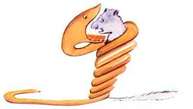</div>',`<p>On disait dans le livre : « Les serpents boas avalent leur proie tout entière, sans la mâcher. Ensuite ils ne peuvent plus bouger et ils dorment pendant les six mois de leur digestion. »</p>
<p>J’ai alors beaucoup réfléchi sur les aventures de la jungle et, à mon tour, j’ai réussi, avec un crayon de couleur, à tracer mon premier dessin. Mon dessin numéro 1. Il était comme ça :</p>`,'<div class="lpp-img-container">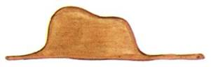</div>',`<p>J’ai montré mon chef-d’œuvre aux grandes personnes et je leur ai demandé si mon dessin leur faisait peur.</p>
<p>Elles m’ont répondu : « Pourquoi un chapeau ferait-il peur ? »</p>
<p>Mon dessin ne représentait pas un chapeau. Il représentait un serpent boa qui digérait un éléphant. J’ai alors dessiné l’intérieur du serpent boa, afin que les grandes personnes puissent comprendre. Elles ont toujours besoin d’explications. Mon dessin numéro 2 était comme ça :</p>`,'<div class="lpp-img-container">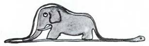</div>',`<p>Les grandes personnes m’ont conseillé de laisser de côté les dessins de serpents boas ouverts ou fermés, et de m’intéresser plutôt à la géographie, à l’histoire, au calcul et à la grammaire. C’est ainsi que j’ai abandonné, à l’âge de six ans, une magnifique carrière de peintre. J’avais été découragé par l’insuccès de mon dessin numéro 1 et de mon dessin numéro 2. Les grandes personnes ne comprennent jamais rien toutes seules, et c’est fatigant, pour les enfants, de toujours et toujours leur donner des explications.</p>
<p>J’ai donc dû choisir un autre métier et j’ai appris à piloter des avions. J’ai volé un peu partout dans le monde. Et la géographie, c’est exact, m’a beaucoup servi. Je savais reconnaître, du premier coup d’œil, la Chine de l’Arizona. C’est très utile, si l’on est égaré pendant la nuit.</p>
<p>J’ai ainsi eu, au cours de ma vie, des tas de contacts avec des tas de gens sérieux. J’ai beaucoup vécu chez les grandes personnes. Je les ai vues de très près. Ça n’a pas trop amélioré mon opinion.</p>`,"<p>Quand j’en rencontrais une qui me paraissait un peu lucide, je faisais l’expérience sur elle de mon dessin numéro 1 que j’ai toujours conservé. Je voulais savoir si elle était vraiment compréhensive. Mais toujours elle me répondait : « C’est un chapeau. » Alors je ne lui parlais ni de serpents boas, ni de forêts vierges, ni d’étoiles. Je me mettais à sa portée. Je lui parlais de bridge, de golf, de politique et de cravates. Et la grande personne était bien contente de connaître un homme aussi raisonnable.</p>",`<h1>CHAPITRE II</h1>
<p>J’ai ainsi vécu seul, sans personne avec qui parler véritablement, jusqu’à une panne dans le désert du Sahara, il y a six ans. Quelque chose s’était cassé dans mon moteur. Et comme je n’avais avec moi ni mécanicien, ni passagers, je me préparai à essayer de réussir, tout seul, une réparation difficile. C’était pour moi une question de vie ou de mort. J’avais à peine de l’eau à boire pour huit jours.</p>
<p>Le premier soir je me suis donc endormi sur le sable à mille milles de toute terre habitée. J’étais bien plus isolé qu’un naufragé sur un radeau au milieu de l’Océan. Alors vous imaginez ma surprise, au lever du jour, quand une drôle de petite voix m’a réveillé. Elle disait :</p>
<p>– S’il vous plaît… dessine-moi un mouton !</p>
<p>– Hein !</p>
<p>– Dessine-moi un mouton…</p>`,`<p>J’ai sauté sur mes pieds comme si j’avais été frappé par la foudre. J’ai bien frotté mes yeux. J’ai bien regardé. Et j’ai vu un petit bonhomme tout à fait extraordinaire qui me considérait gravement. Voilà le meilleur portrait que, plus tard, j’ai réussi à faire de lui. Mais mon dessin, bien sûr, est beaucoup moins ravissant que le modèle. Ce n’est pas ma faute. J’avais été découragé dans ma carrière de peintre par les grandes personnes, à l’âge de six ans, et je n’avais rien appris à dessiner, sauf les boas fermés et les boas ouverts.</p>
<p>Je regardai donc cette apparition avec des yeux tout ronds d’étonnement. N’oubliez pas que je me trouvais à mille milles de toute région habitée. Or mon petit bonhomme ne me semblait ni égaré, ni mort de fatigue, ni mort de faim, ni mort de soif, ni mort de peur. Il n’avait en rien l’apparence d’un enfant perdu au milieu du désert, à mille milles de toute région habitée. Quand je réussis enfin à parler, je lui dis :</p>
<p>– Mais… qu’est-ce que tu fais là ?</p>
<p>Et il me répéta alors, tout doucement, comme une chose très sérieuse :</p>
<p>– S’il vous plaît… dessine-moi un mouton…</p>`,`<p>Quand le mystère est trop impressionnant, on n’ose pas désobéir. Aussi absurde que cela me semblât à mille milles de tous les endroits habités et en danger de mort, je sortis de ma poche une feuille de papier et un stylographe. Mais je me rappelai alors que j’avais surtout étudié la géographie, l’histoire, le calcul et la grammaire et je dis au petit bonhomme (avec un peu de mauvaise humeur) que je ne savais pas dessiner. Il me répondit :</p>
<p>– Ça ne fait rien. Dessine-moi un mouton.</p>
<p>Comme je n’avais jamais dessiné un mouton je refis, pour lui, l’un des deux seuls dessins dont j’étais capable. Celui du boa fermé. Et je fus stupéfait d’entendre le petit bonhomme me répondre :</p>
<p>– Non ! Non ! Je ne veux pas d’un éléphant dans un boa. Un boa c’est très dangereux, et un éléphant c’est très encombrant. Chez moi c’est tout petit. J’ai besoin d’un mouton. Dessine-moi un mouton.</p>
<p>Alors j’ai dessiné.</p>`,'<div class="lpp-img-container">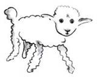</div>',`<p>Il regarda attentivement, puis :</p>
<p>– Non ! Celui-là est déjà très malade. Fais-en un autre.</p>
<p>Je dessinai :</p>`,'<div class="lpp-img-container">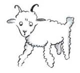</div>',`<p>Mon ami sourit gentiment, avec indulgence :</p>
<p>– Tu vois bien… ce n’est pas un mouton, c’est un bélier. Il a des cornes…</p>
<p>Je refis donc encore mon dessin :</p>`,'<div class="lpp-img-container">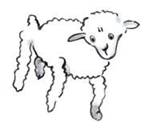</div>',`<p>Mais il fut refusé, comme les précédents :</p>
<p>– Celui-là est trop vieux. Je veux un mouton qui vive longtemps.</p>
<p>Alors, faute de patience, comme j’avais hâte de commencer le démontage de mon moteur, je griffonnai ce dessin-ci.</p>`,'<div class="lpp-img-container">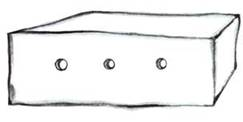</div>',`<p>Et je lançai :</p>
<p>– Ça c’est la caisse. Le mouton que tu veux est dedans.</p>
<p>Mais je fus bien surpris de voir s’illuminer le visage de mon jeune juge :</p>
<p>– C’est tout à fait comme ça que je le voulais ! Crois-tu qu’il faille beaucoup d’herbe à ce mouton ?</p>
<p>– Pourquoi ?</p>
<p>– Parce que chez moi c’est tout petit…</p>
<p>– Ça suffira sûrement. Je t’ai donné un tout petit mouton.</p>
<p>Il pencha la tête vers le dessin :</p>
<p>– Pas si petit que ça… Tiens ! Il s’est endormi…</p>
<p>Et c’est ainsi que je fis la connaissance du petit prince.</p>`,'<div class="lpp-img-container">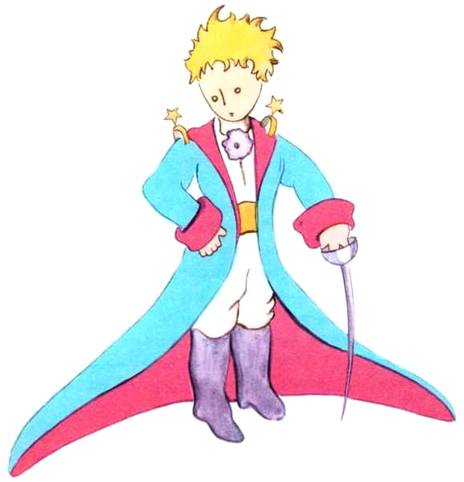</div>','<p align="center">Voilà le meilleur portrait que, plus tard, j’ai réussi à faire de lui</p>',`<h1>CHAPITRE III</h1>
<p>Il me fallut longtemps pour comprendre d’où il venait. Le petit prince, qui me posait beaucoup de questions, ne semblait jamais entendre les miennes. Ce sont des mots prononcés par hasard qui, peu à peu, m’ont tout révélé. Ainsi, quand il aperçut pour la première fois mon avion (je ne dessinerai pas mon avion, c’est un dessin beaucoup trop compliqué pour moi) il me demanda :</p>
<p>– Qu’est-ce que c’est que cette chose-là ?</p>
<p>– Ce n’est pas une chose. Ça vole. C’est un avion. C’est mon avion.</p>
<p>Et j’étais fier de lui apprendre que je volais. Alors il s’écria :</p>
<p>– Comment ! tu es tombé du ciel ?</p>
<p>– Oui, fis-je modestement.</p>
<p>– Ah ! ça c’est drôle…</p>
<p>Et le petit prince eut un très joli éclat de rire qui m’irrita beaucoup. Je désire que l’on prenne mes malheurs au sérieux. Puis il ajouta :</p>
<p>– Alors, toi aussi tu viens du ciel ! De quelle planète es-tu ?</p>
<p>J’entrevis aussitôt une lueur, dans le mystère de sa présence, et j’interrogeai brusquement :</p>
<p>– Tu viens donc d’une autre planète ?</p>
<p>Mais il ne me répondit pas. Il hochait la tête doucement tout en regardant mon avion :</p>
<p>– C’est vrai que, là-dessus, tu ne peux pas venir de bien loin…</p>`,"<p>Et il s’enfonça dans une rêverie qui dura longtemps. Puis, sortant mon mouton de sa poche, il se plongea dans la contemplation de son trésor.</p>",'<div class="lpp-img-container">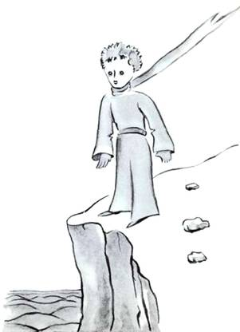</div>',`<p>Vous imaginez combien j’avais pu être intrigué par cette demi-confidence sur « les autres planètes ». Je m’efforçai donc d’en savoir plus long :</p>
<p>– D’où viens-tu, mon petit bonhomme ? Où est-ce « chez toi » ? Où veux-tu emporter mon mouton ?</p>
<p>Il me répondit après un silence méditatif :</p>
<p>– Ce qui est bien, avec la caisse que tu m’as donnée, c’est que, la nuit, ça lui servira de maison.</p>
<p>– Bien sûr. Et si tu es gentil, je te donnerai aussi une corde pour l’attacher pendant le jour. Et un piquet.</p>
<p>La proposition parut choquer le petit prince :</p>
<p>– L’attacher ? Quelle drôle d’idée !</p>
<p>– Mais si tu ne l’attaches pas, il ira n’importe où, et il se perdra…</p>
<p>Et mon ami eut un nouvel éclat de rire :</p>
<p>– Mais où veux-tu qu’il aille !</p>
<p>– N’importe où. Droit devant lui…</p>
<p>Alors le petit prince remarqua gravement :</p>
<p>– Ça ne fait rien, c’est tellement petit, chez moi !</p>
<p>Et, avec un peu de mélancolie, peut-être, il ajouta :</p>
<p>– Droit devant soi on ne peut pas aller bien loin…</p>`,'<div class="lpp-img-container">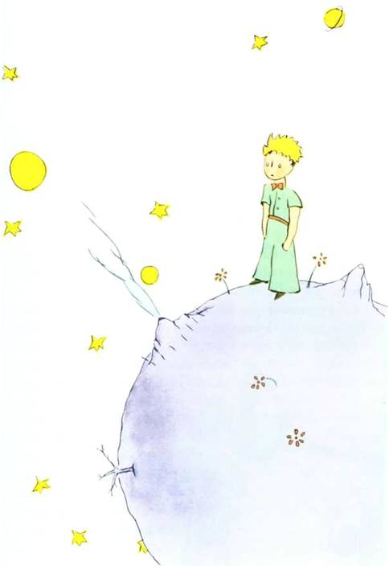</div>',`<h1>CHAPITRE IV</h1>
<p>J’avais ainsi appris une seconde chose très importante : C’est que sa planète d’origine était à peine plus grande qu’une maison !</p>
<p>Ça ne pouvait pas m’étonner beaucoup. Je savais bien qu’en dehors des grosses planètes comme la Terre, Jupiter, Mars, Vénus, auxquelles on a donné des noms, il y en a des centaines d’autres qui sont quelquefois si petites qu’on a beaucoup de mal à les apercevoir au télescope. Quand un astronome découvre l’une d’elles, il lui donne pour nom un numéro. Il l’appelle par exemple : « l’astéroïde 3251. »</p>
<p>J’ai de sérieuses raisons de croire que la planète d’où venait le petit prince est l’astéroïde B 612. Cet astéroïde n’a été aperçu qu’une fois au télescope, en 1909, par un astronome turc.</p>`,'<div class="lpp-img-container">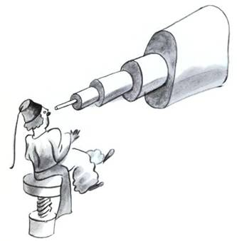</div>',"<p>Il avait fait alors une grande démonstration de sa découverte à un Congrès International d’Astronomie. Mais personne ne l’avait cru à cause de son costume. Les grandes personnes sont comme ça.</p>",'<div class="lpp-img-container">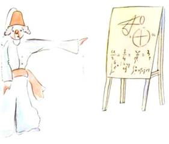</div>',"<p>Heureusement pour la réputation de l’astéroïde B 612 un dictateur turc imposa à son peuple, sous peine de mort, de s’habiller à l’Européenne. L’astronome refit sa démonstration en 1920, dans un habit très élégant. Et cette fois-ci tout le monde fut de son avis.</p>",'<div class="lpp-img-container">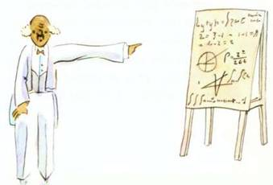</div>',"<p>Si je vous ai raconté ces détails sur l’astéroïde B 612 et si je vous ai confié son numéro, c’est à cause des grandes personnes. Les grandes personnes aiment les chiffres. Quand vous leur parlez d’un nouvel ami, elles ne vous questionnent jamais sur l’essentiel. Elles ne vous disent jamais : « Quel est le son de sa voix ? Quels sont les jeux qu’il préfère ? Est-ce qu’il collectionne les papillons ? » Elles vous demandent : « Quel âge a-t-il ? Combien a-t-il de frères ? Combien pèse-t-il ? Combien gagne son père ? » Alors seulement elles croient le connaître. Si vous dites aux grandes personnes : « J’ai vu une belle maison en briques roses, avec des géraniums aux fenêtres et des colombes sur le toit… » elles ne parviennent pas à s’imaginer cette maison. Il faut leur dire : « J’ai vu une maison de cent mille francs. » Alors elles s’écrient : « Comme c’est joli ! »</p>",`<p>Ainsi, si vous leur dites : « La preuve que le petit prince a existé c’est qu’il était ravissant, qu’il riait, et qu’il voulait un mouton. Quand on veut un mouton, c’est la preuve qu’on existe » elles hausseront les épaules et vous traiteront d’enfant ! Mais si vous leur dites : « La planète d’où il venait est l’astéroïde B 612 » alors elles seront convaincues, et elles vous laisseront tranquille avec leurs questions. Elles sont comme ça. Il ne faut pas leur en vouloir. Les enfants doivent être très indulgents envers les grandes personnes.</p>
<p>Mais, bien sûr, nous qui comprenons la vie, nous nous moquons bien des numéros ! J’aurais aimé commencer cette histoire à la façon des contes de fées. J’aurais aimé dire :</p>
<p>« Il était une fois un petit prince qui habitait une planète à peine plus grande que lui, et qui avait besoin d’un ami… » Pour ceux qui comprennent la vie, ça aurait eu l’air beaucoup plus vrai.</p>`,"<p>Car je n’aime pas qu’on lise mon livre à la légère. J’éprouve tant de chagrin à raconter ces souvenirs. Il y a six ans déjà que mon ami s’en est allé avec son mouton. Si j’essaie ici de le décrire, c’est afin de ne pas l’oublier. C’est triste d’oublier un ami. Tout le monde n’a pas eu un ami. Et je puis devenir comme les grandes personnes qui ne s’intéressent plus qu’aux chiffres. C’est donc pour ça encore que j’ai acheté une boîte de couleurs et des crayons. C’est dur de se remettre au dessin, à mon âge, quand on n’a jamais fait d’autres tentatives que celle d’un boa fermé et celle d’un boa ouvert, à l’âge de six ans ! J’essaierai, bien sûr, de faire des portraits le plus ressemblants possible. Mais je ne suis pas tout à fait certain de réussir. Un dessin va, et l’autre ne ressemble plus. Je me trompe un peu aussi sur la taille. Ici le petit prince est trop grand. Là il est trop petit. J’hésite aussi sur la couleur de son costume. Alors je tâtonne comme ci et comme ça, tant bien que mal. Je me tromperai enfin sur certains détails plus importants. Mais ça, il faudra me le pardonner. Mon ami ne donnait jamais d’explications. Il me croyait peut-être semblable à lui. Mais moi, malheureusement, je ne sais pas voir les moutons à travers les caisses. Je suis peut-être un peu comme les grandes personnes. J’ai dû vieillir.</p>",`<h1>CHAPITRE V</h1>
<p>Chaque jour j’apprenais quelque chose sur la planète, sur le départ, sur le voyage. Ça venait tout doucement, au hasard des réflexions. C’est ainsi que, le troisième jour, je connus le drame des baobabs.</p>
<p>Cette fois-ci encore ce fut grâce au mouton, car brusquement le petit prince m’interrogea, comme pris d’un doute grave :</p>
<p>– C’est bien vrai, n’est-ce pas, que les moutons mangent les arbustes ?</p>
<p>– Oui. C’est vrai.</p>
<p>– Ah ! Je suis content.</p>
<p>Je ne compris pas pourquoi il était si important que les moutons mangeassent les arbustes. Mais le petit prince ajouta :</p>
<p>– Par conséquent ils mangent aussi les baobabs ?</p>
<p>Je fis remarquer au petit prince que les baobabs ne sont pas des arbustes, mais des arbres grands comme des églises et que, si même il emportait avec lui tout un troupeau d’éléphants, ce troupeau ne viendrait pas à bout d’un seul baobab.</p>
<p>L’idée du troupeau d’éléphants fit rire le petit prince :</p>
<p>– Il faudrait les mettre les uns sur les autres…</p>`,'<div class="lpp-img-container">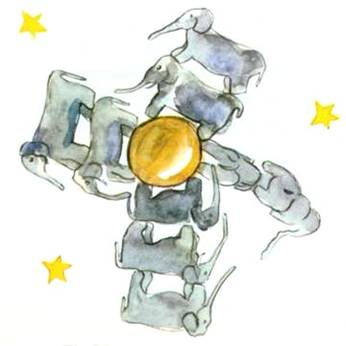</div>',`<p>Mais il remarqua avec sagesse :</p>
<p>– Les baobabs, avant de grandir, ça commence par être petit.</p>
<p>– C’est exact ! Mais pourquoi veux-tu que tes moutons mangent les petits baobabs ?</p>
<p>Il me répondit : « Ben ! Voyons ! » comme s’il s’agissait là d’une évidence. Et il me fallut un grand effort d’intelligence pour comprendre à moi seul ce problème.</p>`,"<p>Et en effet, sur la planète du petit prince, il y avait comme sur toutes les planètes, de bonnes herbes et de mauvaises herbes. Par conséquent de bonnes graines de bonnes herbes et de mauvaises graines de mauvaises herbes. Mais les graines sont invisibles. Elles dorment dans le secret de la terre jusqu’à ce qu’il prenne fantaisie à l’une d’elles de se réveiller. Alors elle s’étire, et pousse d’abord timidement vers le soleil une ravissante petite brindille inoffensive. S’il s’agit d’une brindille de radis ou de rosier, on peut la laisser pousser comme elle veut. Mais s’il s’agit d’une mauvaise plante, il faut arracher la plante aussitôt, dès qu’on a su la reconnaître. Or il y avait des graines terribles sur la planète du petit prince… c’étaient les graines de baobabs. Le sol de la planète en était infesté. Or un baobab, si l’on s’y prend trop tard, on ne peut jamais plus s’en débarrasser. Il encombre toute la planète. Il la perfore de ses racines. Et si la planète est trop petite, et si les baobabs sont trop nombreux, ils la font éclater.</p>",'<div class="lpp-img-container">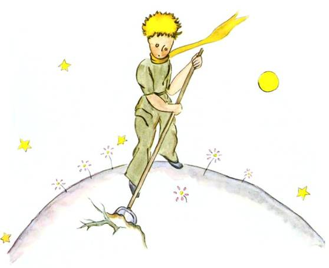</div>',`<p>« C’est une question de discipline, me disait plus tard le petit prince. Quand on a terminé sa toilette du matin, il faut faire soigneusement la toilette de la planète. Il faut s’astreindre régulièrement à arracher les baobabs dès qu’on les distingue d’avec les rosiers auxquels ils ressemblent beaucoup quand ils sont très jeunes. C’est un travail très ennuyeux, mais très facile. »</p>
<p>Et un jour il me conseilla de m’appliquer à réussir un beau dessin, pour bien faire entrer ça dans la tête des enfants de chez moi. « S’ils voyagent un jour, me disait-il, ça pourra leur servir. Il est quelquefois sans inconvénient de remettre à plus tard son travail. Mais, s’il s’agit des baobabs, c’est toujours une catastrophe. J’ai connu une planète, habitée par un paresseux. Il avait négligé trois arbustes… »</p>`,"<p>Et, sur les indications du petit prince, j’ai dessiné cette planète-là. Je n’aime guère prendre le ton d’un moraliste. Mais le danger des baobabs est si peu connu, et les risques courus par celui qui s’égarerait dans un astéroïde sont si considérables, que, pour une fois, je fais exception à ma réserve. Je dis : « Enfants ! Faites attention aux baobabs ! » C’est pour avertir mes amis d’un danger qu’ils frôlaient depuis longtemps, comme moi-même, sans le connaître, que j’ai tant travaillé ce dessin-là. La leçon que je donnais en valait la peine. Vous vous demanderez peut-être : Pourquoi n’y a-t-il pas, dans ce livre, d’autres dessins aussi grandioses que le dessin des baobabs ? La réponse est bien simple : J’ai essayé mais je n’ai pas pu réussir. Quand j’ai dessiné les baobabs j’ai été animé par le sentiment de l’urgence.</p>",'<div class="lpp-img-container">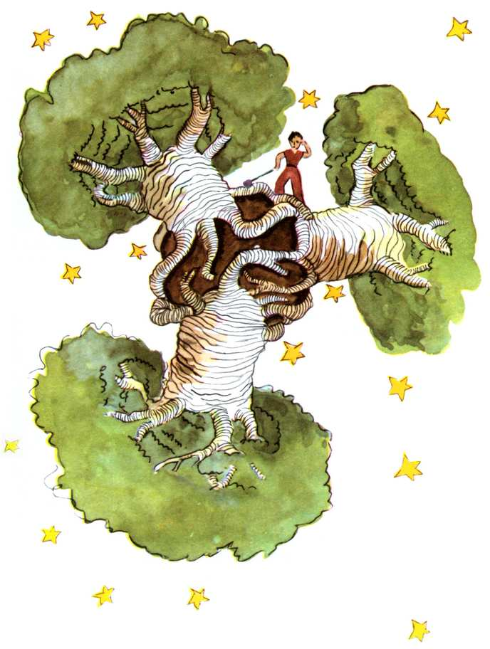</div>',`<h1>CHAPITRE VI</h1>
<p>Ah ! petit prince, j’ai compris, peu à peu, ainsi, ta petite vie mélancolique. Tu n’avais eu longtemps pour distraction que la douceur des couchers de soleil. J’ai appris ce détail nouveau, le quatrième jour au matin, quand tu m’as dit :</p>
<p>– J’aime bien les couchers de soleil. Allons voir un coucher de soleil…</p>
<p>– Mais il faut attendre…</p>
<p>– Attendre quoi ?</p>
<p>– Attendre que le soleil se couche.</p>
<p>Tu as eu l’air très surpris d’abord, et puis tu as ri de toi-même. Et tu m’as dit :</p>
<p>– Je me crois toujours chez moi !</p>
<p>En effet. Quand il est midi aux États-Unis, le soleil, tout le monde le sait, se couche sur la France. Il suffirait de pouvoir aller en France en une minute pour assister au coucher de soleil. Malheureusement la France est bien trop éloignée. Mais, sur ta si petite planète, il te suffisait de tirer ta chaise de quelques pas. Et tu regardais le crépuscule chaque fois que tu le désirais…</p>
<p>– Un jour, j’ai vu le soleil se coucher quarante-trois fois !</p>
<p>Et un peu plus tard tu ajoutais :</p>
<p>– Tu sais… quand on est tellement triste on aime les couchers de soleil…</p>
<p>– Le jour des quarante-trois fois tu étais donc tellement triste ?</p>
<p>Mais le petit prince ne répondit pas.</p>`,'<div class="lpp-img-container">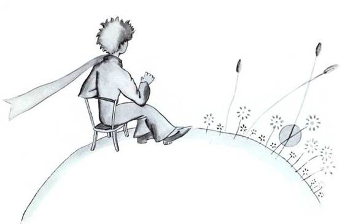</div>',`<h1>CHAPITRE VII</h1>
<p>Le cinquième jour, toujours grâce au mouton, ce secret de la vie du petit prince me fut révélé. Il me demanda avec brusquerie, sans préambule, comme le fruit d’un problème longtemps médité en silence :</p>
<p>– Un mouton, s’il mange les arbustes, il mange aussi les fleurs ?</p>
<p>– Un mouton mange tout ce qu’il rencontre.</p>
<p>– Même les fleurs qui ont des épines ?</p>
<p>– Oui. Même les fleurs qui ont des épines.</p>
<p>– Alors les épines, à quoi servent-elles ?</p>
<p>Je ne le savais pas. J’étais alors très occupé à essayer de dévisser un boulon trop serré de mon moteur. J’étais très soucieux car ma panne commençait de m’apparaître comme très grave, et l’eau à boire qui s’épuisait me faisait craindre le pire.</p>
<p>– Les épines, à quoi servent-elles ?</p>
<p>Le petit prince ne renonçait jamais à une question, une fois qu’il l’avait posée. J’étais irrité par mon boulon et je répondis n’importe quoi :</p>
<p>– Les épines, ça ne sert à rien, c’est de la pure méchanceté de la part des fleurs !</p>
<p>– Oh !</p>
<p>Mais après un silence il me lança, avec une sorte de rancune :</p>
<p>– Je ne te crois pas ! Les fleurs sont faibles. Elles sont naïves. Elles se rassurent comme elles peuvent. Elles se croient terribles avec leurs épines…</p>`,`<p>Je ne répondis rien. À cet instant-là je me disais : « Si ce boulon résiste encore, je le ferai sauter d’un coup de marteau. » Le petit prince dérangea de nouveau mes réflexions :</p>
<p>– Et tu crois, toi, que les fleurs…</p>
<p>– Mais non ! Mais non ! Je ne crois rien ! J’ai répondu n’importe quoi. Je m’occupe, moi, de choses sérieuses !</p>
<p>Il me regarda stupéfait.</p>
<p>– De choses sérieuses !</p>
<p>Il me voyait, mon marteau à la main, et les doigts noirs de cambouis, penché sur un objet qui lui semblait très laid.</p>
<p>– Tu parles comme les grandes personnes !</p>
<p>Ça me fit un peu honte. Mais, impitoyable, il ajouta :</p>
<p>– Tu confonds tout… tu mélanges tout !</p>
<p>Il était vraiment très irrité. Il secouait au vent des cheveux tout dorés :</p>
<p>– Je connais une planète où il y a un Monsieur cramoisi. Il n’a jamais respiré une fleur. Il n’a jamais regardé une étoile. Il n’a jamais aimé personne. Il n’a jamais rien fait d’autre que des additions. Et toute la journée il répète comme toi : « Je suis un homme sérieux ! Je suis un homme sérieux ! » et ça le fait gonfler d’orgueil. Mais ce n’est pas un homme, c’est un champignon !</p>
<p>– Un quoi ?</p>
<p>– Un champignon !</p>
<p>Le petit prince était maintenant tout pâle de colère.</p>`,`<p>– Il y a des millions d’années que les fleurs fabriquent des épines. Il y a des millions d’années que les moutons mangent quand même les fleurs. Et ce n’est pas sérieux de chercher à comprendre pourquoi elles se donnent tant de mal pour se fabriquer des épines qui ne servent jamais à rien ? Ce n’est pas important la guerre des moutons et des fleurs ? Ce n’est pas plus sérieux et plus important que les additions d’un gros Monsieur rouge ? Et si je connais, moi, une fleur unique au monde, qui n’existe nulle part, sauf dans ma planète, et qu’un petit mouton peut anéantir d’un seul coup, comme ça, un matin, sans se rendre compte de ce qu’il fait, ce n’est pas important ça !</p>
<p>Il rougit, puis reprit :</p>
<p>– Si quelqu’un aime une fleur qui n’existe qu’à un exemplaire dans les millions et les millions d’étoiles, ça suffit pour qu’il soit heureux quand il les regarde. Il se dit : « Ma fleur est là quelque part… » Mais si le mouton mange la fleur, c’est pour lui comme si, brusquement, toutes les étoiles s’éteignaient ! Et ce n’est pas important ça !</p>`,"<p>Il ne put rien dire de plus. Il éclata brusquement en sanglots. La nuit était tombée. J’avais lâché mes outils. Je me moquais bien de mon marteau, de mon boulon, de la soif et de la mort. Il y avait, sur une étoile, une planète, la mienne, la Terre, un petit prince à consoler ! Je le pris dans les bras. Je le berçai. Je lui disais : « La fleur que tu aimes n’est pas en danger… Je lui dessinerai une muselière, à ton mouton… Je te dessinerai une armure pour ta fleur… Je… » Je ne savais pas trop quoi dire. Je me sentais très maladroit. Je ne savais comment l’atteindre, où le rejoindre… C’est tellement mystérieux, le pays des larmes.</p>",'<div class="lpp-img-container">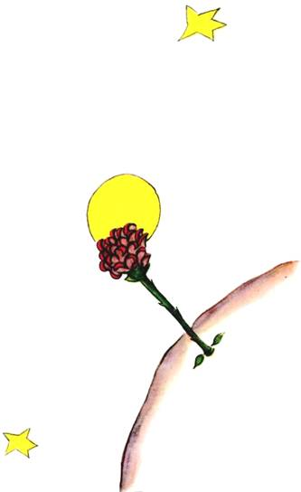</div>',"<h1>CHAPITRE VIII</h1>","<p>J’appris bien vite à mieux connaître cette fleur. Il y avait toujours eu, sur la planète du petit prince, des fleurs très simples, ornées d’un seul rang de pétales, et qui ne tenaient point de place, et qui ne dérangeaient personne. Elles apparaissaient un matin dans l’herbe, et puis elles s’éteignaient le soir. Mais celle-là avait germé un jour, d’une graine apportée d’on ne sait où, et le petit prince avait surveillé de très près cette brindille qui ne ressemblait pas aux autres brindilles. Ça pouvait être un nouveau genre de baobab. Mais l’arbuste cessa vite de croître, et commença de préparer une fleur. Le petit prince, qui assistait à l’installation d’un bouton énorme, sentait bien qu’il en sortirait une apparition miraculeuse, mais la fleur n’en finissait pas de se préparer à être belle, à l’abri de sa chambre verte. Elle choisissait avec soin ses couleurs. Elle s’habillait lentement, elle ajustait un à un ses pétales. Elle ne voulait pas sortir toute fripée comme les coquelicots. Elle ne voulait apparaître que dans le plein rayonnement de sa beauté. Eh ! oui. Elle était très coquette ! Sa toilette mystérieuse avait donc duré des jours et des jours. Et puis voici qu’un matin, justement à l’heure du lever du soleil, elle s’était montrée.</p>",`<p>Et elle, qui avait travaillé avec tant de précision, dit en bâillant :</p>
<p>– Ah ! Je me réveille à peine… Je vous demande pardon… Je suis encore toute décoiffée…</p>
<p>Le petit prince, alors, ne put contenir son admiration :</p>
<p>– Que vous êtes belle !</p>
<p>– N’est-ce pas, répondit doucement la fleur. Et je suis née en même temps que le soleil…</p>`,'<div class="lpp-img-container">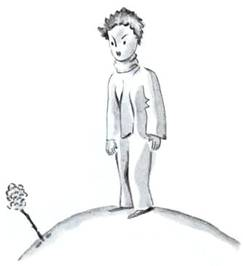</div>',`<p>Le petit prince devina bien qu’elle n’était pas trop modeste, mais elle était si émouvante !</p>
<p>– C’est l’heure, je crois, du petit déjeuner, avait-elle bientôt ajouté, auriez-vous la bonté de penser à moi…</p>
<p>Et le petit prince, tout confus, ayant été chercher un arrosoir d’eau fraîche, avait servi la fleur.</p>`,'<div class="lpp-img-container">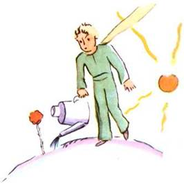</div>',`<p>Ainsi l’avait-elle bien vite tourmenté par sa vanité un peu ombrageuse. Un jour, par exemple, parlant de ses quatre épines, elle avait dit au petit prince :</p>
<p>– Ils peuvent venir, les tigres, avec leurs griffes !</p>`,'<div class="lpp-img-container">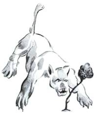</div>',`<p>– Il n’y a pas de tigres sur ma planète, avait objecté le petit prince, et puis les tigres ne mangent pas l’herbe.</p>
<p>– Je ne suis pas une herbe, avait doucement répondu la fleur.</p>
<p>– Pardonnez-moi…</p>
<p>– Je ne crains rien des tigres, mais j’ai horreur des courants d’air. Vous n’auriez pas un paravent ?</p>
<p>« Horreur des courants d’air… ce n’est pas de chance, pour une plante, avait remarqué le petit prince. Cette fleur est bien compliquée… »</p>
<p>– Le soir vous me mettrez sous globe. Il fait très froid chez vous. C’est mal installé. Là d’où je viens…</p>
<p>Mais elle s’était interrompue. Elle était venue sous forme de graine. Elle n’avait rien pu connaître des autres mondes. Humiliée de s’être laissé surprendre à préparer un mensonge aussi naïf, elle avait toussé deux ou trois fois, pour mettre le petit prince dans son tort :</p>
<p>– Ce paravent ?…</p>
<p>– J’allais le chercher mais vous me parliez !</p>
<p>Alors elle avait forcé sa toux pour lui infliger quand même des remords.</p>`,'<div class="lpp-img-container">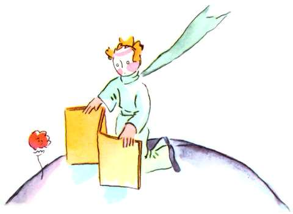</div>',`<p>Ainsi le petit prince, malgré la bonne volonté de son amour, avait vite douté d’elle. Il avait pris au sérieux des mots sans importance, et était devenu très malheureux.</p>
<p>« J’aurais dû ne pas l’écouter, me confia-t-il un jour, il ne faut jamais écouter les fleurs. Il faut les regarder et les respirer. La mienne embaumait ma planète, mais je ne savais pas m’en réjouir. Cette histoire de griffes, qui m’avait tellement agacé, eût dû m’attendrir… »</p>
<p>Il me confia encore :</p>
<p>« Je n’ai alors rien su comprendre ! J’aurais dû la juger sur les actes et non sur les mots. Elle m’embaumait et m’éclairait. Je n’aurais jamais dû m’enfuir ! J’aurais dû deviner sa tendresse derrière ses pauvres ruses. Les fleurs sont si contradictoires ! Mais j’étais trop jeune pour savoir l’aimer. »</p>`,'<div class="lpp-img-container">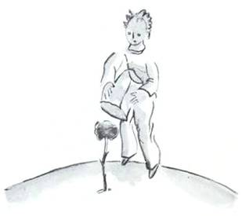</div>',"<h1>CHAPITRE IX</h1>",'<div class="lpp-img-container">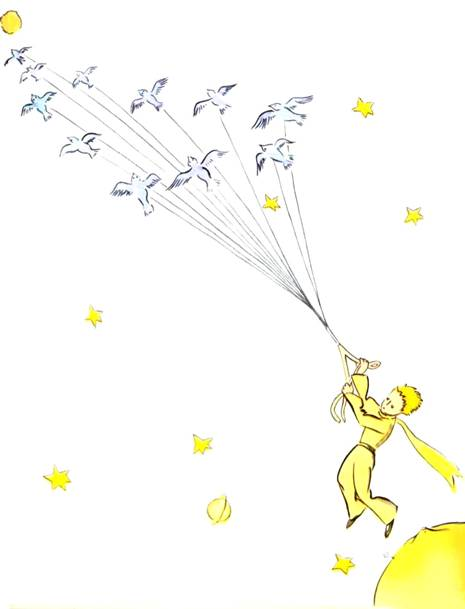</div>',"<p>Je crois qu’il profita, pour son évasion, d’une migration d’oiseaux sauvages. Au matin du départ il mit sa planète bien en ordre. Il ramona soigneusement ses volcans en activité. Il possédait deux volcans en activité. Et c’était bien commode pour faire chauffer le petit déjeuner du matin. Il possédait aussi un volcan éteint. Mais, comme il disait, « On ne sait jamais ! » Il ramona donc également le volcan éteint. S’ils sont bien ramonés, les volcans brûlent doucement et régulièrement, sans éruptions. Les éruptions volcaniques sont comme des feux de cheminée. Évidemment sur notre terre nous sommes beaucoup trop petits pour ramoner nos volcans. C’est pourquoi ils nous causent des tas d’ennuis.</p>",'<div class="lpp-img-container">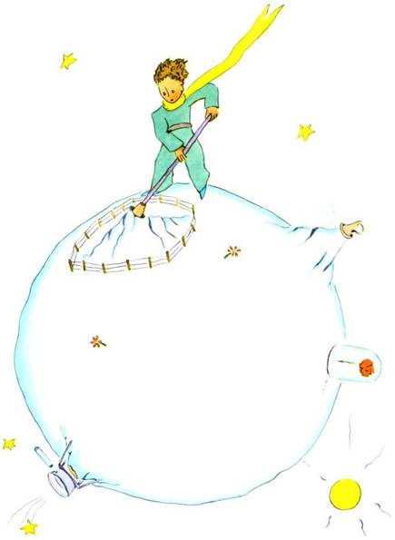</div>',`<p>Le petit prince arracha aussi, avec un peu de mélancolie, les dernières pousses de baobabs. Il croyait ne jamais devoir revenir. Mais tous ces travaux familiers lui parurent, ce matin-là, extrêmement doux. Et, quand il arrosa une dernière fois la fleur, et se prépara à la mettre à l’abri sous son globe, il se découvrit l’envie de pleurer.</p>
<p>– Adieu, dit-il à la fleur.</p>
<p>Mais elle ne lui répondit pas.</p>
<p>– Adieu, répéta-t-il.</p>
<p>La fleur toussa. Mais ce n’était pas à cause de son rhume.</p>
<p>– J’ai été sotte, lui dit-elle enfin. Je te demande pardon. Tâche d’être heureux.</p>
<p>Il fut surpris par l’absence de reproches. Il restait là tout déconcerté, le globe en l’air. Il ne comprenait pas cette douceur calme.</p>
<p>– Mais oui, je t’aime, lui dit la fleur. Tu n’en as rien su, par ma faute. Cela n’a aucune importance. Mais tu as été aussi sot que moi. Tâche d’être heureux… Laisse ce globe tranquille. Je n’en veux plus.</p>
<p>– Mais le vent…</p>
<p>– Je ne suis pas si enrhumée que ça… L’air frais de la nuit me fera du bien. Je suis une fleur.</p>
<p>– Mais les bêtes…</p>`,`<p>– Il faut bien que je supporte deux ou trois chenilles si je veux connaître les papillons. Il paraît que c’est tellement beau. Sinon qui me rendra visite ? Tu seras loin, toi. Quant aux grosses bêtes, je ne crains rien. J’ai mes griffes.</p>
<p>Et elle montrait naïvement ses quatre épines. Puis elle ajouta :</p>
<p>– Ne traîne pas comme ça, c’est agaçant. Tu as décidé de partir. Va-t’en.</p>
<p>Car elle ne voulait pas qu’il la vît pleurer. C’était une fleur tellement orgueilleuse…</p>`,`<h1>CHAPITRE X</h1>
<p>Il se trouvait dans la région des astéroïdes 325, 326, 327, 328, 329 et 330. Il commença donc par les visiter pour y chercher une occupation et pour s’instruire.</p>
<p>La première était habitée par un roi. Le roi siégeait, habillé de pourpre et d’hermine, sur un trône très simple et cependant majestueux.</p>`,'<div class="lpp-img-container">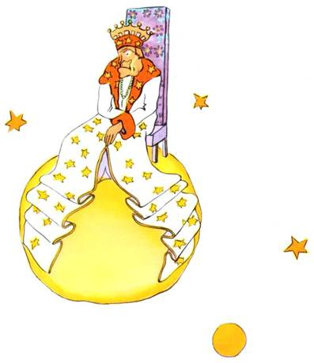</div>',`<p>– Ah ! Voilà un sujet, s’écria le roi quand il aperçut le petit prince.</p>
<p>Et le petit prince se demanda :</p>
<p>« Comment peut-il me reconnaître puisqu’il ne m’a encore jamais vu ! »</p>
<p>Il ne savait pas que, pour les rois, le monde est très simplifié. Tous les hommes sont des sujets.</p>
<p>– Approche-toi que je te voie mieux, lui dit le roi qui était tout fier d’être roi pour quelqu’un.</p>
<p>Le petit prince chercha des yeux où s’asseoir, mais la planète était toute encombrée par le magnifique manteau d’hermine. Il resta donc debout, et, comme il était fatigué, il bâilla.</p>
<p>– Il est contraire à l’étiquette de bâiller en présence d’un roi, lui dit le monarque. Je te l’interdis.</p>
<p>– Je ne peux pas m’en empêcher, répondit le petit prince tout confus. J’ai fait un long voyage et je n’ai pas dormi…</p>
<p>– Alors, lui dit le roi, je t’ordonne de bâiller. Je n’ai vu personne bâiller depuis des années. Les bâillements sont pour moi des curiosités. Allons ! bâille encore. C’est un ordre.</p>
<p>– Ça m’intimide… je ne peux plus… fit le petit prince tout rougissant.</p>
<p>– Hum ! Hum ! répondit le roi. Alors je… je t’ordonne tantôt de bâiller et tantôt de…</p>
<p>Il bredouillait un peu et paraissait vexé.</p>`,`<p>Car le roi tenait essentiellement à ce que son autorité fût respectée. Il ne tolérait pas la désobéissance. C’était un monarque absolu. Mais, comme il était très bon, il donnait des ordres raisonnables.</p>
<p>« Si j’ordonnais, disait-il couramment, si j’ordonnais à un général de se changer en oiseau de mer, et si le général n’obéissait pas, ce ne serait pas la faute du général. Ce serait ma faute. »</p>
<p>– Puis-je m’asseoir ? s’enquit timidement le petit prince.</p>
<p>– Je t’ordonne de t’asseoir, lui répondit le roi, qui ramena majestueusement un pan de son manteau d’hermine.</p>
<p>Mais le petit prince s’étonnait. La planète était minuscule. Sur quoi le roi pouvait-il bien régner ?</p>
<p>– Sire, lui dit-il… je vous demande pardon de vous interroger…</p>
<p>– Je t’ordonne de m’interroger, se hâta de dire le roi.</p>
<p>– Sire… sur quoi régnez-vous ?</p>
<p>– Sur tout, répondit le roi, avec une grande simplicité.</p>
<p>– Sur tout ?</p>
<p>Le roi d’un geste discret désigna sa planète, les autres planètes et les étoiles.</p>
<p>– Sur tout ça ? dit le petit prince.</p>
<p>– Sur tout ça… répondit le roi.</p>
<p>Car non seulement c’était un monarque absolu mais c’était un monarque universel.</p>
<p>– Et les étoiles vous obéissent ?</p>`,`<p>– Bien sûr, lui dit le roi. Elles obéissent aussitôt. Je ne tolère pas l’indiscipline.</p>
<p>Un tel pouvoir émerveilla le petit prince. S’il l’avait détenu lui-même, il aurait pu assister, non pas à quarante-quatre, mais à soixante-douze, ou même à cent, ou même à deux cents couchers de soleil dans la même journée, sans avoir jamais à tirer sa chaise ! Et comme il se sentait un peu triste à cause du souvenir de sa petite planète abandonnée, il s’enhardit à solliciter une grâce du roi :</p>
<p>– Je voudrais voir un coucher de soleil… Faites-moi plaisir… Ordonnez au soleil de se coucher…</p>
<p>– Si j’ordonnais à un général de voler d’une fleur à l’autre à la façon d’un papillon, ou d’écrire une tragédie, ou de se changer en oiseau de mer, et si le général n’exécutait pas l’ordre reçu, qui, de lui ou de moi, serait dans son tort ?</p>
<p>– Ce serait vous, dit fermement le petit prince.</p>
<p>– Exact. Il faut exiger de chacun ce que chacun peut donner, reprit le roi. L’autorité repose d’abord sur la raison. Si tu ordonnes à ton peuple d’aller se jeter à la mer, il fera la révolution. J’ai le droit d’exiger l’obéissance parce que mes ordres sont raisonnables.</p>`,`<p>– Alors mon coucher de soleil ? rappela le petit prince qui jamais n’oubliait une question une fois qu’il l’avait posée.</p>
<p>– Ton coucher de soleil, tu l’auras. Je l’exigerai. Mais j’attendrai, dans ma science du gouvernement, que les conditions soient favorables.</p>
<p>– Quand ça sera-t-il ? s’informa le petit prince.</p>
<p>– Hem ! hem ! lui répondit le roi, qui consulta d’abord un gros calendrier, hem ! hem ! ce sera, vers… vers… ce sera ce soir vers sept heures quarante ! Et tu verras comme je suis bien obéi.</p>
<p>Le petit prince bâilla. Il regrettait son coucher de soleil manqué. Et puis il s’ennuyait déjà un peu :</p>
<p>– Je n’ai plus rien à faire ici, dit-il au roi. Je vais repartir !</p>
<p>– Ne pars pas, répondit le roi qui était si fier d’avoir un sujet. Ne pars pas, je te fais ministre !</p>
<p>– Ministre de quoi ?</p>
<p>– De… de la justice !</p>
<p>– Mais il n’y a personne à juger !</p>
<p>– On ne sait pas, lui dit le roi. Je n’ai pas fait encore le tour de mon royaume. Je suis très vieux, je n’ai pas de place pour un carrosse, et ça me fatigue de marcher.</p>
<p>– Oh ! Mais j’ai déjà vu, dit le petit prince qui se pencha pour jeter encore un coup d’œil sur l’autre côté de la planète. Il n’y a personne là-bas non plus…</p>`,`<p>– Tu te jugeras donc toi-même, lui répondit le roi. C’est le plus difficile. Il est bien plus difficile de se juger soi-même que de juger autrui. Si tu réussis à bien te juger, c’est que tu es un véritable sage.</p>
<p>– Moi, dit le petit prince, je puis me juger moi-même n’importe où. Je n’ai pas besoin d’habiter ici.</p>
<p>– Hem ! Hem ! dit le roi, je crois bien que sur ma planète il y a quelque part un vieux rat. Je l’entends la nuit. Tu pourras juger ce vieux rat. Tu le condamneras à mort de temps en temps. Ainsi sa vie dépendra de ta justice. Mais tu le gracieras chaque fois pour l’économiser. Il n’y en a qu’un.</p>
<p>– Moi, répondit le petit prince, je n’aime pas condamner à mort, et je crois bien que je m’en vais.</p>
<p>– Non, dit le roi.</p>
<p>Mais le petit prince, ayant achevé ses préparatifs, ne voulut point peiner le vieux monarque :</p>
<p>– Si Votre Majesté désirait être obéie ponctuellement, elle pourrait me donner un ordre raisonnable. Elle pourrait m’ordonner, par exemple, de partir avant une minute. Il me semble que les conditions sont favorables…</p>
<p>Le roi n’ayant rien répondu, le petit prince hésita d’abord, puis, avec un soupir, prit le départ.</p>
<p>– Je te fais mon ambassadeur, se hâta alors de crier le roi.</p>`,`<p>Il avait un grand air d’autorité.</p>
<p>« Les grandes personnes sont bien étranges », se dit le petit prince, en lui-même, durant son voyage.</p>`,`<h1>CHAPITRE XI</h1>
<p>La seconde planète était habitée par un vaniteux :</p>
<p>– Ah ! Ah ! Voilà la visite d’un admirateur ! s’écria de loin le vaniteux dès qu’il aperçut le petit prince.</p>`,'<div class="lpp-img-container">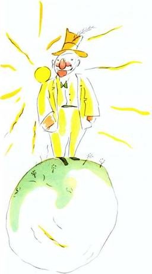</div>',`<p>Car, pour les vaniteux, les autres hommes sont des admirateurs.</p>
<p>– Bonjour, dit le petit prince. Vous avez un drôle de chapeau.</p>
<p>– C’est pour saluer, lui répondit le vaniteux. C’est pour saluer quand on m’acclame. Malheureusement il ne passe jamais personne par ici.</p>
<p>– Ah oui ? dit le petit prince qui ne comprit pas.</p>
<p>– Frappe tes mains l’une contre l’autre, conseilla donc le vaniteux.</p>
<p>Le petit prince frappa ses mains l’une contre l’autre. Le vaniteux salua modestement en soulevant son chapeau.</p>
<p>« Ça c’est plus amusant que la visite au roi », se dit en lui-même le petit prince. Et il recommença de frapper ses mains l’une contre l’autre. Le vaniteux recommença de saluer en soulevant son chapeau.</p>
<p>Après cinq minutes d’exercice le petit prince se fatigua de la monotonie du jeu :</p>
<p>– Et, pour que le chapeau tombe, demanda-t-il, que faut-il faire ?</p>
<p>Mais le vaniteux ne l’entendit pas. Les vaniteux n’entendent jamais que les louanges.</p>
<p>– Est-ce que tu m’admires vraiment beaucoup ? demanda-t-il au petit prince.</p>
<p>– Qu’est-ce que signifie admirer ?</p>
<p>– Admirer signifie reconnaître que je suis l’homme le plus beau, le mieux habillé, le plus riche et le plus intelligent de la planète.</p>`,`<p>– Mais tu es seul sur ta planète !</p>
<p>– Fais-moi ce plaisir. Admire-moi quand même !</p>
<p>– Je t’admire, dit le petit prince, en haussant un peu les épaules, mais en quoi cela peut-il bien t’intéresser ?</p>
<p>Et le petit prince s’en fut.</p>
<p>« Les grandes personnes sont décidément bien bizarres », se dit-il simplement en lui-même durant son voyage.</p>`,`<h1>CHAPITRE XII</h1>
<p>La planète suivante était habitée par un buveur. Cette visite fut très courte, mais elle plongea le petit prince dans une grande mélancolie :</p>`,'<div class="lpp-img-container">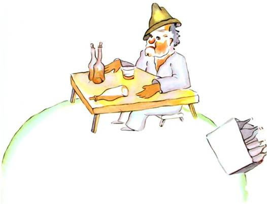</div>',`<p>– Que fais-tu là ? dit-il au buveur, qu’il trouva installé en silence devant une collection de bouteilles vides et une collection de bouteilles pleines.</p>
<p>– Je bois, répondit le buveur, d’un air lugubre.</p>
<p>– Pourquoi bois-tu ? lui demanda le petit prince.</p>
<p>– Pour oublier, répondit le buveur.</p>
<p>– Pour oublier quoi ? s’enquit le petit prince qui déjà le plaignait.</p>
<p>– Pour oublier que j’ai honte, avoua le buveur en baissant la tête.</p>
<p>– Honte de quoi ? s’informa le petit prince qui désirait le secourir.</p>
<p>– Honte de boire ! acheva le buveur qui s’enferma définitivement dans le silence.</p>
<p>Et le petit prince s’en fut, perplexe.</p>
<p>« Les grandes personnes sont décidément très très bizarres », se disait-il en lui-même durant le voyage.</p>`,`<h1>CHAPITRE XIII</h1>
<p>La quatrième planète était celle du businessman. Cet homme était si occupé qu’il ne leva même pas la tête à l’arrivée du petit prince.</p>`,'<div class="lpp-img-container">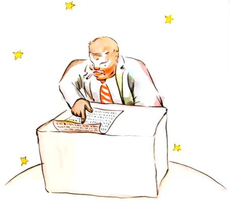</div>',`<p>– Bonjour, lui dit celui-ci. Votre cigarette est éteinte.</p>
<p>– Trois et deux font cinq. Cinq et sept douze. Douze et trois quinze. Bonjour. Quinze et sept vingt-deux. Vingt-deux et six vingt-huit. Pas le temps de la rallumer. Vingt-six et cinq trente et un. Ouf ! Ça fait donc cinq cent un millions six cent vingt-deux mille sept cent trente et un.</p>
<p>– Cinq cents millions de quoi ?</p>
<p>– Hein ? Tu es toujours là ? Cinq cent un millions de… je ne sais plus… J’ai tellement de travail ! Je suis sérieux, moi, je ne m’amuse pas à des balivernes ! Deux et cinq sept…</p>
<p>– Cinq cent un millions de quoi ? répéta le petit prince qui jamais de sa vie, n’avait renoncé à une question, une fois qu’il l’avait posée.</p>
<p>Le businessman leva la tête :</p>`,`<p>– Depuis cinquante-quatre ans que j’habite cette planète-ci, je n’ai été dérangé que trois fois. La première fois ç’a été, il y a vingt-deux ans, par un hanneton qui était tombé Dieu sait d’où. Il répandait un bruit épouvantable, et j’ai fait quatre erreurs dans une addition. La seconde fois ç’a été, il y a onze ans, par une crise de rhumatisme. Je manque d’exercice. Je n’ai pas le temps de flâner. Je suis sérieux, moi. La troisième fois… la voici ! Je disais donc cinq cent un millions…</p>
<p>– Millions de quoi ?</p>
<p>Le businessman comprit qu’il n’était point d’espoir de paix :</p>
<p>– Millions de ces petites choses que l’on voit quelquefois dans le ciel.</p>
<p>– Des mouches ?</p>
<p>– Mais non, des petites choses qui brillent.</p>
<p>– Des abeilles ?</p>
<p>– Mais non. Des petites choses dorées qui font rêvasser les fainéants. Mais je suis sérieux, moi ! Je n’ai pas le temps de rêvasser.</p>
<p>– Ah ! des étoiles ?</p>
<p>– C’est bien ça. Des étoiles.</p>
<p>– Et que fais-tu de cinq cents millions d’étoiles ?</p>
<p>– Cinq cent un millions six cent vingt-deux mille sept cent trente et un. Je suis sérieux, moi, je suis précis.</p>
<p>– Et que fais-tu de ces étoiles ?</p>
<p>– Ce que j’en fais ?</p>
<p>– Oui.</p>
<p>– Rien. Je les possède.</p>
<p>– Tu possèdes les étoiles ?</p>
<p>– Oui.</p>`,`<p>– Mais j’ai déjà vu un roi qui…</p>
<p>– Les rois ne possèdent pas. Ils « règnent » sur. C’est très différent.</p>
<p>– Et à quoi cela te sert-il de posséder les étoiles ?</p>
<p>– Ça me sert à être riche.</p>
<p>– Et à quoi cela te sert-il d’être riche ?</p>
<p>– À acheter d’autres étoiles, si quelqu’un en trouve.</p>
<p>« Celui-là, se dit en lui-même le petit prince, il raisonne un peu comme mon ivrogne. »</p>
<p>Cependant il posa encore des questions :</p>
<p>– Comment peut-on posséder les étoiles ?</p>
<p>– À qui sont-elles ? riposta, grincheux, le businessman.</p>
<p>– Je ne sais pas. À personne.</p>
<p>– Alors elles sont à moi, car j’y ai pensé le premier.</p>
<p>– Ça suffit ?</p>
<p>– Bien sûr. Quand tu trouves un diamant qui n’est à personne, il est à toi. Quand tu trouves une île qui n’est à personne, elle est à toi. Quand tu as une idée le premier, tu la fais breveter : elle est à toi. Et moi je possède les étoiles, puisque jamais personne avant moi n’a songé à les posséder.</p>
<p>– Ça c’est vrai, dit le petit prince. Et qu’en fais-tu ?</p>
<p>– Je les gère. Je les compte et je les recompte, dit le businessman. C’est difficile. Mais je suis un homme sérieux !</p>
<p>Le petit prince n’était pas satisfait encore.</p>`,`<p>– Moi, si je possède un foulard, je puis le mettre autour de mon cou et l’emporter. Moi, si je possède une fleur, je puis cueillir ma fleur et l’emporter. Mais tu ne peux pas cueillir les étoiles !</p>
<p>– Non, mais je puis les placer en banque.</p>
<p>– Qu’est-ce que ça veut dire ?</p>
<p>– Ça veut dire que j’écris sur un petit papier le nombre de mes étoiles. Et puis j’enferme à clef ce papier-là dans un tiroir.</p>
<p>– Et c’est tout ?</p>
<p>– Ça suffit !</p>
<p>« C’est amusant, pensa le petit prince. C’est assez poétique. Mais ce n’est pas très sérieux. »</p>
<p>Le petit prince avait sur les choses sérieuses des idées très différentes des idées des grandes personnes.</p>
<p>– Moi, dit-il encore, je possède une fleur que j’arrose tous les jours. Je possède trois volcans que je ramone toutes les semaines. Car je ramone aussi celui qui est éteint. On ne sait jamais. C’est utile à mes volcans, et c’est utile à ma fleur, que je les possède. Mais tu n’es pas utile aux étoiles…</p>
<p>Le businessman ouvrit la bouche mais ne trouva rien à répondre, et le petit prince s’en fut.</p>
<p>« Les grandes personnes sont décidément tout à fait extraordinaires », se disait-il simplement en lui-même durant le voyage.</p>`,`<h1>CHAPITRE XIV</h1>
<p>La cinquième planète était très curieuse. C’était la plus petite de toutes. Il y avait là juste assez de place pour loger un réverbère et un allumeur de réverbères. Le petit prince ne parvenait pas à s’expliquer à quoi pouvaient servir, quelque part dans le ciel, sur une planète sans maison, ni population, un réverbère et un allumeur de réverbères. Cependant il se dit en lui-même :</p>`,'<div class="lpp-img-container">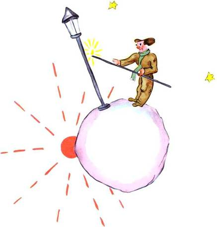</div>',`<p>« Peut-être bien que cet homme est absurde. Cependant il est moins absurde que le roi, que le vaniteux, que le businessman et que le buveur. Au moins son travail a-t-il un sens. Quand il allume son réverbère, c’est comme s’il faisait naître une étoile de plus, ou une fleur. Quand il éteint son réverbère, ça endort la fleur ou l’étoile. C’est une occupation très jolie. C’est véritablement utile puisque c’est joli. »</p>
<p>Lorsqu’il aborda la planète il salua respectueusement l’allumeur :</p>
<p>– Bonjour. Pourquoi viens-tu d’éteindre ton réverbère ?</p>
<p>– C’est la consigne, répondit l’allumeur. Bonjour.</p>
<p>– Qu’est-ce que la consigne ?</p>
<p>– C’est d’éteindre mon réverbère. Bonsoir.</p>
<p>Et il le ralluma.</p>
<p>– Mais pourquoi viens-tu de le rallumer ?</p>
<p>– C’est la consigne, répondit l’allumeur.</p>
<p>– Je ne comprends pas, dit le petit prince.</p>
<p>– Il n’y a rien à comprendre, dit l’allumeur. La consigne c’est la consigne. Bonjour.</p>
<p>Et il éteignit son réverbère.</p>
<p>Puis il s’épongea le front avec un mouchoir à carreaux rouges.</p>
<p>– Je fais là un métier terrible. C’était raisonnable autrefois. J’éteignais le matin et j’allumais le soir. J’avais le reste du jour pour me reposer, et le reste de la nuit pour dormir…</p>`,`<p>– Et, depuis cette époque, la consigne a changé ?</p>
<p>– La consigne n’a pas changé, dit l’allumeur. C’est bien là le drame ! La planète d’année en année a tourné de plus en plus vite, et la consigne n’a pas changé !</p>
<p>– Alors ? dit le petit prince.</p>
<p>– Alors maintenant qu’elle fait un tour par minute, je n’ai plus une seconde de repos. J’allume et j’éteins une fois par minute !</p>
<p>– Ça c’est drôle ! Les jours chez toi durent une minute !</p>
<p>– Ce n’est pas drôle du tout, dit l’allumeur. Ça fait déjà un mois que nous parlons ensemble.</p>
<p>– Un mois ?</p>
<p>– Oui. Trente minutes. Trente jours ! Bonsoir.</p>
<p>Et il ralluma son réverbère.</p>
<p>Le petit prince le regarda et il aima cet allumeur qui était tellement fidèle à la consigne. Il se souvint des couchers de soleil que lui-même allait autrefois chercher, en tirant sa chaise. Il voulut aider son ami :</p>
<p>– Tu sais… je connais un moyen de te reposer quand tu voudras…</p>
<p>– Je veux toujours, dit l’allumeur.</p>
<p>Car on peut être, à la fois, fidèle et paresseux.</p>
<p>Le petit prince poursuivit :</p>`,`<p>– Ta planète est tellement petite que tu en fais le tour en trois enjambées. Tu n’as qu’à marcher assez lentement pour rester toujours au soleil. Quand tu voudras te reposer tu marcheras… et le jour durera aussi longtemps que tu voudras.</p>
<p>– Ça ne m’avance pas à grand’chose, dit l’allumeur. Ce que j’aime dans la vie, c’est dormir.</p>
<p>– Ce n’est pas de chance, dit le petit prince.</p>
<p>– Ce n’est pas de chance, dit l’allumeur. Bonjour.</p>
<p>Et il éteignit son réverbère.</p>
<p>« Celui-là, se dit le petit prince, tandis qu’il poursuivait plus loin son voyage, celui-là serait méprisé par tous les autres, par le roi, par le vaniteux, par le buveur, par le businessman. Cependant c’est le seul qui ne me paraisse pas ridicule. C’est, peut-être, parce qu’il s’occupe d’autre chose que de soi-même. »</p>
<p>Il eut un soupir de regret et se dit encore :</p>
<p>« Celui-là est le seul dont j’eusse pu faire mon ami. Mais sa planète est vraiment trop petite. Il n’y a pas de place pour deux… »</p>
<p>Ce que le petit prince n’osait pas s’avouer, c’est qu’il regrettait cette planète bénie à cause, surtout, des mille quatre cent quarante couchers de soleil par vingt-quatre heures !</p>`,`<h1>CHAPITRE XV</h1>
<p>La sixième planète était une planète dix fois plus vaste. Elle était habitée par un vieux Monsieur qui écrivait d’énormes livres.</p>`,'<div class="lpp-img-container">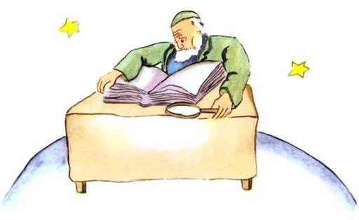</div>',`<p>– Tiens ! voilà un explorateur ! s’écria-t-il, quand il aperçut le petit prince.</p>
<p>Le petit prince s’assit sur la table et souffla un peu. Il avait déjà tant voyagé !</p>
<p>– D’où viens-tu ? lui dit le vieux Monsieur.</p>
<p>– Quel est ce gros livre ? dit le petit prince. Que faites-vous ici ?</p>
<p>– Je suis géographe, dit le vieux Monsieur.</p>
<p>– Qu’est-ce qu’un géographe ?</p>
<p>– C’est un savant qui connaît où se trouvent les mers, les fleuves, les villes, les montagnes et les déserts.</p>
<p>– Ça c’est bien intéressant, dit le petit prince. Ça c’est enfin un véritable métier ! Et il jeta un coup d’œil autour de lui sur la planète du géographe. Il n’avait jamais vu encore une planète aussi majestueuse.</p>
<p>– Elle est bien belle, votre planète. Est-ce qu’il y a des océans ?</p>
<p>– Je ne puis pas le savoir, dit le géographe.</p>
<p>– Ah ! (Le petit prince était déçu.) Et des montagnes ?</p>
<p>– Je ne puis pas le savoir, dit le géographe.</p>
<p>– Et des villes et des fleuves et des déserts ?</p>
<p>– Je ne puis pas le savoir non plus, dit le géographe.</p>
<p>– Mais vous êtes géographe !</p>`,`<p>– C’est exact, dit le géographe, mais je ne suis pas explorateur. Je manque absolument d’explorateurs. Ce n’est pas le géographe qui va faire le compte des villes, des fleuves, des montagnes, des mers, des océans et des déserts. Le géographe est trop important pour flâner. Il ne quitte pas son bureau. Mais il y reçoit les explorateurs. Il les interroge, et il prend en note leurs souvenirs. Et si les souvenirs de l’un d’entre eux lui paraissent intéressants, le géographe fait faire une enquête sur la moralité de l’explorateur.</p>
<p>– Pourquoi ça ?</p>
<p>– Parce qu’un explorateur qui mentirait entraînerait des catastrophes dans les livres de géographie. Et aussi un explorateur qui boirait trop.</p>
<p>– Pourquoi ça ? fit le petit prince.</p>
<p>– Parce que les ivrognes voient double. Alors le géographe noterait deux montagnes, là où il n’y en a qu’une seule.</p>
<p>– Je connais quelqu’un, dit le petit prince, qui serait mauvais explorateur.</p>
<p>– C’est possible. Donc, quand la moralité de l’explorateur paraît bonne, on fait une enquête sur sa découverte.</p>
<p>– On va voir ?</p>`,`<p>– Non. C’est trop compliqué. Mais on exige de l’explorateur qu’il fournisse des preuves. S’il s’agit par exemple de la découverte d’une grosse montagne, on exige qu’il en rapporte de grosses pierres.</p>
<p>Le géographe soudain s’émut.</p>
<p>– Mais toi, tu viens de loin ! Tu es explorateur ! Tu vas me décrire ta planète !</p>
<p>Et le géographe, ayant ouvert son registre, tailla son crayon. On note d’abord au crayon les récits des explorateurs. On attend, pour noter à l’encre, que l’explorateur ait fourni des preuves.</p>
<p>– Alors ? interrogea le géographe.</p>
<p>– Oh ! chez moi, dit le petit prince, ce n’est pas très intéressant, c’est tout petit. J’ai trois volcans. Deux volcans en activité, et un volcan éteint. Mais on ne sait jamais.</p>
<p>– On ne sait jamais, dit le géographe.</p>
<p>– J’ai aussi une fleur.</p>
<p>– Nous ne notons pas les fleurs, dit le géographe.</p>
<p>– Pourquoi ça ! c’est le plus joli !</p>
<p>– Parce que les fleurs sont éphémères.</p>
<p>– Qu’est-ce que signifie : « éphémère » ?</p>
<p>– Les géographies, dit le géographe, sont les livres les plus précieux de tous les livres. Elles ne se démodent jamais. Il est très rare qu’une montagne change de place. Il est très rare qu’un océan se vide de son eau. Nous écrivons des choses éternelles.</p>`,`<p>– Mais les volcans éteints peuvent se réveiller, interrompit le petit prince. Qu’est-ce que signifie « éphémère » ?</p>
<p>– Que les volcans soient éteints ou soient éveillés, ça revient au même pour nous autres, dit le géographe. Ce qui compte pour nous, c’est la montagne. Elle ne change pas.</p>
<p>– Mais qu’est-ce que signifie « éphémère » ? répéta le petit prince qui, de sa vie, n’avait renoncé à une question, une fois qu’il l’avait posée.</p>
<p>– Ça signifie « qui est menacé de disparition prochaine ».</p>
<p>– Ma fleur est menacée de disparition prochaine ?</p>
<p>– Bien sûr.</p>
<p>Ma fleur est éphémère, se dit le petit prince, et elle n’a que quatre épines pour se défendre contre le monde ! Et je l’ai laissée toute seule chez moi !</p>
<p>Ce fut là son premier mouvement de regret. Mais il reprit courage :</p>
<p>– Que me conseillez-vous d’aller visiter ? demanda-t-il.</p>
<p>– La planète Terre, lui répondit le géographe. Elle a une bonne réputation…</p>
<p>Et le petit prince s’en fut, songeant à sa fleur.</p>`,`<h1>CHAPITRE XVI</h1>
<p>La septième planète fut donc la Terre.</p>
<p>La Terre n’est pas une planète quelconque ! On y compte cent onze rois (en n’oubliant pas, bien sûr, les rois nègres), sept mille géographes, neuf cent mille businessmen, sept millions et demi d’ivrognes, trois cent onze millions de vaniteux, c’est-à-dire environ deux milliards de grandes personnes.</p>
<p>Pour vous donner une idée des dimensions de la Terre je vous dirai qu’avant l’invention de l’électricité on y devait entretenir, sur l’ensemble des six continents, une véritable armée de quatre cent soixante-deux mille cinq cent onze allumeurs de réverbères.</p>`,`<p>Vu d’un peu loin ça faisait un effet splendide. Les mouvements de cette armée étaient réglés comme ceux d’un ballet d’opéra. D’abord venait le tour des allumeurs de réverbères de Nouvelle-Zélande et d’Australie. Puis ceux-ci, ayant allumé leurs lampions, s’en allaient dormir. Alors entraient à leur tour dans la danse les allumeurs de réverbères de Chine et de Sibérie. Puis eux aussi s’escamotaient dans les coulisses. Alors venait le tour des allumeurs de réverbères de Russie et des Indes. Puis de ceux d’Afrique et d’Europe. Puis de ceux d’Amérique du Sud. Puis de ceux d’Amérique du Nord. Et jamais ils ne se trompaient dans leur ordre d’entrée en scène. C’était grandiose.</p>
<p>Seuls, l’allumeur de l’unique réverbère du pôle Nord, et son confrère de l’unique réverbère du pôle Sud, menaient des vies d’oisiveté et de nonchalance : ils travaillaient deux fois par an.</p>`,`<h1>CHAPITRE XVII</h1>
<p>Quand on veut faire de l’esprit, il arrive que l’on mente un peu. Je n’ai pas été très honnête en vous parlant des allumeurs de réverbères. Je risque de donner une fausse idée de notre planète à ceux qui ne la connaissent pas. Les hommes occupent très peu de place sur la terre. Si les deux milliards d’habitants qui peuplent la terre se tenaient debout et un peu serrés, comme pour un meeting, ils logeraient aisément sur une place publique de vingt milles de long sur vingt milles de large. On pourrait entasser l’humanité sur le moindre petit îlot du Pacifique.</p>
<p>Les grandes personnes, bien sûr, ne vous croiront pas. Elles s’imaginent tenir beaucoup de place. Elles se voient importantes comme des baobabs. Vous leur conseillerez donc de faire le calcul. Elles adorent les chiffres : ça leur plaira. Mais ne perdez pas votre temps à ce pensum. C’est inutile. Vous avez confiance en moi.</p>
<p>Le petit prince, une fois sur terre, fut donc bien surpris de ne voir personne. Il avait déjà peur de s’être trompé de planète, quand un anneau couleur de lune remua dans le sable.</p>
<p>– Bonne nuit, fit le petit prince à tout hasard.</p>
<p>– Bonne nuit, fit le serpent.</p>`,`<p>– Sur quelle planète suis-je tombé ? demanda le petit prince.</p>
<p>– Sur la Terre, en Afrique, répondit le serpent.</p>`,'<div class="lpp-img-container">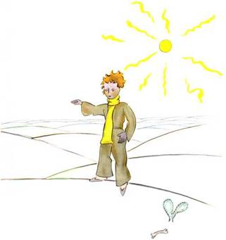</div>',`<p>– Ah !… Il n’y a donc personne sur la Terre ?</p>
<p>– Ici c’est le désert. Il n’y a personne dans les déserts. La Terre est grande, dit le serpent.</p>
<p>Le petit prince s’assit sur une pierre et leva les yeux vers le ciel :</p>
<p>– Je me demande, dit-il, si les étoiles sont éclairées afin que chacun puisse un jour retrouver la sienne. Regarde ma planète. Elle est juste au-dessus de nous… Mais comme elle est loin !</p>
<p>– Elle est belle, dit le serpent. Que viens-tu faire ici ?</p>
<p>– J’ai des difficultés avec une fleur, dit le petit prince.</p>
<p>– Ah ! fit le serpent.</p>
<p>Et ils se turent.</p>
<p>– Où sont les hommes ? reprit enfin le petit prince. On est un peu seul dans le désert…</p>
<p>– On est seul aussi chez les hommes, dit le serpent.</p>
<p>Le petit prince le regarda longtemps :</p>
<p>– Tu es une drôle de bête, lui dit-il enfin, mince comme un doigt…</p>`,'<div class="lpp-img-container">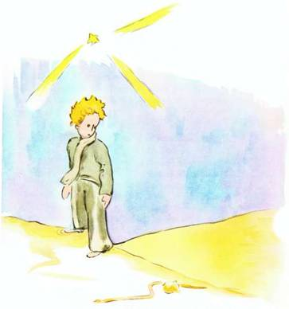</div>',`<p>– Mais je suis plus puissant que le doigt d’un roi, dit le serpent.</p>
<p>Le petit prince eut un sourire :</p>
<p>– Tu n’es pas bien puissant… tu n’as même pas de pattes… tu ne peux même pas voyager…</p>
<p>– Je puis t’emporter plus loin qu’un navire, dit le serpent.</p>
<p>Il s’enroula autour de la cheville du petit prince, comme un bracelet d’or :</p>
<p>– Celui que je touche, je le rends à la terre dont il est sorti, dit-il encore. Mais tu es pur et tu viens d’une étoile…</p>
<p>Le petit prince ne répondit rien.</p>
<p>– Tu me fais pitié, toi si faible, sur cette Terre de granit. Je puis t’aider un jour si tu regrettes trop ta planète. Je puis…</p>
<p>– Oh ! J’ai très bien compris, fit le petit prince, mais pourquoi parles-tu toujours par énigmes ?</p>
<p>– Je les résous toutes, dit le serpent.</p>
<p>Et ils se turent.</p>`,`<h1>CHAPITRE XVIII</h1>
<p>Le petit prince traversa le désert et ne rencontra qu’une fleur. Une fleur à trois pétales, une fleur de rien du tout…</p>`,'<div class="lpp-img-container">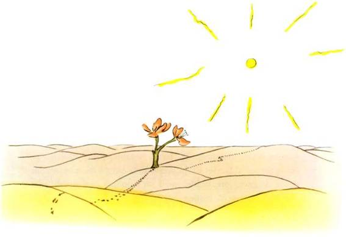</div>',`<p>– Bonjour, dit le petit prince.</p>
<p>– Bonjour, dit la fleur.</p>
<p>– Où sont les hommes ? demanda poliment le petit prince.</p>
<p>La fleur, un jour, avait vu passer une caravane :</p>
<p>– Les hommes ? Il en existe, je crois, six ou sept. Je les ai aperçus il y a des années. Mais on ne sait jamais où les trouver. Le vent les promène. Ils manquent de racines, ça les gêne beaucoup.</p>
<p>– Adieu, fit le petit prince.</p>
<p>– Adieu, dit la fleur.</p>`,`<h1>CHAPITRE XIX</h1>
<p>Le petit prince fit l’ascension d’une haute montagne. Les seules montagnes qu’il eût jamais connues étaient les trois volcans qui lui arrivaient au genou. Et il se servait du volcan éteint comme d’un tabouret. « D’une montagne haute comme celle-ci, se dit-il donc, j’apercevrai d’un coup toute la planète et tous les hommes… » Mais il n’aperçut rien que des aiguilles de roc bien aiguisées.</p>`,'<div class="lpp-img-container">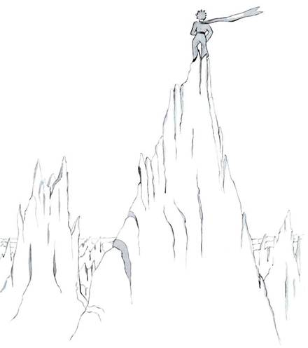</div>',`<p>– Bonjour, dit-il à tout hasard.</p>
<p>– Bonjour… Bonjour… Bonjour… répondit l’écho.</p>
<p>– Qui êtes-vous ? dit le petit prince.</p>
<p>– Qui êtes-vous… qui êtes-vous… qui êtes-vous… répondit l’écho.</p>
<p>– Soyez mes amis, je suis seul, dit-il.</p>
<p>– Je suis seul… je suis seul… je suis seul… répondit l’écho.</p>
<p>« Quelle drôle de planète ! pensa-t-il alors. Elle est toute sèche, et toute pointue et toute salée. Et les hommes manquent d’imagination. Ils répètent ce qu’on leur dit… Chez moi j’avais une fleur : elle parlait toujours la première… »</p>`,`<h1>CHAPITRE XX</h1>
<p>Mais il arriva que le petit prince, ayant longtemps marché à travers les sables, les rocs et les neiges, découvrit enfin une route. Et les routes vont toutes chez les hommes.</p>
<p>– Bonjour, dit-il.</p>
<p>C’était un jardin fleuri de roses.</p>
<p>– Bonjour, dirent les roses.</p>`,'<div class="lpp-img-container">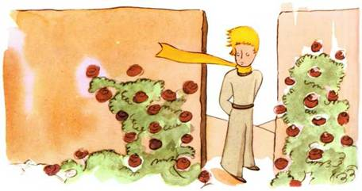</div>',`<p>Le petit prince les regarda. Elles ressemblaient toutes à sa fleur.</p>
<p>– Qui êtes-vous ? leur demanda-t-il, stupéfait.</p>
<p>– Nous sommes des roses, dirent les roses.</p>
<p>– Ah ! fit le petit prince…</p>
<p>Et il se sentit très malheureux. Sa fleur lui avait raconté qu’elle était seule de son espèce dans l’univers. Et voici qu’il en était cinq mille, toutes semblables, dans un seul jardin !</p>`,'<div class="lpp-img-container">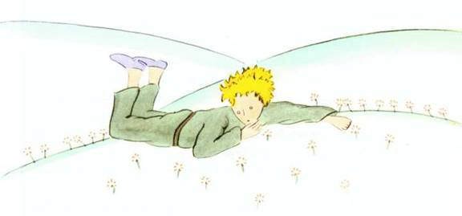</div>',`<p>« Elle serait bien vexée, se dit-il, si elle voyait ça… elle tousserait énormément et ferait semblant de mourir pour échapper au ridicule. Et je serais bien obligé de faire semblant de la soigner, car, sinon, pour m’humilier moi aussi, elle se laisserait vraiment mourir… »</p>
<p>Puis il se dit encore : « Je me croyais riche d’une fleur unique, et je ne possède qu’une rose ordinaire. Ça et mes trois volcans qui m’arrivent au genou, et dont l’un, peut-être, est éteint pour toujours, ça ne fait pas de moi un bien grand prince… » Et, couché dans l’herbe, il pleura.</p>`,`<h1>CHAPITRE XXI</h1>
<p>C’est alors qu’apparut le renard.</p>`,'<div class="lpp-img-container">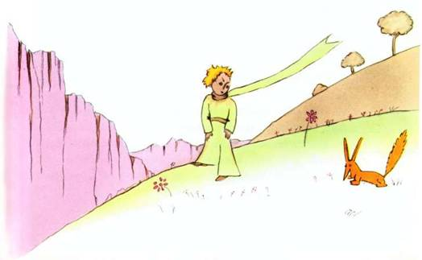</div>',`<p>– Bonjour, dit le renard.</p>
<p>– Bonjour, répondit poliment le petit prince, qui se retourna mais ne vit rien.</p>
<p>– Je suis là, dit la voix, sous le pommier.</p>
<p>– Qui es-tu ? dit le petit prince. Tu es bien joli…</p>
<p>– Je suis un renard, dit le renard.</p>
<p>– Viens jouer avec moi, lui proposa le petit prince. Je suis tellement triste…</p>
<p>– Je ne puis pas jouer avec toi, dit le renard. Je ne suis pas apprivoisé.</p>
<p>– Ah ! pardon, fit le petit prince.</p>
<p>Mais, après réflexion, il ajouta :</p>
<p>– Qu’est-ce que signifie « apprivoiser » ?</p>
<p>– Tu n’es pas d’ici, dit le renard, que cherches-tu ?</p>
<p>– Je cherche les hommes, dit le petit prince. Qu’est-ce que signifie « apprivoiser » ?</p>
<p>– Les hommes, dit le renard, ils ont des fusils et ils chassent. C’est bien gênant ! Ils élèvent aussi des poules. C’est leur seul intérêt. Tu cherches des poules ?</p>
<p>– Non, dit le petit prince. Je cherche des amis. Qu’est-ce que signifie « apprivoiser » ?</p>
<p>– C’est une chose trop oubliée, dit le renard. Ça signifie « créer des liens… »</p>
<p>– Créer des liens ?</p>`,`<p>– Bien sûr, dit le renard. Tu n’es encore pour moi qu’un petit garçon tout semblable à cent mille petits garçons. Et je n’ai pas besoin de toi. Et tu n’as pas besoin de moi non plus. Je ne suis pour toi qu’un renard semblable à cent mille renards. Mais, si tu m’apprivoises, nous aurons besoin l’un de l’autre. Tu seras pour moi unique au monde. Je serai pour toi unique au monde…</p>
<p>– Je commence à comprendre, dit le petit prince. Il y a une fleur… je crois qu’elle m’a apprivoisé…</p>
<p>– C’est possible, dit le renard. On voit sur la Terre toutes sortes de choses…</p>
<p>– Oh ! ce n’est pas sur la Terre, dit le petit prince.</p>
<p>Le renard parut très intrigué :</p>
<p>– Sur une autre planète ?</p>
<p>– Oui.</p>
<p>– Il y a des chasseurs, sur cette planète-là ?</p>`,'<div class="lpp-img-container">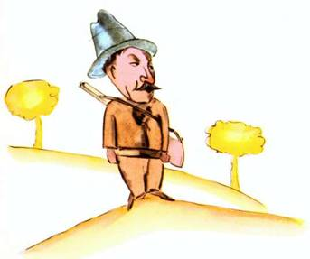</div>',`<p>– Non.</p>
<p>– Ça, c’est intéressant ! Et des poules ?</p>
<p>– Non.</p>
<p>– Rien n’est parfait, soupira le renard.</p>
<p>Mais le renard revint à son idée :</p>
<p>– Ma vie est monotone. Je chasse les poules, les hommes me chassent. Toutes les poules se ressemblent, et tous les hommes se ressemblent. Je m’ennuie donc un peu. Mais, si tu m’apprivoises, ma vie sera comme ensoleillée. Je connaîtrai un bruit de pas qui sera différent de tous les autres. Les autres pas me font rentrer sous terre. Le tien m’appellera hors du terrier, comme une musique. Et puis regarde ! Tu vois, là-bas, les champs de blé ? Je ne mange pas de pain. Le blé pour moi est inutile. Les champs de blé ne me rappellent rien. Et ça, c’est triste ! Mais tu as des cheveux couleur d’or. Alors ce sera merveilleux quand tu m’auras apprivoisé ! Le blé, qui est doré, me fera souvenir de toi. Et j’aimerai le bruit du vent dans le blé…</p>
<p>Le renard se tut et regarda longtemps le petit prince :</p>
<p>– S’il te plaît… apprivoise-moi ! dit-il.</p>
<p>– Je veux bien, répondit le petit prince, mais je n’ai pas beaucoup de temps. J’ai des amis à découvrir et beaucoup de choses à connaître.</p>`,`<p>– On ne connaît que les choses que l’on apprivoise, dit le renard. Les hommes n’ont plus le temps de rien connaître. Ils achètent des choses toutes faites chez les marchands. Mais comme il n’existe point de marchands d’amis, les hommes n’ont plus d’amis. Si tu veux un ami, apprivoise-moi !</p>
<p>– Que faut-il faire ? dit le petit prince.</p>
<p>– Il faut être très patient, répondit le renard. Tu t’assoiras d’abord un peu loin de moi, comme ça, dans l’herbe. Je te regarderai du coin de l’œil et tu ne diras rien. Le langage est source de malentendus. Mais, chaque jour, tu pourras t’asseoir un peu plus près…</p>
<p>Le lendemain revint le petit prince.</p>
<p>– Il eût mieux valu revenir à la même heure, dit le renard. Si tu viens, par exemple, à quatre heures de l’après-midi, dès trois heures je commencerai d’être heureux. Plus l’heure avancera, plus je me sentirai heureux. À quatre heures, déjà, je m’agiterai et m’inquiéterai ; je découvrirai le prix du bonheur ! Mais si tu viens n’importe quand, je ne saurai jamais à quelle heure m’habiller le cœur… Il faut des rites.</p>`,'<div class="lpp-img-container">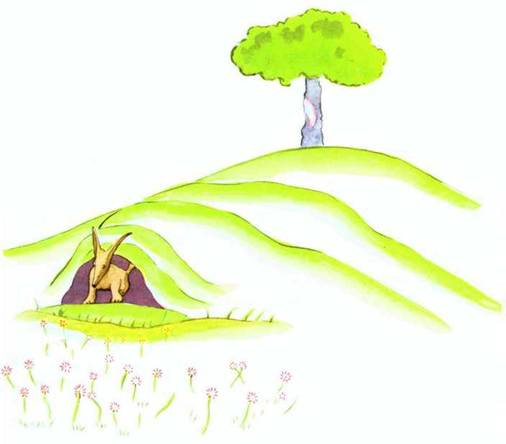</div>',`<p>– Qu’est-ce qu’un rite ? dit le petit prince.</p>
<p>– C’est aussi quelque chose de trop oublié, dit le renard. C’est ce qui fait qu’un jour est différent des autres jours, une heure, des autres heures. Il y a un rite, par exemple, chez mes chasseurs. Ils dansent le jeudi avec les filles du village. Alors le jeudi est jour merveilleux ! Je vais me promener jusqu’à la vigne. Si les chasseurs dansaient n’importe quand, les jours se ressembleraient tous, et je n’aurais point de vacances.</p>
<p>Ainsi le petit prince apprivoisa le renard. Et quand l’heure du départ fut proche :</p>
<p>– Ah ! dit le renard… Je pleurerai.</p>
<p>– C’est ta faute, dit le petit prince, je ne te souhaitais point de mal, mais tu as voulu que je t’apprivoise…</p>
<p>– Bien sûr, dit le renard.</p>
<p>– Mais tu vas pleurer ! dit le petit prince.</p>
<p>– Bien sûr, dit le renard.</p>
<p>– Alors tu n’y gagnes rien !</p>
<p>– J’y gagne, dit le renard, à cause de la couleur du blé.</p>
<p>Puis il ajouta :</p>
<p>– Va revoir les roses. Tu comprendras que la tienne est unique au monde. Tu reviendras me dire adieu, et je te ferai cadeau d’un secret.</p>
<p>Le petit prince s’en fut revoir les roses.</p>`,`<p>– Vous n’êtes pas du tout semblables à ma rose, vous n’êtes rien encore, leur dit-il. Personne ne vous a apprivoisées et vous n’avez apprivoisé personne. Vous êtes comme était mon renard. Ce n’était qu’un renard semblable à cent mille autres. Mais j’en ai fait mon ami, et il est maintenant unique au monde.</p>
<p>Et les roses étaient bien gênées.</p>
<p>– Vous êtes belles, mais vous êtes vides, leur dit-il encore. On ne peut pas mourir pour vous. Bien sûr, ma rose à moi, un passant ordinaire croirait qu’elle vous ressemble. Mais à elle seule elle est plus importante que vous toutes, puisque c’est elle que j’ai arrosée. Puisque c’est elle que j’ai mise sous globe. Puisque c’est elle que j’ai abritée par le paravent. Puisque c’est elle dont j’ai tué les chenilles (sauf les deux ou trois pour les papillons). Puisque c’est elle que j’ai écoutée se plaindre, ou se vanter, ou même quelquefois se taire. Puisque c’est ma rose.</p>
<p>Et il revint vers le renard :</p>
<p>– Adieu, dit-il…</p>
<p>– Adieu, dit le renard. Voici mon secret. Il est très simple : on ne voit bien qu’avec le cœur. L’essentiel est invisible pour les yeux.</p>
<p>– L’essentiel est invisible pour les yeux, répéta le petit prince, afin de se souvenir.</p>`,`<p>– C’est le temps que tu as perdu pour ta rose qui fait ta rose si importante.</p>
<p>– C’est le temps que j’ai perdu pour ma rose… fit le petit prince, afin de se souvenir.</p>
<p>– Les hommes ont oublié cette vérité, dit le renard. Mais tu ne dois pas l’oublier. Tu deviens responsable pour toujours de ce que tu as apprivoisé. Tu es responsable de ta rose…</p>
<p>– Je suis responsable de ma rose… répéta le petit prince, afin de se souvenir.</p>`,`<h1>CHAPITRE XXII</h1>
<p>– Bonjour, dit le petit prince.</p>
<p>– Bonjour, dit l’aiguilleur.</p>
<p>– Que fais-tu ici ? dit le petit prince.</p>
<p>– Je trie les voyageurs, par paquets de mille, dit l’aiguilleur. J’expédie les trains qui les emportent, tantôt vers la droite, tantôt vers la gauche.</p>
<p>Et un rapide illuminé, grondant comme le tonnerre, fit trembler la cabine d’aiguillage.</p>
<p>– Ils sont bien pressés, dit le petit prince. Que cherchent-ils ?</p>
<p>– L’homme de la locomotive l’ignore lui-même, dit l’aiguilleur.</p>
<p>Et gronda, en sens inverse, un second rapide illuminé.</p>
<p>– Ils reviennent déjà ? demanda le petit prince…</p>
<p>– Ce ne sont pas les mêmes, dit l’aiguilleur. C’est un échange.</p>
<p>– Ils n’étaient pas contents, là où ils étaient ?</p>
<p>– On n’est jamais content là où l’on est, dit l’aiguilleur.</p>
<p>Et gronda le tonnerre d’un troisième rapide illuminé.</p>
<p>– Ils poursuivent les premiers voyageurs ? demanda le petit prince.</p>
<p>– Ils ne poursuivent rien du tout, dit l’aiguilleur. Ils dorment là-dedans, ou bien ils bâillent. Les enfants seuls écrasent leur nez contre les vitres.</p>`,`<p>– Les enfants seuls savent ce qu’ils cherchent, fit le petit prince. Ils perdent du temps pour une poupée de chiffons, et elle devient très importante, et si on la leur enlève, ils pleurent…</p>
<p>– Ils ont de la chance, dit l’aiguilleur.</p>`,`<h1>CHAPITRE XXIII</h1>
<p>– Bonjour, dit le petit prince.</p>
<p>– Bonjour, dit le marchand.</p>
<p>C’était un marchand de pilules perfectionnées qui apaisent la soif. On en avale une par semaine et l’on n’éprouve plus le besoin de boire.</p>
<p>– Pourquoi vends-tu ça ? dit le petit prince.</p>
<p>– C’est une grosse économie de temps, dit le marchand. Les experts ont fait des calculs. On épargne cinquante-trois minutes par semaine.</p>
<p>– Et que fait-on de ces cinquante-trois minutes ?</p>
<p>– On en fait ce que l’on veut…</p>
<p>« Moi, se dit le petit prince, si j’avais cinquante-trois minutes à dépenser, je marcherais tout doucement vers une fontaine… »</p>`,'<div class="lpp-img-container">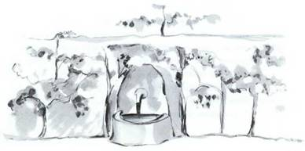</div>',`<h1>CHAPITRE XXIV</h1>
<p>Nous en étions au huitième jour de ma panne dans le désert, et j’avais écouté l’histoire du marchand en buvant la dernière goutte de ma provision d’eau :</p>
<p>– Ah ! dis-je au petit prince, ils sont bien jolis, tes souvenirs, mais je n’ai pas encore réparé mon avion, je n’ai plus rien à boire, et je serais heureux, moi aussi, si je pouvais marcher tout doucement vers une fontaine !</p>
<p>– Mon ami le renard, me dit-il…</p>
<p>– Mon petit bonhomme, il ne s’agit plus du renard !</p>
<p>– Pourquoi ?</p>
<p>– Parce qu’on va mourir de soif…</p>
<p>Il ne comprit pas mon raisonnement, il me répondit :</p>
<p>– C’est bien d’avoir eu un ami, même si l’on va mourir. Moi, je suis bien content d’avoir eu un ami renard…</p>
<p>« Il ne mesure pas le danger, me dis-je. Il n’a jamais ni faim ni soif. Un peu de soleil lui suffit… »</p>
<p>Mais il me regarda et répondit à ma pensée :</p>
<p>– J’ai soif aussi… cherchons un puits…</p>
<p>J’eus un geste de lassitude : il est absurde de chercher un puits, au hasard, dans l’immensité du désert. Cependant nous nous mîmes en marche.</p>`,`<p>Quand nous eûmes marché, des heures, en silence, la nuit tomba, et les étoiles commencèrent de s’éclairer. Je les apercevais comme en rêve, ayant un peu de fièvre, à cause de ma soif. Les mots du petit prince dansaient dans ma mémoire :</p>
<p>– Tu as donc soif, toi aussi ? lui demandai-je.</p>
<p>Mais il ne répondit pas à ma question. Il me dit simplement :</p>
<p>– L’eau peut aussi être bonne pour le cœur…</p>
<p>Je ne compris pas sa réponse mais je me tus… Je savais bien qu’il ne fallait pas l’interroger.</p>
<p>Il était fatigué. Il s’assit. Je m’assis auprès de lui. Et, après un silence, il dit encore :</p>
<p>– Les étoiles sont belles, à cause d’une fleur que l’on ne voit pas…</p>
<p>Je répondis « bien sûr » et je regardai, sans parler, les plis du sable sous la lune.</p>
<p>– Le désert est beau, ajouta-t-il…</p>
<p>Et c’était vrai. J’ai toujours aimé le désert. On s’assoit sur une dune de sable. On ne voit rien. On n’entend rien. Et cependant quelque chose rayonne en silence…</p>
<p>– Ce qui embellit le désert, dit le petit prince, c’est qu’il cache un puits quelque part…</p>`,`<p>Je fus surpris de comprendre soudain ce mystérieux rayonnement du sable. Lorsque j’étais petit garçon j’habitais une maison ancienne, et la légende racontait qu’un trésor y était enfoui. Bien sûr, jamais personne n’a su le découvrir, ni peut-être même ne l’a cherché. Mais il enchantait toute cette maison. Ma maison cachait un secret au fond de son cœur…</p>
<p>– Oui, dis-je au petit prince, qu’il s’agisse de la maison, des étoiles ou du désert, ce qui fait leur beauté est invisible !</p>
<p>– Je suis content, dit-il, que tu sois d’accord avec mon renard.</p>
<p>Comme le petit prince s’endormait, je le pris dans mes bras, et me remis en route. J’étais ému. Il me semblait porter un trésor fragile. Il me semblait même qu’il n’y eût rien de plus fragile sur la Terre. Je regardais, à la lumière de la lune, ce front pâle, ces yeux clos, ces mèches de cheveux qui tremblaient au vent, et je me disais : « Ce que je vois là n’est qu’une écorce. Le plus important est invisible… »</p>`,`<p>Comme ses lèvres entr’ouvertes ébauchaient un demi-sourire je me dis encore : « Ce qui m’émeut si fort de ce petit prince endormi, c’est sa fidélité pour une fleur, c’est l’image d’une rose qui rayonne en lui comme la flamme d’une lampe, même quand il dort… » Et je le devinai plus fragile encore. Il faut bien protéger les lampes : un coup de vent peut les éteindre…</p>
<p>Et, marchant ainsi, je découvris le puits au lever du jour.</p>`,`<h1>CHAPITRE XXV</h1>
<p>– Les hommes, dit le petit prince, ils s’enfournent dans les rapides, mais ils ne savent plus ce qu’ils cherchent. Alors ils s’agitent et tournent en rond…</p>
<p>Et il ajouta :</p>
<p>– Ce n’est pas la peine…</p>
<p>Le puits que nous avions atteint ne ressemblait pas aux puits sahariens. Les puits sahariens sont de simples trous creusés dans le sable. Celui-là ressemblait à un puits de village. Mais il n’y avait là aucun village, et je croyais rêver.</p>
<p>– C’est étrange, dis-je au petit prince, tout est prêt : la poulie, le seau et la corde…</p>
<p>Il rit, toucha la corde, fit jouer la poulie. Et la poulie gémit comme gémit une vieille girouette quand le vent a longtemps dormi.</p>
<p>– Tu entends, dit le petit prince, nous réveillons ce puits et il chante…</p>
<p>Je ne voulais pas qu’il fît un effort :</p>
<p>– Laisse-moi faire, lui dis-je, c’est trop lourd pour toi.</p>
<p>Lentement je hissai le seau jusqu’à la margelle. Je l’y installai bien d’aplomb. Dans mes oreilles durait le chant de la poulie et, dans l’eau qui tremblait encore, je voyais trembler le soleil.</p>`,'<div class="lpp-img-container">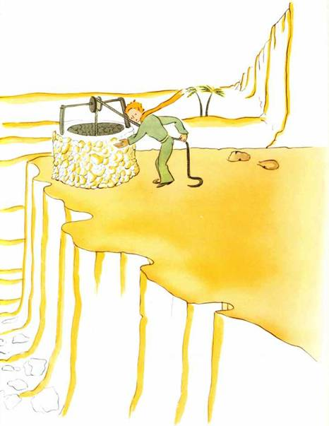</div>',`<p>– J’ai soif de cette eau-là, dit le petit prince, donne-moi à boire…</p>
<p>Et je compris ce qu’il avait cherché !</p>
<p>Je soulevai le seau jusqu’à ses lèvres. Il but, les yeux fermés. C’était doux comme une fête. Cette eau était bien autre chose qu’un aliment. Elle était née de la marche sous les étoiles, du chant de la poulie, de l’effort de mes bras. Elle était bonne pour le cœur, comme un cadeau. Lorsque j’étais petit garçon, la lumière de l’arbre de Noël, la musique de la messe de minuit, la douceur des sourires faisaient ainsi tout le rayonnement du cadeau de Noël que je recevais.</p>
<p>– Les hommes de chez toi, dit le petit prince, cultivent cinq mille roses dans un même jardin… et ils n’y trouvent pas ce qu’ils cherchent…</p>
<p>– Ils ne le trouvent pas, répondis-je…</p>
<p>– Et cependant ce qu’ils cherchent pourrait être trouvé dans une seule rose ou un peu d’eau…</p>
<p>– Bien sûr, répondis-je.</p>
<p>Et le petit prince ajouta :</p>
<p>– Mais les yeux sont aveugles. Il faut chercher avec le cœur.</p>
<p>J’avais bu. Je respirais bien. Le sable, au lever du jour, est couleur de miel. J’étais heureux aussi de cette couleur de miel. Pourquoi fallait-il que j’eusse de la peine…</p>`,`<p>– Il faut que tu tiennes ta promesse, me dit doucement le petit prince, qui, de nouveau, s’était assis auprès de moi.</p>
<p>– Quelle promesse ?</p>
<p>– Tu sais… une muselière pour mon mouton… je suis responsable de cette fleur !</p>
<p>Je sortis de ma poche mes ébauches de dessin. Le petit prince les aperçut et dit en riant :</p>
<p>– Tes baobabs, ils ressemblent un peu à des choux…</p>
<p>– Oh !</p>
<p>Moi qui étais si fier des baobabs !</p>
<p>– Ton renard… ses oreilles… elles ressemblent un peu à des cornes… et elles sont trop longues !</p>
<p>Et il rit encore.</p>
<p>– Tu es injuste, petit bonhomme, je ne savais rien dessiner que les boas fermés et les boas ouverts.</p>
<p>– Oh ! ça ira, dit-il, les enfants savent.</p>
<p>Je crayonnai donc une muselière. Et j’eus le cœur serré en la lui donnant :</p>
<p>– Tu as des projets que j’ignore…</p>
<p>Mais il ne me répondit pas. Il me dit :</p>
<p>– Tu sais, ma chute sur la Terre… c’en sera demain l’anniversaire…</p>
<p>Puis, après un silence il dit encore :</p>
<p>– J’étais tombé tout près d’ici…</p>
<p>Et il rougit.</p>
<p>Et de nouveau, sans comprendre pourquoi, j’éprouvai un chagrin bizarre. Cependant une question me vint :</p>`,`<p>– Alors ce n’est pas par hasard que, le matin où je t’ai connu, il y a huit jours, tu te promenais comme ça, tout seul, à mille milles de toutes les régions habitées ! Tu retournais vers le point de ta chute ?</p>
<p>Le petit prince rougit encore.</p>
<p>Et j’ajoutai, en hésitant :</p>
<p>– À cause, peut-être, de l’anniversaire ?…</p>
<p>Le petit prince rougit de nouveau. Il ne répondait jamais aux questions, mais, quand on rougit, ça signifie « oui », n’est-ce pas ?</p>
<p>– Ah ! lui dis-je, j’ai peur…</p>
<p>Mais il me répondit :</p>
<p>– Tu dois maintenant travailler. Tu dois repartir vers ta machine. Je t’attends ici. Reviens demain soir…</p>
<p>Mais je n’étais pas rassuré. Je me souvenais du renard. On risque de pleurer un peu si l’on s’est laissé apprivoiser…</p>`,`<h1>CHAPITRE XXVI</h1>
<p>Il y avait, à côté du puits, une ruine de vieux mur de pierre. Lorsque je revins de mon travail, le lendemain soir, j’aperçus de loin mon petit prince assis là-haut, les jambes pendantes. Et je l’entendis qui parlait :</p>
<p>– Tu ne t’en souviens donc pas ? disait-il. Ce n’est pas tout à fait ici !</p>
<p>Une autre voix lui répondit sans doute, puisqu’il répliqua :</p>
<p>– Si ! Si ! c’est bien le jour, mais ce n’est pas ici l’endroit…</p>
<p>Je poursuivis ma marche vers le mur. Je ne voyais ni n’entendais toujours personne. Pourtant le petit prince répliqua de nouveau :</p>
<p>– … Bien sûr. Tu verras où commence ma trace dans le sable. Tu n’as qu’à m’y attendre. J’y serai cette nuit.</p>
<p>J’étais à vingt mètres du mur et je ne voyais toujours rien.</p>
<p>Le petit prince dit encore, après un silence :</p>
<p>– Tu as du bon venin ? Tu es sûr de ne pas me faire souffrir longtemps ?</p>
<p>Je fis halte, le cœur serré, mais je ne comprenais toujours pas.</p>
<p>– Maintenant va-t’en, dit-il… je veux redescendre !</p>`,"<p>Alors j’abaissai moi-même les yeux vers le pied du mur, et je fis un bond ! Il était là, dressé vers le petit prince, un de ces serpents jaunes qui vous exécutent en trente secondes. Tout en fouillant ma poche pour en tirer mon revolver, je pris le pas de course, mais, au bruit que je fis, le serpent se laissa doucement couler dans le sable, comme un jet d’eau qui meurt, et, sans trop se presser, se faufila entre les pierres avec un léger bruit de métal.</p>",'<div class="lpp-img-container">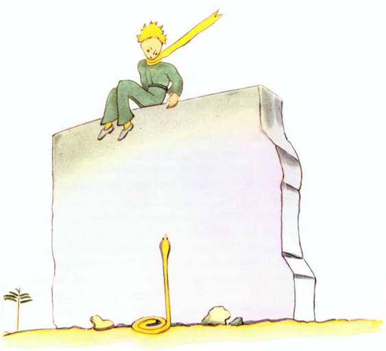</div>',`<p>Je parvins au mur juste à temps pour y recevoir dans les bras mon petit bonhomme de prince, pâle comme la neige.</p>
<p>– Quelle est cette histoire-là ! Tu parles maintenant avec les serpents !</p>
<p>J’avais défait son éternel cache-nez d’or. Je lui avais mouillé les tempes et l’avais fait boire. Et maintenant je n’osais plus rien lui demander. Il me regarda gravement et m’entoura le cou de ses bras. Je sentais battre son cœur comme celui d’un oiseau qui meurt, quand on l’a tiré à la carabine. Il me dit :</p>
<p>– Je suis content que tu aies trouvé ce qui manquait à ta machine. Tu vas pouvoir rentrer chez toi…</p>
<p>– Comment sais-tu !</p>
<p>Je venais justement lui annoncer que, contre toute espérance, j’avais réussi mon travail !</p>
<p>Il ne répondit rien à ma question, mais il ajouta :</p>
<p>– Moi aussi, aujourd’hui, je rentre chez moi…</p>
<p>Puis, mélancolique :</p>
<p>– C’est bien plus loin… c’est bien plus difficile…</p>
<p>Je sentais bien qu’il se passait quelque chose d’extraordinaire. Je le serrais dans les bras comme un petit enfant, et cependant il me semblait qu’il coulait verticalement dans un abîme sans que je pusse rien pour le retenir…</p>
<p>Il avait le regard sérieux, perdu très loin :</p>`,`<p>– J’ai ton mouton. Et j’ai la caisse pour le mouton. Et j’ai la muselière…</p>
<p>Et il sourit avec mélancolie.</p>
<p>J’attendis longtemps. Je sentais qu’il se réchauffait peu à peu :</p>
<p>– Petit bonhomme, tu as eu peur…</p>
<p>Il avait eu peur, bien sûr ! Mais il rit doucement :</p>
<p>– J’aurai bien plus peur ce soir…</p>
<p>De nouveau je me sentis glacé par le sentiment de l’irréparable. Et je compris que je ne supportais pas l’idée de ne plus jamais entendre ce rire. C’était pour moi comme une fontaine dans le désert.</p>
<p>– Petit bonhomme, je veux encore t’entendre rire…</p>
<p>Mais il me dit :</p>
<p>– Cette nuit, ça fera un an. Mon étoile se trouvera juste au-dessus de l’endroit où je suis tombé l’année dernière…</p>
<p>– Petit bonhomme, n’est-ce pas que c’est un mauvais rêve cette histoire de serpent et de rendez-vous et d’étoile…</p>
<p>Mais il ne répondit pas à ma question. Il me dit :</p>
<p>– Ce qui est important, ça ne se voit pas…</p>
<p>– Bien sûr…</p>
<p>– C’est comme pour la fleur. Si tu aimes une fleur qui se trouve dans une étoile, c’est doux, la nuit, de regarder le ciel. Toutes les étoiles sont fleuries.</p>
<p>– Bien sûr…</p>`,`<p>– C’est comme pour l’eau. Celle que tu m’as donnée à boire était comme une musique, à cause de la poulie et de la corde… tu te rappelles… elle était bonne.</p>
<p>– Bien sûr…</p>
<p>– Tu regarderas, la nuit, les étoiles. C’est trop petit chez moi pour que je te montre où se trouve la mienne. C’est mieux comme ça. Mon étoile, ça sera pour toi une des étoiles. Alors, toutes les étoiles, tu aimeras les regarder… Elles seront toutes tes amies. Et puis je vais te faire un cadeau…</p>
<p>Il rit encore.</p>
<p>– Ah ! petit bonhomme, petit bonhomme j’aime entendre ce rire !</p>
<p>– Justement ce sera mon cadeau… ce sera comme pour l’eau…</p>
<p>– Que veux-tu dire ?</p>
<p>– Les gens ont des étoiles qui ne sont pas les mêmes. Pour les uns, qui voyagent, les étoiles sont des guides. Pour d’autres elles ne sont rien que de petites lumières. Pour d’autres, qui sont savants, elles sont des problèmes. Pour mon businessman elles étaient de l’or. Mais toutes ces étoiles-là se taisent. Toi, tu auras des étoiles comme personne n’en a…</p>
<p>– Que veux-tu dire ?</p>`,`<p>– Quand tu regarderas le ciel, la nuit, puisque j’habiterai dans l’une d’elles, puisque je rirai dans l’une d’elles, alors ce sera pour toi comme si riaient toutes les étoiles. Tu auras, toi, des étoiles qui savent rire !</p>
<p>Et il rit encore.</p>
<p>– Et quand tu seras consolé (on se console toujours) tu seras content de m’avoir connu. Tu seras toujours mon ami. Tu auras envie de rire avec moi. Et tu ouvriras parfois ta fenêtre, comme ça, pour le plaisir… Et tes amis seront bien étonnés de te voir rire en regardant le ciel. Alors tu leur diras : « Oui, les étoiles, ça me fait toujours rire ! » Et ils te croiront fou. Je t’aurai joué un bien vilain tour…</p>
<p>Et il rit encore.</p>
<p>– Ce sera comme si je t’avais donné, au lieu d’étoiles, des tas de petits grelots qui savent rire…</p>
<p>Et il rit encore. Puis il redevint sérieux :</p>
<p>– Cette nuit… tu sais… ne viens pas.</p>
<p>– Je ne te quitterai pas.</p>
<p>– J’aurai l’air d’avoir mal… j’aurai un peu l’air de mourir. C’est comme ça. Ne viens pas voir ça, ce n’est pas la peine…</p>
<p>– Je ne te quitterai pas.</p>
<p>Mais il était soucieux.</p>
<p>– Je te dis ça… c’est à cause aussi du serpent. Il ne faut pas qu’il te morde… Les serpents, c’est méchant. Ça peut mordre pour le plaisir…</p>`,`<p>– Je ne te quitterai pas.</p>
<p>Mais quelque chose le rassura :</p>
<p>– C’est vrai qu’ils n’ont plus de venin pour la seconde morsure…</p>
<p>Cette nuit-là je ne le vis pas se mettre en route. Il s’était évadé sans bruit. Quand je réussis à le rejoindre il marchait décidé, d’un pas rapide. Il me dit seulement :</p>
<p>– Ah ! tu es là…</p>
<p>Et il me prit par la main. Mais il se tourmenta encore :</p>
<p>– Tu as eu tort. Tu auras de la peine. J’aurai l’air d’être mort et ce ne sera pas vrai…</p>
<p>Moi je me taisais.</p>`,'<div class="lpp-img-container">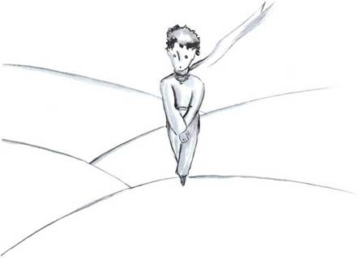</div>',`<p>– Tu comprends. C’est trop loin. Je ne peux pas emporter ce corps-là. C’est trop lourd.</p>
<p>Moi je me taisais.</p>
<p>– Mais ce sera comme une vieille écorce abandonnée. Ce n’est pas triste les vieilles écorces…</p>
<p>Moi je me taisais.</p>
<p>Il se découragea un peu. Mais il fit encore un effort :</p>
<p>– Ce sera gentil, tu sais. Moi aussi je regarderai les étoiles. Toutes les étoiles seront des puits avec une poulie rouillée. Toutes les étoiles me verseront à boire…</p>
<p>Moi je me taisais.</p>
<p>– Ce sera tellement amusant ! Tu auras cinq cents millions de grelots, j’aurai cinq cents millions de fontaines…</p>
<p>Et il se tut aussi, parce qu’il pleurait…</p>
<p>– C’est là. Laisse-moi faire un pas tout seul.</p>
<p>Et il s’assit parce qu’il avait peur.</p>`,'<div class="lpp-img-container">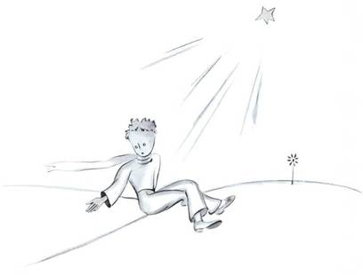</div>',`<p>Il dit encore :</p>
<p>– Tu sais… ma fleur… j’en suis responsable ! Et elle est tellement faible ! Et elle est tellement naïve. Elle a quatre épines de rien du tout pour la protéger contre le monde…</p>
<p>Moi je m’assis parce que je ne pouvais plus me tenir debout. Il dit :</p>
<p>– Voilà… C’est tout…</p>
<p>Il hésita encore un peu, puis il se releva. Il fit un pas. Moi je ne pouvais pas bouger.</p>
<p>Il n’y eut rien qu’un éclair jaune près de sa cheville. Il demeura un instant immobile. Il ne cria pas. Il tomba doucement comme tombe un arbre. Ça ne fit même pas de bruit, à cause du sable.</p>`,'<div class="lpp-img-container">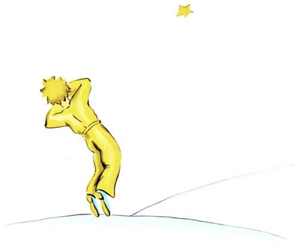</div>',`<h1>CHAPITRE XXVII</h1>
<p>Et maintenant, bien sûr, ça fait six ans déjà… Je n’ai jamais encore raconté cette histoire. Les camarades qui m’ont revu ont été bien contents de me revoir vivant. J’étais triste mais je leur disais : « C’est la fatigue… »</p>
<p>Maintenant je me suis un peu consolé. C’est-à-dire… pas tout à fait. Mais je sais bien qu’il est revenu à sa planète, car, au lever du jour, je n’ai pas retrouvé son corps. Ce n’était pas un corps tellement lourd… Et j’aime la nuit écouter les étoiles. C’est comme cinq cent millions de grelots…</p>
<p>Mais voilà qu’il se passe quelque chose d’extraordinaire. La muselière que j’ai dessinée pour le petit prince, j’ai oublié d’y ajouter la courroie de cuir ! Il n’aura jamais pu l’attacher au mouton. Alors je me demande : « Que s’est-il passé sur sa planète ? Peut-être bien que le mouton a mangé la fleur… »</p>
<p>Tantôt je me dis : « Sûrement non ! Le petit prince enferme sa fleur toutes les nuits sous son globe de verre, et il surveille bien son mouton… » Alors je suis heureux. Et toutes les étoiles rient doucement.</p>`,`<p>Tantôt je me dis : « On est distrait une fois ou l’autre, et ça suffit ! Il a oublié, un soir, le globe de verre, ou bien le mouton est sorti sans bruit pendant la nuit… » Alors les grelots se changent tous en larmes !…</p>
<p>C’est là un bien grand mystère. Pour vous qui aimez aussi le petit prince, comme pour moi, rien de l’univers n’est semblable si quelque part, on ne sait où, un mouton que nous ne connaissons pas a, oui ou non, mangé une rose…</p>
<p>Regardez le ciel. Demandez-vous : le mouton oui ou non a-t-il mangé la fleur ? Et vous verrez comme tout change…</p>
<p>Et aucune grande personne ne comprendra jamais que ça a tellement d’importance !</p>
<p>Ça c’est, pour moi, le plus beau et le plus triste paysage du monde. C’est le même paysage que celui de la page précédente, mais je l’ai dessiné une fois encore pour bien vous le montrer. C’est ici que le petit prince a apparu sur terre, puis disparu.</p>`,"<p>Regardez attentivement ce paysage afin d’être sûrs de le reconnaître, si vous voyagez un jour en Afrique, dans le désert. Et, s’il vous arrive de passer par là, je vous en supplie, ne vous pressez pas, attendez un peu juste sous l’étoile ! Si alors un enfant vient à vous, s’il rit, s’il a des cheveux d’or, s’il ne répond pas quand on l’interroge, vous devinerez bien qui il est. Alors soyez gentils ! Ne me laissez pas tellement triste : écrivez-moi vite qu’il est revenu…</p>",'<div class="lpp-img-container">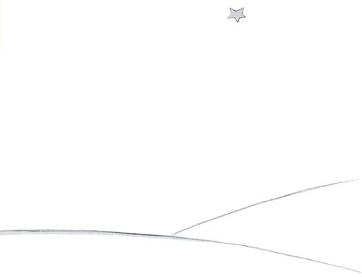</div>'];function cj(){return ti.jsxs(ti.Fragment,{children:[ti.jsxs("section",{className:"cs-hero",id:"hero-section",children:[ti.jsx("h1",{className:"cs-hero-title",id:"hero-title",children:"Le Petit Prince"}),ti.jsx("h2",{className:"cs-hero-subtitle",id:"hero-subtitle",children:"Antoine de Saint-Exupéry"}),ti.jsxs("div",{className:"cs-tarfaya-tribute",id:"hero-tribute",children:["« S'il vous plaît... dessine-moi un mouton ! »",ti.jsx("br",{}),"Faites défiler pour ouvrir le conte."]})]}),ti.jsx("div",{className:"cs-novel-container",id:"novel-container",children:Rj.map((t,a)=>ti.jsx("article",{className:"t-chapter-node",id:`chapter-card-${a}`,children:ti.jsx("div",{dangerouslySetInnerHTML:{__html:t}})},a))}),ti.jsx(Fj,{})]})}_g.createRoot(document.getElementById("root")).render(ti.jsx(J.StrictMode,{children:ti.jsx(cj,{})}));</script>
    <style rel="stylesheet" crossorigin>/*! tailwindcss v4.3.0 | MIT License | https://tailwindcss.com */@layer properties{@supports (((-webkit-hyphens:none)) and (not (margin-trim:inline))) or ((-moz-orient:inline) and (not (color:rgb(from red r g b)))){*,:before,:after,::backdrop{--tw-rotate-x:initial;--tw-rotate-y:initial;--tw-rotate-z:initial;--tw-skew-x:initial;--tw-skew-y:initial;--tw-border-style:solid;--tw-font-weight:initial;--tw-tracking:initial;--tw-shadow:0 0 #0000;--tw-shadow-color:initial;--tw-shadow-alpha:100%;--tw-inset-shadow:0 0 #0000;--tw-inset-shadow-color:initial;--tw-inset-shadow-alpha:100%;--tw-ring-color:initial;--tw-ring-shadow:0 0 #0000;--tw-inset-ring-color:initial;--tw-inset-ring-shadow:0 0 #0000;--tw-ring-inset:initial;--tw-ring-offset-width:0px;--tw-ring-offset-color:#fff;--tw-ring-offset-shadow:0 0 #0000;--tw-blur:initial;--tw-brightness:initial;--tw-contrast:initial;--tw-grayscale:initial;--tw-hue-rotate:initial;--tw-invert:initial;--tw-opacity:initial;--tw-saturate:initial;--tw-sepia:initial;--tw-drop-shadow:initial;--tw-drop-shadow-color:initial;--tw-drop-shadow-alpha:100%;--tw-drop-shadow-size:initial;--tw-backdrop-blur:initial;--tw-backdrop-brightness:initial;--tw-backdrop-contrast:initial;--tw-backdrop-grayscale:initial;--tw-backdrop-hue-rotate:initial;--tw-backdrop-invert:initial;--tw-backdrop-opacity:initial;--tw-backdrop-saturate:initial;--tw-backdrop-sepia:initial;--tw-ease:initial}}}@layer theme{:root,:host{--font-sans:"Helvetica Neue", Helvetica, Arial, sans-serif;--font-mono:ui-monospace, SFMono-Regular, Menlo, Monaco, Consolas, "Liberation Mono", "Courier New", monospace;--color-orange-100:oklch(95.4% .038 75.164);--color-orange-500:oklch(70.5% .213 47.604);--color-gray-50:oklch(98.5% .002 247.839);--color-gray-100:oklch(96.7% .003 264.542);--color-gray-200:oklch(92.8% .006 264.531);--color-gray-400:oklch(70.7% .022 261.325);--color-gray-500:oklch(55.1% .027 264.364);--color-gray-600:oklch(44.6% .03 256.802);--color-gray-700:oklch(37.3% .034 259.733);--color-gray-800:oklch(27.8% .033 256.848);--color-gray-900:oklch(21% .034 264.665);--color-black:#000;--color-white:#fff;--spacing:.25rem;--container-md:28rem;--container-4xl:56rem;--text-xs:.75rem;--text-xs--line-height:calc(1 / .75);--text-sm:.875rem;--text-sm--line-height:calc(1.25 / .875);--text-2xl:1.5rem;--text-2xl--line-height:calc(2 / 1.5);--font-weight-medium:500;--font-weight-semibold:600;--tracking-tight:-.025em;--tracking-wider:.05em;--radius-lg:.5rem;--radius-xl:.75rem;--radius-2xl:1rem;--ease-in:cubic-bezier(.4, 0, 1, 1);--ease-out:cubic-bezier(0, 0, .2, 1);--ease-in-out:cubic-bezier(.4, 0, .2, 1);--blur-sm:8px;--default-transition-duration:.15s;--default-transition-timing-function:cubic-bezier(.4, 0, .2, 1);--default-font-family:var(--font-sans);--default-mono-font-family:var(--font-mono);--font-body:Georgia, serif;--font-display:"Helvetica Neue", Helvetica, Arial, sans-serif;--font-playfair:"Helvetica Neue", Helvetica, Arial, sans-serif}}@layer base{*,:after,:before,::backdrop{box-sizing:border-box;border:0 solid;margin:0;padding:0}::file-selector-button{box-sizing:border-box;border:0 solid;margin:0;padding:0}html,:host{-webkit-text-size-adjust:100%;-moz-tab-size:4;tab-size:4;line-height:1.5;font-family:"Helvetica Neue", Helvetica, Arial, sans-serif;font-feature-settings:var(--default-font-feature-settings,normal);font-variation-settings:var(--default-font-variation-settings,normal);-webkit-tap-highlight-color:transparent}hr{height:0;color:inherit;border-top-width:1px}abbr:where([title]){-webkit-text-decoration:underline dotted;text-decoration:underline dotted}h1,h2,h3,h4,h5,h6{font-size:inherit;font-weight:inherit}a{color:inherit;-webkit-text-decoration:inherit;text-decoration:inherit}b,strong{font-weight:bolder}code,kbd,samp,pre{font-family:var(--default-mono-font-family,ui-monospace, SFMono-Regular, Menlo, Monaco, Consolas, "Liberation Mono", "Courier New", monospace);font-feature-settings:var(--default-mono-font-feature-settings,normal);font-variation-settings:var(--default-mono-font-variation-settings,normal);font-size:1em}small{font-size:80%}sub,sup{vertical-align:baseline;font-size:75%;line-height:0;position:relative}sub{bottom:-.25em}sup{top:-.5em}table{text-indent:0;border-color:inherit;border-collapse:collapse}:-moz-focusring{outline:auto}progress{vertical-align:baseline}summary{display:list-item}ol,ul,menu{list-style:none}img,svg,video,canvas,audio,iframe,embed,object{vertical-align:middle;display:block}img,video{max-width:100%;height:auto}button,input,select,optgroup,textarea{font:inherit;font-feature-settings:inherit;font-variation-settings:inherit;letter-spacing:inherit;color:inherit;opacity:1;background-color:#0000;border-radius:0}::file-selector-button{font:inherit;font-feature-settings:inherit;font-variation-settings:inherit;letter-spacing:inherit;color:inherit;opacity:1;background-color:#0000;border-radius:0}:where(select:is([multiple],[size])) optgroup{font-weight:bolder}:where(select:is([multiple],[size])) optgroup option{padding-inline-start:20px}::file-selector-button{margin-inline-end:4px}::placeholder{opacity:1}@supports (not ((-webkit-appearance:-apple-pay-button))) or (contain-intrinsic-size:1px){::placeholder{color:currentColor}@supports (color:color-mix(in lab,red,red)){::placeholder{color:color-mix(in oklab,currentcolor 50%,transparent)}}}textarea{resize:vertical}::-webkit-search-decoration{-webkit-appearance:none}::-webkit-date-and-time-value{min-height:1lh;text-align:inherit}::-webkit-datetime-edit{display:inline-flex}::-webkit-datetime-edit-fields-wrapper{padding:0}::-webkit-datetime-edit{padding-block:0}::-webkit-datetime-edit-year-field{padding-block:0}::-webkit-datetime-edit-month-field{padding-block:0}::-webkit-datetime-edit-day-field{padding-block:0}::-webkit-datetime-edit-hour-field{padding-block:0}::-webkit-datetime-edit-minute-field{padding-block:0}::-webkit-datetime-edit-second-field{padding-block:0}::-webkit-datetime-edit-millisecond-field{padding-block:0}::-webkit-datetime-edit-meridiem-field{padding-block:0}::-webkit-calendar-picker-indicator{line-height:1}:-moz-ui-invalid{box-shadow:none}button,input:where([type=button],[type=reset],[type=submit]){-webkit-appearance:button;-moz-appearance:button;appearance:button}::file-selector-button{-webkit-appearance:button;-moz-appearance:button;appearance:button}::-webkit-inner-spin-button{height:auto}::-webkit-outer-spin-button{height:auto}[hidden]:where(:not([hidden=until-found])){display:none!important}}@layer components;@layer utilities{.invisible{visibility:hidden}.visible{visibility:visible}.absolute{position:absolute}.fixed{position:fixed}.relative{position:relative}.inset-0{inset:calc(var(--spacing) * 0)}.top-4{top:calc(var(--spacing) * 4)}.right-4{right:calc(var(--spacing) * 4)}.z-50{z-index:50}.mx-auto{margin-inline:auto}.mb-2{margin-bottom:calc(var(--spacing) * 2)}.mb-4{margin-bottom:calc(var(--spacing) * 4)}.mb-6{margin-bottom:calc(var(--spacing) * 6)}.ml-1{margin-left:calc(var(--spacing) * 1)}.block{display:block}.contents{display:contents}.flex{display:flex}.hidden{display:none}.inline{display:inline}.table{display:table}.h-16{height:calc(var(--spacing) * 16)}.w-16{width:calc(var(--spacing) * 16)}.w-full{width:100%}.max-w-4xl{max-width:var(--container-4xl)}.max-w-md{max-width:var(--container-md)}.flex-1{flex:1}.flex-shrink-0{flex-shrink:0}.transform{transform:var(--tw-rotate-x,) var(--tw-rotate-y,) var(--tw-rotate-z,) var(--tw-skew-x,) var(--tw-skew-y,)}.resize{resize:both}.flex-col{flex-direction:column}.flex-wrap{flex-wrap:wrap}.items-center{align-items:center}.justify-center{justify-content:center}.gap-2{gap:calc(var(--spacing) * 2)}.gap-4{gap:calc(var(--spacing) * 4)}.truncate{text-overflow:ellipsis;white-space:nowrap;overflow:hidden}.overflow-hidden{overflow:hidden}.rounded-2xl{border-radius:var(--radius-2xl)}.rounded-full{border-radius:3.40282e38px}.rounded-lg{border-radius:var(--radius-lg)}.rounded-xl{border-radius:var(--radius-xl)}.border{border-style:var(--tw-border-style);border-width:1px}.border-gray-200{border-color:var(--color-gray-200)}.bg-black{background-color:var(--color-black)}.bg-black\/60{background-color:#0009}@supports (color:color-mix(in lab,red,red)){.bg-black\/60{background-color:color-mix(in oklab,var(--color-black) 60%,transparent)}}.bg-gray-50{background-color:var(--color-gray-50)}.bg-gray-900{background-color:var(--color-gray-900)}.bg-orange-100{background-color:var(--color-orange-100)}.bg-white{background-color:var(--color-white)}.p-2{padding:calc(var(--spacing) * 2)}.p-2\.5{padding:calc(var(--spacing) * 2.5)}.p-4{padding:calc(var(--spacing) * 4)}.p-6{padding:calc(var(--spacing) * 6)}.px-3{padding-inline:calc(var(--spacing) * 3)}.px-4{padding-inline:calc(var(--spacing) * 4)}.py-2{padding-block:calc(var(--spacing) * 2)}.py-8{padding-block:calc(var(--spacing) * 8)}.pt-4{padding-top:calc(var(--spacing) * 4)}.pb-2{padding-bottom:calc(var(--spacing) * 2)}.text-center{text-align:center}.font-display{font-family:var(--font-display)}.font-mono{font-family:var(--font-mono)}.font-sans{font-family:var(--font-sans)}.text-2xl{font-size:var(--text-2xl);line-height:var(--tw-leading,var(--text-2xl--line-height))}.text-sm{font-size:var(--text-sm);line-height:var(--tw-leading,var(--text-sm--line-height))}.text-xs{font-size:var(--text-xs);line-height:var(--tw-leading,var(--text-xs--line-height))}.font-medium{--tw-font-weight:var(--font-weight-medium);font-weight:var(--font-weight-medium)}.font-semibold{--tw-font-weight:var(--font-weight-semibold);font-weight:var(--font-weight-semibold)}.tracking-tight{--tw-tracking:var(--tracking-tight);letter-spacing:var(--tracking-tight)}.tracking-wider{--tw-tracking:var(--tracking-wider);letter-spacing:var(--tracking-wider)}.text-gray-400{color:var(--color-gray-400)}.text-gray-500{color:var(--color-gray-500)}.text-gray-700{color:var(--color-gray-700)}.text-gray-900{color:var(--color-gray-900)}.text-orange-500{color:var(--color-orange-500)}.text-white{color:var(--color-white)}.uppercase{text-transform:uppercase}.shadow-xl{--tw-shadow:0 20px 25px -5px var(--tw-shadow-color,#0000001a), 0 8px 10px -6px var(--tw-shadow-color,#0000001a);box-shadow:var(--tw-inset-shadow),var(--tw-inset-ring-shadow),var(--tw-ring-offset-shadow),var(--tw-ring-shadow),var(--tw-shadow)}.blur{--tw-blur:blur(8px);filter:var(--tw-blur,) var(--tw-brightness,) var(--tw-contrast,) var(--tw-grayscale,) var(--tw-hue-rotate,) var(--tw-invert,) var(--tw-saturate,) var(--tw-sepia,) var(--tw-drop-shadow,)}.drop-shadow{--tw-drop-shadow-size:drop-shadow(0 1px 2px var(--tw-drop-shadow-color,#0000001a)) drop-shadow(0 1px 1px var(--tw-drop-shadow-color,#0000000f));--tw-drop-shadow:drop-shadow(0 1px 2px #0000001a) drop-shadow(0 1px 1px #0000000f);filter:var(--tw-blur,) var(--tw-brightness,) var(--tw-contrast,) var(--tw-grayscale,) var(--tw-hue-rotate,) var(--tw-invert,) var(--tw-saturate,) var(--tw-sepia,) var(--tw-drop-shadow,)}.filter{filter:var(--tw-blur,) var(--tw-brightness,) var(--tw-contrast,) var(--tw-grayscale,) var(--tw-hue-rotate,) var(--tw-invert,) var(--tw-saturate,) var(--tw-sepia,) var(--tw-drop-shadow,)}.backdrop-blur-sm{--tw-backdrop-blur:blur(var(--blur-sm));-webkit-backdrop-filter:var(--tw-backdrop-blur,) var(--tw-backdrop-brightness,) var(--tw-backdrop-contrast,) var(--tw-backdrop-grayscale,) var(--tw-backdrop-hue-rotate,) var(--tw-backdrop-invert,) var(--tw-backdrop-opacity,) var(--tw-backdrop-saturate,) var(--tw-backdrop-sepia,);backdrop-filter:var(--tw-backdrop-blur,) var(--tw-backdrop-brightness,) var(--tw-backdrop-contrast,) var(--tw-backdrop-grayscale,) var(--tw-backdrop-hue-rotate,) var(--tw-backdrop-invert,) var(--tw-backdrop-opacity,) var(--tw-backdrop-saturate,) var(--tw-backdrop-sepia,)}.transition{transition-property:color,background-color,border-color,outline-color,text-decoration-color,fill,stroke,--tw-gradient-from,--tw-gradient-via,--tw-gradient-to,opacity,box-shadow,transform,translate,scale,rotate,filter,-webkit-backdrop-filter,backdrop-filter,display,content-visibility,overlay,pointer-events;transition-timing-function:var(--tw-ease,var(--default-transition-timing-function));transition-duration:var(--tw-duration,var(--default-transition-duration))}.transition-colors{transition-property:color,background-color,border-color,outline-color,text-decoration-color,fill,stroke,--tw-gradient-from,--tw-gradient-via,--tw-gradient-to;transition-timing-function:var(--tw-ease,var(--default-transition-timing-function));transition-duration:var(--tw-duration,var(--default-transition-duration))}.ease-in{--tw-ease:var(--ease-in);transition-timing-function:var(--ease-in)}.ease-in-out{--tw-ease:var(--ease-in-out);transition-timing-function:var(--ease-in-out)}.ease-out{--tw-ease:var(--ease-out);transition-timing-function:var(--ease-out)}@media(hover:hover){.hover\:bg-gray-100:hover{background-color:var(--color-gray-100)}.hover\:bg-gray-800:hover{background-color:var(--color-gray-800)}.hover\:text-gray-600:hover{color:var(--color-gray-600)}}}body{color:#1a1a1a;font-family:var(--font-sans);background-color:#fdfcf8;overflow-x:hidden}.cs-hero{flex-direction:column;justify-content:center;align-items:center;height:100vh;display:flex;position:relative}.cs-hero:before{content:"";z-index:-1;background:radial-gradient(circle,#0000,#fdfcf8 80%),url('data:image/svg+xml;utf8,<svg width="100" height="100" viewBox="0 0 100 100" xmlns="http://www.w3.org/2000/svg"><filter id="noise"><feTurbulence type="fractalNoise" baseFrequency="0.65" numOctaves="3" stitchTiles="stitch"/></filter><rect width="100" height="100" filter="url(\'%23noise\')" opacity="0.04"/></svg>');position:absolute;top:0;right:0;bottom:0;left:0}.cs-hero-title{font-family:var(--font-display);letter-spacing:.02em;text-transform:uppercase;margin-bottom:1rem;font-size:5rem}.cs-hero-subtitle{font-family:var(--font-playfair);color:#555;margin-bottom:3rem;font-size:1.5rem;}.cs-tarfaya-tribute{font-family:var(--font-display);letter-spacing:.05em;text-transform:uppercase;color:#888;text-align:center;font-size:.9rem;position:absolute;bottom:2rem}.cs-novel-container{background-color:#fdfcf8;flex-direction:column;align-items:center;padding:4rem 1rem;display:flex}.t-chapter-node{box-sizing:border-box;background-color:#fdfcf8;border:1px solid #e8e6da;width:100%;max-width:800px;min-height:80vh;margin-bottom:4rem;padding:4rem 5rem;box-shadow:0 10px 30px #00000008}.t-chapter-node p{font-family:var(--font-body);text-indent:1.5em;text-align:justify;color:#1a1a1a;margin-bottom:0;font-size:1.35rem;line-height:1.8}.t-chapter-node p:first-of-type{text-indent:0}.t-chapter-node p:has(+h1),.t-chapter-node p:has(+h2),.t-chapter-node p:has(+h3){margin-bottom:2rem}.t-chapter-node h1{font-family:var(--font-display);letter-spacing:.02em;text-transform:uppercase;text-align:center;break-before:page;margin-top:4rem;margin-bottom:2rem;font-size:3rem}.t-chapter-node h2{font-family:var(--font-playfair);color:#333;text-align:center;margin-top:3rem;margin-bottom:1.5rem;font-size:1.8rem;}.t-chapter-node h3{font-family:var(--font-playfair);color:#555;text-align:center;margin-top:2rem;margin-bottom:1.5rem;font-size:1.4rem;font-weight:600}.scroll-track{width:100%}@media(max-width:1024px){.cs-hero-title{font-size:4rem}}@media(max-width:768px){.cs-hero-title{text-align:center;padding:0 1rem;font-size:3rem}.cs-hero-subtitle{text-align:center;padding:0 1rem;font-size:1.25rem}.cs-novel-container{padding:2rem 1rem}.t-chapter-node{margin-bottom:2rem;padding:3rem 2rem}.t-chapter-node p{font-size:1.2rem;line-height:1.7}.t-chapter-node h1{margin-top:2.5rem;font-size:2.25rem}.t-chapter-node h2{font-size:1.5rem}}@media(max-width:480px){.cs-hero-title{font-size:2.2rem}.cs-hero-subtitle{font-size:1.1rem}.t-chapter-node{margin-bottom:1.5rem;padding:2rem 1.25rem}.t-chapter-node p{text-align:left;font-size:1.1rem;line-height:1.6}.t-chapter-node h1{margin-top:2rem;font-size:1.8rem}.t-chapter-node h2{font-size:1.3rem}}.cs-footer{background-color:#fdfcf8;border-top:1px solid #e8e6da;margin-top:4rem}.cs-btn{font-family:var(--font-display);color:#1a1a1a;cursor:pointer;background:#fff;border:1px solid #e8e6da;border-radius:9999px;align-items:center;gap:.5rem;padding:.75rem 1.5rem;font-size:1.1rem;transition:all .2s;display:inline-flex;box-shadow:0 2px 5px #00000005}.cs-btn:hover{background:#f8f7f1;transform:translateY(-1px);box-shadow:0 4px 10px #0000000d}.cs-btn-crypto{color:#fff;background:#1a1a1a;border-color:#1a1a1a}.cs-btn-crypto:hover{background:#333}.lpp-img-container{justify-content:center;align-items:center;width:100%;margin:3rem 0;display:flex}.lpp-illustration{mix-blend-mode:multiply;border-radius:8px;max-width:100%;height:auto;max-height:440px;transition:transform .3s;box-shadow:0 4px 20px #00000008}.lpp-illustration:hover{transform:scale(1.02)}@property --tw-rotate-x{syntax:"*";inherits:false}@property --tw-rotate-y{syntax:"*";inherits:false}@property --tw-rotate-z{syntax:"*";inherits:false}@property --tw-skew-x{syntax:"*";inherits:false}@property --tw-skew-y{syntax:"*";inherits:false}@property --tw-border-style{syntax:"*";inherits:false;initial-value:solid}@property --tw-font-weight{syntax:"*";inherits:false}@property --tw-tracking{syntax:"*";inherits:false}@property --tw-shadow{syntax:"*";inherits:false;initial-value:0 0 #0000}@property --tw-shadow-color{syntax:"*";inherits:false}@property --tw-shadow-alpha{syntax:"<percentage>";inherits:false;initial-value:100%}@property --tw-inset-shadow{syntax:"*";inherits:false;initial-value:0 0 #0000}@property --tw-inset-shadow-color{syntax:"*";inherits:false}@property --tw-inset-shadow-alpha{syntax:"<percentage>";inherits:false;initial-value:100%}@property --tw-ring-color{syntax:"*";inherits:false}@property --tw-ring-shadow{syntax:"*";inherits:false;initial-value:0 0 #0000}@property --tw-inset-ring-color{syntax:"*";inherits:false}@property --tw-inset-ring-shadow{syntax:"*";inherits:false;initial-value:0 0 #0000}@property --tw-ring-inset{syntax:"*";inherits:false}@property --tw-ring-offset-width{syntax:"<length>";inherits:false;initial-value:0}@property --tw-ring-offset-color{syntax:"*";inherits:false;initial-value:#fff}@property --tw-ring-offset-shadow{syntax:"*";inherits:false;initial-value:0 0 #0000}@property --tw-blur{syntax:"*";inherits:false}@property --tw-brightness{syntax:"*";inherits:false}@property --tw-contrast{syntax:"*";inherits:false}@property --tw-grayscale{syntax:"*";inherits:false}@property --tw-hue-rotate{syntax:"*";inherits:false}@property --tw-invert{syntax:"*";inherits:false}@property --tw-opacity{syntax:"*";inherits:false}@property --tw-saturate{syntax:"*";inherits:false}@property --tw-sepia{syntax:"*";inherits:false}@property --tw-drop-shadow{syntax:"*";inherits:false}@property --tw-drop-shadow-color{syntax:"*";inherits:false}@property --tw-drop-shadow-alpha{syntax:"<percentage>";inherits:false;initial-value:100%}@property --tw-drop-shadow-size{syntax:"*";inherits:false}@property --tw-backdrop-blur{syntax:"*";inherits:false}@property --tw-backdrop-brightness{syntax:"*";inherits:false}@property --tw-backdrop-contrast{syntax:"*";inherits:false}@property --tw-backdrop-grayscale{syntax:"*";inherits:false}@property --tw-backdrop-hue-rotate{syntax:"*";inherits:false}@property --tw-backdrop-invert{syntax:"*";inherits:false}@property --tw-backdrop-opacity{syntax:"*";inherits:false}@property --tw-backdrop-saturate{syntax:"*";inherits:false}@property --tw-backdrop-sepia{syntax:"*";inherits:false}@property --tw-ease{syntax:"*";inherits:false}</style>
</head>
  <body>
    <div id="root"></div>
  </body>
</html>

